Психологічні особливості формування резильєнтності у волонтерів
АНОТАЦІЯ
Барінов С.А. Психологічні особливості формування резильєнтності у волонтерів. – Кваліфікаційна наукова робота на правах рукопису.
Дисертація на здобуття наукового ступеня доктора філософії у галузі знань 05 – соціальні та поведінкові науки, спеціальність 053 – психологія. – Інститут психології імені Г. С. Костюка НАПН України, Київ, 2025.
У дисертації теоретично обґрунтовано й експериментально вивчено проблему формування резильєнтності волонтерів. Дисертаційна робота є самостійним, цілісним і завершеним дослідженням, в якому представлено теоретичні та практичні аспекти психологічних чинників та умов формування резильєнтності волонетрів. Визначено наукову новизну та теоретичну значущість наукової праці, які полягають у тому, що:
вперше:
- створено концептуальну модель поетапного формування резильєнтності волонтерів на особистісному, мотиваційному, регуляторному та поведінковому рівні;
- доведено провідне значення допінгу пошуку соціальної підтримки серед психологічних пре дикторів резильєнтності волонтерів;
- уточнено:
- вікову і статеву специфіку резильєнтності у волонтерів;
- лінійну залежність рівня резильєнтності особистості від стажу волонтерської діяльності;
- позитивну дію чинників особистісної зрілості, емоційної стабільності, екзитсенційності та екзистенційної вмотивованості на рівні резильєнтності волонтерів;
- дістали подальшого розвитку:
- засоби психологічного супроводу волонтерської діяльності через створення та реалізацію програми формування резильєнтності волонтерів;
- засоби психодіагностики суб’єкта діяльності через створення валідної та надійної методики альтруїстичної спрямованості волонтера;
- уявлення про резильєнтність як ресурс подолання дії негативних чинників професійної діяльності на прикладі волонтерства.
Робота містить нові науково обґрунтовані теоретичні та практичні результати, що є суттєвим внеском у розвиток вітчизняної психології.
Дисертаційну роботу присвячено теоретичному обґрунтуванню та експериментальному вивченню проблем окреслення основних напрямів роботи з волонтерами з метою підвищення їх рівня резильєнтності.
Практичне значення роботи полягає у тому, що емпірично визначено чинники та предиктори резильєнтності волонетрів, які були враховані у створенній та впровадженій програмі її формування. Було створено авторську методику діагностики альтруїстичної спрямованості волонтера, валідність та надійність якої доведено.
У першому розділі на основі теоретичного аналізу стану дослідженості проблеми встановлено, що волонтерство є процесом багаторівневої взаємодії особистісних і соціальних чинників, який одночасно впливає на саморозвиток волонтера, формування просоціальної ідентичності та колективної стійкості спільноти. Воно може. Волонтерська активність виконує як адаптивну, так і регулятивну функцію, знижуючи відчуття безпорадності, сприяючи осмисленню травматичного досвіду, формуванню моральних цінностей, соціальної зрілості, емпатії, почуття відповідальності, але водночас може супроводжуватись емоційним виснаженням, вторинною травматизацією та професійним вигоранням, що зумовлює необхідність розвитку психологічних ресурсів стійкості волонтерів. У контексті формування здатностей волонтера чинити опір стресу особливе значення набуває феномен резильєнтності, що виступає динамічним механізмом підтримання адаптивного функціонування у стресових умовах. Резильєнтність формується у взаємодії індивідуальних, соціальних і контекстуальних факторів і може бути розвинена через психологічну підготовку, навчання саморегуляції та соціальну підтримку. В умовах війни волонтерська діяльність вимагає високого рівня резильєнтності як базового ресурсу подолання стресу, збереження психічного здоров’я та забезпечення ефективності допомоги.
У другому розділі було здійснено порівняльний аналіз резильєнтності за факторами статі, віку та стажу діяльності, який виявив, що волонтери з найбільшим стажем мають найвищі показники резильєнтності, за якими вони значущо перевищують менш досвідчених волонтерів. Жінки-волонтерки поступаються чоловікам за більшістю показників резильєнтності. Визначено нелінійну вікову специфіку резильєнтності волонтерів: у періоді середньої дорослості вони характеризуються вищими показниками резильєнтності у порівнянні із періодами ранньої та пізньої дорослості, утім великий стаж волонтерської діяльності у молодому віці позитивно позначається на рівні резильєнтності, особливо орієнтації на виклики і досягнення цілей у чоловіків та конструктивних копінгів – у жінок.
Емпірично визначено психологічні кореляти резильєнтності волонтерів. Орієнтація на виклики і досягнення цілей позитивно корелює із загальним показником особистісної зрілості, а особливо із показниками життєвої філософії. Самоконтроль та здатність долати труднощі позитивно корелює із показниками відповідальності особистісної зрілості. Самодетермінація та осмисленість життя позитивно корелюють із усіма показниками особистісної зрілості, особливо із життєвою філософією, глибинністю переживань та автономністю, а також із екзистенцінйою самотрансценденцією.
Стресостійкість має сильний зв’язок із самоприйняттям особистісної зрілості, екзистенцінйою свободою. Конструктивні копінги резильєнтності мають позитивні зв’язки із синергійністю особистісної зрілості. Соціальна контактність сильно пов’язана із показниками толерантності та контактності особистісної зрілості, фундаментальної екзистенційної мотивації співвіднесеності, часу та близькості. Оптимальна регуляція позитивно корелює із самоприйняттям особистісної зрілості, екзистенційною самотрансцендентністю та відповідальністю, фундаментальною екзистенційною мотивацією опори, захищеності і простору.
Відкритість життєвому досвіду корелює із показниками креативності особистісної зрілості, екзистенцінйої свободи та відповідальності, фундаментальної екзистенційної мотивації зацікавленої уваги, справедливого ставлення та визначення цінності. Усі показники резильєнтності волонтерів позитивно корелюють із усіма фундаментальними екзистенційними мотиваціями, екзистенційністю, альтруїстичною спрямованістю та емоційною стабільністю, копінгами пошуку соціальної підтримки та планування вирішення проблеми і негативно – із реактивною та ситуативною тривожністю.
Емпірично визначено низку психологічних чинників рівня резильєнтності у волонтерів. Критично низький рівень особистісної зрілості, низький рівень екзистенційності, фундаментальних екзистенцінйих мотивацій, емоційної стабільності, висока тривожність є чинниками зниження резильєнтності у волонтерів. Аналізуючи типологію копінгової поведінки волонтерів було отримано чотири профілі – «Домінування копінгу уникнення», «Домінування копінгу конфронтації», «Відмова від відповідальності за вирішення проблеми», «Домінування конструктивних копінгів», де перші два поступаються рівнем резильєнтності двом останнім.
Еміпрично визначено позитивну роль стажу волонтерської діяльності у формуванні резильєнтності. Волонтери-початківці при критично низькому рівні особистісної зрілості, низьких рівнях екзистенційності, екзистенційної мотивації, альтруїстичної спрямованості, а також високому нейротизмі та тривожності характеризуються найнижчими показниками самоконтролю, оптимальної регуляції та здатності долати труднощі, самодетермінації та осмисленості життя, загальної резильєнтності. Волонтери, які розпочали допомагаючу діяльність під час війни, та особливо задовго до її початку, при високому рівні особистісної зрілості, альтруїстичної спрямованості, екзистенційності та екзистенцінйої вмотивованості, емоційної стабільності та низькій та помірній тривожності мають найвищі показники резильєнтності.
На основі даних регресійного аналізу було визначено, що найбільш впливовими предикторами резилдьєнтності у волонтерів є високі показники копінгу пошуку соціальної підтримки, планування вирішення проблем, самоприйняття та креативності та низькі – нейротизму. Самотрансцендентність, екзистенційна мотивація співвіднесеності, часу і близькості позитивно визначають більшість параметрів резильєнтності волонтерів.
У третьому розділі розроблено концептуальну модель та структурно-змістову характеристику психологічної програми формування резильєнтності волонтерів, що ураховує поетапний формувальний вплив на особистісному, мотиваційному, регуляторному та поведінковому рівні. Модульна структура програми реалізувалася у груповому форматі із використанням психоосвітніх, рефлексивних та практико-орієнтованих методів і була програма спрямована не лише на розвиток окремих психологічних навичок або ресурсів, а на формування внутрішньої узгодженості, автономної мотивації, емоційної стабільності та зрілої альтруїстичної спрямованості волонтерської діяльності. Упровадження програми спричинило зростання показників резильєнтності в учасників експериментальної групи, натомість у контрольній групі істотних зрушень показників резильєнтності не відбулося.
- Представлене дослідження не вичерпує усіх аспектів проблеми резильєнтності волонеитрів і перспективами подальших наукових розвідок виступимуть в теоретичній сфері - визначення поряд із специфікою резильєнтності особливості інших психологічних ресурсів та компетентностей волонтерів різних галузей і напрямів діяльності, у практичній сфері – у розробці психологічних методів та технологій формування резильєнтності волонетрів в умовах війни та післявоєнного відновлення України.
Ключові слова: волонетрство, резильєнтність, копінг-стратегії, особистісна зрілість, альтруїстична спрямованість, екзистенційність, фундаментальні екзистенцій ні мотивації, нейротизм, тривожність, ресурси, волонтери, програма психологічного супроводу.
ABSTRAKT
Barinov S.A. Psychological features of the formation of resilience in volunteers. – Qualified scientific work as a manuscript.
A thesis for the degree of Doctor of Philosophy in the field of knowledge 05 – social and behavioral sciences, specialty 053 – psychology. – G. S. Kostiuk Institute of Psychology, National Academy of Educational Sciences of Ukraine, Kyiv, 2025.
The dissertation theoretically and experimentally studied the problem of forming the resilience of volunteers. The dissertation is an independent, complete and complete research, which presents the theoretical and practical aspects of psychological officials and the formation of the minds of the resilience of volunteers. The scientific novelty and theoretical significance of the scientific work are determined, which consist in the fact that:
for the first time:
- a conceptual model of the phased formation of volunteers' resilience at the personal, motivational, regulatory and behavioral levels has been created;
- the leading importance of doping in the search for social support among the psychological predictors of volunteers' resilience has been proven;
- the age and gender specificity of resilience in volunteers has been clarified;
- the linear dependence of the level of individual resilience on the experience of volunteer activity;
- the positive effect of factors of personal maturity, emotional stability, existentiality and existential motivation on the level of volunteers' resilience;
- the following have been further developed:
- means of psychological support for volunteer activity through the creation and implementation of a program for the formation of volunteers' resilience;
- means of psychodiagnostics of the subject of activity through the creation of a valid and reliable methodology of the volunteer's altruistic orientation;
- the idea of resilience as a resource for overcoming the effects of negative factors of professional activity on the example of volunteering.
The work contains new scientifically substantiated theoretical and practical results, which are a significant contribution to the development of domestic psychology.
The dissertation work is devoted to the theoretical substantiation and experimental study of the problems of outlining the main directions of work with volunteers in order to increase their level of resilience.
The practical significance of the work lies in the fact that the factors and predictors of the resilience of volunteers have been empirically determined, which were taken into account in the created and implemented program for its formation. An author's methodology for diagnosing the altruistic orientation of a volunteer has been created, the validity and reliability of which have been proven.
In the first section, based on a theoretical analysis of the state of research on the problem, it was established that volunteering is a process of multi-level interaction of personal and social factors, which simultaneously affects the volunteer's self-development, the formation of prosocial identity and the collective resilience of the community. It can. Volunteer activity performs both an adaptive and regulatory function, reducing the feeling of helplessness, contributing to the understanding of traumatic experience, the formation of moral values, social maturity, empathy, a sense of responsibility, but at the same time can be accompanied by emotional exhaustion, secondary traumatization and professional burnout, which necessitates the development of psychological resources for the resilience of volunteers. In the context of the formation of a volunteer's ability to resist stress, the phenomenon of resilience acquires special importance, acting as a dynamic mechanism for maintaining adaptive functioning in stressful conditions. Resilience is formed in the interaction of individual, social and contextual factors and can be developed through psychological preparation, self-regulation training and social support. In war conditions, volunteering requires a high level of resilience as a basic resource for overcoming stress, maintaining mental health and ensuring the effectiveness of assistance.
In the second section, a comparative analysis of resilience by gender, age, and length of service was carried out, which revealed that volunteers with the most experience have the highest resilience indicators, in which they significantly exceed less experienced volunteers. Female volunteers are inferior to men in most resilience indicators. A nonlinear age-specificity of volunteers' resilience was determined: in the period of middle adulthood they are characterized by higher resilience indicators compared to the periods of early and late adulthood, however, a large experience of volunteer activity at a young age has a positive effect on the level of resilience, especially orientation to challenges and goal achievement in men and constructive coping in women.
The psychological correlates of volunteers' resilience were empirically determined. Orientation to challenges and goal achievement positively correlates with the general indicator of personal maturity, and especially with indicators of life philosophy. Self-control and the ability to overcome difficulties are positively correlated with indicators of personal maturity responsibility. Self-determination and meaningfulness of life are positively correlated with all indicators of personal maturity, especially with life philosophy, depth of experiences and autonomy, as well as with existential self-transcendence.
Stress resistance has a strong connection with self-acceptance of personal maturity, existential freedom. Constructive coping of resilience has positive connections with synergy of personal maturity. Social contact is strongly related to indicators of tolerance and contact of personal maturity, fundamental existential motivation of relatedness, time and closeness. Optimal regulation is positively correlated with self-acceptance of personal maturity, existential self-transcendence and responsibility, fundamental existential motivation of support, security and space.
Openness to life experience correlates with indicators of creativity of personal maturity, existential freedom and responsibility, fundamental existential motivation of interested attention, fair attitude and determination of value. All indicators of resilience of volunteers positively correlate with all fundamental existential motivations, existentiality, altruistic orientation and emotional stability, coping of seeking social support and planning to solve the problem and negatively - with reactive and situational anxiety.
A number of psychological factors of the level of resilience in volunteers have been empirically identified. Critically low level of personal maturity, low level of existentiality, fundamental existential motivations, emotional stability, high anxiety are factors of reducing resilience in volunteers. Analyzing the typology of coping behavior of volunteers, four profiles were obtained - "Dominance of avoidance coping", "Dominance of confrontational coping", "Denial of responsibility for solving the problem", "Dominance of constructive coping", where the first two are inferior in terms of resilience to the last two.
Empirically determined the positive role of volunteer experience in the formation of resilience. Novice volunteers with a critically low level of personal maturity, low levels of existentialism, existential motivation, altruistic orientation, as well as high neuroticism and anxiety are characterized by the lowest indicators of self-control, optimal regulation and ability to overcome difficulties, self-determination and meaningfulness of life, and general resilience.
Volunteers who began helping activities during the war, and especially long before its beginning, with a high level of personal maturity, altruistic orientation, existentiality and existential motivation, emotional stability and low and moderate anxiety, have the highest resilience indicators.
Based on the data of regression analysis, it was determined that the most influential predictors of resilience in volunteers are high indicators of coping, seeking social support, planning for problem solving, self-acceptance and creativity, and low indicators of neuroticism. Self-transcendence, existential motivation of relatedness, time and closeness positively determine most parameters of volunteers' resilience.
The third section develops a conceptual model and structural and content characteristics of a psychological program for the formation of volunteers' resilience, which takes into account the phased formative influence at the personal, motivational, regulatory and behavioral levels. The modular structure of the program was implemented in a group format using psychoeducational, reflective and practice-oriented methods and the program was aimed not only at the development of individual psychological skills or resources, but at the formation of internal coherence, autonomous motivation, emotional stability and mature altruistic orientation of volunteer activity. The implementation of the program led to an increase in resilience indicators in the participants of the experimental group, while in the control group there were no significant changes in resilience indicators.
The presented study does not exhaust all aspects of the problem of resilience of volunteers and the prospects for further scientific explorations will be in the theoretical sphere - determining, along with the specifics of resilience, the features of other psychological resources and competencies of volunteers from various industries and areas of activity, in the practical sphere - in the development of psychological methods and technologies for forming the resilience of volunteers in conditions of war and post-war reconstruction of Ukraine.
Keywords: volunteering, resilience, coping strategies, personal maturity, altruistic orientation, existentialism, fundamental existential motivations, neuroticism, anxiety, resources, volunteers, psychological support program.
СПИСОК ОПУБЛІКОВАНИХ ПРАЦЬ ЗА ТЕМОЮ ДИСЕРТАЦІЇ
Статті в наукових фахових виданнях, затверджених МОН України:
- Джіакомуцці С., Кочарян О.С., Барінова Н.В., Барінов С.А. Experiencing and Coping with Trauma in Warfare and Military Conflicts // Психологічне консультування і психотерапія. 2021. Вип. 16. С. 12-29 DOI:
- Кочарян О., Барінова Н., Джіакомуцці С., Барінов С. Техніка метафори: психотерапевтична казуїстика. // Психологічне консультування і психотерапія. 2022. Вип. 17. С. 6-11. DOI:
- Антонович М., Аралова О., Барінов С., Особливості психологічної стійкості (резільєнтності) волонтерок кол.центру сил територіальної оборони Збройних сил України та Національного інформаційного бюро // Психологічне консультування і психотерапія. 2022. Вип. 18. С. 6-14. DOI:
5. Харченко А,. Барінов С., Техніка схематичної візуалізації емоційної сфери в груповій роботі з клієнтами які мають низький рівень рефлективності // Психологічне консультування і психотерапія. 2023. Вип. 19. С. 33-37 DOI:
6. Федосєєв В., Харченко А., Лісеная А., Лісений Є., Кабаргіна В., Барінов С. Психологічні особливості емоційної сфери внутрішньо переміщених осіб першої та другої хвилі // Психологічне консультування і психотерапія. 2024. Вип. 21 С. 35-45 DOI:
7. Кочарян О. , Барінова Н., Барінов С. Точки зростання клієнт - центрованої психотерапії. Психологічне консультування і психотерапія, Вип.22, 2024. С. 15-21. DOI:
8 Харченко А., Федосєєв В., Лісеная А., Лісений Є., Барінов С. Особливості тематичних тенденцій в клієнтських запитах під час воєнного стану та специфіка роботи в КПТ з ними, Психологічне консультування і психотерапія, 2025. 23, С. 13-17 DOI:
9. Барінов С., Шандрук С. Psychodiagnosis of altruistic orientation of a volunteer Вісник ХНПУ імені Г.С. Сковороди. Психологія. 2025. Вип. 73. С.465-474. doi: https://doi.org/10.34142/23129387.2025.73.30
10. Barinov S. Resilience as a resource for overcoming negative impacts of volunteering. Психологічне консультування і психотерапія, 24, 2025, 59-66. DOI:
Публікації у збірниках матеріалів всеукраїнських та міжнародних
наукових конференцій:
- Барінов С.А., Барладін В.М., Остапчук Н.Б. Резильєнтність особистості в умовах кризових соціальних викликів. Збірник наукових праць «Ментальне здоровя в часи викликів: особистість та середовище». Наука. Психологія. Вінниця, 2025. С. 40-44.
- Барінов С. Структурно-змістова модель резильєнтності волонтерів в умовах тривалого стресу : матеріали Міжнародної наукової конференції «Science, Technology, and Society under Global Uncertainty»/ Міжнародний гуманітарний дослідницький центр (м. Бірмінгем, Німеччина, 5 лютого 2026 р.). Research Europe, 2026.
- Барінов С. Психологічні детермінанти формування резильєнтності волонтерів : Science And Information Technologies in The Modern World: Collection of Scientific Papers with Proceedings of the 5th International Scientific and Practical Conference. International Scientific Unity. February 11-13, 2026. Athens, Greece. Р. 400–403.
Публікації, які додатково відображають наукові результати дисертації
14. “Медична психологія”. За загальною редакцією академіка С.Д.Максименка. Том 1. - Київ: “Видавництво Людмила”, 2023. - 512 с. (Авторський колектив: Кочарян О.С. спільно з Баріновою Н.В. і Баріновим С.А. - підрозділ 2.1.7.) ISBN 978-617-555-097-
ВСТУП
Актуальність дослідження. У часи небезпек і катастроф значним чином активізується волонтерський рух. Останні два роки увага закордонних науковців була прикута до різноманітних аспектів волонтерської діяльності під час пандемії COVID-19, у працях українських вчених, крім цього, зверталась увага на події 2013-2022 років (Євромайдан, Антитерористичну операцію (АТО) та Операцію Об’єднаних сил (ООС)). Повномасштабне вторгнення Російської Федерації (РФ) в Україну дало потужний поштовх до подальшого розвитку волонтерського руху, що і зумовлює соціальну значущість даного дослідження. Саме зараз, під час воєнного стану, резильєнтність набуває нового значення та актуальності, бо саме завдяки їй суспільство не паралізоване й «тримає стрій». У теоретичному плані наявний значний доробок вчених зі всього світу, які розробляли й досліджували це явище з різних сторін, проте резильєнтність у волонтерів майже не досліджувалась науковою спільнотою. Натомість доцільно визнати, що у воєнних умовах волонтери є яскравим прикладом психологічно стійких людей, які активно відповідають на виклики сьогодення, незважаючи на страх та переживання, знаходять у собі сили і діють.
Зв’язок роботи з науковими програмами, планами, темами. Дисертаційне дослідження виконувалось у межах планових наукових досліджень лабораторії психології особистості імені П. Р. Чамати «Психологічні технології сприяння позитивному психічному здоров’ю особистості» (2022-2024 рр.; номер держреєстрації – 0122U000305).
Тема дисертаційного дослідження затверджена вченою радою Інституту психології імені Г. С. Костюка НАПН України (протокол №7 від 24 травня 2023 р.) та узгоджена Міжвідомчою радою з координації наукових досліджень з педагогічних та психологічних наук в Україні (протокол №2 від 22 червня 2023 р.).
Об’єкт дослідження – резильєнтність волонтерів як психологічний феномен, що формується та проявляється у процесі волонтерської діяльності.
Предмет дослідження – психологічні чинники, структура та умови формування резильєнтності волонтерів у процесі волонтерської діяльності.
Мета – теоретично обґрунтувати та емпірично дослідити психологічні чинники і умови формування резильєнтності волонтерів, а також розробити й експериментально перевірити ефективність психологічної програми її формування в умовах волонтерської діяльності.
Завдання:
1. Здійснити теоретичний аналіз феномену резильєнтності як ресурсу подолання негативних впливів залучення до волонтерської діяльності.
2. Вивчити рівень резильєнтності у волонтерів в залежності від статі, віку та стажу діяльності.
3. Визначити психологічні кореляти резильєнтності у волонтерів.
4. Визначити психологічні чинники резильєнтності у волонетів.
5. Дослідити роль стажу волонтерської діяльності у становленні резильєнтності особистості.
6. Виявити психологічні предиктори резильєнтності волонтерів.
7. Виявити умови формування резильєнтності волонтерів у межах реалізації програми психологічного супроводу.
Методологічну та теоретичну основу дослідження складають: дослідження резильєнтності (А. Большакова, Е. Грішин, Д. Дубінін, Г. Лазос, Л. Карамушка, О. Кокун, З. Кіреєва, М. Мушкевич, К. Односталко, Л. Сердюк, О. Чиханцова), волонтерської діяльності (Т. Базиль, В. Зливков, О. Кокун, О. Круцюк, С. Лукомська, Т. Лях, В. Перетятько, Н. Підбуцька, Д. Сай, Л. Сердюк, І. Чайка, Г. Юрчинська та ін.), концепції формування резильєнтності у межах гуманістичного (А. Маслоу, Г. Олпорт, К. Роджерс), екзистенційного (М. Босс, А. Ленгле, І. Ялом), когнітивно-поведінкового (А. Бек, А. Елліс), копінг-орієнтованого (С. Фолкман, Р. Лазарус), ресурсного (С. Хобфолл), системного підходів (Н. Башавець, О. Кустовська, Ю. Шабанова) підходів, концепцій само детермінації (Е. Десі, Р. Райан), альтруїстичної спрямованості особистості (Д. Батсон, Г. Олпорт, Е. Фромм).
Методи дослідження. Для досягнення поставленої мети й вирішення завдань дисертаційного дослідження в роботі було використано комплекс взаємодоповнюючих загальнонаукових методів дослідження, вибір яких був обумовлений змістом проблеми, яка вивчається, а саме: теоретичні: аналіз, класифікація, систематизація та узагальнення наукової літератури; емпіричні: тестування; методи обробки та інтерпретації емпіричний даних: кількісний та якісний аналіз (описова статистика; порівняння вибіркових середніх за t-критерієм Стьюдента; кореляційний, регресійний аналіз).
У емпіричному дослідженні були використані наступні психодіагностичні методики: 1) методика діагностики резильєнтності в адаптації Е. Грішина; 2) скорочена версія Шкали резильєнтності (CD-RISC-10) Dr’s Campbell-Sills та Stein в адаптації З. О. Кіреєвої, О. С. Односталко, Б. В. Бірона; 3) авторська методика альтруїстичної спрямованості волонтера; 4) Шкала екзистенції (Existenzskala) А. Ленглє та К. Орглер в адаптації С.
В. Кривцової; 5) Тест екзистенційної сповненості (екзистенційних мотивацій) А. Ленглє в адаптації В. Б. Шумського, О. М. Уколової, Є. М. Осінa, Я. Д. Лупандіної; 6) Опитувальник особистистісної зрілості за методикою О. С. Штепи; 7) Особистісний опитувальник Айзенка EPI (шкала емоційної стабільності-нестабільності); 8) Шкала оцінки рівня реактивної (ситуативної) та особистісної тривожності Ч. Д. Спілберга в адаптації Ю.
Л. Ханіна; 9) Опитувальник способів копінгу Р. Лазаруса та С. Фолкман в адаптації групи дослідників під керівництвом Л. Й. Васермана.
Методи мaтемaтичної cтaтиcтики: описова статистика, кореляційний аналіз, непараметрична статистика Н-Краскала-Уолліса, U Манна – Уітні, дисперсійний аналіз, факторний аналіз, регресійний аналіз, кластерний аналіз.
Експериментальна база дослідження. Дослідницька робота за темою проводилась впродовж 2022-2025 рр. У емпіричному дослідженні взяли участь 127 осіб (49 жінок та 78 чоловіків), віком 18-60 років, які мають різний стаж діяльності в якості волонтера – «початківці» (до 1 року) – 44 особи, «досвідчені» (до 4 років), які почали діяльність на початку повномасштабного вторгнення – 55 осіб, «ветерани», що почали діяльність в якості волонтера понад 4 роки тому, до початку повномасштабного вторгнення і допомагають людям дотепер – 28 осіб. При реалізації та перевірки ефективності комплексної програми формування резильєнтності волонетрів було залучено 43 особи.
Достовірність і надійність результатів дослідження забезпечується якісним теоретичним аналізом, методологічною базою, обґрунтованістю вихідних теоретичних положень, відповідністю підібраного психодіагностичного інструментарію досліджуваній проблемі, меті, об’єкту, предмету та завданням дослідження. Також поєднанням кількісного та якісного методів аналізу даних, змістовним аналізом чинників та залежностей, отриманих на репрезентативній вибірці досліджуваних.
Статистичну обробку емпіричних даних та графічну візуалізацію результатів дослідження здійснено за допомогою статистичної програми Statistica 6.0.
Наукова новизна та теоретичне значення полягає в тому, що:
вперше:
- створено концептуальну модель поетапного формування резильєнтності волонтерів на особистісному, мотиваційному, регуляторному та поведінковому рівні;
- доведено провідне значення допінгу пошуку соціальної підтримки серед психологічних пре дикторів резильєнтності волонтерів;
- уточнено:
- вікову і статеву специфіку резильєнтності у волонтерів;
- лінійну залежність рівня резильєнтності особистості від стажу волонтерської діяльності;
- позитивну дію чинників особистісної зрілості, емоційної стабільності, екзитсенційності та екзистенційної вмотивованості на рівні резильєнтності волонтерів;
- дістали подальшого розвитку:
- засоби психологічного супроводу волонтерської діяльності через створення та реалізацію програми формування резильєнтності волонтерів;
- засоби психодіагностики суб’єкта діяльності через створення валідної та надійної методики альтруїстичної спрямованості волонтера;
- уявлення про резильєнтність як ресурс подолання дії негативних чинників професійної діяльності на прикладі волонтерства.
Теоретичне значення: У рамках даної роботи поняття резильєнтність розгялдається як процес, результат, вольовий психічний стан, особистісна риса та компетентність, які призводять до успішної адаптації до складного або такого, що випробовує, життєвого досвіду, а також до психологічного та духовного зростання після травм та несприятливих життєвих ситуацій, до здатності знаходити у них значення. Було показано резильєнтність як ресурс психологічного благополуччя та ефективності діяльності волонтера. У роботі розроблено концептуальну модель формування резильєнтнсоті волонтерів.
Практичне значення роботи полягає у тому, що емпірично визначено чинники та предиктори резильєнтності волонетрів, які були враховані у створенній та впровадженій програмі її формування. Було створено авторську методику діагностики альтруїстичної спрямованості волонтера, валідність та надійність якої доведено.
Апробація та впровадження результатів дослідження. Основні положення та результати дослідження доповідались на Міжнародній конференції «Клієнт – центрована та експірієнтальної психотерапія сьогодні. Теорія і практика». (16-17 травня 2025 року, м. Варшава, Польща), на ХVIІ Міжнародній науково-практичній конференції «Психологічні основи здоров’я, освіти, науки та самореалізації особистості: клієнт-центрований підхід». (6-29 березня 2025 року, м. Луцьк), на Міжнародній науково-практичній конференції «Психологічні основи здоров’я, освіти, науки та самореалізації особистості (м. Луцьк, Волинський національний університет імені Лесі Українки, 22-29 березня 2024 р.).
Публікації. Отриманні результати дисертаційного дослідження повністю опубліковані в 11 наукових працях, серед них: 10 статей у наукових фахових виданнях, затверджених МОН України, що входять до міжнародних наукометричних баз даних; 1 публікація – навчально-методичного характеру.
Особистий внесок здобувача. Дисертація виконана здобувачем самостійно. Усі сформульовані положення та висновки обґрунтовано на основі особистих досліджень автора. У співавторстві опубліковано девять статей, авторський внесок у кожній з них складає: 25% у статті «Experiencing and Coping with Trauma in Warfare and Military Conflicts», зокрема було проведено теоретичний аналіз проблеми копінг-стратегій в умовах війни, 25% у статті «Техніка метафори: психотерапевтична казуїстика», зокрема було впроваджено техінку метафори та подано аналіз її ефективності на вибірці волонтерів, 50% у статті «Особливості психологічної стійкості (резільєнтності) волонтерок кол.центру сил територіальної оборони Збройних сил України та Національного інформаційного бюро», в якій було проведено та проаналізовано результати діагностики резильєнтності волонтерок кол.центру, 50% у статті «Техніка схематичної візуалізації емоційної сфери в груповій роботі з клієнтами які мають низький рівень рефлективності», в якій було впроваджено техінку схематичної візуалізації та подано аналіз її ефективності на вибірці волонтерів, 15% у статті «Психологічні особливості емоційної сфери внутрішньо переміщених осіб першої та другої хвилі», в якій було проаналізовано результати емпіричного дослідження, 30% у статті «Точки зростання клієнт-центрованої психотерапії», де було здійснено методологічний аналіз проблеми можливостей застосування клієнт-центрованого підходу у психологічній допомозі постраждалих в умовах війни, 25% у статті «Особливості тематичних тенденцій в клієнтських запитах під час воєнного стану та специфіка роботи в КПТ з ними», в якій було здійснено методологічний аналіз проблеми можливостей застосування когнітивно-поведінкового підходу у психологічній допомозі постраждалих в умовах війни, 75% у статті «Psychodiagnosis of altruistic orientation of a volunteer», в якій було розроблено опитувальник, здійснено його апробацію на вибірці волонтерів.
У дисертації ідеї та розробки, які належать співавторам зазначених публікацій, не використовувались.
Структура та обсяг дисертації. Дисертація складається із вступу, трьох розділів, висновків, списку використаних джерел та додатків. Список використаних джерел містить 182 найменування, з них 81 – іноземною мовою. Робота містить 36 таблиць на 31 сторінці, 83 рисунка на 47 сторінках. Основний зміст дисертації викладено на 193 сторінках, загальний обсяг роботи – 271 сторінка.
Розділ 1. Теоретико-методологічні засади дослідження психологічних особливостей формування резильєнтності волонтерів
1.1. Психологічний аналіз волонтерської діяльності як форми соціальної активності
Психологічний аналіз волонтерства передбачає розгляд цього явища як специфічної форми соціальної активності, у якій інтегруються альтруїстичні, морально-етичні, комунікативні та самореалізаційні мотиви особистості. У кризових суспільних ситуаціях, зокрема в умовах війни, волонтерська діяльність стає одним із провідних механізмів підтримання соціальної згуртованості, взаємопідтримки та відновлення базових почуттів безпеки й довіри.
У західній психології феномен волонтерства у складних суспільних і кризових ситуаціях досліджується вже кілька десятиліть. Його вивчення ґрунтується на теоретичних підходах до альтруїзму та просоціальної поведінки, які становлять методологічну основу для розуміння психологічної природи волонтерської активності. Саме ці концепції дозволяють пояснити внутрішні мотиви допомоги іншим, механізми емпатійного залучення, роль морально-ціннісних орієнтацій та емоційних процесів у прийнятті рішень про участь у соціально значущій діяльності.
Однією з впливових теоретичних моделей, що пояснює психологічні механізми такої допоміжної активності, є концепція, розроблена Дж. Пілявін і Х. Чанг. Дослідники здійснили систематизацію емпіричних і теоретичних досліджень феномену допомоги іншим та розробили цілісну соціально-психологічну модель альтруїзму як стійкої диспозиції особистості, яка може еволюціонувати від ситуативного, емоційно зумовленого акту до стабільної характеристики особистості, інтегрованої у структуру морального «Я».
У межах цієї моделі альтруїзм розглядається не як винятковий чи героїчний вчинок, а як регулярна форма соціальної поведінки, яка забезпечує підтримання соціальних зв’язків, зниження напруги у спільноті та розвиток моральної культури суспільства. Мотиви допомоги, згідно з авторами, можуть поєднувати як емоційні (емпатійне співпереживання), так і когнітивно-оцінні компоненти (усвідомлення соціальної значущості дії, відповідальності, взаємності) [177].
З огляду на результати, отримані Дж. Пілявін і Х. Чанг, можна стверджувати, що їхня концепція створює методологічні передумови для аналізу феномена волонтерства як організованої форми альтруїстичної поведінки. У сучасних соціальних умовах волонтерська діяльність може розглядатися як прояв інтегрованої альтруїстичної установки, коли допомога іншим стає не ситуативною реакцією, а свідомо обраною життєвою позицією.
Важливим кроком у розвитку уявлень про психологічні основи альтруїстичної поведінки стала емпатійно-альтруїстична теорія, розроблена Д. Батсоном, який у низці експериментальних досліджень послідовно довів, що головною детермінантою допоміжної поведінки є емпатійне співпереживання – здатність особистості емоційно ідентифікуватися з тим, хто зазнає труднощів чи страждання [122]. В основі його підходу лежить припущення про існування егоїстичної мотивації, спрямованої на зниження власного емоційного дискомфорту, та альтруїстичної, орієнтованої безпосередньо на полегшення страждання іншої людини.
Саме друга, емпатійно зумовлена мотивація, за результатами численних експериментів, визначає глибину та сталість допоміжної поведінки, виступаючи механізмом, який поєднує емоційні, когнітивні та моральні компоненти особистісної регуляції, створюючи психологічну основу альтруїстичних дій [124].
Хоча С. Батсон не досліджував волонтерство безпосередньо, його концепція має суттєве методологічне значення для сучасних психологічних досліджень волонтерської активності, оскільки пояснює, чому люди готові допомагати іншим у ситуаціях соціальної небезпеки, навіть за відсутності зовнішньої винагороди. З позицій цієї теорії волонтерська діяльність може розглядатися як соціально організована форма прояву емпатійно мотивованого альтруїзму, у якій внутрішнє співпереживання та почуття морального обов’язку набувають стабільних поведінкових форм.
Це дозволяє зрозуміти психологічні механізми довготривалої участі у волонтерстві, зокрема в умовах криз і воєнних дій, коли саме емпатійна мотивація стає головним чинником підтримки активності, стійкості та морального самопідкріплення.
У сучасних психологічних теоріях просоціальної поведінки ключове місце відводиться емпатії як механізму, що опосередковує виникнення мотивів допомоги, однак не зводиться до безпосередньої емоційної реакції. У цьому контексті концепція Н. Айзенберг підкреслює багатокомпонентний характер емпатії, яка включає афективний відгук, когнітивну оцінку ситуації, моральне судження та здатність до саморегуляції емоційних реакцій.
Принципово важливим є розмежування емпатійного співпереживання, що сприяє альтруїстичній поведінці, та особистісного дистресу, який, навпаки, може блокувати готовність до допомоги [143]. Таким чином, емпатія виступає необхідною, але недостатньою умовою просоціальної активності, оскільки її трансформація у дію потребує регуляторних і моральних механізмів.
П. Словік запропонував іншу перспективу аналізу альтруїзму, пов’язану з феноменом емоційного сприйняття страждання інших. У своїх дослідженнях ін виявив феномен психічного оніміння (psychic numbing) – зниження емоційної реактивності у відповідь на масові людські страждання. На відміну від одиничних випадків, де емпатія легко активується, масовість трагедії зменшує відчуття особистої відповідальності. Це відкриття має значення для розуміння специфіки волонтерської поведінки у контексті суспільних криз і гуманітарних катастроф: воно підкреслює необхідність когнітивного усвідомлення морального обов’язку як чинника, який долає межі емоційного виснаження та байдужості [184].
Подолання обмежень суто емоційної регуляції у просоціальній поведінці пов’язане з мотиваційними механізмами, що надають допомозі особистісного та смислового значення. У цьому контексті функціональний підхід до альтруїзму, розроблений М. Снайдером та його колегами, розглядає допомогу іншим як багатомотивований процес, у якому поєднуються морально-ціннісні й особистісно-утилітарні цілі. Просоціальна активність може виконувати функції самореалізації, соціальної інтеграції, підтримки самооцінки та формування позитивної ідентичності [186].
Саме цей підхід створив концептуальне підґрунтя для сучасних моделей волонтерства, в яких допомога іншим осмислюється як стабільна форма особистісної та соціальної самореалізації [138; 187].
Загалом, роботи Н. Айзенберг, П. Словіка та М. Снайдера демонструють поступовий перехід від емоційно-мотиваційного пояснення альтруїзму до соціально-психологічного розуміння просоціальної поведінки як форми особистісної самореалізації, що уможливлює інтеграцію альтруїстичних мотивів у структуру зрілої, соціально відповідальної особистості. Узагальнюючи зазначені підходи, можна констатувати, що просоціальна та волонтерська поведінка формується на перетині емпатійної чутливості, когнітивної оцінки ситуації, моральної відповідальності та мотиваційно-смислових чинників.
Така багаторівнева структура створює психологічні передумови не лише для залучення до допомоги, але й для пдтримки стійкості волонтерської активності в умовах тривалого стресу, що безпосередньо пов’язує дану проблематику з феноменом резильєнтності. Таке тлумачення створює безпосередній місток до психологічного аналізу волонтерства як особливого виду просоціальної діяльності, який розгортається у складних соціальних і кризових обставинах.
Отже, у сучасних соціально-психологічних моделях волонтерство розглядається не як одноразовий акт допомоги, а як тривалий процес особистісного залучення, у межах якого поступово формуються стійкі мотиваційні, ціннісні та регуляторні механізми. Саме така процесуальна перспектива є принципово важливою для аналізу резильєнтності волонтерів, оскільки дозволяє простежити, як участь у волонтерській діяльності трансформується з реакції на зовнішній запит у внутрішньо інтегрований ресурс подолання стресу.
У цьому контексті показовою є процесуальна модель волонтерства, розроблена Дж. Омото та М. Снайдер, яка описує волонтерство як динамічний багатостадійний процес – від ініціації участі до її тривалого підтримання та можливого завершення [175]. Важливо, що автори моделі підкреслюють роль соціально-організаційного контексту у підтриманні волонтерської активності. Підтримка з боку організації, ефективна комунікація, можливості для навчання, саморозвитку та символічного визнання внеску волонтера виступають зовнішніми умовами, які опосередковують формування стійких копінг-стратегій і запобігають емоційному виснаженню [175].
Таким чином, резильєнтність у волонтерській діяльності постає не лише індивідуальною рисою, але й результатом взаємодії особистості з підтримувальним соціальним середовищем.
Аналітичне доповнення процесуальної моделі становить функціональний підхід до волонтерства, запропонований М. Снайдером, Е. Клері та їх колегами, у межах якого волонтерська діяльність розглядається як усвідомлена багатокомпонентна активність, що виконує різні психологічні функції. Виділення ціннісної, пізнавальної, соціальної, кар’єрної, захисної та его-підтверджувальної мотивацій дозволяє пояснити, яким чином волонтерство задовольняє ключові психологічні потреби особистості та сприяє підтриманню внутрішньої рівноваги в умовах стресу [138].
Практичне значення функціонального підходу підтверджується створенням психодіагностичного інструменту Volunteer Functions Inventory, який широко використовується для вивчення мотиваційних профілів волонтерів. У цілому моделі М. Снайдера та його колег дозволяють розглядати волонтерство як психологічно значущий ресурс подолання стресу, що сприяє формуванню резильєнтності через інтеграцію мотиваційних, смислових і соціально-регуляторних механізмів.
Подальший розвиток функціонального підходу до волонтерства засвідчив, що навіть за наявності виражених мотиваційних функцій сталість волонтерської участі не може бути пояснена виключно внутрішніми чинниками особистості. У цьому контексті емпіричні дослідження, здійснені А. Стукас, М. Снайдер та Е. Клері, показали, що ефективність і тривалість волонтерської діяльності суттєво залежать від того, наскільки соціальне та організаційне середовище підтримує і підтверджує провідні мотиви волонтера [188; 189].
Зокрема, було встановлено, що соціальна підтримка, символічне визнання внеску волонтера та чітка організаційна структура виступають критично важливими чинниками збереження залученості та задоволеності діяльністю. Коли інституційні умови створюють можливості для реалізації ціннісних, соціальних або особистісних функцій волонтерства, зростає ймовірність довготривалої участі та знижується ризик емоційного виснаження. Водночас автори підкреслюють, що надмірний зовнішній контроль або так зване «обов’язкове волонтерство» (зокрема в межах формалізованих освітніх програм) може мати протилежний ефект, знижуючи автономну мотивацію та прискорюючи згасання просоціальної активності [188; 189].
З позицій дослідження резильєнтності це положення є принципово важливим, оскільки вказує на необхідність узгодження внутрішніх ресурсів особистості з підтримувальним соціальним контекстом.
Розширення аналізу соціальних умов волонтерства представлено у соціологічно-психологічній теорії волонтерської участі, розробленій М. Мьюзіком та Дж Вілсоном. У межах цього підходу волонтерство розглядається як результат взаємодії трьох форм капіталу – соціального, культурного та людського – які визначають не лише можливість залучення до допоміжної діяльності, а й характер та тривалість участі в ній [172]. Така перспектива дозволяє вийти за межі суто психологічного аналізу мотивації та розглядати волонтерство як соціально вбудований процес.
Особливу увагу дослідники приділяють функції волонтерства як механізму соціальної інтеграції. Волонтерська діяльність сприяє зміцненню соціальної згуртованості, розвитку довіри між членами спільноти та формуванню колективної відповідальності за спільне благо. Водночас наголошується, що доступ до волонтерської активності є нерівномірним і залежить від соціально-економічних умов, культурного контексту та рівня інституційної підтримки [172]. Це підкреслює, що резильєнтність волонтерів формується не лише як індивідуальна психологічна характеристика, а й як результат включеності у соціальні структури, здатні забезпечувати підтримку в умовах кризових і травматичних подій.
Таким чином, дослідження, що розвивають функціональний підхід М. Снайдера, а також соціально-капітальний аналіз волонтерства, дозволяють розглядати волонтерську діяльність як багаторівневий ресурс адаптації. Вона водночас сприяє особистісній резильєнтності волонтерів і виступає чинником підвищення стійкості та адаптаційного потенціалу суспільства загалом.
Узагальнення мотиваційних і соціально-контекстуальних підходів до волонтерства актуалізує необхідність інтегративного аналізу, що поєднує індивідуальні ресурси особистості, соціальні умови їх реалізації та смислові механізми підтримання просоціальної активності. Саме таку цілісну перспективу пропонує інтегративна концепція просоціальної поведінки.
У цьому контексті інтегративна концепція просоціальної поведінки, запропонована Л. Пеннером, дозволяє розглядати волонтерство не як ситуативну реакцію на зовнішній запит, а як довготривалий процес, пов’язаний із формуванням стабільної просоціальної ідентичності особистості [176]. Такий підхід є методологічно значущим для аналізу резильєнтності волонтерів, оскільки акцентує увагу на внутрішніх механізмах підтримання активності в умовах тривалого стресового навантаження.
Згідно з концепцією, волонтерська поведінка формується внаслідок взаємодії трьох ключових рівнів детермінації: індивідуально-особистісного, соціально-контекстуального та ціннісно-мотиваційного. На індивідуальному рівні провідну роль відіграють особистісні диспозиції, зокрема емпатійність, моральна відповідальність, альтруїстичні переконання та схильність до співпереживання. Ці характеристики створюють психологічні передумови для включення у допоміжну діяльність, однак самі по собі не гарантують її стабільності. Саме тому в концепції Л. Пеннера особлива увага приділяється соціальним впливам і когнітивному осмисленню власної діяльності як соціально значущої [176].
На мезорівні вирішального значення набуває включеність особистості у соціальні мережі та спільноти, в яких волонтерська активність підтримується, схвалюється та нормативно закріплюється. Макрорівень, у свою чергу, пов’язаний із культурними та суспільними нормами, які визначають символічну цінність волонтерства, його соціальний престиж і моральну легітимацію [176]. У сукупності ці рівні формують багатовимірний контекст, у межах якого волонтерська діяльність набуває стійкого та внутрішньо мотивованого характеру.
Центральним елементом концепції є поняття волонтерської ідентичності, яке розглядається як стрижневий психологічний чинник стабільності та тривалості волонтерської участі [176].
З позицій дослідження резильєнтності ці положення мають принципове значення, оскільки пояснюють, чому волонтерська активність часто зберігається навіть у ситуаціях тривалих суспільних криз і після завершення гострої фази небезпеки. Інтеграція волонтерства в особистісну ідентичність створює внутрішній ресурс психологічної стійкості, що сприяє збереженню мотивації, смислу діяльності та суб’єктивного відчуття контролю в умовах невизначеності та емоційного навантаження.
Розгляд волонтерства як стійкої форми громадянської участі, інтегрованої в систему ідентичності особистості, водночас потребує уточнення його психологічної специфіки в умовах надзвичайних і кризових ситуацій. Якщо в загальному контексті просоціальна активність підтримується смисловою та ціннісною регуляцією, то в умовах високого ризику, невизначеності та масового страждання на перший план виходять питання психологічної готовності, витривалості та збереження внутрішніх ресурсів волонтера.
Саме цей аспект волонтерської діяльності розкрито в концептуальній моделі, запропонованій К. Мак-Леннан та С. Бірч, яка була розроблена на основі досліджень волонтерів, залучених до ліквідації наслідків природних катастроф, аварій і суспільних криз [168].
У межах даного підходу волонтерство в кризових умовах розглядається як особливий тип діяльності, що потребує не лише емпатії та моральної мотивації, а й високого рівня саморегуляції, психологічної витривалості та готовності діяти в ситуаціях невизначеності та загрози. Автори підкреслюють, що тривала допомога постраждалим супроводжується підвищеним ризиком емоційного виснаження, вторинної травматизації та когнітивного перевантаження, що істотно підвищує вимоги до внутрішніх ресурсів волонтера. У цьому контексті ефективність волонтерської діяльності безпосередньо пов’язується з розвитком резильєнтності, толерантності до стресу, самоефективності та здатності до узгодженої колективної взаємодії [168].
У межах запропонованої моделі дослідники виділили три ключові блоки чинників психологічної готовності:
- індивідуально-психологічні ресурси – стійкість до стресу, гнучкість мислення, внутрішній локус контролю, моральна мотивація;
- соціальні ресурси – згуртованість команди, взаємна підтримка, довіра між учасниками волонтерської групи;
- організаційно-контекстуальні умови – ефективне керівництво, чіткий розподіл ролей, адекватна підготовка та супервізія [168].
У запропонованій моделі психологічної готовності до кризового волонтерства дослідники виокремлюють три взаємопов’язані групи чинників. Перша група охоплює індивідуально-психологічні ресурси, зокрема стійкість до стресу, гнучкість мислення, внутрішній локус контролю та моральну мотивацію. Друга група представлена соціальними ресурсами – згуртованістю команди, взаємною підтримкою та довірою між учасниками волонтерської групи. Третю групу становлять організаційно-контекстуальні умови, серед яких особливе значення мають ефективне керівництво, чіткий розподіл ролей, належна підготовка та професійна супервізія [149].
Евристична цінність цієї моделі полягає в тому, що вона дозволяє розглядати психологічну готовність до волонтерства в кризових умовах як інтегральне утворення, яке поєднує особистісні, соціальні та організаційні ресурси. Поєднання зазначених чинників визначає не лише ефективність допомоги постраждалим, а й ступінь збереження психічного здоров’я волонтера в умовах тривалого екстремального навантаження [149]. У контексті даної дисертації це положення є методологічно значущим, оскільки безпосередньо пов’язує психологічну готовність до кризового волонтерства з процесами формування та підтримання резильєнтності.
Аналіз моделей психологічної готовності до волонтерства в кризових умовах логічно підводить до питання подальшої адаптації особистості в ситуації масових травматичних подій та ролі волонтерської діяльності у процесах індивідуального й колективного відновлення. У цьому контексті особливого значення набувають дослідження Джордж Бонанно, присвячені динаміці психологічної адаптації після суспільних травм, зокрема подій 11 вересня 2001 року у США, коли волонтерська активність набула масового характеру [126; 127].
У межах концепції динамічної адаптації до травматичних подій волонтерство розглядається не лише як форма соціальної допомоги постраждалим, а як психологічно значущий механізм саморегуляції та відновлення для самих волонтерів. За Бонанно, участь у спільній діяльності з надання допомоги сприяє відновленню суб’єктивного відчуття контролю над ситуацією, зменшенню переживань безпорадності та формуванню колективного сенсу подолання травматичного досвіду. У цьому значенні волонтерська активність виступає поведінковою формою конструктивного опрацювання травми, що дозволяє інтегрувати емоційно складний досвід у ширший смисловий контекст життєвого функціонування.
Емпіричні дані, наведені у працях Дж. Бонанно, свідчать, що особи, залучені до волонтерської допомоги після масових трагедій, загалом демонструють вищий рівень емоційної стабільності та нижчу ймовірність розвитку посттравматичних стресових симптомів [126; 127]. Це пояснюється мобілізацією як індивідуальних, так і соціальних ресурсів – емпатії, здатності до співпереживання, довіри до інших, відчуття причетності та взаємної підтримки. Таким чином, волонтерство активізує ті самі психологічні механізми, які в сучасних дослідженнях розглядаються як базові складові резильєнтності.
Отже, у підході Дж. Бонанно волонтерська діяльність постає як багатовимірний механізм колективного та особистісного відновлення після кризових і травматичних подій. Вона одночасно виконує соціальну функцію підтримки постраждалих і внутрішньорегуляторну функцію для самих волонтерів, сприяючи відновленню психологічної рівноваги, осмисленню пережитого досвіду та збереженню адаптаційного потенціалу. Така перспектива дозволяє розглядати волонтерство не лише як зовнішньо спрямовану допоміжну діяльність, а як ресурсну форму адаптації та смислотворення, що має ключове значення для формування і підтримання резильєнтності в умовах суспільних травм.
Розгляд волонтерської діяльності як ресурсу психологічного відновлення після масових травматичних подій актуалізує питання умов, за яких участь у волонтерстві стає можливою, стійкою та психологічно безпечною для особистості. У цьому контексті важливим є аналіз не лише внутрішніх мотиваційних чинників, а й індивідуальних ресурсів, життєвих обставин і смислових орієнтацій, що визначають готовність до допоміжної активності в кризових умовах.
Так, у роботах Г. Бейлі та Л. Каплан систематизовано ключові чинники, які впливають на рішення щодо участі у волонтерській діяльності під час криз. До них віднесено рівень особистої підготовки, наявність попереднього досвіду, стан фізичного та психічного здоров’я, мовну компетентність, ситуаційну поінформованість, доступність ресурсів і суб’єктивно оцінюваний рівень небезпеки локації [120]. З позицій дослідження резильєнтності ці чинники можуть розглядатися як передумови збереження адаптаційного потенціалу, що запобігають перевантаженню та знижують ризик дезадаптивних наслідків волонтерської участі.
Інший важливий вимір волонтерської діяльності пов’язаний із її роллю впродовж життєвого шляху особистості. У працях Н. Морроу-Хауелл, Дж. Хінтерлонг, Ф. Розаріо та Ф. Танг волонтерство обґрунтовується як важливий чинник активного старіння, що сприяє збереженню емоційного здоров’я, соціальної залученості та життєвої енергії у пізньому віці.
Автори показують, що у старшому віці волонтерська діяльність виконує низку психологічно значущих функцій: смислотворчу – через відчуття потрібності, морального обов’язку та цінності власного життєвого досвіду; соціально-регулятивну – через підтримання й розширення соціальних зв’язків; емоційно-компенсаторну – через збереження позитивного емоційного фону та зниження почуття самотності й ізоляції [171]. У сукупності ці функції формують важливий ресурс резильєнтності, що підтримує психологічну стійкість особистості на пізніх етапах онтогенезу.
Подальший розвиток смислового підходу до волонтерства представлено у дослідженнях К. Рехберг, який розглядає волонтерську діяльність як форму глобальної громадянської участі та моральної відповідальності в умовах гуманітарних криз. Автор показує, що мотивація сучасного волонтерства має складну багатовимірну структуру, в якій поєднуються гуманістичні цінності, прагнення до самопізнання, соціальної ідентифікації та культурного досвіду.
Особливу увагу К. Рехберг приділяє смисловій регуляції волонтерської поведінки, наголошуючи, що участь у гуманітарних програмах часто зумовлена не зовнішнім примусом, а внутрішнім прагненням до автентичності та пошуку особистого сенсу в умовах глобальних криз і соціальної нерівності [178].
Особливість підходу К. Рехберга полягає в тому, що волонтерство інтерпретується як особистісно осмислений вибір, який поєднує моральну зрілість, ціннісну ідентичність та прагнення до самореалізації. У контексті даної дисертації це дозволяє розглядати смислову регуляцію волонтерської діяльності як один із ключових психологічних механізмів резильєнтності, що забезпечує стійкість волонтерської активності навіть за умов тривалих криз і високого емоційного навантаження.
Таким чином, аналіз західних досліджень засвідчує, що волонтерство постає як багатовимірна психологічна діяльність, що поєднує мотиваційно-ціннісні механізми, динаміку особистісної залученості та вплив соціально-організаційного контексту, водночас виконуючи функції індивідуального та колективного відновлення. В українській психології феномен волонтерства став предметом систематичного наукового аналізу порівняно недавно, що зумовлено як історичними, так і соціальними чинниками розвитку громадянського суспільства.
Перші українські дослідження зосереджувалися переважно на волонтерстві молоді та майбутніх фахівців допомагаючих професій, а також на спортивному волонтерстві (зокрема в контексті підготовки та проведення чемпіонату Євро-2012). У цих роботах волонтерська діяльність інтерпретувалася насамперед як форма громадянської активності, соціальної комунікації, професійного становлення та розвитку молодіжного лідерства, тоді як психологічні механізми стійкості та довготривалої залученості залишалися поза фокусом аналізу.
У цьому контексті показовими є дослідження О. Біди, А. Чичук та О. Сироєжко, у яких волонтерство розглядається як суспільно корисна діяльність і ефективний засіб соціалізації особистості, насамперед студентської молоді. Автори систематизують критерії волонтерської діяльності (добровільність, безоплатність, суспільна корисність, особиста ініціатива) та аналізують її роль у формуванні громадянської позиції, духовно-морального потенціалу й соціальної активності [10]. Водночас у його підході волонтерство постає радше як нормативно бажана форма соціальної поведінки, ніж як психологічно напружена діяльність, що потребує спеціальних ресурсів адаптації.
Близькою за логікою є робота Т. Кабиш-Рибалки, присвячена аналізу особистісних якостей спортивних волонтерів. Авторка виокремлює емоційну врівноваженість, контроль афектів, відкритість новому досвіду, командну взаємодію та високу самоорганізацію як ключові чинники ефективної волонтерської діяльності [34]. Хоча ці характеристики опосередковано пов’язані з психологічною стійкістю, вони розглядаються переважно у функціональному, а не ресурсно-адаптаційному вимірі.
Більш глибокий психологічний аналіз волонтерства представлено у дисертаційному дослідженні О. Круцюк, де волонтерська діяльність інтерпретується як форма самореалізації особистості та задоволення потреб у соціальній взаємодії, визнанні та причетності до спільної мети. Авторка доводить, що залученість до волонтерського руху зумовлюється поєднанням ціннісно-моральних мотивів (альтруїзм, емпатія, соціальна відповідальність) та особистісних характеристик, таких як доброзичливість, екстраверсія, емоційна стабільність і рефлексивність [51]. Водночас питання збереження психологічної рівноваги та подолання виснаження в умовах тривалої волонтерської активності залишаються недостатньо розкритими.
Мотиваційний вимір волонтерства ґрунтовно представлено в роботах Т. Лях, яка розглядає волонтерську діяльність як результат поєднання індивідуальних і соціальних мотивів. Авторка систематизує групи мотивуючих чинників – від базових потреб безпеки до ціннісно-гуманістичних орієнтацій на самореалізацію й альтруїзм [59]. Така класифікація розширює уявлення про мотиваційну структуру волонтерства, проте не дозволяє повною мірою пояснити механізми його психологічної стійкості в кризових умовах.
Ціннісну перспективу розвитку волонтерського руху представлено у дослідженні В. Погрібна, яка виокремлює типи волонтерів («ментальні», «ситуативні» та «псевдоволонтери») й наголошує, що саме «ментальні» волонтери забезпечують ціннісну сталість волонтерства [81]. Цей підхід є важливим для розуміння внутрішніх чинників довготривалої залученості, однак не розкриває психологічних механізмів подолання емоційного навантаження та стресу.
У руслі смислового аналізу волонтерства перебуває робота В. Подшивалкіної та О. Терещенко, у якій виокремлено типи самодетермінації волонтерів: волонтерство як спосіб подолання невизначеності, як сенс життя та як форма соціального залучення [82]. Ці результати безпосередньо підводять до розуміння волонтерства як смислотворчого ресурсу, проте залишають відкритим питання його ролі у збереженні психологічної стійкості в умовах тривалих криз.
У сучасних українських дослідженнях волонтерства особливого значення набуває аналіз альтруїстичних установок як внутрішнього мотиваційно-ціннісного ресурсу просоціальної активності. У працях Л. Сердюк обгрунтовано, що альтруїзм має безкорисливу основу та ґрунтується на внутрішній мотивації діяти в інтересах іншого без очікування винагороди [98]. У контексті воєнної агресії в Україні альтруїстична спрямованість визначається як психологічний ресурс збереження ідентичності та внутрішньої цілісності особистості, що підтримує віру в майбутнє й консолідацію суспільства [98].
У цьому вимірі волонтерство постає як форма реалізації альтруїстичної спрямованості, де допомога іншим є не лише соціально необхідною, але й внутрішньо смислово обґрунтованою діяльністю.
У подальших роботах альтруїстична спрямованість розглядається як чинник психологічного благополуччя особистості, тобто не лише як моральна цінність, а й як его-протективний ресурс, що підтримує внутрішню рівновагу в умовах тривалої невизначеності [94].
У контексті волонтерства ці положення мають принципове значення. Альтруїстичні установки можуть виступати як потужним мотиваційним драйвером включення у допоміжну діяльність, так і фактором ризику у випадку їх надмірної, некритично інтегрованої форми, що супроводжується самопожертвою та ігноруванням власних ресурсів. Отже, у структурі волонтерської діяльності альтруїстична спрямованість постає як двовимірний феномен: з одного боку – як основа соціальної солідарності та внутрішньої осмисленості допомоги, з іншого – як психологічний чинник, що потребує балансу між «давати» і «зберігати себе».
Узагальнюючий підхід представлено в роботі М. Рубан, яка, порівнюючи світовий і український досвід, визначає волонтерство як добровільну, безоплатну, соціально корисну діяльність, засновану на моральній мотивації та гуманістичних цінностях [88]. Водночас акцент на нормативно-ціннісному аспекті волонтерства знову ж таки не супроводжується аналізом його психологічної «ціни» для особистості.
Розвиток українських досліджень волонтерства пов’язаний також із аналізом його ціннісно-морального та особистісно-розвивального потенціалу, насамперед у контексті професійної підготовки майбутніх фахівців допомагаючих професій. У цих роботах волонтерська діяльність розглядається як середовище формування гуманістичних орієнтацій, соціальної відповідальності та моральної зрілості особистості, що створює підґрунтя для її соціального та професійного становлення.
Зокрема, у працях Д. Сай обґрунтовано, що залучення до волонтерської діяльності сприяє інтеріоризації гуманістичних цінностей, розвитку емпатії, відповідальності, доброзичливості, толерантності та готовності до допомоги іншим. Автор виокремлює структурні компоненти моральних цінностей майбутніх соціальних працівників-волонтерів – когнітивний, емоційно-ціннісний і поведінковий [90; 91; 92]. Водночас запропонована структура зорієнтована переважно на нормативно-моральний вимір волонтерства та не враховує динаміки психологічної стійкості особистості в умовах тривалого емоційного навантаження.
Подібний аксіологічний підхід простежується і в дослідженні Т. Ткачук, де волонтерство розглядається як важливий виховний і світоглядний ресурс у системі професійної підготовки майбутніх педагогів. Авторка доводить, що волонтерська діяльність сприяє формуванню гуманістичних цінностей, емпатії, толерантності та соціальної відповідальності, виступаючи чинником моральної зрілості та самореалізації студентської молоді [102]. Разом із тим психологічні механізми збереження внутрішньої рівноваги та подолання стресових впливів у процесі такої діяльності залишаються поза межами аналізу.
Більш структурований підхід до вивчення готовності до волонтерської діяльності представлено у дисертаційному дослідженні К. Червоненко, де волонтерство інтерпретується як професійно та особистісно значущий компонент діяльності соціального працівника. Авторка визначає структуру готовності до організації волонтерської діяльності, що включає мотиваційно-ціннісний, когнітивний, діяльнісний та рефлексивний компоненти [108]. Попри комплексність цієї моделі, вона зосереджена передусім на педагогічно-організаційному аспекті підготовки фахівців і не розкриває специфіки психологічної витривалості та резильєнтності у волонтерській діяльності як такій.
У ширшому соціально-філософському вимірі волонтерство аналізується у роботі І. Чайки, де воно розглядається як безкорислива, безоплатна діяльність, спрямована на розвиток суспільного блага та прирощення людського капіталу. Авторка наголошує, що волонтерська активність створює умови для самореалізації, самовираження та духовного розвитку особистості [107]. Однак і в цьому підході волонтерство постає радше як соціально бажаний феномен, ніж як діяльність із потенційними психологічними ризиками.
Окрему увагу психологічним ефектам волонтерської діяльності приділяє К. Пьонтковська, яка розглядає волонтерство як форму емоційно підтримувальної та частково терапевтичної практики. Зазначається, що волонтерська діяльність сприяє збереженню емоційного балансу, гармонізації міжособистісних відносин і профілактиці стресових станів [84]. Разом із тим ці положення мають переважно описовий характер і не супроводжуються аналізом внутрішніх механізмів психологічної стійкості.
Найближчими до проблематики резильєнтності є результати дослідження Г. Юрчинська та О. Круцюк, у якому проаналізовано взаємозв’язок між життєстійкістю як інтегральною особистісною характеристикою та мотиваційною структурою волонтерської діяльності [34]. Однак життєстійкість у цій роботі розглядається як фоновий чинник, без розгортання її структурних компонентів і без аналізу процесу її формування в умовах тривалої волонтерської активності.
Із початком воєнних дій в Україні волонтерство набуло якісно нового змісту, перетворившись на одну з ключових форм соціальної солідарності, громадянської відповідальності та психологічної стійкості суспільства. В умовах повномасштабної війни волонтерська активність вийшла за межі гуманітарної допомоги, охопивши психологічну, медичну, інформаційну підтримку, координацію евакуації та реабілітації постраждалих. Це зумовило формування окремого напряму досліджень – психології волонтерства у кризових і воєнних умовах, у межах якого аналізуються мотиваційні чинники, емоційні ресурси, ризики виснаження та механізми резильєнтності волонтерів.
У цьому контексті в українських дослідженнях волонтерство розглядається не лише як форма допомоги, а як системний соціально-психологічний феномен, що виконує низку критично важливих функцій. Так, у роботах І. Бойко волонтерська діяльність у воєнний період аналізується через призму її функціонального навантаження – від матеріально-технічного забезпечення та медичної допомоги до психологічної реабілітації й інформаційної підтримки.
Автор обґрунтовує роль волонтерів як комунікативної ланки між армією, державними інституціями та громадянським суспільством, виокремлюючи підтримувальну, морально-мобілізуючу та комунікаційну функції волонтерства [11]. Така позиція підкреслює макросоціальне значення волонтерської діяльності, проте залишає відкритим питання її психологічної «вартості» для самих волонтерів.
Спроба структурного аналізу психологічної готовності до волонтерства в кризових умовах здійснена у дослідженні Т. Базиль, де запропоновано модель, що поєднує психологічні ресурси (мотиваційно-ціннісні, емоційно-вольові, психологічний капітал, Soft Skills) та соціально-професійні характеристики волонтерів. Виокремлення таких якостей, як емпатійність, стресостійкість, гнучкість, толерантність до невизначеності та здатність до автономного прийняття рішень, безпосередньо наближає цей підхід до проблематики резильєнтності [3]. Водночас модель фокусується переважно на готовності до залучення, а не на динаміці психологічної стійкості у процесі тривалої діяльності.
Важливе доповнення у переважно позитивну інтерпретацію волонтерства вносить дослідження О. Аврамчук, у якому волонтерська активність розглядається як можливий механізм раціоналізації емоційного напруження. Авторка показує, що зосередження на допомозі іншим може виконувати функцію емоційного уникнення, знижуючи суб’єктивне відчуття тривоги та безсилля, але водночас підвищуючи ризик вторинної травматизації та виснаження за відсутності належної саморегуляції [1]. Це положення принципово важливе для розуміння амбівалентної ролі волонтерства у формуванні психологічної стійкості.
Аналіз ролі волонтерів у забезпеченні морально-психологічного стану військовослужбовців представлено у працях М. Голик, де виокремлено інформаційно-пропагандистський, психологічний, військово-соціальний та культурно-виховний напрями волонтерської діяльності. Особливу увагу приділено феномену волонтерів-психологів, які здійснюють психоемоційну підтримку та реабілітацію військових, зокрема на основі досвіду АТО [21]. Проте в межах цього підходу питання психологічної резильєнтності самих волонтерів залишається вторинним.
Стресогенний характер волонтерської діяльності в умовах збройного конфлікту ґрунтовно окреслено у роботах С. Глаголич, де волонтерство визначається як екстремальна діяльність, що поєднує високий рівень моральної мотивації з постійним впливом психотравмувальних чинників – небезпеки, контакту з людськими стражданнями, фізичного виснаження та емоційного перенапруження [20]. Такий підхід безпосередньо актуалізує необхідність аналізу психологічних ресурсів витривалості та саморегуляції волонтерів.
На індивідуально-особистісному рівні дослідження О. Круцюк засвідчують, що волонтери відрізняються від осіб, не залучених у волонтерську діяльність, вищим рівнем самоконтролю, емоційної стабільності та міжособистісної спрямованості, тоді як для неволонтерів більш характерні імпульсивність і емоційна нестійкість [50]. Ці дані свідчать про наявність специфічного особистісного профілю волонтера, однак не дозволяють зробити висновки щодо механізмів підтримання цієї стійкості в умовах хронічного стресу.
Соціально-філософський вимір воєнного волонтерства представлено у працях А. Леньов, який розглядає його як форму гібридної громадянської активності, що поєднує альтруїстичні та інструментальні мотиви, а також взаємодію державних, корпоративних і громадських ініціатив [57]. Доповненням до цього є дослідження А. Льовочкіна, у якому волонтерство аналізується як ресурс відновлення соціального інтересу, активності та життєвої перспективи внутрішньо переміщених осіб [58]. Обидва підходи підкреслюють соціально-адаптаційний потенціал волонтерської діяльності, але не розкривають її внутрішньої психологічної структури.
Проведений теоретичний аналіз сучасних зарубіжних та українських досліджень волонтерства засвідчує, що волонтерська діяльність є складним, багатовимірним психологічним феноменом, який не зводиться ані до ситуативного акту допомоги, ані до виключно морально зумовленої поведінки. У наукових підходах волонтерство розглядається як динамічний процес, що розгортається у взаємодії індивідуальних мотивацій, ціннісно-смислових орієнтацій, особистісних ресурсів і соціально-організаційного контексту та виконує водночас соціальні, регуляторні й відновлювальні функції.
На основі здійсненого огляду у межах даної дисертації волонтерство пропонується розуміти як усвідомлену, добровільну, безоплатну форму соціально значущої діяльності, спрямованої на допомогу іншим і суспільству, що реалізується в умовах підвищеної емоційної та моральної залученості та водночас виступає психологічним процесом, у межах якого відбувається мобілізація, регуляція та відновлення особистісних ресурсів. У цьому розумінні волонтерство постає не лише як форма громадянської активності, а як особливий простір психологічної адаптації, самовизначення та формування резильєнтності.
Зарубіжні концепції акцентують увагу на процесуальності волонтерської участі, багатомотивованості допоміжної поведінки, ролі ідентичності, смислової регуляції та соціальної підтримки у забезпеченні її сталості, а також на зв’язку волонтерства з адаптацією до стресу і травматичних подій. Українські дослідження, у свою чергу, зосереджені переважно на аксіологічних, мотиваційних і соціалізаційних аспектах волонтерської діяльності, а в умовах війни – на її соціально-мобілізуючій, підтримувальній і стресогенній ролі.
Водночас аналіз наукових джерел дозволяє констатувати фрагментарність вивчення психологічної стійкості волонтерів та відсутність цілісних моделей, що поєднували б мотиваційні, емоційно-регуляторні, смислові та поведінкові механізми їхньої тривалої діяльності в умовах підвищеного навантаження, що зумовлює необхідність подальшого теоретико-емпіричного дослідження резильєнтності волонтерів як ключового ресурсу їхньої тривалої та ефективної діяльності в умовах воєнного часу.
1.2. Психологічні впливи та наслідки залучення до волонтерської діяльність
В умовах масштабних кризових ситуацій, волонтерська діяльність набуває значення не тільки суспільного руху, але й статусу важливого психологічного феномена, що безпосередньо впливає на стан, мотивацію та особистісну динаміку її учасників.
У цьому контексті особливого значення набуває аналіз наукових досліджень, присвячених вивченню психологічних наслідків залучення до волонтерської діяльності, які дозволяють простежити як її ресурсний, так і потенційно ризиковий вплив на особистість.
У західній психології волонтерство в умовах криз і катастроф досліджується протягом кількох десятиліть, що дозволило накопичити значний емпіричний матеріал щодо його психологічних наслідків. Так, у дослідженні Г. Бейлі та Л. Каплана показано, що участь у волонтерських місіях, пов’язаних із підвищеним рівнем небезпеки, супроводжується суттєвими ризиками для психічного здоров’я. Автори наголошують, що відсутність належної підготовки, чіткої організаційної структури та системи підтримки істотно підвищує ймовірність розвитку посттравматичних симптомів, емоційного виснаження та дезадаптації після завершення місії [120].
Таким чином, волонтерська діяльність у кризових умовах постає не як автоматичне джерело психологічного благополуччя, а як потенційно вразливий вид активності.
Ця теза підтверджується результатами емпіричних досліджень Г. Барнетта та К. Валь, які вивчали співвідношення між резильєнтністю, співчутливою втомою, професійним вигоранням і задоволенням від співчуття у волонтерів і фахівців кризового реагування. Отримані дані засвідчили високу поширеність співчутливої втоми та вигорання за відносно низького рівня резильєнтності, що, на думку авторів, створює передумови для депресивних проявів і зниження ефективності допомоги [135]. Водночас резильєнтність розглядається як центральний психологічний механізм, що забезпечує здатність до відновлення, адаптації та збереження функціональної активності в умовах хронічного емоційного навантаження [134].
У межах концепції динамічної адаптації Дж. Бонанно підкреслюється, що волонтерська діяльність може виконувати як відновлювальну, так і травматизуючу функцію. За відсутності адекватних механізмів саморегуляції та соціальної підтримки тривале емоційне залучення до допомоги іншим здатне призводити до вторинної травматизації, навіть за наявності високої мотивації та гуманістичних цінностей [126; 127]. Це положення акцентує увагу на необхідності розрізняти сам факт участі у волонтерстві та психологічні умови, за яких ця участь стає адаптивною.
Водночас низка досліджень засвідчує значний позитивний потенціал волонтерської діяльності для психологічного благополуччя. С. Браун та Р. Браун обґрунтовують, що поведінка допомоги корелює з кращими показниками соматичного та психічного здоров’я, нижчим рівнем депресивної симптоматики та вищою тривалістю життя. Ключовою умовою позитивного ефекту автори вважають смислову залученість – відповідність волонтерської активності особистісним цінностям і внутрішнім переконанням, що забезпечує ефект самотрансценденції та розширення меж «Я» [129; 131]. Водночас надмірна самопожертва, орієнтація на зовнішнє схвалення або втрата відчуття контролю можуть нівелювати ці позитивні ефекти й сприяти емоційному виснаженню [112].
Значущу роль у формуванні психологічних наслідків волонтерської діяльності відіграє організаційний контекст. У дослідженнях Г. Декель, М. Гелденгейс і Дж. Харріс показано, що сприйнята організаційна підтримка є одним із ключових чинників збереження психологічного ресурсу та профілактики вигорання. Навіть за високої мотивації та альтруїстичних намірів відсутність підтримки з боку організації може призводити до зниження задоволеності діяльністю та психологічного благополуччя [141].
Подібну амбівалентність впливу волонтерства в кризових умовах підкреслюють К. Мак-Леннан і С. Бірч, які розглядають його одночасно як можливість особистісного зростання та як чинник ризику емоційного виснаження [168]. Отже, психологічні наслідки волонтерської діяльності визначаються не її інтенсивністю як такою, а співвідношенням між вимогами діяльності та наявними психологічними ресурсами.
Дослідження волонтерства у пізньому віці (Г. Морроу-Хауелл, Дж. Хінтерлонг, Н. Розаріо, Ф. Танг) демонструють, що за умов адекватного навантаження волонтерська активність сприяє підвищенню позитивного афекту, життєзадоволеності, когнітивної активності та відчуття власної спроможності, виконуючи функцію психологічного буфера проти депресії та самотності. Водночас автори підкреслюють, що перевантаження або відсутність суб’єктивно значущого результату допомоги може мати зворотний ефект [171].
Аналогічні закономірності виявлено й у дослідженнях волонтерства під час пандемії COVID-19, де показано, що мотивація до допомоги за умови достатніх ресурсів і підтримки сприяє зниженню вигорання та зростанню психологічного капіталу, тоді як дисбаланс між високими очікуваннями й обмеженими ресурсами підвищує ризик емоційного виснаження [160].
Узагальнюючи результати досліджень М. Йонгенеліса та співавторів, можна стверджувати, що психологічно сприятливі наслідки волонтерства залежать від усвідомлення соціальної значущості справи, смислової насиченості виконуваних завдань і відсутності хронічного перевантаження. За порушення цих умов волонтерська діяльність перестає виконувати ресурсну функцію та може посилювати стрес і фрустрацію [152].
Подальші емпіричні дослідження деталізують психологічні механізми, через які волонтерська діяльність може набувати як ресурсного, так і деструктивного характеру. Зокрема, у роботах М. МакДональд, С. Мекс і С. Ланкастер показано, що волонтери належать до групи підвищеного ризику емоційного виснаження та професійного вигорання, однак надійним захисним чинником у цьому процесі виступає самоспівчуття. Високий рівень самоспівчуття знижує інтенсивність дистресу, посттравматичних симптомів і вторинної травматизації, водночас сприяючи зростанню життєвої задоволеності та резильєнтності.
Таким чином, здатність до доброзичливого й приймаючого ставлення до власних обмежень розглядається як внутрішній регулятор психологічної стійкості волонтера [167].
Важливим джерелом психологічного напруження є також конфлікт ролей. Дослідження М. Магроне, Ф. Монтані, С. Емілі, А. Б. Баккера та В. Соммовіґо засвідчують, що поєднання волонтерської діяльності з сімейними та побутовими обов’язками може сприяти формуванню цинізму як специфічної форми вигорання, що, своєю чергою, підвищує намір залишити волонтерську організацію. Водночас відчуття підтримки, визнання та справедливого ставлення з боку організації істотно пом’якшує цей негативний ефект, виконуючи функцію зовнішнього захисного ресурсу [162]. Це підкреслює роль організаційного середовища як важливого модератора психологічних наслідків волонтерської діяльності.
Масштабні оглядові дослідження психічного здоров’я гуманітарних волонтерів, здійснені С. М. Насруллою, Т. Рефатом і М. Е. Густавссоном, демонструють, що ця група систематично перебуває у зоні підвищеного ризику розвитку посттравматичного стресового розладу, депресії, тривоги та професійного вигорання. Особливу вразливість волонтерів автори пов’язують із нижчим рівнем підготовки та обмеженими ресурсами порівняно з професійними рятувальниками, що знижує їхні можливості психологічного відновлення в умовах хронічного впливу травматичних подій [173].
Водночас дослідження впливу волонтерства на загальне благополуччя, представлені у роботах Б. Ніколь, Р. Вілсона та ін., підтверджують його значний позитивний потенціал. Серед найстійкіших ефектів виокремлюються покращення фізичного функціонування, зниження депресивної й тривожної симптоматики, розширення соціальних зв’язків і зростання відчуття приналежності. Однак автори наголошують, що за умов високого емоційного навантаження, відсутності підтримки або порушення балансу між вимогами діяльності та доступними ресурсами ці позитивні ефекти можуть нівелюватися, трансформуючись у фактор ризику для психічного здоров’я [174].
Подібна закономірність простежується також у дослідженнях Р. Сніда та Ш. Кохена, які показали, що інтенсивне волонтерство у старшому віці пов’язане з кращими показниками фізичного та психологічного здоров’я, зокрема зі зниженням артеріального тиску й підвищенням життєвої активності. Водночас надмірно вимоглива або емоційно виснажлива волонтерська діяльність за відсутності підтримки може призводити до перевантаження й формування патологічних реакцій [185]. Це свідчить про те, що навіть за наявності вікових або життєвих ресурсів волонтерство потребує регуляції інтенсивності.
Класичні соціально-психологічні дослідження П. Тойтс і Л. Х’юїт підтверджують, що систематична участь у волонтерській діяльності позитивно корелює з життєзадоволеністю, самоповагою, соціальною інтегрованістю та відчуттям сенсу життя. Ці ефекти опосередковуються розширенням соціальних контактів, розвитком просоціальної ідентичності та зростанням почуття власної значущості. Водночас автори застерігають, що надмірна залученість або домінування почуття обов’язку за відсутності внутрішньої мотивації може призводити до емоційного виснаження та зниження суб’єктивного благополуччя [192].
Окремий напрям досліджень зосереджений на балансі між емпатійною залученістю та самотурботою. Показано, що задоволення від волонтерської діяльності пов’язане з можливостями навчання, саморозвитку та соціальної взаємодії, тоді як втома від співчуття виникає внаслідок пригнічення власних почуттів, труднощів емоційного дистанціювання та перенасичення чужими стражданнями. Надмірна емпатійна включеність без навичок саморегуляції підвищує ризик депресивних симптомів і втрати мотивації, тоді як збереження балансу між турботою про інших і про себе підтримує резильєнтність волонтерів [136].
Значущим зовнішнім чинником психологічного благополуччя волонтерів є якість управління. Дослідження Г. Чо, З. Вонга та В. Чіу показали, що ефективний менеджмент – гнучкий графік, можливості навчання, соціальна взаємодія, система визнання – підвищує задоволеність діяльністю, знижує рівень стресу та зміцнює відчуття належності. Натомість неефективне управління сприяє емоційному виснаженню та зниженню мотивації до подальшої участі [137].
Нарешті, дослідження Ч. Яна демонструє ще один важливий аспект волонтерської активності – її функцію самодопомоги. У кризових ситуаціях волонтерство може виступати способом відновлення суб’єктивного контролю, трансформації тривоги, безсилля та смутку у конструктивну дію. Така «самодопомога через допомогу іншим» забезпечує високу мотивацію, самоорганізацію та готовність до тривалого залучення навіть за відсутності зовнішнього керівництва [197].
Узагальнюючи, результати західних емпіричних досліджень стали підґрунтям для розроблення протоколів психологічної підтримки гуманітарних місій і програм розвитку резильєнтності у волонтерських спільнотах, що спрямовані на зниження ризиків вигорання, вторинної травматизації та збереження психологічної стійкості в умовах тривалих криз [150; 151; 195; 198].
В українському науковому просторі проблема психологічних наслідків волонтерської діяльності також привертає зростаючу увагу, насамперед у контексті її позитивного впливу на особистісний розвиток і соціальне становлення волонтерів. Більшість вітчизняних досліджень зосереджені на аналізі волонтерства як ресурсу формування гуманістичних цінностей, соціальної активності, громадянської відповідальності та професійної спрямованості, передусім у студентської молоді.
Зокрема, у дослідженні З. Бондаренко волонтерство обґрунтовується як важливий чинник розвитку соціальної активності, духовності, емпатії, культури поведінки та відповідальності. Авторка показує, що участь у волонтерських ініціативах сприяє формуванню гуманістичних цінностей, позитивного мислення, здатності до взаємодії, самовиховання та самоактуалізації [12]. У цьому підході волонтерство постає як сприятливе середовище особистісного зростання, однак психологічні ризики та напруження, пов’язані з інтенсивною допоміжною діяльністю, залишаються поза фокусом аналізу.
Подібний акцент на соціально-розвивальному потенціалі волонтерства простежується у працях С. Демиди та М. Носок, які розглядають волонтерський рух як рушійну силу соціальної активності молоді, що сприяє формуванню громадянської позиції, лідерських якостей і соціальної відповідальності [26]. Волонтерство в цих роботах інтерпретується переважно як позитивний соціальний феномен, без розгляду внутрішніх психологічних механізмів подолання стресу та емоційного навантаження.
У статті В. Подшивалкіної та О. Терещенко волонтерська діяльність осмислюється як простір реалізації процесів самодетермінації особистості, спрямованих на досягнення автономії, самореалізації та сенсу життя [82]. Такий підхід є методологічно значущим, оскільки вводить смисловий вимір волонтерства, проте зосереджується насамперед на його мотиваційних аспектах, не аналізуючи, яким чином ці процеси підтримуються в умовах тривалого емоційного виснаження.
Д. Сай у своїх роботах обґрунтовує волонтерську діяльність як чинник формування моральних цінностей, професійно значущих якостей і гуманістичної спрямованості особистості [90; 91; 92]. Волонтерство розглядається як середовище інтеріоризації етичних норм і розвитку просоціальної поведінки, що є важливим для професійного становлення майбутніх фахівців допомагаючих професій. Водночас питання психологічної стійкості волонтерів у складних умовах діяльності не отримує самостійного теоретичного осмислення.
Близькі за змістом результати представлено у дослідженні О. Шумакової, де волонтерство визначається як важливий чинник соціалізації студентської молоді, формування ціннісних орієнтацій і професійної готовності до соціально-педагогічної діяльності. Авторка підкреслює виховний і професійно-орієнтуючий потенціал волонтерської активності, залишаючи поза межами аналізу її можливі психоемоційні витрати [116].
Аналогічні висновки простежуються й у працях інших українських дослідників, які підкреслюють гуманістичну, виховну та психоемоційно підтримувальну роль волонтерства, розглядаючи його як чинник морального вдосконалення, розвитку емпатії та соціальної активності особистості, який сприяє формуванню просоціальних установок, емпатії, альтруїзму та почуття соціальної відповідальності [16; 17; 22; 23; 25; 28; 33; 47; 49; 63; 66; 72; 83; 85; 86; 87; 93; 103; 114; 118].
Поряд із численними емпіричними підтвердженнями позитивного впливу волонтерства на особистісний розвиток і психологічне благополуччя, сучасні українські дослідження все виразніше акцентують увагу на ризиках психічної дезадаптації, що виникають за умов тривалого, інтенсивного та емоційно навантаженого залучення до допоміжної діяльності. Особливої актуальності цей аспект набуває в умовах пролонгованої кризової ситуації, характерної для сучасного українського суспільства, коли волонтерство перестає бути епізодичною активністю та набуває хронічного характеру.
У цьому контексті у дослідженнях О. Аврамчук зафіксовано комплекс психологічних ризиків, притаманних волонтерській діяльності в умовах війни: підвищений рівень стресу й тривоги, емоційне виснаження, соціальна депривація, порушення концентрації, мотивації та життєвої енергії, а також явища вторинної травматизації. Авторка підкреслює, що характерною особливістю волонтерської поведінки стає систематичне ігнорування власних потреб у відпочинку, близькості та відновленні, що порушує баланс між діяльністю і самозбереженням та підвищує вразливість психіки [1].
Подібні висновки представлені у роботах І. Бойко, де волонтерська діяльність у зоні бойових дій описується як така, що супроводжується високим рівнем психоемоційного напруження, ризиком розвитку посттравматичних стресових розладів, емоційного вигорання та порушень сну. Постійний контакт зі смертю, втратами й людськими стражданнями формує умови для вторинної травматизації навіть за відсутності безпосередньої участі у бойових діях [11].
Аналіз міжнародного контексту волонтерської діяльності, представлений у роботах Е. Балашова, дозволяє зробити висновок, що поєднання підвищеного емоційного навантаження, міжкультурної адаптації та високої соціальної активності створює додаткові ризики психічного виснаження та потребує цілеспрямованої психопрофілактичної підтримки учасників волонтерських програм [4].
Емпіричні дані, отримані С. Глаголич, свідчать, що серед волонтерів, залучених до забезпечення військових у зоні АТО, у значної частини виявляються ознаки психічної та психосоматичної дезадаптації. Найпоширенішими симптомами є емоційні порушення, розлади сну, соматовегетативні прояви, хронічна втома та зниження мотивації, що вказує на виснаження адаптаційних ресурсів особистості [18; 19; 20].
На рівні громад волонтерська активність також може виступати джерелом емоційного виснаження, про що зазначають Л. Головко та Т. Головко, підкреслюючи, що відсутність чітких меж між допомогою іншим і власним життям створює умови для поступового виснаження та втрати психологічної рівноваги [22].
Окрему групу ризиків становлять морально-етичні конфлікти. У роботах Л. Засєкіної та А. Мартинюк моральний дистрес розглядається як специфічна форма психологічного страждання, пов’язана з неможливістю діяти відповідно до власних етичних переконань. Емпірично доведено, що моральний дистрес у поєднанні з тривалим травматичним стресом і високою емоційною експресивністю утворює предиктивну модель втоми від співчуття, яка супроводжується дратівливістю, апатією, безсонням, соматовегетативними порушеннями та зниженням якості функціонування [31]. Втрата особистісних ресурсів у цьому процесі безпосередньо пов’язана зі зниженням резильєнтності та ризиком професійного вигорання і моральної травми.
Подібні механізми виснаження описані у дослідженнях О. Зазимко, присвячених волонтерам медичної сфери. Авторка показує, що тривала допомога в умовах війни призводить до зниження життєвої компетентності, порушення відчуття безпеки та дефіциту соціальної підтримки. Нереалізовані базові потреби у відпочинку, спілкуванні й творчому самовираженні значно підвищують імовірність розвитку стресових розладів і вигорання [30].
Клініко-психопатологічний вимір проблеми розкрито у працях К. Зеленської, де показано, що тривала волонтерська діяльність у бойових умовах може призводити до формування постстресових розладів із домінуванням нав’язливих спогадів, тривожних снів, емоційної відстороненості, анедонії, панічних атак і соматизованих реакцій [32].
Психологічні ризики також зумовлюються мотиваційною амбівалентністю та системними обмеженнями волонтерської діяльності. В. Зливков та С. Лукомська зазначають, що розрив між початковими альтруїстичними намірами та реаліями бюрократизованих або політизованих систем допомоги сприяє розчаруванню, емоційному вигоранню та зниженню активності волонтерів [33].
У цьому ж контексті М. Кириленко звертає увагу на приховані деформації волонтерської мотивації – «комплекс рятівника», схильність до самопожертви, завищення власної значущості та фанатизацію діяльності. Такі деформації підвищують ризик емоційного виснаження, соматичних розладів, депресивних станів і втрати здатності до автентичного співпереживання [40].
Професійне вигорання як наслідок тривалого емоційного перенапруження детально описано у роботах О. Керик, де наголошується на його зв’язку з вторинною травматизацією, зниженням емпатії, порушеннями сну, соматовегетативними симптомами та втратою професійної ефективності [39].
Комплексний психофізіологічний аналіз волонтерської діяльності в умовах війни представлено у дослідженнях О. Кокун, І. Візнюк та М. Пайкуш, де виокремлено астенічний, тривожно-фобічний, істероформний і депресивний синдроми як типові реакції на тривалий стрес і безперервну експозицію до травматичних подій [45].
На індивідуально-психологічному рівні О. Круцюк показує, що надмірна емоційна залученість без сформованих механізмів саморегуляції може призводити до виснаження, тривожності, безсоння, психосоматичних проявів і тимчасової втрати мотивації до волонтерської діяльності [51].
Подальший розвиток українських досліджень дозволив перейти від загальних описів ризиків волонтерської діяльності до систематичного клініко-психологічного аналізу її наслідків, насамперед у контексті збройного конфлікту. Одними з перших таких робіт стали дослідження М. Маркової та С. Глаголич, у яких емпірично зафіксовано високий рівень депресивного реагування серед волонтерів, що працюють у бойових умовах. Виявлений тісний взаємозв’язок між дезадаптацією, емоційним вигоранням і депресивними проявами дозволяє розглядати тривалу волонтерську активність у зоні конфлікту як психологічно ризикогенне середовище, що потребує спеціальних ресурсів підтримання психічної рівноваги [62].
Клінічний вимір проблеми доповнюється у працях Б. Лазоренко, де детально описано психічні наслідки волонтерської діяльності – від симптомів посттравматичного стресу до емоційного виснаження й порушення адаптивності. Автор пов’язує ці прояви з глибокою емпатійною залученістю та схильністю до самопожертви, що за відсутності навичок саморегуляції трансформується у чинник психологічної вразливості [53]. Аналогічні висновки подані у дослідженнях В. Павлєєва, який доводить, що надмірне психоемоційне навантаження у воєнний час значно підвищує ризики тривожних, депресивних і соматичних розладів у волонтерів [75].
Водночас українські автори фіксують неоднорідність психологічних наслідків волонтерської діяльності, що залежить від контексту, мотивації та рівня особистісних ресурсів. Так, у працях В. Перетятько волонтерський рух розглядається як соціально-педагогічний і моральний феномен, здатний сприяти формуванню стійкої системи цінностей, гармонізації внутрішнього світу та розвитку альтруїзму, соціальної відповідальності та патріотизму [76; 77].
У цілому, цей підхід підкреслює ресурсний потенціал волонтерства, однак не суперечить даним про його можливу психоемоційну «ціну». Зокрема, В. Пижук звертає увагу на те, що робота з уразливими групами населення супроводжується підвищеним емоційним напруженням і потребує спеціальної психологічної підготовки [78]. У свою чергу, В. Погрібна зазначає, що мілітаризація волонтерства та його функціонування в умовах постійної загрози підсилює ризики морального перевантаження й вторинної травматизації [80].
Комплексний погляд на психологічний стан волонтерів представлено у дослідженні О. Савиченко, А. Лущик, С. Мельниченко та Є. Шуневич, де показано співіснування як відносно високого рівня психічного благополуччя, пов’язаного з переживанням соціальної значущості діяльності, так і виражених депресивних, тривожних і астенічних симптомів. Автори розглядають психічне здоров’я волонтерів як динамічний баланс між стресом, вигоранням і посттравматичним зростанням, наголошуючи на ролі емоційної регуляції, копінг-стратегій і смислового осмислення досвіду допомоги [89].
Проблема вигорання як системного феномена докладно аналізується у роботах Д. Ткаченко, де встановлено, що значна частина волонтерів перебуває у зоні високого ризику фізичного, емоційного та мотиваційного виснаження. До найтяжчих наслідків цього стану віднесено соматичні порушення, емоційну байдужість, цинізм і дезадаптивні форми поведінки [101]. Доповненням до цього є концепція «інмутацій», запропонована О. Холод, яка описує негативні трансформації мотиваційно-ціннісної сфери волонтера – втрату сенсу, фрустрацію та розрив між альтруїстичними намірами й реальними результатами допомоги [106].
Соціально-правові чинники напруження розкрито у працях І. Чайки, яка показує, що правова та соціальна невизначеність у воєнний період підсилює психологічну напругу та стрес у волонтерів [107]. У цьому ж ключі Г. Юрчинська та О. Круцюк наголошують на необхідності психологічної готовності до навантаження як передумови збереження ефективності й психічної рівноваги у волонтерській діяльності [118].
Значна кількість інших досліджень також прямо чи опосередковано вказують, що високий рівень відповідальності та залученості волонтерів у допомогу іншим може потенційно призводити до зниження мотивації, втрати задоволення, зниження залученості, перевантаження, втоми від співчуття, байдужості та емоційного виснаження [9; 15; 21; 26; 27; 28; 49; 60; 61; 74; 79; 81; 91; 116], а волонтерська діяльність потребує значного рівня психологічної стійкості, витривалості, саморегуляції та резильєнтності [14; 34; 38; 48; 64; 65; 67; 68; 91; 134; 197].
Отже, результати аналізу засвідчують, що волонтерська діяльність у пролонгованій кризовій ситуації поєднує в собі як значний потенціал для особистісного зростання, формування моральних цінностей та соціальної активності, так і суттєві психологічні ризики, пов’язані з емоційним виснаженням, втомою від співчуття, вторинною травматизацією та професійним вигоранням.
1.3. Резильєнтність як ресурс подолання негативних впливів залучення до волонтерської діяльності
Як було зазначено у попередньому підрозділі, волонтерська активність у тривалих кризових умовах водночас виступає потужним чинником особистісного розвитку, морального становлення та соціальної згуртованості, але може супроводжуватися і значними негативними наслідками, такими як емоційне виснаження, вторинна травматизація, втома від співчуття та прояви професійного вигорання. Баланс між цими полюсами значною мірою визначається рівнем внутрішніх ресурсів, наявністю соціальної підтримки та здатністю до саморегуляції.
Саме тому подальший аналіз доцільно спрямувати на розкриття ролі резильєнтності як ключового психологічного механізму, що забезпечує стійкість і адаптацію особистості в умовах волонтерської діяльності.
Однією з перших теоретичних концепцій резильєнтності стала розвиткова модель Е. Вернер та Р. Сміт, створена за результатами лонгітюдного дослідження дітей із неблагополучних сімей. Дослідники визначили резильєнтність як динамічний процес позитивної адаптації, що виникає, незважаючи на серйозні життєві труднощі чи ризикові фактори. На їх думку авторв, ключовим змістом резильєнтності є не стільки відсутність негативних наслідків стресу, скільки здатність особистості підтримувати психосоціальне функціонування, ефективно справлятися з труднощами та відновлювати внутрішню рівновагу після впливу травматичних подій.
У межах цієї моделі резильєнтність розглядається як інтегративна властивість, що формується у взаємодії трьох систем факторів:
- індивідуальних (когнітивна компетентність, самоефективність, автономія, мотивація досягнення, позитивна самооцінка);
- сімейних (стабільність емоційних зв’язків, підтримка значущих дорослих, позитивна ідентифікація);
- соціально-контекстуальних (підтримувальні стосунки з однолітками, включення у соціально значущу діяльність, участь у спільноті) [194].
Таким чином, резильєнтність у розумінні Е. Вернер та Р. Сміт – це не вроджена риса, а результат багаторівневої взаємодії особистості з середовищем, яка забезпечує здатність до подолання труднощів і навіть до особистісного зростання після них [194]. У контексті волонтерської діяльності ця модель дозволяє зрозуміти, що підтримка з боку спільноти, наявність стабільних міжособистісних зв’язків і розвиток внутрішніх ресурсів – ключові умови формування резильєнтності, яка допомагає волонтерам зберігати емоційну рівновагу та ефективність у пролонгованих кризових обставинах.
Значний внесок у розвиток сучасного розуміння феномену резильєнтності зробили С. Лутар, Д. Чікетті та Б. Бекер, які розглянули її як динамічний процес успішної адаптації у контексті значущих загроз для розвитку чи функціонування особистості. На відміну від ранніх підходів, що акцентували на індивідуальних рисах стійких осіб, автори підкреслили контекстуальну та взаємодійну природу резильєнтності, наголошуючи, що вона не є сталою характеристикою, а формується у процесі взаємодії індивіда з середовищем і змінюється залежно від ситуації [161].
Науковці виділили ключові критерії, за якими можна ідентифікувати прояв резильєнтності: наявність значного ризику або стресового впливу, який потенційно може призвести до дезадаптації; позитивний результат адаптації – успішне функціонування, збереження психічного здоров’я або досягнення розвитку, незважаючи на наявні труднощі [161].
Згідно з цим підходом, резильєнтність є не універсальною, а ситуативно-специфічною властивістю, що може проявлятися у певних сферах (наприклад, соціальній або емоційній), тоді як в інших залишатись уразливою. Автори наголошують на необхідності врахування багаторівневої системи впливів – від особистісних ресурсів (самооцінка, самоефективність, оптимізм) до підтримувальних соціальних зв’язків, середовища безпеки та позитивних моделей поведінки [161].
У цьому контексті резильєнтність трактується як процес взаємної регуляції між ризиком і захистом, у якому захисні фактори (соціальна підтримка, емоційна компетентність, конструктивні копінг-стратегії) модифікують вплив стресових чинників, знижуючи ймовірність розвитку негативних наслідків [161].
Таким чином, концепція С. Лутар, Д. Чікетті та Б. Бекер робить акцент на пластичності та динаміці резильєнтності, що відкриває широкі можливості для психологічного втручання та розвитку цього ресурсу [161]. У контексті волонтерської діяльності ця модель підкреслює важливість формування багаторівневої підтримки – як індивідуальної (емоційна регуляція, смислова орієнтація), так і соціальної (командна взаємодія, організаційна підтримка), що дозволяє волонтерам зберігати стабільність і ефективність у ситуаціях хронічного стресу.
Важливий внесок у розвиток теоретичних засад розуміння резильєнтності здійснила А. Мастен, яка сформулювала концепцію «звичайної магії» (ordinary magic). У своїх працях дослідниця визначає резильєнтність як нормальний, а не винятковий процес, що ґрунтується на звичайних адаптивних системах людського розвитку. На її думку, здатність долати труднощі й підтримувати функціонування у стресових умовах не є результатом рідкісних талантів або героїчних зусиль, а виявом природних механізмів саморегуляції, соціальної взаємодії та навчання [165].
Модель А. Мастен базується на екологічному підході, згідно з яким резильєнтність розвивається завдяки взаємодії між індивідуальними, сімейними та соціальними системами. Основними адаптивними системами, що підтримують стійкість, вона вважає: когнітивно-емоційну компетентність (здатність до регуляції емоцій, планування та вирішення проблем); безпечні та підтримувальні стосунки (з батьками, наставниками, спільнотою); почуття смислу та цінності власного життя; позитивне соціальне середовище, яке сприяє активності, співпраці та навчанню [165].
Науковиця наголошує, що руйнування або виснаження цих систем (наприклад, через війну, втрату соціальної підтримки, нестабільність) веде до зниження резильєнтності, тоді як їхнє відновлення чи посилення – до зростання психологічної стійкості. Вона також підкреслює, що резильєнтність може розвиватися протягом усього життя, адже адаптивні системи мають властивість відновлюватися навіть після серйозних потрясінь [165].
Таким чином, концепція А. Мастен підкреслює, що джерелом стійкості людини є повсякденні ресурси – взаємини, підтримка, компетентність і смисл. У контексті волонтерської діяльності ця ідея особливо актуальна: саме звичайні, але стабільні адаптивні механізми – взаємодопомога, згуртованість спільноти, усвідомлення цінності власних дій – створюють підґрунтя для резильєнтності волонтерів у тривалих кризових обставинах.
Впливовий теоретичний підхід до розуміння резильєнтності запропонували К. Рейвіх та А. Шатте, які розглядають її як сукупність навичок і когнітивно-поведінкових стратегій, що дозволяють людині ефективно долати труднощі, адаптуватися до змін і зберігати емоційну рівновагу. На відміну від підходів, які трактують резильєнтність переважно як особистісну рису чи процес, автори підкреслюють її навчальний і тренувальний характер, наголошуючи, що стійкість можна розвивати через цілеспрямовану роботу з мисленням, емоціями та поведінкою [179].
Згідно з концепцією К. Рейвіх та А. Шатте, резильєнтність базується на таких ключових компонентах: самоусвідомлення – здатність розпізнавати власні емоційні реакції та автоматичні думки; самоконтроль – уміння керувати імпульсивними реакціями й регулювати емоційний стан; оптимізм – схильність інтерпретувати труднощі як тимчасові й подоланні; ментальна гнучкість – уміння бачити альтернативні пояснення подій і знаходити конструктивні рішення; емпатія – здатність розуміти емоційні стани інших і підтримувати взаєморозуміння; досягнення – орієнтація на мету та здатність відновлювати мотивацію після невдач [179].
Автори вважають, що розвиток цих навичок формує здатність до позитивного переформулювання досвіду, тобто переосмислення стресових подій у конструктивному ключі, що сприяє підвищенню адаптивності та запобігає дистресу.
Отже, концепція К. Рейвіх та А. Шатте окреслює резильєнтність як результат розвитку пізнавально-емоційних навичок, що забезпечують внутрішню гнучкість і стресостійкість [179]. У контексті волонтерської діяльності ця модель має особливе прикладне значення, адже дозволяє розглядати резильєнтність не лише як природну властивість, а як комплекс навичок, які можна цілеспрямовано формувати, забезпечуючи психологічну стабільність волонтерів під час дії пролонгованих стресових факторів.
Однією із найбільш впливових концепцій військової резильєнтності є модель, запропонована П. Бартоном, Р. Урсано та К. Райтом, розроблена на основі досліджень реакцій американських військовослужбовців на бойовий стрес, умови ізоляції, втрат і моральних дилем. У цій моделі резильєнтність розглядається як комплекс когнітивних, афективних і поведінкових характеристик, які дозволяють зберігати адаптивне функціонування під час екстремального стресу, включаючи бойові ситуації, втрату контролю, тривалу невизначеність та моральне напруження [121]. Її ключовими положеннями є такі тези:
- резильєнтність – це адаптація до бойового стресу без дезорганізації особистісної, моральної або професійної сфери – модель передбачає, що резильєнтні військові здатні зберігати емоційний контроль, логіку дій, ефективність спілкування й оперативність навіть в умовах загроз життю або моральних дилем;
- резильєнтність розглядається як поєднання трьох компонентів: індивідуальні характеристики (емоційна стабільність, когнітивна гнучкість, самоефективність); соціальна підтримка (взаємини з командиром, довіра до колективу, згуртованість); контекстуальні фактори (організаційна структура, ясність цілей, відповідність завдань можливостям);
-збереження психологічного функціонування базується на суб’єктивному сприйнятті ситуації – тобто не об’єктивна загроза, а саме інтерпретація події як контрольованої/неконтрольованої впливає на резильєнтність [121].
У контексті волонтерської діяльності концепція П. Бартона та ін. має безпосереднє практичне значення: вона пояснює, чому волонтери з високим рівнем залученості, відчуттям контролю та готовністю приймати виклики краще справляються з тривалим навантаженням, демонструють менше симптомів вигорання й зберігають стабільність у складних соціально-травматичних умовах.
Вагомий внесок у вивчення феномена резильєнтності, зокрема у контексті волонтерської та рятувальної діяльності, зробив Дж. Бонанно. У своїх дослідженнях [126; 127] він запропонував модель динамічної резильєнтності, що описує індивідуальні відмінності у реагуванні на стресові та травматичні події, зокрема серед осіб, які надають допомогу іншим у кризових обставинах.
На відміну від традиційних підходів, які розглядали наслідки травми переважно через призму патології або посттравматичних розладів, Дж. Бонанно показав, що більшість людей здатні зберігати емоційну стабільність і ефективне функціонування навіть після сильних потрясінь. Він виокремив кілька типів адаптаційних траєкторій: стійку, відновлювальну (recovery), хронічно-депресивну та затриману [126; 127]. Ця типологія дозволяє зрозуміти, чому деякі волонтери залишаються психологічно стійкими, тоді як інші виявляють ознаки емоційного виснаження чи вторинної травматизації.
Ключовим положенням моделі Дж. Бонанно є також ідея про те, що резильєнтність є не фіксованою рисою, а процесом, який спирається на поєднання індивідуальних ресурсів (гнучкість мислення, позитивна емоційна регуляція, смислотворення) та соціальних факторів (підтримка з боку оточення, довіра, включеність у спільноту) [126; 127]. У своїх емпіричних дослідженнях після терактів 11 вересня 2001 року він показав, що волонтери та рятувальники, які демонстрували здатність до когнітивної переоцінки травматичних подій і підтримували емоційний контакт із соціальним середовищем, значно рідше мали прояви посттравматичного стресу. [126; 127]
Застосування цієї моделі до аналізу волонтерської діяльності дозволяє пояснити, чому участь у допомозі іншим може водночас виступати як фактор ризику та як ресурс розвитку. Резильєнтні волонтери здатні перетворювати стресовий досвід на джерело саморозвитку, підвищення самоефективності та зміцнення моральної ідентичності. Таким чином, концепція Дж. Бонанно акцентує увагу на адаптаційному потенціалі людини, здатній не лише витримувати тиск екстремальних умов, але й зберігати внутрішню рівновагу, виконуючи соціально значущу місію.
У контексті волонтерської діяльності концепція Дж. Бонанно має особливе значення, оскільки підкреслює роль емоційної гнучкості та адаптивної регуляції як ключових механізмів стійкості. Вона дозволяє пояснити, чому деякі волонтери, попри постійну експозицію до травматичних подій, зберігають продуктивність, здатність до співчуття й внутрішню рівновагу: їхня резильєнтність проявляється у варіативності копінг-стратегій та ефективному відновленні після емоційних перевантажень.
Вагомий внесок у розуміння природи та механізмів резильєнтності зробили К. Коннор та Дж. Девідсон, які розробили клініко-психологічну модель резильєнтності та створили один із найвідоміших інструментів її вимірювання – шкалу Connor–Davidson Resilience Scale (CD-RISC). За К. Коннор та Дж. Девідсоном, резильєнтність визначається як здатність успішно адаптуватися до стресу, травми або значних життєвих змін, і ґрунтується на системі взаємопов’язаних ресурсів – когнітивних, емоційних, поведінкових і соціальних [139]. Дослідники виділили декілька ключових компонентів цього феномену:
- особиста компетентність і наполегливість, що відображають упевненість у власних силах та орієнтацію на досягнення;
- довіра до інтуїції та толерантність до негативного впливу, що знижують уразливість до стресу;
- позитивне прийняття змін і безпека у стосунках, які забезпечують соціальну підтримку;
- контроль, що передбачає активне ставлення до труднощів і відчуття впливу на події;
- духовність, яка допомагає знаходити сенс у випробуваннях і підтримує внутрішню рівновагу [139].
Модель К. Коннор та Дж. Девідсона підкреслює, що резильєнтність – не статична риса, а динамічний конструкт, який може змінюватися під впливом терапії, навчання чи життєвого досвіду. Зокрема, автори вказують, що її розвиток можливий через формування когнітивної гнучкості, оптимізму, самоефективності та здатності до смислотворення.
У контексті волонтерської діяльності ця концепція дає практичне розуміння того, що психологічні ресурси можуть підтримувати людину в умовах пролонгованого стресу, а високий рівень компетентності, позитивна переоцінка подій, прийняття змін і наявність соціальної підтримки виступають тими чинниками, що зменшують ризик емоційного виснаження та сприяють довготривалій ефективності волонтерів.
Однією із найвпливовіших сучасних концепцій у царині резильєнтності є модель посттравматичного зростання, розроблена Р. Тедескі та Л. Келгуном. Згідно з цією моделлю, посттравматичне зростання – це позитивна психологічна зміна, яка відбувається внаслідок боротьби з серйозними життєвими викликами [190; 191]. Дослідники виокремили п’ять основних сфер цього зростання:
- підвищення цінності життя – переоцінка життєвих пріоритетів, посилення вдячності за буденне;
- покращення міжособистісних стосунків – зростання емпатії, співчуття, здатності до підтримки інших;
- підвищення особистої сили – усвідомлення власної стійкості та внутрішніх ресурсів;
- відкриття нових можливостей – поява нових цілей, мотивації, смислів;
- духовний розвиток – глибше усвідомлення екзистенційних питань, віра або філософське прийняття життя [190; 191].
Р. Тедескі та Л. Келгун підкреслили, що посттравматичне зростання не є автоматичним наслідком страждання – воно виникає лише за умови активного когнітивного осмислення досвіду, рефлексії та пошуку нових смислів. При цьому резильєнтність виступає основою, що дозволяє людині не лише витримати вплив травми, але й трансформувати його у джерело розвитку [190; 191].
У контексті волонтерської діяльності підхід Р. Тедескі та Л. Келгуна має особливе значення, адже волонтери, які часто стикаються з людськими стражданнями, можуть переживати як дистрес, так і глибоке особистісне зростання. Посттравматичне зростання в цьому випадку проявляється у формуванні зрілої емпатії, переосмисленні життєвих цінностей, зростанні моральної свідомості та внутрішньої сили, що підвищує їхню здатність ефективно діяти навіть у найскладніших умовах.
Ф. Фрібог з колегами розробили багатокомпонентну модель резильєнтності, у якій цей феномен розглядається як цілісна система психологічних і соціальних факторів, які забезпечують людині здатність підтримувати адаптацію та благополуччя в умовах стресу [146]. Резильєнтність у цій моделі складається з шести основних компонентів:
- сприйняття себе – упевненість у власних силах, позитивна самооцінка, самоефективність;
- планування майбутнього – наявність цілей, життєвих перспектив і мотивації;
- соціальна компетентність – комунікативні навички, гнучкість у взаємодії, здатність отримувати підтримку;
- сімейна згуртованість – підтримка, довіра та емоційна стабільність у родині;
- соціальні ресурси – зовнішня допомога, відчуття приналежності до спільноти, підтримка друзів і колег;
- структурований стиль – організованість, відповідальність і дисциплінованість у діях [146].
Дослідники підкреслюють, що ці фактори не лише знижують уразливість до стресу, але й формують активну адаптаційну позицію, коли особистість не просто долає труднощі, а використовує їх як умову розвитку. Модель є також однією з небагатьох, що підкреслює значення соціальної інтегрованості як обов’язкової умови резильєнтності: стійкість розглядається не як індивідуальне досягнення, а як результат взаємодії в системі «особистість – сім’я – суспільство» [146].
У контексті волонтерської діяльності модель Ф. Фріборга з колегами є особливо релевантною, оскільки волонтерство за своєю суттю передбачає активну соціальну взаємодію, підтримку, спільну мету та усвідомлення значущості своєї ролі. Високий рівень соціальних і сімейних ресурсів, наявність цілей і смислу, здатність до комунікації та саморегуляції виступають тими чинниками, що формують основу резильєнтності волонтерів у ситуаціях пролонгованого стресу.
Концептуальний підхід до розвитку резильєнтності у військовому середовищі ґрунтовно представлено у праці Л. Мередіт та співавт., яка узагальнює результати досліджень, здійснених у межах програм підготовки та підтримки особового складу Збройних сил США. Дослідники розглядають резильєнтність як мультифакторний конструкт, що охоплює когнітивні, емоційні, поведінкові та соціальні аспекти функціонування військовослужбовця, і водночас – як стратегічний ресурс ефективності військової організації [170].
У межах цієї концепції резильєнтність визначається як здатність особистості, підрозділу або організації витримувати стрес, відновлюватися після психологічних травм і підтримувати боєздатність у складних умовах. Автори виділяють кілька ключових компонентів: психологічна гнучкість, емоційна регуляція, самоефективність, соціальна підтримка та командна згуртованість [170]. Особливу увагу приділено інституціональному рівню розвитку резильєнтності – створенню системи навчання, моніторингу психічного стану, програм профілактики вигорання та підготовки лідерів до підтримки підлеглих у стресових умовах [170].
У роботі запропоновано багаторівневу модель розвитку резильєнтності, що включає індивідуальний (особистісна компетентність, копінг-стратегії), міжособистісний (підтримка товаришів, довіра, командна динаміка) та організаційний рівні (культура турботи, наявність програм допомоги, психологічне лідерство). Автори підкреслюють, що ефективна система підтримки резильєнтності потребує інтеграції психологічних, освітніх та адміністративних заходів, а не лише індивідуальної підготовки [170].
У контексті волонтерської діяльності ця концепція має значну прикладну цінність, оскільки демонструє, що розвиток стійкості в умовах хронічного стресу повинен мати структурований, багаторівневий і системний характер – із поєднанням особистісного тренування, соціальної підтримки та організаційної культури турботи.
Важливим напрямом у сучасному осмисленні феномена резильєнтності є стресово-інокуляційна теорія (теорія «стресового щеплення»), розроблена Д. Мейхенбаумом. Його підхід ґрунтується на принципах когнітивно-поведінкової психології та розглядає резильєнтність як результат систематичного тренування стресостійкості, подібного до «психологічного щеплення» проти майбутніх стресових впливів [169]. Д. Мейхенбаум вважав, що стресові реакції не є автоматичними – вони залежать від способу інтерпретації подій, внутрішнього діалогу та наявності навичок саморегуляції. Згідно з його моделлю, розвиток резильєнтності відбувається поетапно:
- когнітивна підготовка – усвідомлення власних стресових тригерів, оцінка способів реагування та формування реалістичного бачення проблеми;
- навчання навичкам подолання – розвиток самоконтролю, релаксаційних технік, позитивного самонавіювання, когнітивного реструктурування;
- експозиційний етап (практика під контролем) – поступове «входження» у стресові ситуації з використанням набутих стратегій, що створює ефект психологічного загартування [169].
Таким чином, «стресове щеплення» формує когнітивно-емоційний «імунітет» – здатність людини передбачати власні реакції, гнучко адаптуватися до мінливих обставин і знижувати інтенсивність переживання стресу. Автор підкреслював, що цей процес не усуває стрес, а змінює ставлення до нього, роблячи його контрольованим і передбачуваним [169].
Тобто, стресово-інокуляційна теорія Д. Мейхенбаума демонструє, що стійкість не є природною якістю, а може бути результатом цілеспрямованого тренування. У контексті волонтерської діяльності цей підхід особливо цінний тим, що пропонує структурований алгоритм психологічної підготовки, здатний зменшити ризики емоційного виснаження, вторинної травматизації та вигорання в умовах тривалих кризових впливів.
М. Унгар розробив соціально-екологічну модель резильєнтності наголошуючи, що резильєнтність – це не лише внутрішня властивість особистості, а насамперед процес взаємодії між людиною та соціальним контекстом, у якому вона живе [193].
На думку дослідника, резильєнтність є соціально обумовленим феноменом, який виникає тоді, коли індивід має доступ до ресурсів, необхідних для адаптації, і може ефективно їх залучати. Він пропонує розглядати стійкість як процес двостороннього обміну: з одного боку, це здатність людини шукати та використовувати підтримку, а з іншого – готовність соціального середовища (сім’ї, громади, інституцій, держави) надавати цю підтримку [193].
У межах своєї моделі М. Унгар виокремив декілька рівнів соціальної екології резильєнтності:
- індивідуальний рівень – когнітивні, емоційні та поведінкові ресурси особистості (саморегуляція, самоефективність, смислотворення);
- міжособистісний рівень – підтримувальні стосунки з родиною, друзями, колегами;
- рівень спільноти – відчуття соціальної приналежності, довіри, культурної ідентичності;
- інституційний рівень – наявність справедливих структур, що забезпечують безпеку, рівність можливостей і доступ до ресурсів [193].
Таким чином, резильєнтність у розумінні М. Унгара постає як екосистема взаємопов’язаних ресурсів, що функціонують у культурному, соціальному та економічному контекстах. Її розвиток потребує не лише психологічного втручання, а й соціальних змін, спрямованих на зміцнення громад, сімейних зв’язків та культурної ідентичності. У контексті волонтерської діяльності ця модель має особливу практичну цінність, оскільки дозволяє розглядати стійкість волонтерів не лише як індивідуальну якість, а як результат взаємодії між особистісними ресурсами, командною підтримкою та організаційними умовами діяльності.
Забезпечення доступу до соціальних, емоційних і матеріальних ресурсів, а також формування культури взаємної підтримки в спільнотах – ключові чинники підвищення резильєнтності волонтерів у пролонгованих кризових обставинах.
Важдиве підгрунтя для розуміння резильєнтності створює модель протективних факторів, розроблена М. Руттером, який розглядав резильєнтність не як фіксовану рису чи виняткову здатність окремої особистості, а як результат дії системи захисних (протективних) механізмів, які послаблюють або компенсують вплив несприятливих чинників середовища. Серед головних протективних чинників виділено: стабільні емоційні зв’язки в сім’ї, наявність хоча б однієї значущої підтримувальної особи, когнітивну компетентність, соціальні навички, гумор, внутрішнє відчуття контролю, адекватну самооцінку та можливості для самореалізації [181]. Згідно з підходом М. Руттера, ці протективні фактори діють у трьох основних напрямах:
- зменшення впливу ризику – послаблення або блокування негативних наслідків стресогенних подій;
- посилення стійкості особистості – розвиток упевненості у власних силах, самоефективності, здатності контролювати ситуацію;
- створення умов для адаптивного функціонування – надання соціальної підтримки, позитивного досвіду та стабільних стосунків [181].
У контексті волонтерської діяльності модель М. Руттера має особливу прикладну цінність: вона дозволяє зрозуміти, що психологічна стійкість волонтерів формується через поєднання індивідуальних і соціальних ресурсів – таких як внутрішня мотивація, почуття смислу, згуртованість команди, довіра, соціальна підтримка та стабільне середовище. Наявність цих протективних чинників забезпечує можливість ефективно діяти й зберігати психічне здоров’я навіть у тривалих кризових умовах.
Отже, аналіз зарубіжних теоретичних моделей резильєнтності свідчить, що цей феномен розглядається як багатовимірний, динамічний процес, у якому взаємодіють особистісні, соціальні, когнітивні та контекстуальні чинники. Вітчизняна психологічна наука активно інтегрує ці світові підходи, адаптуючи їх до реалій сучасної України. Це дало змогу сформувати низку концептуальних і емпіричних напрямів, спрямованих на вивчення стійкості особистості в умовах невизначеності та кризових викликів.
У межах вітчизняних дисертаційних досліджень резильєнтність дедалі частіше концептуалізується не як ізольована особистісна риса, а як інтегративний психологічний ресурс, що забезпечує адаптацію, саморегуляцію та збереження функціональної ефективності в умовах тривалого емоційного й професійного навантаження. Показовою у цьому контексті є авторська концепція резильєнтності, запропонована О. Шевченко, побудована на системному підході до аналізу діяльності медичних сестер, які працюють із пацієнтами з тяжкими соматичними захворюваннями [113].
У межах цієї концепції резильєнтність розглядається як здатність до динамічної адаптації та саморегуляції, що реалізується через ефективне управління особистісними ресурсами – емоційними, мотиваційно-вольовими та когнітивними – у взаємодії із соціокультурними нормами й впливами середовища [113]. Така інтерпретація принципово важлива для аналізу волонтерської діяльності, оскільки дозволяє розглядати стійкість не як «заданість», а як процес активного підтримання психологічної рівноваги в умовах постійного контакту зі стражданням інших.
Подальший розвиток уявлень про резильєнтність як динамічну систему ресурсів представлено в дисертаційному дослідженні О. Односталко, де резильєнтність обґрунтовується як процесуальне утворення, що забезпечує ефективне функціонування особистості в складних і нетипових життєвих ситуаціях. Авторка показує, що рівень резильєнтності не є стабільною величиною: він варіює залежно від віку, соціального контексту та інтенсивності стресового впливу. Зокрема, встановлено, що тривалий або надмірний стрес може призводити до зниження адаптивних ресурсів навіть у осіб із первинно високим рівнем психологічної стійкості [73].
Принципово важливим є висновок про провідну роль соціальної підтримки у збереженні та відновленні резильєнтності. Сімейні та міжособистісні зв’язки розглядаються як ключовий чинник психологічного відновлення, що компенсує втрату внутрішніх ресурсів і сприяє подоланню дезадаптивних наслідків стресу [73]. Це положення має безпосереднє значення для аналізу волонтерської діяльності, яка часто реалізується в умовах обмеженої або фрагментованої соціальної підтримки.
У дослідженні Е. Грішина резильєнтність осмислюється як інтегративний ресурс психологічного благополуччя, що забезпечує подолання наслідків стресу, травми та тривалих життєвих труднощів. Запропонована автором узагальнена модель включає когнітивно-оцінний, емоційно-регулятивний і поведінковий компоненти, які у взаємодії формують здатність особистості зберігати психічну рівновагу та продуктивність у стресових обставинах [24].
Особливу увагу в роботі приділено динамічній природі резильєнтності – як процесу, що водночас забезпечує подолання негативних наслідків травматичних подій і створює потенціал для особистісного розвитку. У цьому сенсі резильєнтність розглядається не лише як механізм відновлення, а і як умова формування адаптивних стратегій, що запобігають дезадаптації та хронічному виснаженню [23].
У вітчизняних дослідженнях резильєнтності простежується чітка тенденція до методологічного уточнення та концептуального розмежування суміжних понять, що є необхідною передумовою коректного емпіричного аналізу психологічної стійкості в умовах криз і тривалого стресу. Так, Л. Адаменко звертає увагу на принципову відмінність між резильєнтністю, життєстійкістю, стресостійкістю та життєздатністю, підкреслюючи, що їх ототожнення звужує пояснювальний потенціал кожного з конструктів.
У її інтерпретації резильєнтність постає не лише як здатність витримувати стрес, а як механізм збереження внутрішньої цілісності особистості, що водночас виконує функцію психологічного відновлення та створює умови для посттравматичного зростання [2]. Такий підхід дозволяє розглядати резильєнтність як процесуальний і розвитковий феномен, а не як статичну характеристику.
Проблема функціонування резильєнтності в умовах екстремального соціального обмеження розкривається у дослідженні Т. Бєлавіної, де резильєнтність аналізується як ключовий психологічний механізм подолання наслідків соціальної депривації. Авторка обґрунтовує, що в умовах ізоляції саме резильєнтність забезпечує підтримання життєздатності, збереження суб’єктності та сприяє процесам ресоціалізації [8]. Цей висновок є принципово важливим для розуміння ролі резильєнтності у ситуаціях тривалого обмеження ресурсів і високого психологічного тиску, що є характерним і для волонтерської діяльності в кризових умовах.
Розвиток резильєнтності в онтогенезі розглядається як результат взаємодії особистісних і соціальних чинників. Так, у дослідженнях Ю. Завацького, Н. Завацької та О. Федорова показано, що в молодшому шкільному віці ключову роль у формуванні резильєнтності відіграє якість взаємодії з батьками та характеристики сімейного середовища загалом [29]. Аналогічно, О. Лазорко та Т. Шевцова доводять, що в підлітковому віці резильєнтність виконує функцію провідного захисного ресурсу, який пом’якшує наслідки травматичних переживань і знижує ризик формування постстресових розладів [54]. Сукупно ці результати підтверджують ідею про соціально зумовлений характер резильєнтності та її залежність від підтримувального середовища.
Більш комплексне бачення резильєнтності як біопсихосоціального процесу запропоноване Г. Лазос. У межах її моделі резильєнтність описується через взаємодію факторів ризику, захисних і вразливих чинників, що розгортаються у чотирьох послідовних фазах – від зіткнення з травматичною подією до результату у вигляді адаптації або дезадаптації [55; 56]. Така логіка аналізу дозволяє розглядати резильєнтність як процес вибору траєкторії психологічного реагування, що особливо актуально в умовах тривалих і повторюваних стресорів.
Безпосередній зв’язок резильєнтності з ефективністю волонтерської діяльності в умовах війни обґрунтовують Н. Підбуцька, А. Книш та Ж. Богдан. Авторки доводять, що саме розвиток внутрішніх ресурсів стійкості забезпечує здатність волонтерів зберігати психологічну ефективність і запобігати виснаженню в умовах надмірного стресу [79]. Цей підхід зміщує фокус із зовнішніх умов діяльності на внутрішні механізми саморегуляції.
Ідея резильєнтності як інтегративного утворення розвивається у працях В. Федорчук, Л. Комарніцька та Н. Сторожук, які включають до її структури когнітивну гнучкість, позитивні емоційні ресурси, духовно-ціннісну спрямованість, ефективні копінг-стратегії та соціальну компетентність [104]. Подібну позицію займають О. Хмель та І. Лов’як, розглядаючи резильєнтність як цілісну характеристику, що забезпечує здатність особистості зберігати професійну орієнтацію, внутрішню рівновагу та позитивне ставлення до себе в умовах стресу [105].
Особливе місце в українських дослідженнях резильєнтності посідають праці О. Кокуна, у яких здійснено цілісне методологічне узагальнення сучасних підходів до забезпечення психофізіологічної стійкості особистості в умовах війни та пролонгованого стресу.
У роботах науковця резильєнтність розглядається як ключовий психологічний ресурс забезпечення психофізіологічної стійкості особистості в умовах війни та пролонгованого стресу. Методологічно вона трактується як динамічний, багаторівневий і керований процес, що формується у взаємодії індивідуальних ресурсів із соціальним і професійним середовищем, а не як фіксована особистісна риса [43; 44].
Вагомим теоретико-методологічним здобутком О. Кокуна є чітке розмежування понять resilience як процесу адаптації та відновлення після стресу і resiliency (резильєнтності) як відносно стійкої здатності особистості не лише відновлювати функціонування, але й досягати позитивних якісних змін унаслідок подолання труднощів. У такому підході резильєнтність постає не лише захисним механізмом, але й ресурсом особистісного зростання [46].
Аналізуючи співвідношення резильєнтності з життєстійкістю (hardiness), автор підкреслює їх взаємодоповнювальний характер: резильєнтність має більш загальний статус і виступає психологічною передумовою формування життєстійкості, що підтверджується позитивними кореляційними зв’язками середньої сили між цими показниками [42].
У функціональному вимірі резильєнтність забезпечує стабільність психічного функціонування в умовах стресу, здатність до швидкого відновлення після його впливу та створює умови для посттравматичного зростання. Суттєвого аналітичного значення набуває також екосистемна модель чинників резильєнтності, згідно з якою стійкість особистості формується на перетині індивідуального, сімейного, колективного та суспільного рівнів, що підкреслює вирішальну роль підтримувального середовища у збереженні та розвитку психологічної стійкості [43; 44; 46].
У працях Л. Карамушки резильєнтність послідовно розглядається як інтегральний, динамічний особистісний ресурс, що забезпечує збереження психічного здоров’я, професійну ефективність і потенціал посттравматичного зростання в умовах соціальної нестабільності та війни. У ранніх роботах, присвячених особистісним ресурсам фахівців освітніх організацій [36], вона осмислюється як основа «психологічного імунітету» – здатності адаптуватися до змін, протистояти професійним стресорам і відновлювати психологічну рівновагу. У подальших публікаціях резильєнтність пов’язується з академічною стійкістю, самоефективністю, толерантністю до невизначеності та здатністю підтримувати продуктивність у складному середовищі [35].
В умовах повномасштабної війни концепція резильєнтності у Л. Карамушки набуває чітко окресленого кризово-адаптаційного виміру. Резильєнтність трактується як індивідуальний ресурс, що забезпечує здатність протидіяти воєнним стресорам, підтримувати професійну життєздатність і зберігати соціальну зв’язаність. Авторка підкреслює, що резильєнтність не є статичною рисою, а розвивається у процесі цілеспрямованої психоосвітньої та тренінгової роботи, спрямованої на формування стресостійкості, самоефективності, адаптивності та здатності до смислового переосмислення травматичного досвіду [37; 13].
У монографії, присвяченій технологіям забезпечення психічного здоров’я освітнього персоналу в умовах війни та післявоєнного відновлення резильєнтність розглядається як один із ключових компонентів зміни парадигми психологічної підтримки. Вона інтегрується у системні програми підготовки та супроводу фахівців і визначається як ресурс відновлення впевненості, збереження відчуття контролю, вибору конструктивних поведінкових стратегій та стабільного функціонування в умовах тривалого стресу. Водночас наголошується на її ролі як детермінанти суб’єктивного благополуччя та професійної ефективності [100].
Загалом у концептуальному полі Л. Карамушки резильєнтність постає як багатовимірний особистісний потенціал, що виконує буферну (захисну) та розвивальну (ресурсну) функції. Вона знижує ризики професійного вигорання та дезадаптації, сприяє підтриманню емоційного комфорту, соціальної інтегрованості й професійної продуктивності та водночас створює передумови для посттравматичного зростання. Такий підхід є методологічно значущим для даного дослідження, оскільки дозволяє розглядати резильєнтність не лише як механізм подолання негативних впливів волонтерської діяльності, а як стратегічний ресурс збереження психічного здоров’я і розвитку особистості в умовах пролонгованої суспільної кризи.
У науковій концепції Л. Сердюк резильєнтність осмислюється в межах ресурсно-орієнтованої парадигми психологічного благополуччя як системний механізм підтримання психічного здоров’я в умовах хронічного стресу та воєнної загрози [183; 95]. На відміну від підходів, що редукують резильєнтність до окремої особистісної риси, дослідниця інтерпретує її як інтегративний процес, який поєднує внутрішні ресурси особистості та контекстуальні умови їх реалізації [96]. Така позиція дозволяє розглядати резильєнтність не лише як реакцію на стрес, а як чинник активного конструювання адаптивної життєвої стратегії.
У межах цієї логіки резильєнтність виконує подвійну функцію: з одного боку, вона виступає буфером, що пом’якшує вплив психотравмувальних подій, знижує ризик дезадаптації та емоційного виснаження; з іншого – створює передумови для посттравматичного зростання, трансформації цінностей і розширення життєвих перспектив [95; 5]. Таким чином, стійкість не обмежується «поверненням до норми», а передбачає можливість якісних особистісних змін у результаті подолання труднощів.
Концептуально резильєнтність розглядається як багатовимірний феномен, що охоплює фізичний, емоційний, психічний і соціальний виміри функціонування [96]. Її структурними детермінантами виступають оптимізм, внутрішній локус контролю, самоефективність, почуття когерентності, наявність життєвих сенсів і цілей, а також здатність до конструктивної взаємодії з іншими [97]. Особливого значення надається медіаторній ролі копінг-стратегій: саме через планування, позитивну переоцінку та пошук соціальної підтримки особистісні ресурси трансформуються в реальні механізми адаптації, тоді як уникнення та пасивні стратегії знижують потенціал стійкості [97].
Також дослідниця наголошує на системному характері взаємодії індивідуальних і соціальних чинників. Резильєнтність постає як результат інтеграції особистісних характеристик із якістю соціального середовища – рівнем психологічної безпеки, підтримувальними стосунками, балансом між професійною активністю та особистим життям [97]. Отже, стійкість не може бути пояснена виключно внутрішніми рисами: вона формується й підтримується в умовах сприятливого соціального контексту.
Отже, у концепції Л. Сердюк резильєнтність інтерпретується як системоутворюючий ресурс психологічного благополуччя, що забезпечує збереження функціональної стабільності в умовах стресу, сприяє відновленню після травматичних впливів і створює передумови для посттравматичного зростання. Принциповим є те, що резильєнтність розглядається не як ізольована індивідуальна риса, а як інтегративний механізм, що формується у взаємодії особистісних і соціальних ресурсів.
Для нашого дослідження ця положення мають важливе методологічне значення, оскільки дозволяє аналізувати резильєнтність волонтерів не лише як сукупність внутрішніх якостей (емоційної стійкості, самоефективності, оптимізму), а як результат їх включеності у підтримувальні соціальні контексти, смислові орієнтації та ціннісні структури. Така перспектива створює підґрунтя для подальшого розгляду резильєнтності як ключового ресурсу подолання негативних психологічних наслідків тривалої волонтерської діяльності в умовах воєнної та соціальної нестабільності.
У працях О. Чиханцової резильєнтність послідовно осмислюється як інтегральний особистісний ресурс, що забезпечує збереження психологічної рівноваги та ефективне функціонування людини в умовах невизначеності та воєнного стану, як внутрішній потенціал, який виконує буферну функцію щодо стресорів, дозволяючи особистості не лише протистояти кризам, але й адаптуватися та розвиватися через труднощі. Наголошується на її динамічній природі: резильєнтність не є фіксованою рисою, а формується та зміцнюється протягом життя [110].
У роботі, присвяченій розвитку резильєнтності в умовах невизначеності дослідниця пропонує модель, що включає шість ключових чинників: оптимізм, соціальні контакти, самопроєктування, позитивне самоставлення, наявність життєвих цілей і смислів. Резильєнтна особистість характеризується внутрішнім локусом контролю, раціональним вирішенням проблем, ефективною емоційною регуляцією, «менталітетом уцілілого» та здатністю до самоспівчуття й пошуку підтримки [111].
У публікації, присвяченій резильєнтності українців в умовах воєнного стану, О. Чиханцова визначила, що у тривалих кризових умовах резильєнтність набуває відносної автономності щодо зовнішніх показників добробуту, виконуючи захисну функцію навіть за зниження об’єктивної якості життя [109].
Загалом у концепції О. Чиханцової резильєнтність постає як багатовимірна система внутрішніх опор, що поєднує когнітивні, емоційні та соціальні компоненти й забезпечує психологічну цілісність особистості в умовах пролонгованої невизначеності. Такий підхід є методологічно релевантним для нашого дослідження, оскільки дозволяє розглядати резильєнтність волонтерів як динамічний ресурс, пов’язаний із якістю життя, активністю, смисловою регуляцією та здатністю до самовідновлення в умовах воєнного стресу.
У працях М. Мушкевич змістовні характеристики резильєнтності послідовно розкриваються через аналіз механізмів адаптації, відновлення внутрішньої стабільності та активізації особистісних ресурсів у кризових ситуаціях. Хоче поняття «резильєнтність» безпосередньо не використовується зміст розкривається через поняття адаптивності та ресурсності. Адаптивність визначається як здатність особистості досягати внутрішньої рівноваги у взаємодії із собою та соціальним середовищем як у сприятливих, так і в екстремальних умовах [70].
Авторка фактично описує резильєнтність як процес відновлення цілісності особистості після травматичних подій. Центральним завданням психологічного супроводу визначається допомога людині у переході від стану безпорадності та дезорганізації до відновлення здатності до повноцінного функціонування. Акцент робиться на активізації внутрішніх ресурсів клієнта, формуванні відчуття компетентності, безпеки та контролю над власним життям, що відповідає сучасному розумінню резильєнтності як ресурсу саморегуляції та адаптивності [69].
Отже, у концептуальному полі М. І. Мушкевич резильєнтність постає як процесуальна, ресурсно орієнтована система відновлення та розвитку, що поєднує емоційну стабілізацію, саморегуляцію, активізацію внутрішніх сил і смислову перебудову життєвої перспективи. Такий підхід органічно вписується в сучасний український дискурс розгляду резильєнтності як динамічного ресурсу подолання кризових впливів і є релевантним для аналізу стійкості волонтерів, діяльність яких також передбачає необхідність постійної адаптації, емоційної регуляції та проектування майбутнього в умовах тривалого стресу.
Отже, узагальнення сучасних вітчизняних досліджень показує, що резильєнтність в українській психології психології розглядається як системна, багаторівнева якість, яка забезпечує ефективну адаптацію, саморегуляцію та відновлення особистості в умовах стресу й кризових впливів. Науковці послідовно розширюють розуміння цього феномену – від окремого ресурсу до універсальної здатності підтримувати психічну рівновагу та життєздатність.
У табл. 1.1 наведено порівняльно-аналітичну матрицю провідних українських досліджень резильєнтності.
Таблиця 1.1
Порівняльна матриця українських досліджень резильєнтності
| Автор | Розуміння | Структурні компоненти | Рівень аналізу | Функція | Значення для даної роботи |
|---|---|---|---|---|---|
| О. Кокун | Динамічний, багаторівневий і керований ресурс психофізіологічної стійкості; здатність до стабільності, відновлення і посттравматичного зростання | Когнітивний, емоційний, фізичний; екосистемні рівні (індивідуальний, сімейний, груповий, суспільний) | Біопсихосоціальний, екосистемний | Захист від ПТСР, вигорання, соматизації; ресурс розвитку і лідерства | Дає підстави розглядати резильєнтність волонтерів як багаторівневу систему ресурсів |
| Л. Карамушка | Інтегральний індивідуальний ресурс професійного та особистісного функціонування в умовах війни | Стресостійкість, самоефективність, адаптивність; зв’язок із психічним здоров’ям | Особистісний і професійний | Амортизація воєнного стресу; забезпечення продуктивності й посттравматичного зростання | Пояснює збереження ефективності волонтерів у кризових умовах |
| Л. Сердюк | Системоутворюючий ресурс психологічного благополуччя; інтегративний механізм життєздатності | Самоефективність, оптимізм, смислова регуляція, соціальна підтримка | Особистісно-соціальний | Підтримання стабільності, відновлення, розвиток | Дає основу для аналізу резильєнтності як ресурсу благополуччя волонтерів |
| О. Чиханцова | Динамічний процес адаптації до стресу та невизначеності; механізм психологічної гнучкості | Когнітивна переоцінка, емоційна регуляція, копінг-стратегії | Особистісно-процесуальний | Запобігання дезадаптації; підтримка психічної рівноваги | Важливо для аналізу регулятивних механізмів волонтерів |
| Н. Мушкевич | Резильєнтність як чинник адаптації до соціальних криз і життєвих змін | Ціннісно-смислові, мотиваційні, соціальні ресурси | Соціально-особистісний | Підтримка життєстійкості, профілактика дезадаптації | Дозволяє включити смислові механізми у модель резильєнтності |
| О. Шевченко | Здатність до саморегуляції в професійно складних умовах | Ціннісно-мотиваційний, когнітивний, діяльнісний, комунікативний | Професійний | Підтримка ефективності, профілактика вигорання | Близько до волонтерів допоміжних професій |
| О. Односталко | Динамічна система адаптаційних ресурсів | Особистісні й соціальні ресурси | Віковий, соціальний | Відновлення через соціальну підтримку | Підкреслює роль середовища |
| Е. Грішин | Інтегративний ресурс подолання травми | Когнітивний, емоційний, поведінковий | Особистісний | Запобігання дезадаптації, розвиток | Дає трикомпонентну модель для операціоналізації |
| Л. Адаменко | Здатність зберігати цілісність у кризі | Психічна стабільність і відновлення | Теоретико-методологічний | Ресурс посттравматичного зростання | Важливо для понятійної чіткості |
| Г. Лазос | Біопсихосоціальний процес адаптації | Ризикові, захисні, вразливі фактори | Процесуально-екологічний | Адаптація або дезадаптація | Дає модель фаз розвитку резильєнтності |
Таким чином, аналіз сучасних зарубіжних і вітчизняних підходів до розуміння резильєнтності дозволяє констатувати, що цей феномен у сучасній психології розглядається як багатовимірна система внутрішніх і зовнішніх ресурсів, які забезпечують стабільність функціонування особистості, її здатність до відновлення після стресу та потенціал до посттравматичного зростання. Водночас у наукових підходах простежується певна методологічна розбіжність: резильєнтність інтерпретується або як відносно стійка особистісна характеристика, або як динамічний процес адаптації, або як інтегративний механізм підтримання психологічного благополуччя.
Для дослідження резильєнтності волонтерів в умовах пролонгованої соціальної та воєнної кризи принципово важливо інтегрувати ці підходи, розглядаючи резильєнтність не як ізольовану рису, а як структурно організовану систему ресурсів, що функціонує в умовах підвищеного стресового навантаження.
У межах даного дослідження резильєнтність волонтерів визначаємо як інтегральну здатність особистості підтримувати ефективне функціонування, емоційну рівновагу та смислову стійкість в умовах тривалої волонтерської діяльності, пов’язаної з кризовими та травматичними подіями..
Висновки до першого розділу
З психологічної точки зору, волонтерство може розглядатися як процес, що сприяє розвитку просоціальної поведінки, емпатії, ідентичності громадянського типу, а також формуванню внутрішніх особистісних ресурсів – смислу, самоповаги, самоефективності. Водночас волонтерська активність у кризових умовах пов’язана з підвищеним емоційним навантаженням, необхідністю долати стресові впливи, моральні дилеми та невизначеність, що вимагає від особистості високого рівня психологічної зрілості та резильєнтності.
Волонтерство пропонується розуміти як усвідомлену, добровільну, безоплатну форму соціально значущої діяльності, спрямованої на допомогу іншим і суспільству, що реалізується в умовах підвищеної емоційної та моральної залученості та водночас виступає психологічним процесом, у межах якого відбувається мобілізація, регуляція та відновлення особистісних ресурсів
Волонтерська діяльність може розглядатися як багатовимірний соціально-психологічний феномен, у якому поєднуються альтруїстичні мотиви, морально-ціннісні орієнтації, потреба в самореалізації та соціальній взаємодії. В умовах тривалих суспільних криз волонтерство перетворюється на ключовий механізм соціальної солідарності, громадянської відповідальності та психологічної підтримки суспільства.
Аналіз західних концепцій показує, що волонтерство є процесом багаторівневої взаємодії особистісних і соціальних чинників, який одночасно впливає на саморозвиток волонтера, формування просоціальної ідентичності та колективної стійкості спільноти. Воно може виконувати як адаптивну, так і регулятивну функцію, знижуючи відчуття безпорадності та сприяючи осмисленню травматичного досвіду.
Українські дослідження викривають подібні тенденції, демонструючи, що волонтерська активність сприяє формуванню моральних цінностей, соціальної зрілості, емпатії, почуття відповідальності, але водночас може супроводжуватись емоційним виснаженням, вторинною травматизацією та професійним вигоранням. Це зумовлює необхідність розвитку психологічних ресурсів стійкості волонтерів.
У цьому контексті особливе значення набуває феномен резильєнтності, який постає як динамічний механізм підтримання адаптивного функціонування в умовах стресу. Різні теоретичні моделі доводять, що резильєнтність формується у взаємодії індивідуальних, соціальних і контекстуальних факторів і може бути розвинена через психологічну підготовку, навчання саморегуляції та соціальну підтримку.
Аналіз сучасних зарубіжних і вітчизняних підходів до розуміння резильєнтності дозволяє констатувати, що цей феномен у сучасній психології розглядається як багатовимірна система внутрішніх і зовнішніх ресурсів, які забезпечують стабільність функціонування особистості, її здатність до відновлення після стресу та потенціал до посттравматичного зростання. Водночас у наукових підходах простежується певна методологічна розбіжність: резильєнтність інтерпретується або як відносно стійка особистісна характеристика, або як динамічний процес адаптації, або як інтегративний механізм підтримання психологічного благополуччя.
Для дослідження резильєнтності волонтерів в умовах пролонгованої соціальної та воєнної кризи принципово важливо інтегрувати ці підходи, розглядаючи резильєнтність не як ізольовану рису, а як структурно організовану систему ресурсів, що функціонує в умовах підвищеного стресового навантаження.
Резильєнтність волонтерів визначаємо як інтегральну здатність особистості підтримувати ефективне функціонування, емоційну рівновагу та смислову стійкість в умовах тривалої волонтерської діяльності, пов’язаної з кризовими та травматичними подіями.
Структура резильєнтності розглядається як багаторівнева, що виявляється у двох взаємопов’язаних вимірах – інтегральному та компонентному. На процесуальному (інтегральному) рівні резильєнтність представлена узагальненим показником загальної психологічної стійкості, що відображає здатність особистості до адаптації, збереження функціональної рівноваги та відновлення після впливу стресових чинників. На змістовому (компонентному) рівні резильєнтність виступає як система взаємопов’язаних компонентів, що відображають її структурну багатовимірність.
Рівень і структурні особливості резильєнтності волонтерів зумовлюються сукупністю особистісних, емоційних, копінгових та смислово-екзистенційних характеристик.
Результати дослідження, які представлені в 1 розділі, знайшли відображення в таких публікаціях автора:
- Барінов С. Resilience as a resource for overcoming negative impacts of volunteering Психологічне консультування і психотерапія, 24, 2025, 59-66. DOI:
- 2. “Медична психологія”. За загальною редакцією академіка С.Д.Максименка. Том 1. - Київ: “Видавництво Людмила”, 2023. - 512 с. (Авторський колектив: Кочарян О.С. спільно з Баріновою Н.В. і Баріновим С.А. - підрозділ 2.1.7.) ISBN 978-617-555-097
- 3. Барінов С.А., Барладін В.М., Остапчук Н.Б. Резильєнтність особистості в умовах кризових соціальних викликів. Збірник наукових праць «Ментальне здоровя в часи викликів: особистість та середовище». Наука. Психологія. Вінниця, 2025. С. 40-44.
- 4. Барінов С. Структурно-змістова модель резильєнтності волонтерів в умовах тривалого стресу : матеріали Міжнародної наукової конференції «Science, Technology, and Society under Global Uncertainty»/ Міжнародний гуманітарний дослідницький центр (м. Бірмінгем, Німеччина, 5 лютого 2026 р.). Research Europe, 2026.
РОЗДІЛ 2. ЕМПІРИЧНИЙ АНАЛІЗ ПСИХОЛОГІЧНИХ ЧИННИКІВ РОЗВИТКУ РЕЗИЛЬЄНТНОСТІ ВОЛОНТЕРІВ
2.1 Організація емпіричного дослідження психологічних чинників резильєнтності волонтерів
Організація експериментального дослідження психологічних чинників резильєнтності здійснювалася у декілька етапів, що були реалізовані протягом 2023-2025 років.
На першому етапі було здійснено добір методик, що склали психодіагностичний комплекс дослідження.
Для вивчення загального рівня резильєнтності учасниць дослідження ми обрали методику скорочена версія Шкали резильєнтності (CD-RISC-10) Dr’s Campbell-Sills та Stein в адаптації З. Кіреєвої, О. Односталко, Б. Бірона [41]. Шкала є однофакторною, за нею ми отримали один показник – рівень резильєнтності. У представленому дослідженні резильєнтність, визначена за цією шкалою, описується нами як диспозиція, що характеризує її процесуальну сторону, натомість для вивчення змістових компонентів резильєнтності було використано методику Е.
Грішина, що містить такі шкали: «орієнтація на виклики і досягнення цілей», «самоконтроль та здатність долати труднощі», «самодетермінація та осмисленість життя», «стресостійкість»,«конструктивні копінги», «соціальна контактність», «оптимальна регуляція»,«відкритість життєвому досвіду» [24].
Автором не було зазначено границі норми для кожної шкали, тому вони були визначені нами із застосуванням методів описової статистики по нашій вибірці. Так, для показника орієнтації на виклики та досягення цілей це показник склав 16-32 бали, для показника самоконтролю та здатності долати труднощі – 17-33 бали, само детермінації та осмисленості життя - 18-32 бали, стресостійкості – 14-28 балів, конструктивних допінгів – 6-17 балів, соціальної контактності – 6-12 балів, оптимальної регуляції – 12-26 балів та відкритості новому досвіду – 6-17 балів.
Рівень особистісної зрілості ми вивчали за методикою О. Штепи Опитувальник особистистісної зрілості [115], який показує рівень вираженості в учасниць 10 рис особистості: відповідальності, децентрації, глибинності переживань, життєвої філософії, толерантності, автономності, контактності, самосприйняття, креативності, синергічності.
Копінг-стратегії ми досліджували за методикою «Опитувальник способів копінгу» Р. Лазаруса та С. Фолкман, і отримали показники за 8 стратегіями, яким надають перевагу учасниці дослідження: конфронтація, дистанціювання, самоконтроль, пошук соціальної підтримки, прийняття відповідальності, втеча-уникання, планування вирішення проблеми, позитивна переоцінка.
Показник нейротизму ми вивчали за методикою Особистісний опитувальник Айзенка EPI (шкала емоційної стабільності-нестабільності) [6]. Тривожність, яка поділяється на ситуативну та особистісну, ми вивчали за методикою Шкала оцінки рівня реактивної (ситуативної) та особистісної тривожності Ч. Д. Спілберга в адаптації Ю. Л. Ханіна [41].
Тест екзистенційної сповненості (екзистенційних мотивацій) А. Ленглє в адаптації В. Б. Шумського, О. М. Уколової, Є. М. Осінa, Я. Д. Лупандіної (2016). Тест екзистенційних мотивацій виявив показники учасниць за 4 фундаментальними мотиваціями (ФМ) та їхніми субшкалами: 1 ФМ (опора, захищеність, простір), 2 ФМ (співвіднесеність, час, близькість), 3 ФМ (зацікавлена увага, справедливе ставлення, визнання цінності), 4 ФМ (можливість для діяльності, включеність у взаємозв’язки, цінність у майбутньому); а також за загальним показником екзистенційної сповненості [155].
За Шкалою екзистенції А. Ленглє та К. Орглера було враховано показники самодистанціювання (SD), самотрансценденції (ST), свободи (F) та відповідальності (V), які об’єднані у фактори персональності (P=SD+ST), екзистенційності (E=F+V) та загальний показник (G=SD+ST+F+V) [157].
Авторська методика вивчення альтруїстичної спрямованості волонтера була розроблена нами з метою вивчення ролі провідного мотиву волонтерської діяльності – альтруїстичної спрямованості. Попри існуючі дослідження, що свідчать на користь включення альтруїстичних мотивів до мотиваційної сфери волонтера [57; 58; 94; 98; 122; 138; 143; 175; 177; 184; 187; 188; 189], сьогодні не існує психодіагностичного інструментарію для вивчення міри розвитку альтруїстичної спрямованості на волонтерську діяльність.
Альтруїстична спрямованість волонтера розуміється нами як прагнення особистості до реалізації просоціальної поведінки через волонтерську діяльність з метою надання безкорисливої соціальної допомоги громадянам, що опинилися у складних життєвих обставинах.
Представлена методика містить 23 твердження, 9 серед яких є зворотними. Статистика альфа Кронбаха для усіх пунктів опитувальника склала 0,673, що є достатнім. Усі твердження опитувальника мають високу одномоментну надійність та високо корелюють із сумарною шкалою (таблиця 2.1).
Граничні значення норми для показника альтруїстичної спрямованості склали 62-98 балів (M=80,74, ϭ=18,71). Тест-ретестова надійність методики за результатами порівняння першого дослідження із дослідженням, проведеним через два місяці на вибірці n=67 становить r=0,78, p<0,0001.
Межі застосування. Представлена методика спрямована на вивчення альтруїстичної спрямованості як центрального мотиву волонтерства, тому не можу бути застосована як діагностичний інструментарій для вивчення альтруїстичної спрямованості представників інших фахів.
Таблиця 2.1
Одномоментна надійність та внутрішня валідність тверджень опитувальника «Альтруїстична спрямованість волонтера»
| Твердження | Статистика альфа Кронбаха, якщо пункт буде видалений | Кореляції із сумарною шкалою |
|---|---|---|
| 1 Сьогодні багато громадян нашої країни просто не виживуть без допомоги волонтерів. | 0,67 | 0,86 |
| 2 Волонтерські організації приваблюють мене можливістю співпрацювати зі щирими, добрими людьми. | 0,67 | 0,82 |
| 3 Я не люблю допомагати іншим: нехай самі про себе подбають. * | 0,67 | -0,85 |
| 4 Якщо я бачу фізичні страждання іншого (наприклад, рану), я намагаюся чимось допомогти. | 0,67 | 0,7 |
| 5 Перш ніж ніж узятися за будь-яку роботу, я запитую, скільки за це заплатять.* | 0,67 | -0,79 |
| 6 Допомагати іншим людям - велика радість. | 0,67 | |
| 7 Витрачати свій час і сили на допомогу іншим не має сенсу: навряд чи вони дадуть відповідь тобі тим самим.* | 0,67 | -0,85 |
| 8 Я дотримуюся принципу: "допоможи іншому, і добро до тебе повернеться". | 0,67 | 0,75 |
| 9 Допомагати іншим людям, як правило, справа марна. * | 0,67 | -0,9 |
| 10 Мені би хотілося мати умови для того, щоб приносити користь людям. | 0,67 | 0,8 |
| 11 Я вважаю, що будь-яка робота має оплачуватися, інакше не варто її пропонувати.* | 0,67 | -0,85 |
| 12 У світі є маса справ, які варто виконувати абсолютно безкорисливо. | 0,67 | 0,76 |
| 13 Я вважаю, що змалечку слід дітей заохочувати до турботи про ближнього. | 0,67 | 0,81 |
| 14 Із самого дитинства я любив допомагати іншим (людям похилого віку, дітям, тваринам, хворим тощо). | 0,67 | 0,76 |
| 15 Якщо мені пропонують щось зробити на громадських засадах, я замислююся, а що мені це дасть.* | 0,67 | -0,86 |
| 16 Я хотів би взяти участь у волонтерській програмі або якось іще допомагати людям. | 0,67 | 0,79 |
| 17 Якщо мені пропонують щось зробити на громадських засадах, я зазвичай відмовляюся.* | 0,67 | -0,79 |
| 18 Я часто спершу беруся виконати якусь роботу і не питаю, яку вигоду це принесе особисто мені.* | 0,67 | -0,8745 |
| 19 Побачивши на вулиці нещасний випадок, я пройду повз, це не моя справа*. | 0,67 | -0,75 |
| 20 Люди досить добрі за своєю природою, і якщо я опинюся в біді, то хтось мені все ж допоможе. | 0,67 | 0,76 |
| 21 Я не вірю в те, що в разі біди хоч хтось прийде мені на допомогу. | 0,67 | 0,74 |
| 22 Я не можу спокійно дивитися на страждання (наприклад, фізичні травми) інших. | 0,67 | 0,75 |
| 23 Людство не виживе, якщо не піклуватиметься про ближнього. | 0,67 | 0,85 |
На другому етапі була сформована репрезентативна вибірка досліджуваних, до складу якої увійшли 127 осіб, 49 жінок та 78 чоловіків, віком 18-60 років, які мають різний стаж діяльності в якості волонтера – «початківці» (до 1 року) – 44 особи, «досвідчені» (до 4 років), які почали діяльність на початку повномасштабного вторгнення – 55 осіб, «ветерани», що почали діяльність в якості волонтера понад 4 роки тому, до початку повномасштабного вторгнення і допомагають людям дотепер – 28 осіб.
За використаною ц цьому дослідженні класифікацією Д.Б. Бромлея до періоду ранньої дорослості (перша вікова група) відносяться особи 21 – 25 років, середньої дорослості - 25 – 40 років та пізньої дорослості - 40 – 55 років.
За віком досліджувані представлені такими групами: рання дорослість – 55 осіб, середня дорослість – 48 осіб, пізня дорослість – 24 особи.
На третьому етапі було проведено емпіричне дослідження, під час якого фіксувалися показники, що відповідають використаним емпіричним процедурам. Первинні емпіричні дані психодіагностики піддавалися математико-статистичній обробці за допомогою використання ймовірнісної логіки та моделей. Методи математико-статистичної обробки даних містили:
- описову статистику з метою обчислення меж центральної тенденції (середнього) та розмаху (стандартного відхилення), перевірки нормальності розподілу показників;
- непараметричний Н-критерій Краскала-Уолліса для виявлення відмінностей між залежними змінними у групах за рівнем чинників резильєтності;
- двофакторний дисперсійний аналіз, за допомогою якого перевірялися гіпотеза про вплив на залежну змінну (показники резильєнтності) окремо взятого чинника, у нашому випадку рівня їх особистісних чинників, досвіду (стажу) волонтерської діяльності;
- кореляційний аналіз обчислення коефіцієнтів лінійної кореляції rxy К. Пірсона, призначене для виявлення узгоджено мінливих змінних – показників резильєнтності особистості;
- кластерний аналіз методом К-середніх для визначення типологічних профілів особистісних чинників резильєнтності особистості;
- множинний регресійний аналіз, за допомогою якого вивчався одночасний та узгоджений вплив безлічі незалежних (вихідних) змінних (особистісних властивостей) на залежну (шкали резильєнтності);
- непараметричні критерії U Манна-Уітні для попарного порівняння двох незалежних вибірок;
- дисперсійний аналіз для повторних вимірювань для виявлення динаміки розвитку показників резильєнтності волонтерів у межах програми.
- Математична обробка даних та графічна презентація результатів здійснювалися за допомогою комп’ютерного пакету статистичних програм Statistica 6.0.
- На четвертому етапі відбувався якісний аналіз та інтерпретація отриманих результатів.
- Дослідницькі процедури мали комплексний характер. Різноманіття і взаємодоповнюючий характер методів, які відповідали меті та завданням дослідження, використання методів математичної статистики були застосовані з метою забезпечення наукової обґрунтованості та достовірності результатів.
2.2 Рівень розвитку резильєнтності волонтерів
Першим завданням емпіричного дослідження було вивчення рівня резильєнтності волонтерів в залежності від стажу їх діяльності.
У таблиці 2.2 показано відмінності у рівні розвитку показників резильєнтності за методикою Е. Грішина у волонтерів з малим стажем діяльності (до 1 року), зі стажем роботи 3-4 роки (з початку війни) та з великим стажем діяльності (понад 4 років).
Таблиця 2.2
Показники резильєнтності за методикою Е. Грішина у волонтерів із різним стажем діяльності
| Показники | Групи досліджуваних | Н | р | |||||
|---|---|---|---|---|---|---|---|---|
| Волонтери-початківці | Досвідчені волонтери | «Ветерани волонтерства» | ||||||
| М | ϭ | М | ϭ | М | ϭ | |||
| Орієнтація на виклики і досягнення цілей | 19,48 | 8,25 | 24,67 | 8,02 | 30,75 | 6,16 | 26,26 | <0,0001 |
| Самоконтроль та здатність долати труднощі | 20,48 | 7,92 | 26,20 | 7,35 | 30,00 | 6,49 | 22,64 | <0,0001 |
| Самодетермінація та осмисленість життя | 21,27 | 6,78 | 26,51 | 6,18 | 30,50 | 6,08 | 28,87 | <0,0001 |
| Стресостійкість | 18,30 | 8,36 | 21,51 | 6,33 | 24,57 | 3,93 | 15,00 | <0,001 |
| Конструктивні копінги | 10,50 | 6,24 | 11,33 | 4,90 | 15,61 | 4,53 | 24,30 | <0,0001 |
| Соціальна контактність | 7,80 | 4,31 | 9,00 | 3,62 | 11,86 | 2,86 | 17,34 | <0,001 |
| Оптимальна регуляція | 15,25 | 8,54 | 19,31 | 7,37 | 24,68 | 2,80 | 21,08 | <0,0001 |
| Відкритість життєвому досвіду | 9,18 | 5,42 | 11,25 | 5,02 | 15,07 | 4,10 | 22,25 | <0,0001 |
Найбільш досвідчені волонтери (із досвідом діяльності від 4 до 12 років) мають найвищі показники резильєнтності, за якими вони значущо перевищують менш досвідчених волонтерів, зокрема за показниками орієнтації на виклики і досягнення цілей (U=444, Z=3,13, p<0,01), самоконтролю та здатності долати труднощі (U=566,50 Z=1,96, p<0,05), самодетермінації та осмисленості життя (U=499, Z=2,61, p<0,01), стресостійкості (U=535, Z=2,25, p<0,05), конструктивних копінгів (U=349, Z=4,05, p<0,0001), соціальної контактності (U=433,50 Z=3,24, p<0,01), оптимальної регуляції (U=420,50 Z=3,36, p<0,001), відкритості життєвому досвіду (U=441, Z=3,16, p<0,01).
У той же час волонтери із досвідом роботи з початку повномасштабного вторгнення (3-4 роки) значущо перевищують волонтерів-початківців за показниками орієнтації на виклики і досягнення цілей (U=805, Z=2,85, p<0,01), самоконтролю та здатності долати труднощі (U=731, Z=3,36, p<0,001), самодетермінації та осмисленості життя (U=682,50 Z=3,71, p<0,001), стресостійкості (U=872, Z=2,38, p<0,05), оптимальної регуляції (U=903, Z=2,14, p<0,05), відкритості життєвому досвіду (U=840, Z=2,60, p<0,01).
Волонтери-початківці характеризуються низько-середнім, а досвідчені волонтери – середнім рівнем орієнтації на виклики, самоконтролю та здатності долати труднощі, само детермінації та осмисленості життя, стресостійкості, конструктивних копінгів, соціальної контактності, оптимальної регуляції та відкритості новому досвіду, натомість найбільш досвідчені волонтери мають середньо-високі значення за даними показниками.
Отже, рівень резильєнтності є прямо пропорційним до стажу діяльності в якості волонтера. Чим більшим є досвід з безкорисливої допомоги іншим, тим більша резильєнтність формується у суб’єктів такої діяльності. У процесі включення до волонтерської діяльності планомірно зростають здатності волонтерів адекватно і сміливо сприймати виклики, що ставить перед ними життя та професійна діяльність, у тому числі волонтерство, орієнтуватися на цілі, здатність до цілепокладання та планування діяльності у стресових та складних ситуаціях життя.
Із досвідом волонтерства зростає вміння визначати пріоритети та цілі у житті, власну роль у діяльності, а також вміння контролювати свій стан, стримувати імпульси та активувати бажані чи зумовлені метою діяльності дії, конструктивно долати труднощі, використовуючи при цьому конструктивні та адаптивні поведінкові форми подолання стресу та складних ситуацій життя і діяльності.
З набуттям досвіду волонтерської діяльності у досліджуваних зростають здатності чинити опір стресу, зберігаючи при цьому соціальну контактність і у тому числі, спираючись на соціальну допомогу у стресових ситуаціях, виявляти оптимальну регуляцію свого стану у критичних обставинах, залишатись відкритими новому життєвому та професійному досвіду, що стає на заваді емоційному вигоранню під час волонтерства.
Аналізуючи показники загальної резильєнтності як диспозиції за методикою З. Кірєєвої слід зазначити, що у волонтерів низький її рівень виявлено у 25,1% вибірки, 10,2% мають середній рівень загальної резильєнтності, а 64,7% характеризуються високим рівнем загальної резильєнтності.
З таблиці 2.3 видно, що волонтери-початківці значно поступаються більш досвідченим волонтерам (U=865, Z=2,42, p<0,05) та волонтерам із найбільшим стажем (U=309, Z=3,54, p<0,001) у рівні загальної резильєнтності. Особи, що є волонтерами із початку війни поступаються за рівнем загальної резильєнтності волонтерам, що мають ще більший досвід (U=544, Z=2,17, p<0,05).
Таблиця 2.3
Показники резильєнтності за методикою З. Кіреєвої у волонтерів із різним стажем діяльності
| Показники | Групи досліджуваних | Н | р | |||||
|---|---|---|---|---|---|---|---|---|
| Волонтери-початківці | Досвідчені волонтери | «Ветерани волонтерства» | ||||||
| М | ϭ | М | ϭ | М | ϭ | |||
| Загальна резильєнтність | 38,54 | 21,35 | 49,96 | 17,02 | 59,28 | 7,61 | 14,80 | 0,01 |
Виходячи із визначення резильєнтності, запропонованої авторами даної методики як вольового психічного стану, що спрямовує до адекватної адаптації під час знегод і є ресурсом, за допомогою якого люди обирають відповідний тип подолання, слід заначити, що схильність до актуалізації такого стану збільшується по мірі включення у волонтерську діяльність. Отже, досвід волонтерської діяльності є значущим фактором резильєнтності волонтерів. З іншого боку, висока резильєнтність особистості може виступати важливим чинником беззупинного продовження волонтерської діяльності, того факту, що особа не лишає цю діяльність, не вигорає під час її реалізації та не кидає цю важливу справу.
З таблиці 2.4 видно, що жінки поступаються чоловікам за більшістю показників резильєнтності.
Таблиця 2.4
Показники резильєнтності за методикою Е. Грішина у волонтерів в залежності від статі
| Показники | Групи досліджуваних | U | Z | p | |||
|---|---|---|---|---|---|---|---|
| Жінки | Чоловіки | ||||||
| М | ϭ | М | ϭ | ||||
| Орієнтація на виклики і досягнення цілей | 22,76 | 9,51 | 26,53 | 6,83 | 1429 | 2,39 | 0,017 |
| Самоконтроль та здатність долати труднощі | 23,87 | 9,10 | 26,94 | 6,08 | 1551 | 1,78 | 0,075 |
| Самодетермінація та осмисленість життя | 25,17 | 8,06 | 26,22 | 5,67 | 1826 | 0,42 | 0,672 |
| Стресостійкість | 19,56 | 6,82 | 23,47 | 6,82 | 1356 | 2,75 | 0,006 |
| Конструктивні копінги | 10,41 | 4,46 | 14,49 | 6,42 | 1267 | 3,19 | 0,001 |
| Соціальна контактність | 8,27 | 4,05 | 10,71 | 3,44 | 1235 | 3,35 | 0,001 |
| Оптимальна регуляція | 17,41 | 8,32 | 21,76 | 6,31 | 1376 | 2,65 | 0,008 |
| Відкритість життєвому досвіду | 10,53 | 5,47 | 12,73 | 5,04 | 1452 | 2,28 | 0,023 |
Чоловіки переважають жінок за показниками орієнтації на виклики та досягнення цілей, стресостійкості, конструктивних копінгів, соціальної контактності, оптимальної регуляції та відкритості життєвому досвіду. Утім за результатами порівняльного аналізу показників резильєнтності у жінок та чоловіків за методикою З. Кіреєвою ми отримали протилежні результати: чоловіки-волонтери поступаються за рівнем резильєнтності жінкам (таблиця 2.5).
Таблиця 2.5
Показники резильєнтності за методикою З. Кіреєвої у волонтерів в залежності від статі
| Показники | Групи досліджуваних | U | Z | p | |||
|---|---|---|---|---|---|---|---|
| Жінки | Чоловіки | ||||||
| М | ϭ | М | ϭ | ||||
| Загальна резильєнтність | 53,44 | 16,59 | 44,67 | 19,41 | 1367 | 2,69 | 0,007 |
Деякі дослідження вказують на тенденцію чоловіків виявляти вищу психологічну резильєнтність, що повязується з традиційними гендерними ролями, які заохочують чоловіків до більшої самостійності, наполегливості та орієнтації на вирішення проблем, що є важливими складовими резильєнтності [142]. Натомість у дослідженні О. Балушко виявлено, що у жінок резильєнтність є вищою [5].
У таблиці 2.6 показано куполоподібну вікову динамку резильєнтності. Показано, що з віком показники резильєнтності зростають, а потім знову спадають. За використаною ц цьому дослідженні класифікацією Д.Б. Бромлея до періоду ранньої дорослості (перша вікова група) відносяться особи 21 –25 років, середньої дорослості - 25 – 40 років та пізньої дорослості - 40 – 55 років. Отже, волонтери періоду ранньої дорослості (періоду молодості) характеризуються найнижчими показниками резильєнтності.
Вони поступаються волонтерам періоду середньої дорослості рівнем орієнтації на виклики та досягнення цілей (U=763, Z=3,68, p<0,001), самоконтролю та здатності долати труднощі (U=968 Z=2,32, p<0,05), самодетермінації та осмисленості життя (U=804, Z=3,41, p<0,001), стресостійкості (U=645, Z=4,46, p<0,0001), конструктивних копінгів (U=771, Z=3,62, p<0,001), соціальної контактності (U=789 Z=3,51, p<0,001), оптимальної регуляції (U=766 Z=3,66, p<0,001), відкритості життєвому досвіду (U=672, Z=4,28, p<0,0001).
Таблиця 2.6
Показники резильєнтності за методикою Е. Грішина у волонтерів в залежності від віку
| Показники | Групи досліджуваних | Н | р | |||||
|---|---|---|---|---|---|---|---|---|
| Рання дорослість | Середня дорослість | Пізня дорослість | ||||||
| М | ϭ | М | ϭ | М | ϭ | |||
| Орієнтація на виклики і досягнення цілей | 21,05 | 9,37 | 27,83 | 7,60 | 24,21 | 6,55 | 15,02 | 0,0001 |
| Самоконтроль та здатність долати труднощі | 22,75 | 9,63 | 27,33 | 6,89 | 25,79 | 5,27 | 6,11 | 0,05 |
| Самодетермінація та осмисленість життя | 23,24 | 8,47 | 28,96 | 5,75 | 24,17 | 3,28 | 14,69 | 0,0001 |
| Стресостійкість | 17,82 | 7,30 | 24,40 | 5,83 | 21,87 | 5,41 | 21,73 | 0,0001 |
| Конструктивні копінги | 9,65 | 4,51 | 13,85 | 6,06 | 13,58 | 5,37 | 16,79 | 0,0001 |
| Соціальна контактність | 7,89 | 4,09 | 10,96 | 3,83 | 8,75 | 2,74 | 14,33 | 0,0001 |
| Оптимальна регуляція | 15,65 | 8,33 | 21,98 | 6,57 | 21,17 | 6,18 | 15,74 | 0,0001 |
| Відкритість життєвому досвіду | 9,47 | 5,47 | 13,77 | 4,90 | 10,96 | 4,44 | 20,19 | 0,0001 |
Натомість волонтери старшої вікової категорії також поступаються волонтерам періоду середньої дорослості рівнем орієнтації на виклики та досягнення цілей (U=399, Z=2,10, p<0,05), самодетермінації та осмисленості життя (U=340, Z=2,82, p<0,01), соціальної контактності (U=374 Z=2,41, p<0,05), відкритості життєвому досвіду (U=386, Z=2,26, p<0,05).
Волонтери періоду ранньої дорослості (періоду молодості) поступаються волонтерам періоду пізньої дорослості рівнем стресостійкості (U=433, Z=2,41, p<0,05), конструктивних копінгів (U=370, Z=3,092, p<0,001), оптимальної регуляції (U=430, Z=2,45, p<0,05).
Отже, існують вікові закономірності розвитку та актуалізації резильєнтності у волонтерів як інтегральної здатності особистості підтримувати ефективне функціонування, емоційну рівновагу та смислову стійкість в умовах тривалої волонтерської діяльності, пов’язаної з кризовими та травматичними подіями, що виявляються у нелінійній (параболічній) динаміці: зростаючи у період середньої дорослості і спадаючи на етапі пізньої дорослості.
Отримані дані вказують на недостатній рівень розвитку ресурсів подолання і самовладання на етапі молодості, поступове їх формування у процесі онтогенезу, досягнення пікових значень у дорослому віці та поступове згасання в особистості на етапі входу у пенсійний вік, що може бути пояснено загально-віковими особливостями функціонування психіки людини. З іншого боку, такі змістові компоненти резильєнтності, як конструктивні копінги та оптимальна регуляція, з віком майже не змінюються, починаючи з етапу середньої дорослості, тобто ці набуті з досвідом якості та здатності стають сталими.
Конструктивні копінги як результат оволодіння специфічним способом мислення та стратегіями опанування стресом, а також здатність до оптимальної регуляції як результуюча характеристика оволодіння конструктивними стратегіями подолання стресу, більшою мірою пов’язані із досвідом життєдіяльності і
У таблиці 2.7 показано відмінності у загальній резильєнтності волонтерів різного віку. Волонтери періоду ранньої дорослості (періоду молодості) поступаються волонтерам періоду пізньої дорослості рівнем загальної резильєнтності (U=441, Z=2,33, p<0,05), і особливо волонтерам періоду середньої дорослості (U=647, Z=4,44, p<0,0001).
Таблиця 2.7
Показники резильєнтності за методикою З. Кіреєвої у волонтерів в залежності від віку
| Показники | Групи досліджуваних | Н | р | |||||
|---|---|---|---|---|---|---|---|---|
| Рання дорослість | Середня дорослість | Пізня дорослість | ||||||
| М | ϭ | М | ϭ | М | ϭ | |||
| Загальна резильєнтність | 38,63 | 20,64 | 56,93 | 12,85 | 51,91 | 14,34 | 21,67 | 0,0001 |
Поєднання факторів великого стажу роботи волонтером та молодшого віку передбачає найвищі показники орієнтації на виклики і досягнення цілей, особливо у чоловіків (рис. 2.1).
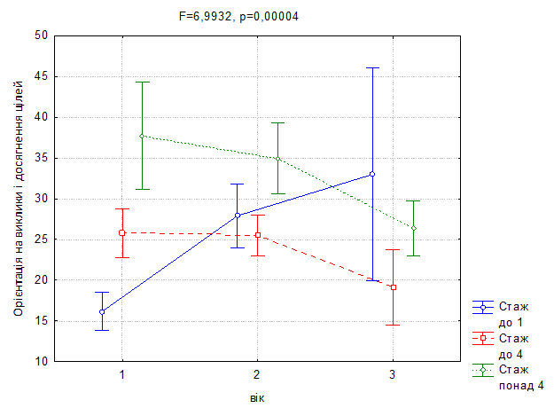
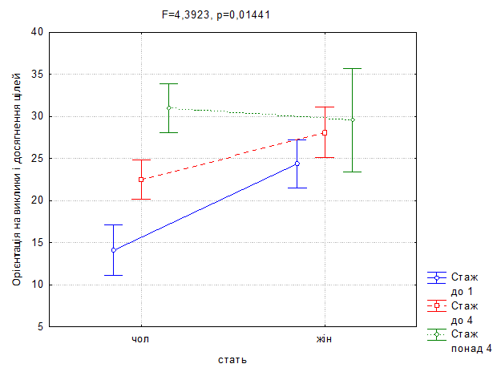
Рис. 2.1 Орієнтація на виклики і досягнення цілей волонтерів в залежності від (1) віку та (2) статі.
Отже, фактор великого стажу компенсує фактор молодого віку у плані розвитку орієнтації на виклики та досягнення цілей, що в середньому по вибірці виражена найбільше при найбільшому стажі і найнижче – у людей молодого віку. Ці дані підтверджуються тим, що комбінація найменшого віку та найменшого стажу результують найнижчий рівень орієнтації на виклики та досягнення цілей. Отже, невеликий стаж діяльності в якості волонтера у найменшої за віком вибірці негативно позначається на орієнтації на виклики та досягнення цілей.
У чоловіків з малим стажем діяльності орієнтація на виклики і досягнення цілей є найменшою по вибірці. У жінок-волонтерок загалом орієнтація на виклики та досягнення цілей є більшою, особливо при меншому досвіді діяльності. Отже, найменший вік і стаж діяльності для чоловіків, на відміну від жінок, загалом є умовами зниження орієнтації на виклики та досягнення цілей у волонтерів.
Поєднання факторів великого стажу роботи волонтером та молодшого віку (належності волонтерів до періоду ранньої дорослості) передбачає найвищі показники самоконтролю та здатності долати труднощі (рис. 2.2).
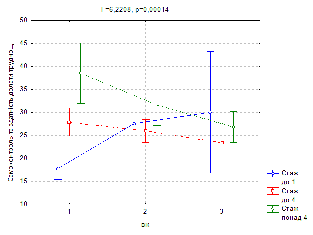
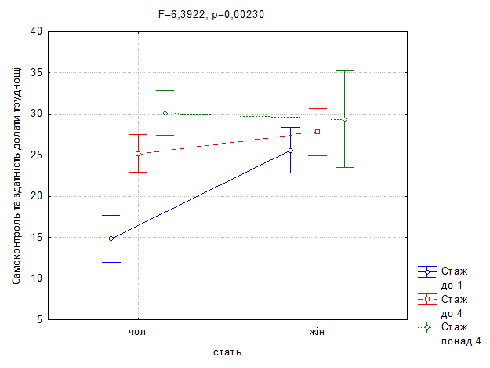
Рис. 2.2 Самоконтроль та здатність долати труднощі волонтерів в залежності від (1) віку та (2) статі.
Натомість у чоловіків з малим стажем діяльності самоконтроль та здатність долати труднощі є найменшими по вибірці волонтерів. У жінок незалежно від стажу роботи в якості волонтерок показники самоконтролю резильєнтності не відрізняються. Отже, найменший вік і стаж діяльності для чоловіків, на відміну від жінок, загалом є умовами зниження самоконтролю та здатності долати труднощі у волонтерів.
Поєднання факторів великого стажу роботи волонтером та молодшого віку (належності волонтерів до періоду ранньої та середньої дорослості) передбачає найвищі показники само детермінації та осмисленості життя (рис. 2.3).
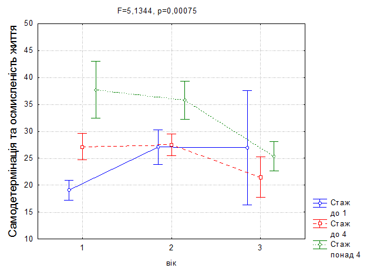
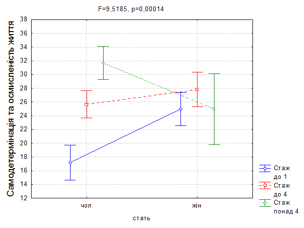
Рис. 2.3 Самодетермінація та осмисленість життя волонтерів в залежності від (1) віку та (2) статі.
У чоловіків з малим стажем діяльності самодетермінація та осмисленість життя є найменшими по вибірці волонтерів. У жінок незалежно від стажу роботи в якості волонтерок показники самодетермінації та осмисленості життя не відрізняються.
Найнижчі показники стресостійкості властиві у період ранньої дорослості у осіб із найменшим стажем діяльності в якості волонтера. У чоловіків із найменшим стажем роботи волонтером показники стресостійкості також є найнижчими у порівнянні із жінками із різним стажем волонтерства (рис. 2.4).
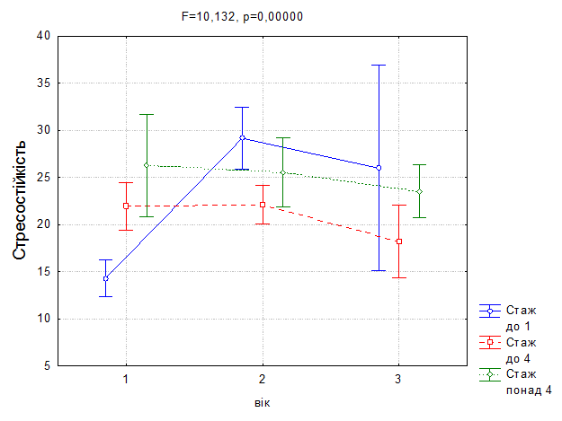
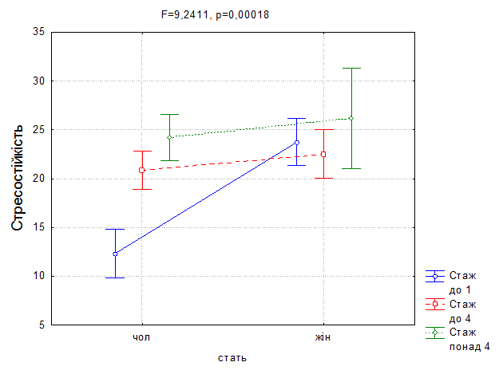
Рис. 2.4 Стресостійкість волонтерів в залежності від (1) віку та (2) статі.
При невеликому стажу волонтерства у осіб періоду середньої дорослості (25-40 років) показники конструктивних копінгів є вищими, ніж в інших категоріях досліджуваних. Крім того, у жінок загалом та особливо при найбільшому стажу роботи показники конструктивних копінгів є найвищими (рис. 2.5).
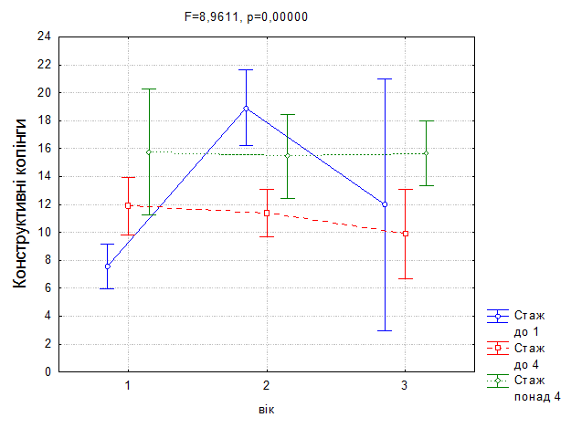
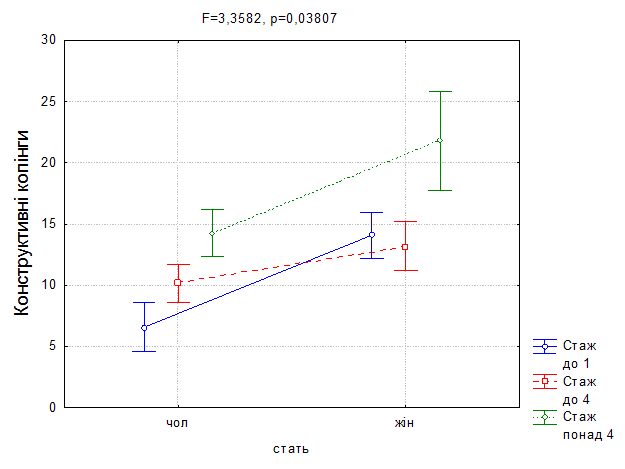
Рис. 2.5 Конструктивні копінги волонтерів в залежності від (1) віку та (2) статі.
Найбільший стаж роботи волонтером сам по собі є значущим фактором розвитку соціальної контактності, проте у період ранньої дорослості його роль виявилась більш значущою (рис. 2.6).
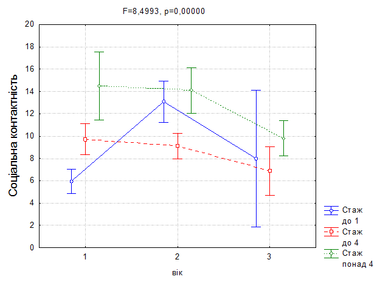
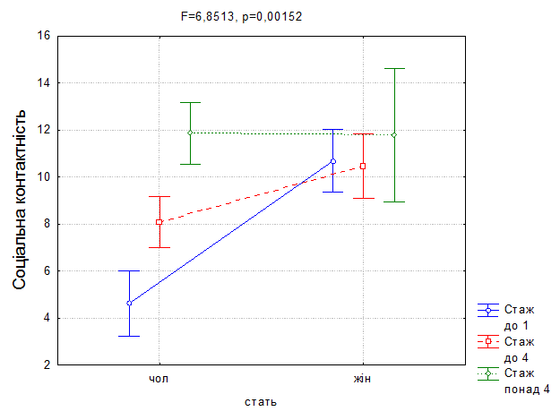
Рис. 2.6 Соціальна контактність волонтерів в залежності від (1) віку та (2) статі.
Соціальна контактність як показник резильєнтності є найнижчою у чоловіків із невеликим стажем волонтерства. Оптимальна регуляція так само є нижчою при невеликому стажу роботи у період ранньої дорослості та у чоловіків (рис. 2.7).
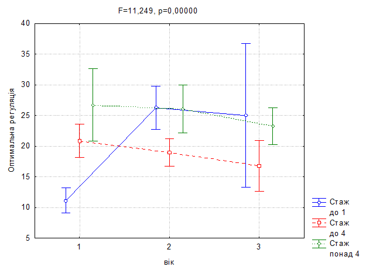
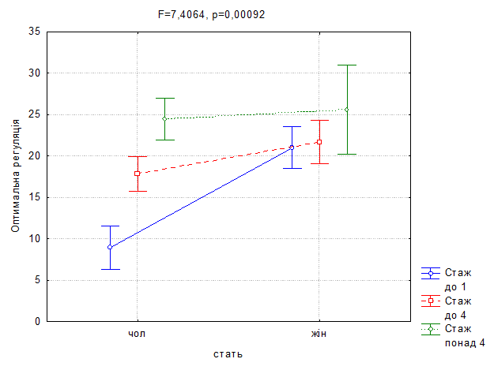
Рис. 2.7 Оптимальна регуляція волонтерів в залежності від (1) віку та (2) статі.
Відкритість життєвому досвіду також є нижчою при невеликому стажу роботи у період ранньої дорослості та у чоловіків (рис. 2.8).
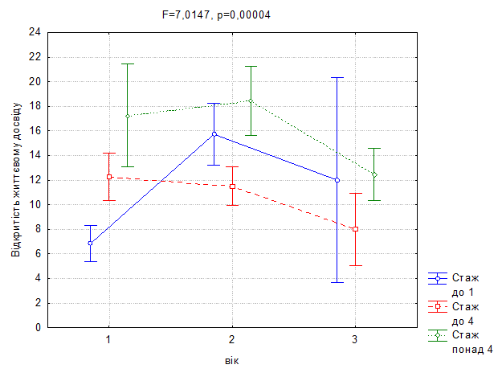
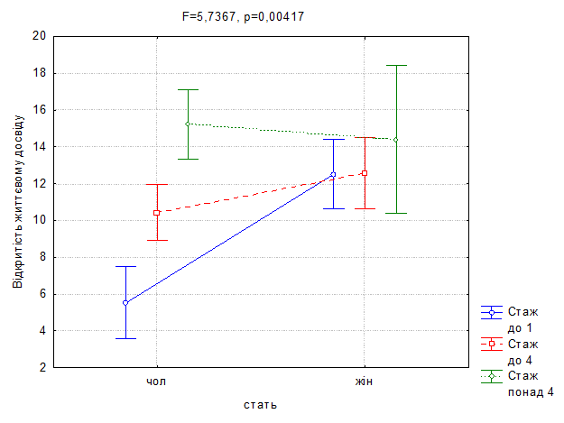
Рис. 2.8 Відкритість життєвому досвіду волонтерів в залежності від (1) віку та (2) статі.
Загальна резильєнтність так само є нижчою при невеликому стажу роботи у період ранньої дорослості та у чоловіків (рис. 2.9).
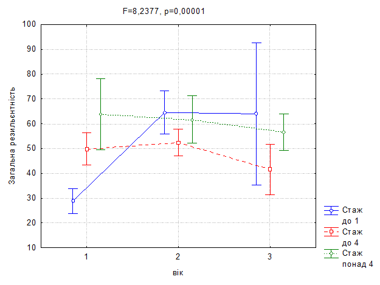
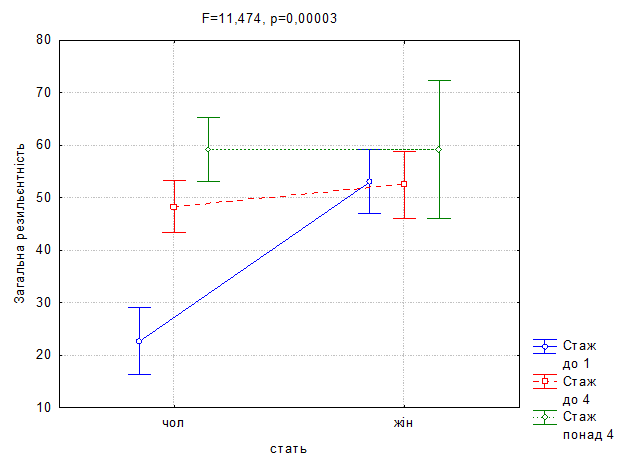
Рис. 2.9 Загальна резильєнтність волонтерів в залежності від (1) віку та (2) статі.
Отже, серед чинників зниження резильєнтності є вікові, діяльнісні та статеві: волонтери-чоловіки у порівнянні із волонтерками мають нижчі показники резильєнтності за умови невеликого стажу діяльності. Можна припустити, що жінки більш швидко адаптуються до вимог волонтерської діяльності та у них більш стрімко розвиваються змістові та процесуальні хараткеристики резильєнтності – здатність чинити опір стресу, бути рішучими, здйснювати вольовий самоконтроль, обирати конструктивні стратегії подолання складних ситуацій у житті та діяльності.
Крім того, на зниженні резильєнтності істотно позначається сукупний вплив малого стажу діяльності та молодого віку: волонтери-початківці молодшого віку значно складніше та повільніше оволодівають здатностями чинити опір стресу, ніж їх колеги старшого віку.
2.3. Психологічні особливості резильєнтності волонтерів
У цьому параграфі подані результати дослідження таких психологічних особливостей резильєнтності волонтерів, як рівень особистісної зрілості, екзистенційність, альтруїстична вмотивованість, провідні копінг-стратегії, емоційна стабільність та тривожність.
2.3.1. Особистісна зрілість як чинник резильєнтності волонтерів
У таблиці 2.8 показано кореляційні зв’язки між резильєнтністю та показниками особистісної зрілості у волонтерів.
Таблиця 2.8
Кореляції резильєнтності та особистісної зрілості у волонтерів
| Показники | Відповідальність | Децентрація | Глибинність переживань | Життєва філософія | Толерантність | Автономність | Контактність | Самоприйняття | Креативність | Синергічність | Особистісна зрілість |
|---|---|---|---|---|---|---|---|---|---|---|---|
| Орієнтація на виклики і досягнення цілей | 0,27** | 0,63**** | 0,61**** | 0,71**** | 0,65**** | 0,61**** | 0,60**** | 0,57**** | 0,57**** | 0,55**** | 0,80**** |
| Самоконтроль та здатність долати труднощі | 0,51**** | 0,47**** | 0,46**** | 0,59**** | 0,48**** | 0,45**** | 0,49**** | 0,43**** | 0,37**** | 0,41**** | 0,64**** |
| Самодетермінація та осмисленість життя | 0,26** | 0,71**** | 0,72**** | 0,84**** | 0,59**** | 0,76**** | 0,57**** | 0,51**** | 0,52**** | 0,49**** | 0,83**** |
| Стресостійкість | 0,09 | 0,39**** | 0,46**** | 0,49**** | 0,59**** | 0,39**** | 0,53**** | 0,76**** | 0,45**** | 0,69**** | 0,67**** |
| Конструктивні копінги | 0,21* | 0,28** | 0,32*** | 0,35**** | 0,58**** | 0,27** | 0,55**** | 0,66**** | 0,49**** | 0,63**** | 0,61**** |
| Соціальна контактність | 0,26** | 0,53**** | 0,53**** | 0,59**** | 0,76**** | 0,53**** | 0,75**** | 0,67**** | 0,63**** | 0,64**** | 0,82**** |
| Оптимальна регуляція | 0,21* | 0,45**** | 0,47**** | 0,52**** | 0,62**** | 0,41**** | 0,60**** | 0,64**** | 0,53**** | 0,56**** | 0,70**** |
| Відкритість життєвому досвіду | 0,23** | 0,56**** | 0,57**** | 0,64**** | 0,67**** | 0,59**** | 0,60**** | 0,57**** | 0,75**** | 0,52**** | 0,79**** |
| Загальна резильєнтність | 0,08 | 0,44**** | 0,52**** | 0,54**** | 0,58**** | 0,45**** | 0,52**** | 0,72**** | 0,44**** | 0,60**** | 0,68**** |
Орієнтація на виклики і досягнення цілей позитивно корелює із загальним показником особистісної зрілості та такими її параметрами, як життєва філософія, толерантність, децентрація, автономність, контактність, само прийняття, креативність, синергійність та меншою мірою – відповідальність.
Самоконтроль та здатність долати труднощі позитивно корелює із усіма показниками особистісної зрілості, особливо із життєвою філософією. Найнижчий за силою зв'язок встановлено із показником креативності.
Самодетермінація та осмисленість життя позитивно корелює із усіма показниками особистісної зрілості, особливо із життєвою філософією та автономністю.
Стресостійкість не корелює лише із показником відповідальності, а з іншими показниками особистісної зрілості вона має зв’язки середньої сили, а із само прийняттям – сильний зв'язок.
Конструктивні копінги слабко корелюють із відповідальністю, автономністю та децентрацією у структурі особистісної зрілості, з якою загалом позитивно пов’язані, особливо за показником само прийняття.
Соціальна контактність має низку сильних зв’язків із особистісною зрілістю, зокрема із показниками толерантності та контактності.
Оптимальна регуляція та відкритість життєвому досвіду слабко корелює із відповідальністю і помірно – із іншими показниками особистісної зрілості.
Загальна резильєнтність не корелює лише із показником відповідальності, а з іншими показниками особистісної зрілості вона має зв’язки середньої сили, а із самоприйняттям – сильний зв'язок.
Отже, існує сильна пряма узгодженість між особистісною зрілістю, вираженою у показниках відповідальності за свої вчинки, вміння подитися на ситуацію збоку, долаючи егоцентризм, вміння глибоко переживати різні вищі почуття, мати і транслювати власну життєву філософію та мудрість, виявляти толерантність у спілкуванні та взаємодії із іншими, бути незалежним та мати адекватне самоприйняття, проявляти комунікативні здібності, мати близькі стосунки, виявляти творчість у житті та діяльності, гармонійно поєднувати різні сфери свого життя, та процесуальною та змістовою сторонами резильєнтності.
З таблиці 2.9 видно, що волонтери із критичним рівнем особистісної зрілості значно поступаються особам із необхідним і тим більше – високим, рівнями особистісної зрілості рівнем резильєнтності.
Таблиця 2.9
Показники резильєнтності у волонтерів з різним рівнем особистісної зрілості
| Показники | Групи досліджуваних | Н | |||||
|---|---|---|---|---|---|---|---|
| Критичний | Необхідний | Високий | |||||
| М | ϭ | М | ϭ | М | ϭ | ||
| Орієнтація на виклики і досягнення цілей | 15,55 | 5,14 | 25,35 | 6,83 | 34,79 | 5,89 | 59,45 |
| Самоконтроль та здатність долати труднощі | 18,94 | 7,02 | 25,19 | 6,30 | 35,16 | 6,42 | 43,99 |
| Самодетермінація та осмисленість життя | 18,79 | 4,29 | 25,95 | 4,99 | 35,89 | 5,75 | 66,03 |
| Стресостійкість | 14,61 | 3,83 | 22,63 | 6,62 | 26,16 | 5,34 | 45,28 |
| Конструктивні копінги | 7,45 | 2,46 | 13,12 | 5,86 | 15,37 | 3,99 | 40,04 |
| Соціальна контактність | 5,15 | 1,95 | 9,91 | 3,39 | 13,53 | 2,46 | 60,17 |
| Оптимальна регуляція | 10,88 | 5,61 | 21,07 | 6,49 | 25,53 | 4,56 | 51,92 |
| Відкритість життєвому досвіду | 6,30 | 2,64 | 12,08 | 4,75 | 17,42 | 3,31 | 55,92 |
| Загальна резильєнтність | 28,94 | 13,26 | 53,16 | 16,05 | 61,16 | 11,98 | 47,65 |
Орієнтація на виклики і досягнення цілей (U=345, Z=5,97, p<0,0001), самоконтроль та здатність долати труднощі (U=625, Z=4,08, p<0,0001), самодетермінація та осмисленість життя (U=319, Z=6,12, p<0,0001), стресостійкість (U=364, Z=5,82, p<0,0001), конструктивні копінги (U=454, Z=5,22, p<0,0001), соціальна контактність (U=274, Z=6,42, p<0,0001), оптимальна регуляція (U=341, Z=5,97, p<0,0001), відкритість життєвому досвіду (U=312, Z=6,16, p<0,0001), загальна резильєнтність (U=345, Z=5,95, p<0,0001) є нижчими при критичному рівні особистісної зрілості у порівнянні із необхідним.
Натомість високий рівень особистісної зрілості також має переваги над необхідним у рівні резильєнтності, зокрема за показниками орієнтації на виклики і досягнення цілей (U=171, Z=5,09, p<0,0001), самоконтролю та здатності долати труднощі (U=177, Z=5,04, p<0,0001), самодетермінації та осмисленості життя (U=100, Z=5,76, p<0,0001), стресостійкості (U=443, Z=2,53, p<0,05), конструктивних копінгів (U=424, Z=2,71, p<0,01), соціальної контактності (U=279, Z=4,08, p<0,0001), оптимальної регуляції (U=340, Z=3,50, p<0,001), відкритості життєвому досвіду (U=276, Z=4,10, p<0,0001), загальної резильєнтності (U=413, Z=2,81, p<0,01).
Отже, між показниками резильєнтності та сообистісної зрілості виявлено прямий лінійний зв'язок. Критичний рівень розвитку особистісної зрілості передбачає найнижчу резильєнтність, її достатній рівень проявляється при достатній особистісний зрілості, і лише високий рівень особистісної зрілості передбачає високу резильєнтність у волонтерів. Отримані результати дають підстави визначити особистісну зрілість в якості важливого чинника розвитку резильєтності у волонтерів.
Найменший стаж діяльності в якості волонтера при високому рівні особистісної зрілості передбачає нижчі показники орієнтації на виклики у порівнянні із достатнім стажем (рис. 2.10).
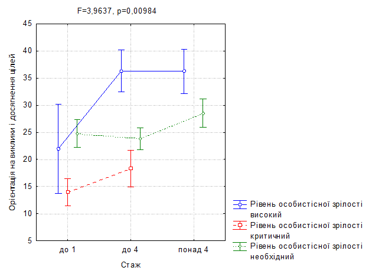
Рис. 2.10 Орієнтація на виклики та досягнення цілей у волонтерів із різним стажем та рівнем особистісної зрілості.
При критичному рівні особистісної зрілості при найменшому стажі діяльності виявлено найнижчі показники самоконтролю та здатності долати труднощі у волонтерів, натомість достатній та великий стаж при високому рівні особистісної зрілості зумовлюють найвищі показники самоконтролю та здатності долати труднощі (рис. 2.11).
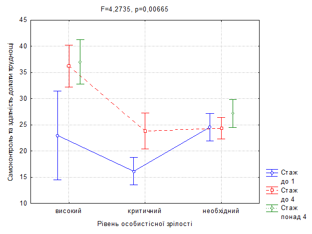
Рис. 2.11 Самоконтроль та здатність долати труднощі у волонтерів із різним стажем та рівнем особистісної зрілості.
При критичному рівні особистісної зрілості при найменшому стажі діяльності виявлено найнижчі показники само детермінації та осмисленості життя у волонтерів, натомість достатній та великий стаж при високому рівні особистісної зрілості зумовлюють найвищі показники само детермінації та осмисленості життя (рис. 2.12).
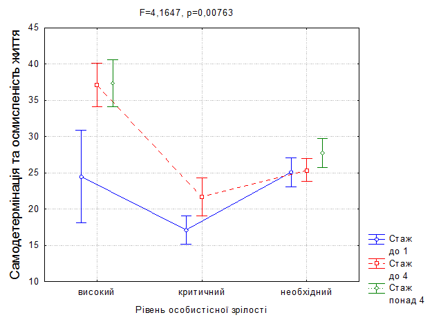
Рис. 2.12 Самодетермінація та осмисленість життя у волонтерів із різним стажем та рівнем особистісної зрілості.
Достатній та великий стаж при високому рівні особистісної зрілості зумовлюють найвищі показники стресостійкості у волонтерів (рис. 2.13).
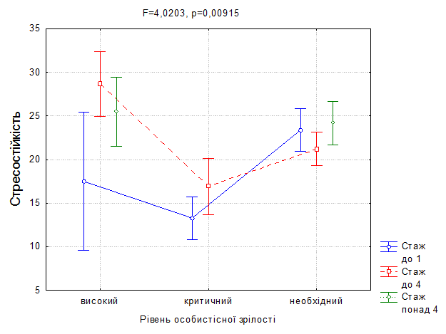
Рис. 2.13 Стресостійкість у волонтерів із різним стажем та рівнем особистісної зрілості.
Достатній та великий стаж при високому рівні особистісної зрілості зумовлюють найвищі показники конструктивних копінгів у волонтерів (рис. 2.14).
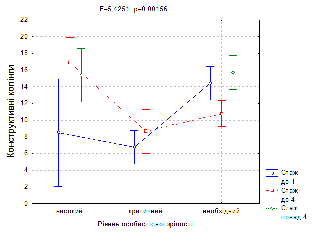
Рис. 2.14 Конструктивні копінги у волонтерів із різним стажем та рівнем особистісної зрілості.
Достатній та великий стаж при високому рівні особистісної зрілості зумовлюють найвищі показники соціальної контактності у волонтерів (рис. 2.15).
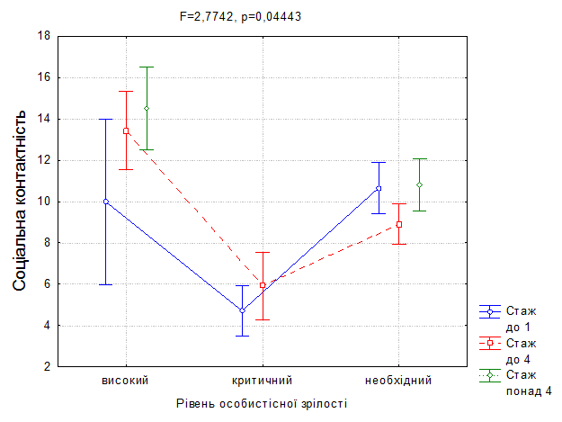
Рис. 2.15 Соціальна контактність у волонтерів із різним стажем та рівнем особистісної зрілості.
При критичному рівні особистісної зрілості при найменшому стажі діяльності виявлено найнижчі показники оптимальної регуляції у волонтерів (рис. 2.16).
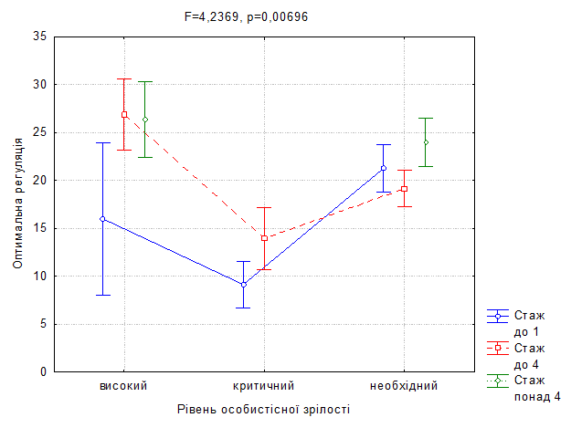
Рис. 2.16 Оптимальна регуляція у волонтерів із різним стажем та рівнем особистісної зрілості.
Достатній та великий стаж при високому рівні особистісної зрілості зумовлюють найвищі показники відкритості життєвому досвіду у волонтерів (рис. 2.17).
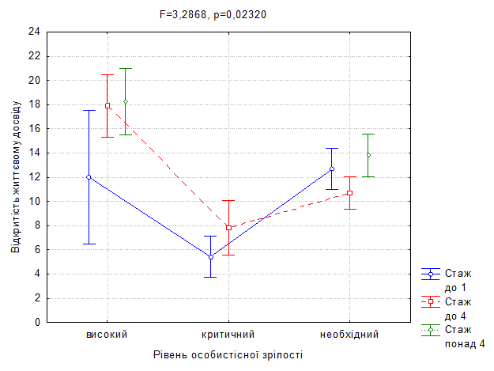
Рис. 2.17 Відкритість життєвому досвіду у волонтерів із різним стажем та рівнем особистісної зрілості.
При критичному рівні особистісної зрілості при найменшому стажі діяльності виявлено найнижчі показники загальної резильєнтності у волонтерів, натомість достатній та великий стаж при високому рівні особистісної зрілості зумовлюють найвищі показники резильєнтності (рис. 2.18).
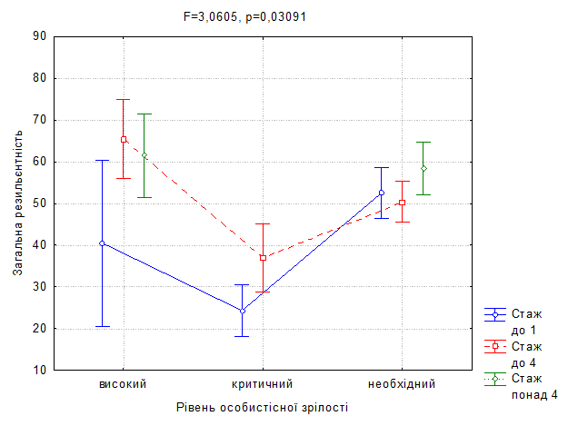
Рис. 2.18 Загальна резильєнтність у волонтерів із різним стажем та рівнем особистісної зрілості.
Отже, високий рівень особистісної зрілості є достатньою умовою розвитку резильєнтності лише у волонтерів із достатнім стажем діяльності, натомість високого рівня особистісної зрілості у волонтерів-початківців недостатньо для того, щоб вважатися умовою розвитку вищої резильєнтності. Отримані дані накладають певні обмеження щодо розгляду особистісної зрулості в якості універсального чинника розвитку резильєнтності у волонтерів, що стосуються саме молодого віку.
2.3.2. Екзистенційність як чинник резильєнтності волонтерів
У таблиці 2.10 показано кореляційні зв’язки між резильєнтністю та показниками екзистенційності у волонтерів.
Таблиця 2.10
Кореляції резильєнтності та екзистенційності у волонтерів
| Показники | Самодистанціювання | Самотрансценденція | Свобода | Відповідальність | Екзистенційність |
|---|---|---|---|---|---|
| Орієнтація на виклики і досягнення цілей | 0,63** | 0,68** | 0,60** | 0,69** | 0,68** |
| Самоконтроль та здатність долати труднощі | 0,52** | 0,53** | 0,54** | 0,56** | 0,56** |
| Самодетермінація та осмисленість життя | 0,76** | 0,80** | 0,72** | 0,81** | 0,81** |
| Стресостійкість | 0,48** | 0,46** | 0,50** | 0,49** | 0,50** |
| Конструктивні копінги | 0,33* | 0,35** | 0,32* | 0,35** | 0,36** |
| Соціальна контактність | 0,56** | 0,61** | 0,51** | 0,61** | 0,61** |
| Оптимальна регуляція | 0,54** | 0,52** | 0,55** | 0,55** | 0,56** |
| Відкритість життєвому досвіду | 0,58** | 0,65** | 0,50** | 0,66** | 0,63** |
| Загальна резильєнтність | 0,63** | 0,68** | 0,60** | 0,69** | 0,68** |
*- p<0,001 **- p<0,0001
Орієнтація на виклики і досягнення цілей позитивно корелює із загальним показником екзистенційності та такими її параметрами, як відповідальність, самотрансценденція, самодистанціювання та свобода.
Самоконтроль та здатність долати труднощі позитивно корелює із усіма показниками екзистенційності - такими її параметрами, як відповідальність, самотрансценденція, самодистанціювання та свобода, а самодетермінація та осмисленість життя характеризується найсильнішими зв’язками із екзистенційністю.
Стресостійкість, конструктивні копінги, соціальна контактність, оптимальна регуляція, відкритість життєвому досвіду та загальна резильєнтність корелюють із усіма показниками екзистенційності - такими її параметрами, як відповідальність, самотрансценденція, самодистанціювання та свобода.
Отже, існує узгодженість між показниками резильєнтності та екзистенційністю як вмінням безпристрастно осмислювати своє життя, жити із внутрішньою згодою та у злагоді із собою, вміти знайти відповідність сутності свого життя та власними рішеннями та вчинками, вміти вносити добро у своє життя.
Орієнтація на виклики та досягнення цілей найбільше узгоджується із такою екзистенційною здатністю, як самотрансценденція та відповідальність.
Вміння відкрито відстоювати себе і свої права у ситуаціях викликів життя, ставити та досягати цілі як характеристики резильєнтності передбачають здатність відчувати цінності та ясність у власних почуттях, здатність відчувати цінності, бути порушеним емоційно, появляючи вільну емоційність через почуття близькості до чогось чи когось, вміння співчувати, жити заради чогось чи когось, здатність орієнтуватися у діях на сенс, а не лише на мету, переживати захопленість цінністю, емоційно відгукуватися, сприймати глибокі внутрішні відносини, екзистенційну значущість того, що відбувається.
Крім того, така орієнтація на досягненння за відсутності страху невдачі, що є змістом даного показника резильєнтності, передбачає здатність виконувати рішення, прийняті на основі особистих цінностей у волонтерів.
Самодетермінація та осмисленість життя як показники резильєнтнсоті найбільшим чином узгоджуються із самодистанціюванням, самотрансценденцією, свободою та відповідальністю. Так, осмисленість життя, здатність визначати своє місце у власному житті, свої ролі, інтеранльність локусу контролю і відповідальність повязані із здатністю до створення внутрішнього вільного простору, до створення внутрішньої дистанції по відношенню до себе, об'єктивністю, вмінням відійти на дистанцію по відношенню до себе самої.
Розуміння власної провідної ролі та відповідальності за успішний вихід та розвязання складних життєвих завдань передбачають більшу свободу в власних вчинках, рішучість та вміння нести відповідальність за прийняті на основі власних цінностей рішення.
Стресостійкість, соціальна контактність, оптимальна регуляція, самоконтрлоль та здатність долати труднощі як вольові та поведінкові аспекти резильєтності в цілому помірно корелюють із показникмаи екзистенційності, а конструктивні копінги – як спосіб раціонального мислення у ситуаціях стресу та відповідної поведінки – слабко.
Отримані результати дають підстави стверджувтаи, що екзистенційність є більш значущим чинником саме тих компонентів резильєтності волонетрів, які актуалізують її мотиваційну силу, проте менше узгоджуються із емоційно-вольовими та когнітивними складовими резильєтності.
З таблиці 2.11 ввидно, що волонтери із низьким рівнем екзистенційності значно поступаються особам із середнім і тим більше – високим, рівнями екзистенційності рівнем резильєнтності.
Орієнтація на виклики і досягнення цілей (U=58, Z=6,95, p<0,0001), самоконтроль та здатність долати труднощі (U=123, Z=6,39, p<0,0001), самодетермінація та осмисленість життя (U=0, Z=7,45, p<0,0001), стресостійкість (U=110, Z=6,51, p<0,0001), конструктивні копінги (U=188, Z=5,84, p<0,0001), соціальна контактність (U=177, Z=5,94, p<0,0001), оптимальна регуляція (U=143, Z=6,23, p<0,0001), відкритість життєвому досвіду (U=32, Z=7,18, p<0,0001), загальна резильєнтність (U=98, Z=6,61, p<0,0001) є нижчими при низькому рівні екзистенційності у порівнянні із середнім.
Натомість високий рівень екзистенційності також має переваги над середнім у рівні резильєнтності, зокрема за показниками орієнтації на виклики і досягнення цілей (U=354, Z=5,63, p<0,0001), самоконтролю та здатності долати труднощі (U=641, Z=3,57, p<0,0001), самодетермінації та осмисленості життя (U=259, Z=6,32, p<0,0001), стресостійкості (U=769, Z=2,65, p<0,01), конструктивних копінгів (U=781, Z=2,56, p<0,01), соціальної контактності (U=501, Z=4,58, p<0,0001), оптимальної регуляції (U=639, Z=3,59, p<0,001), відкритості життєвому досвіду (U=460, Z=4,87, p<0,0001), загальної резильєнтності (U=745, Z=2,82, p<0,01).
Таблиця 2.11
Показники резильєнтності у волонтерів з різним рівнем екзистенційності
| Показники | Групи досліджуваних | Н | |||||
|---|---|---|---|---|---|---|---|
| Низький | Середній | Високий | |||||
| М | ϭ | М | ϭ | М | ϭ | ||
| Орієнтація на виклики і досягнення цілей | 12,58 | 3,25 | 24,52 | 5,21 | 32,50 | 7,19 | 73,88 |
| Самоконтроль та здатність долати труднощі | 15,00 | 4,71 | 25,79 | 5,19 | 31,29 | 8,00 | 55,03 |
| Самодетермінація та осмисленість життя | 15,62 | 2,32 | 25,27 | 2,40 | 33,79 | 5,99 | 84,65 |
| Стресостійкість | 12,19 | 3,68 | 22,45 | 5,80 | 25,15 | 5,43 | 53,42 |
| Конструктивні копінги | 6,35 | 1,92 | 12,84 | 5,78 | 14,62 | 4,30 | 48,53 |
| Соціальна контактність | 4,62 | 1,72 | 9,21 | 3,20 | 12,74 | 2,97 | 59,22 |
| Оптимальна регуляція | 8,77 | 4,38 | 20,45 | 6,27 | 24,29 | 5,27 | 55,82 |
| Відкритість життєвому досвіду | 5,00 | 0,98 | 11,27 | 4,11 | 16,47 | 4,24 | 70,66 |
| Загальна резильєнтність | 21,85 | 10,58 | 52,81 | 13,87 | 58,76 | 13,23 | 55,30 |
Отже, існує лінійна відповідність між рівнем екзистенційності та резильєтнтністю у волонтерів, що дає підстави визначити першу в якості чинника розвитку другої.
При найбільшому стажі діяльності волонтерів за умови високого рівня екзистенційності показники орієнтації виклики та досягнення цілей є найвищими (рис. 2.19). Загалом рівень екзистенціності є більш впливовим чинником орієнтації на виклики, ніж стаж діяльності.
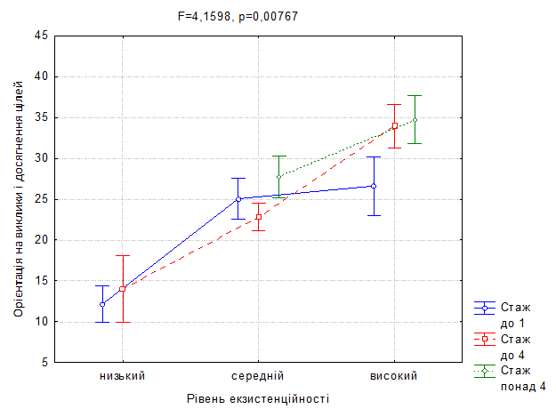
Рис. 2.19 Орієнтація на виклики та досягнення цілей у волонтерів із різним стажем та рівнем екзистенційності.
При найбільшому стажі діяльності волонтерів за умови високого рівня екзистенційності показники самоконтролю та здатність долати труднощі є найвищими (рис. 2.20).
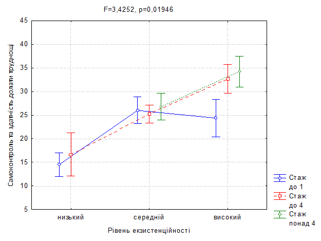
Рис. 2.20 Самоконтроль та здатність долати труднощі у волонтерів із різним стажем та рівнем екзистенційності.
При найбільшому стажі діяльності волонтерів за умови високого рівня екзистенційності показники самодетермінації та осмисленості життя є найвищими (рис. 2.21).
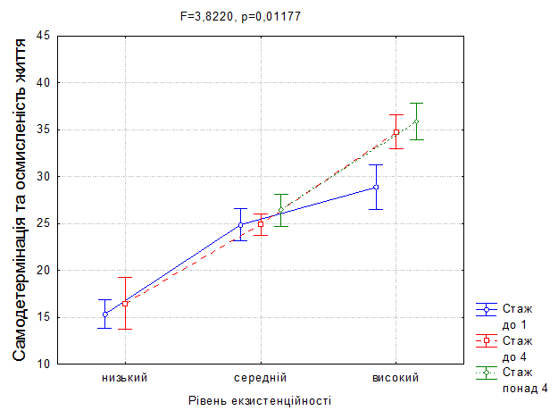
Рис. 2.21 Самодетермінація та осмисленість життя у волонтерів із різним стажем та рівнем екзистенційності.
При меншому стажі діяльності волонтерів за умови низького рівня екзистенційності показники стресостійкості є найнижчими (рис. 2.22).
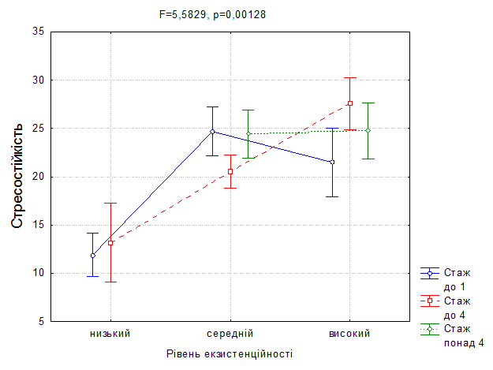
Рис. 2.22 Стресостійкість у волонтерів із різним стажем та рівнем екзистенційності.
При меншому стажі діяльності волонтерів за умови низького рівня екзистенційності показники конструктивних копінгів є найнижчими (рис. 2.23).
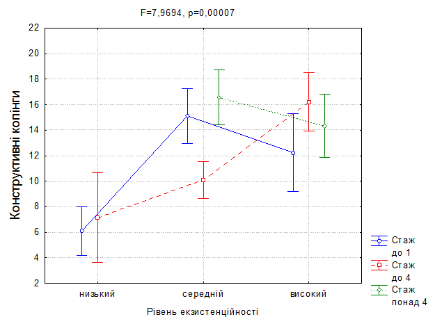
Рис. 2.23 Конструктивні копінги у волонтерів із різним стажем та рівнем екзистенційності.
Соціальна контактність у волонтерів із меншим стажем та низьким рівнем екзистенційності є найнижчою (рис. 2.24).
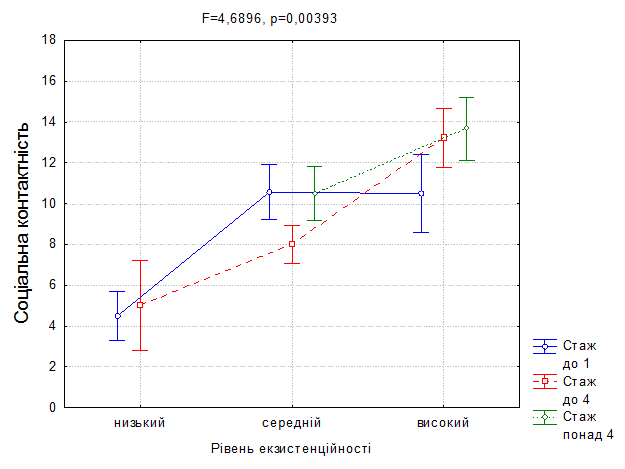
Рис. 2.24 Соціальна контактність у волонтерів із різним стажем та рівнем екзистенційності.
Оптимальна регуляція у волонтерів із меншим стажем та низьким рівнем екзистенційності є найнижчою (рис. 2.25).
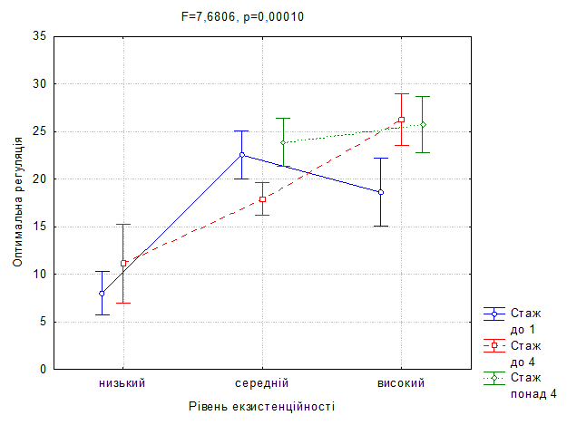
Рис. 2.25 Оптимальна регуляція у волонтерів із різним стажем та рівнем екзистенційності.
Відкритість життєвому досвіду у волонтерів із меншим стажем та низьким рівнем екзистенційності є найнижчою (рис. 2.26).
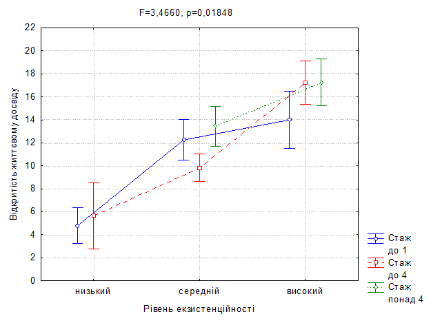
Рис. 2.26 Відкритість життєвому досвіду у волонтерів із різним стажем та рівнем екзистенційності.
Загальна резильєнтність у волонтерів із меншим стажем та низьким рівнем екзистенційності є найнижчою (рис. 2.27).
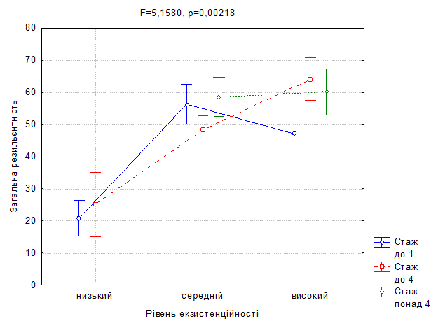
Рис. 2.27 Загальна резильєнтність у волонтерів із різним стажем та рівнем екзистенційності.
Отже, аналізуючи усі показники резильєтності у волонетрів із різним стажем діяльності та рівнем екзистенційності можна, сказати, що останній є значущим чинником рівня резильєтності на початку залучення до волонтерства та при малому досвіді волонтерства. Низька екзистенційність волонтерів-початківців негативно позначається на рівні їх резильєтності.
У таблиці 2.12 показано кореляції резильєнтності та екзистенційної вмотивованості волонетрів. Усі зазначені у таблиці зв’язки значущі на рівні р<0,0001. Орієнтація на виклики і досягнення цілей позитивно пов’язана із екзистенцінйою сповненістю, показниками наявності опори, почуття захищеності та внутрішнім позитивним простором, наявності почуття співвіднесеності, відчуття часу і близькості, із зацікавленою увагою, справедливим ставленням, визнанням цінності, а також наявністю ресурсів для діяльності, включеністю у взаємозвя’зку.
Самоконтроль та здатність долати труднощі позитивно пов’язані із екзистенційною сповненістю, показниками наявності опори, почуття захищеності та внутрішнім позитивним простором, наявності почуття співвіднесеності, відчуття часу і близькості, із зацікавленою увагою, справедливим ставленням, визнанням цінності, а також наявністю ресурсів для діяльності, включеністю у взаємозвя’зку.
Таблиця 2.12
Кореляції резильєнтності та екзистенційної вмотивованості у волонтерів
| Показники | Опора, захищеність, простір | Співвіднесеність, час, близькість | Зацікавлена увага, справедливе ставлення, визнання цінності | Можливість для діяльності, включеність у взаємозвя’зку | Екзистенційна сповненість |
|---|---|---|---|---|---|
| Орієнтація на виклики і досягнення цілей | 0,61 | 0,61 | 0,61 | 0,53 | 0,76 |
| Самоконтроль та здатність долати труднощі | 0,53 | 0,48 | 0,49 | 0,47 | 0,63 |
| Самодетермінація та осмисленість життя | 0,53 | 0,52 | 0,54 | 0,46 | 0,66 |
| Стресостійкість | 0,62 | 0,58 | 0,56 | 0,44 | 0,70 |
| Конструктивні копінги | 0,68 | 0,57 | 0,50 | 0,44 | 0,70 |
| Соціальна контактність | 0,68 | 0,72 | 0,59 | 0,57 | 0,82 |
| Оптимальна регуляція | 0,68 | 0,66 | 0,64 | 0,52 | 0,80 |
| Відкритість життєвому досвіду | 0,57 | 0,60 | 0,65 | 0,51 | 0,75 |
| Загальна резильєнтність | 0,59 | 0,58 | 0,60 | 0,45 | 0,71 |
Самодетермінація та осмисленість життя позитивно пов’язані із екзистенційною сповненістю, показниками зацікавленої уваги, справедливого ставлення, визнання цінності, наявності опори, почуття захищеності та внутрішнім позитивним простором, наявності почуття співвіднесеності, відчуття часу і близькості, а також наявністю ресурсів для діяльності, включеністю у взаємозвя’зку.
Стресостійкість позитивно корелює із екзистенційною сповненістю, показниками наявності опори, почуття захищеності та внутрішнім позитивним простором, наявності почуття співвіднесеності, відчуття часу і близькості, із зацікавленою увагою, справедливим ставленням, визнанням цінності, а також наявністю ресурсів для діяльності, включеністю у взаємозвя’зку.
Конструктивні копінги позитивно корелюють із екзистенційною сповненістю, показниками наявності опори, почуття захищеності та внутрішнім позитивним простором, наявності почуття співвіднесеності, відчуття часу і близькості, із зацікавленою увагою, справедливим ставленням, визнанням цінності, а також наявністю ресурсів для діяльності, включеністю у взаємозвя’зку.
Соціальна контактність позитивно корелює із екзистенційною сповненістю, показниками наявності почуття співвіднесеності, відчуття часу і близькості, із зацікавленою увагою, наявності опори, почуття захищеності та внутрішнім позитивним простором, справедливим ставленням, визнанням цінності, а також наявністю ресурсів для діяльності, включеністю у взаємозвя’зку.
Оптимальна регуляція позитивно пов’язана із екзистенціййною сповненістю, показниками наявності опори, почуття захищеності та внутрішнім позитивним простором, наявності почуття співвіднесеності, відчуття часу і близькості, із зацікавленою увагою, справедливим ставленням, визнанням цінності, а також наявністю ресурсів для діяльності, включеністю у взаємозвя’зку.
Загальна резильєнтність та відкритість життєвому досвіду позитивно пов’язані із екзистенцінйою сповненістю, показниками зацікавленої уваги, справедливого ставлення, визнання цінності, наявності почуття співвіднесеності, відчуття часу і близькості, наявності опори, почуття захищеності та внутрішнім позитивним простором, а також із наявністю ресурсів для діяльності, включеністю у взаємозвя’зку.
Отже, усі фундаментальні екзистенційні мотивації помірно повязані з усіма показниками резильєтності. Чим вищим перша фундаментальна мотивація, що передбачає почуття довіри до світу, пережите як готовність виявляти у світі безліч опор, зокрема і духовних, які виходять межі однієї індивідуального життя, межі раціонального, тим вищою є резильєнтість, особливо конструктивні копінги, соціальна контактність та оптимальна регуляція.
Чим вищим є друга фундаментальна мотивація, що передбачає здатність бути емоційно відкритим та включеним у життя, тим більшою є резильєнтність, особливо соціальна контактність. Чим вищоє є третя мотивація, що полягає у здатності до оцінювання себе через узгодження ситуації, власних дій у ній, цінності того, що відбувається, із собою, власною сутністю, через совість і збереження вірності собі, тим вищою є резильєнтність, особливо відкритість життєвому досвіду.
Чим вищою є четверта мотивація, що полягає у здатності реалізувати свою сутність серед викликів неспокійного світу, бути активною, «стати живою», тим більшою є резильєнтність, особливо соціальна контактність.
У таблиці 2.13 показано залежність резильєнтності від рівня екзистенційної вмотивованості волонтерів. Орієнтація на виклики і досягнення цілей (U=294, Z=5,44, p<0,0001), самоконтроль та здатність долати труднощі (U=247, Z=5,79, p<0,0001), самодетермінація та осмисленість життя (U=545, Z=3,57, p<0,0001), стресостійкість (U=275, Z=5,58, p<0,0001), конструктивні копінги (U=188, Z=6,22, p<0,0001), соціальна контактність (U=71, Z=7,09, p<0,0001), оптимальна регуляція (U=128, Z=6,67, p<0,0001), відкритість життєвому досвіду (U=272, Z=5,61, p<0,0001), загальна резильєнтність (U=280, Z=5,54, p<0,0001) є нижчими при низькому рівні екзистенційної вмотивованості у порівнянні із середнім.
Таблиця 2.13
Показники резильєнтності у волонтерів з різним рівнем екзистенційної вмотивованості (сповненості)
| Показники | Групи досліджуваних | Н | |||||
|---|---|---|---|---|---|---|---|
| Низький | Середній | Високий | |||||
| М | ϭ | М | ϭ | М | ϭ | ||
| Орієнтація на виклики і досягнення цілей | 14,69 | 4,81 | 24,86 | 7,16 | 33,14 | 6,57 | 51,26 |
| Самоконтроль та здатність долати труднощі | 15,73 | 6,00 | 26,53 | 6,40 | 30,77 | 7,50 | 41,80 |
| Самодетермінація та осмисленість життя | 19,15 | 5,58 | 25,76 | 5,96 | 32,50 | 6,54 | 30,22 |
| Стресостійкість | 13,50 | 3,96 | 21,95 | 6,28 | 26,86 | 4,96 | 47,24 |
| Конструктивні копінги | 6,23 | 1,21 | 12,47 | 5,00 | 17,05 | 5,28 | 55,25 |
| Соціальна контактність | 4,12 | 1,34 | 9,58 | 2,90 | 13,91 | 2,58 | 72,08 |
| Оптимальна регуляція | 8,23 | 2,93 | 20,87 | 6,20 | 25,50 | 4,18 | 60,63 |
| Відкритість життєвому досвіду | 5,92 | 1,74 | 11,62 | 4,82 | 16,95 | 3,93 | 54,25 |
| Загальна резильєнтність | 26,85 | 13,49 | 51,23 | 16,42 | 61,77 | 10,55 | 46,64 |
Натомість високий рівень екзистенційної вмотивованості також має переваги над середнім у рівні резильєнтності, зокрема за показниками орієнтації на виклики і досягнення цілей (U=314, Z=4.56, p<0,0001), самоконтролю та здатності долати труднощі (U=630, Z=1,96, p<0,05), самодетермінації та осмисленості життя (U=426, Z=3,64, p<0,001), стресостійкості (U=446, Z=3,47, p<0,001), конструктивних копінгів (U=380, Z=4,02, p<0,01), соціальної контактності (U=228, Z=5,27, p<0,0001), оптимальної регуляції (U=384, Z=3,98, p<0,0001), відкритості життєвому досвіду (U=305, Z=4,64, p<0,0001), загальної резильєнтності (U=447, Z=3,47, p<0,001).
Отже, резильєнтність лінійно повязана із рівнями екзистенційної сповненості як мірою прояву чотирьох екзистенційних мотивацій.
Орієнтація на виклики і досягнення цілей у волонтерів із найбільшим стажем діяльності та високим рівнем екзистенційної вмотивованості (сповненості) є найвищою по вибірці волонтерів та найнижчою – у тих волонтерів, що мають найменший стаж на найнижчий рівень екзистенцінйої вмотивованості (рис. 2.28).
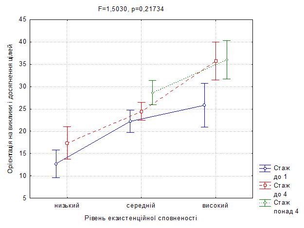
Рис. 2.28. Орієнтація на виклики і досягнення цілей у волонтерів із різним стажем та рівнем екзистенційної вмотивованості (сповненості).
Самоконтроль та здатність долати труднощі у волонтерів із найбільшим стажем діяльності та високим рівнем екзистенційної вмотивованості (сповненості) є найвищою по вибірці волонтерів та найнижчим – у тих волонтерів, що мають найменший стаж на найнижчий рівень екзистенцінйої вмотивованості (рис. 2.29).
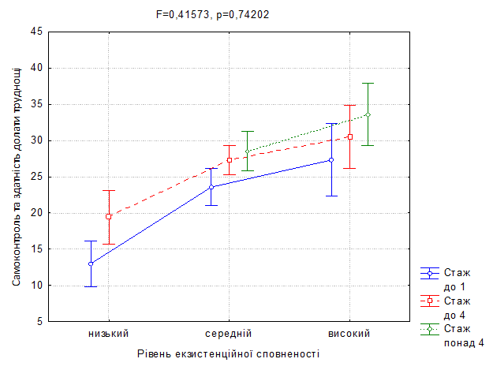
Рис. 2.29. Самоконтроль та здатність долати труднощі у волонтерів із різним стажем та рівнем екзистенційної вмотивованості (сповненості).
Самодетермінація та осмисленість життя у волонтерів із найбільшим стажем діяльності та високим рівнем екзистенційної вмотивованості (сповненості) є найвищою по вибірці волонтерів та найнижчим – у тих волонтерів, що мають найменший стаж на найнижчий рівень екзистенцінйої вмотивованості (рис. 2.30).
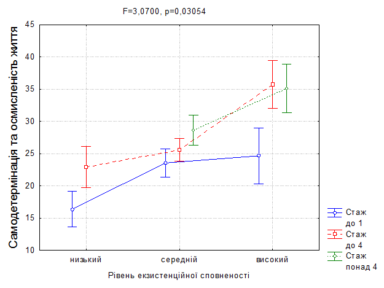
Рис. 2.30. Самодетермінація та осмисленість життя у волонтерів із різним стажем та рівнем екзистенційної вмотивованості (сповненості).
Стресостійкість у волонтерів із високим рівнем екзистенційної вмотивованості (сповненості) є найвищою по вибірці та найнижчою – у тих волонтерів, що мають найменший стаж на найнижчий рівень екзистенцінйої вмотивованості (рис. 2.31). Загалом стаж діяльності у волонтерів із різними рівнями екзистенційної сповненості не позначається істотно на їх стресостійкості.
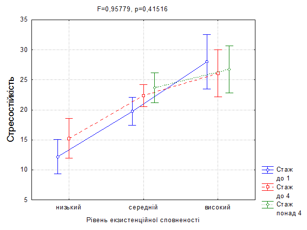
Рис. 2.31. Стресостійкість у волонтерів із різним стажем та рівнем екзистенційної вмотивованості (сповненості).
Конструктивні копінги у волонтерів із високим рівнем екзистенційної вмотивованості (сповненості) є найвищими по вибірці та найнижчими – у тих волонтерів, що мають найнижчий рівень екзистенцінйої вмотивованості (рис. 2.32). Загалом стаж діяльності у волонтерів із різними рівнями екзистенційної сповненості не позначається істотно на їх рівні розвитку конструктивних копінгів.
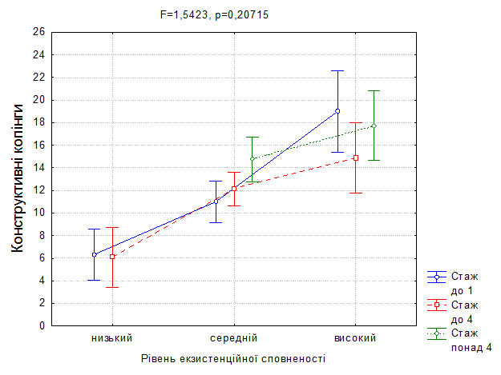
Рис. 2.32. Конструктивні копінги у волонтерів із різним стажем та рівнем екзистенційної вмотивованості (сповненості).
Соціальна контактність у волонтерів із високим рівнем екзистенційної вмотивованості (сповненості) є найвищою по вибірці та найнижчою – у тих волонтерів, що мають найнижчий рівень екзистенцінйої вмотивованості (рис. 2.33). Загалом стаж діяльності у волонтерів із різними рівнями екзистенційної сповненості не позначається істотно на їх рівні розвитку соціальної контактності.
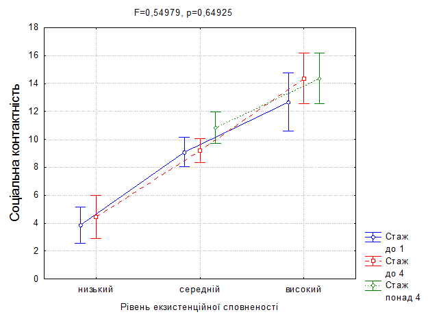
Рис. 2.33. Соціальна контактність у волонтерів із різним стажем та рівнем екзистенційної вмотивованості (сповненості).
Оптимальна регуляція у волонтерів із високим рівнем екзистенційної вмотивованості (сповненості) є найвищою по вибірці та найнижчою – у тих волонтерів, що мають найнижчий рівень екзистенцінйої вмотивованості (рис. 2.34). Загалом стаж діяльності у волонтерів із різними рівнями екзистенційної сповненості не позначається істотно на їх рівні розвитку оптимальної регуляції.
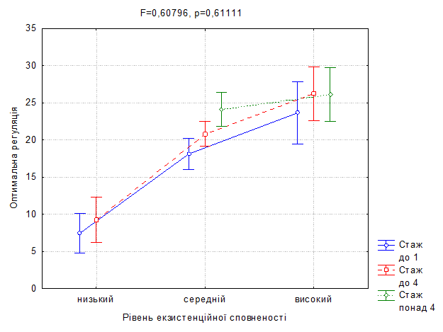
Рис. 2.34. Оптимальна регуляція у волонтерів із різним стажем та рівнем екзистенційної вмотивованості (сповненості).
Відкритість життєвому досвіду у волонтерів із високим рівнем екзистенційної вмотивованості (сповненості) є найвищою по вибірці та найнижчою – у тих волонтерів, що мають найнижчий рівень екзистенцінйої вмотивованості (рис. 2.35). Загалом стаж діяльності у волонтерів із різними рівнями екзистенційної сповненості не позначається істотно на їх рівні відкритості життєвому досвіду.
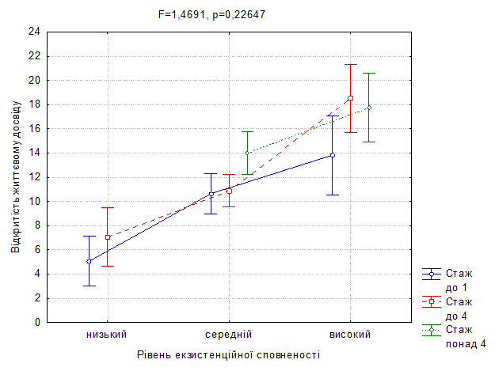
Рис. 2.35. Відкритість життєвому досвіду у волонтерів із різним стажем та рівнем екзистенційної вмотивованості (сповненості).
Загальна резильєнтність у волонтерів із високим рівнем екзистенційної вмотивованості (сповненості) є найвищою по вибірці та найнижчою – у тих волонтерів, що мають найнижчий рівень екзистенцінйої вмотивованості (рис. 2.36). Загалом стаж діяльності у волонтерів із різними рівнями екзистенційної сповненості не позначається істотно на їх рівні загальної резильєнтності.
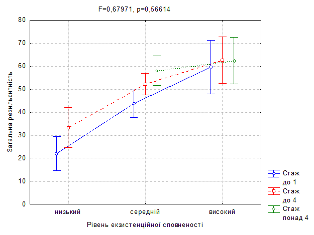
Рис. 2.36. Загальна резильєнтність у волонтерів із різним стажем та рівнем екзистенційної вмотивованості (сповненості).
Отже, екзсистенційна сповненість є значущим чинником розвитку резильєнтності у волонтерів. ЇЇ особливе значення виявляється на початку волонтерської діяльності, оскільки чаме у цей час її зниження негативно позначається на рівні резильєнтності.
2.3.3. Альтруїстична вмотивованість як чинник резильєнтності волонтерів
З таблиці 2.14 видно, що альтруїстична вмотивованість на волонтерство позитивно пов’язана із усіма показниками резильєнтності волонтерів (p<0,0001).
Найсильніші зв’язки альтруїстичної спрямованості на волонтерство встановлено для показників соціальної контактності та оптимальної регуляції. Отже, чим вищим є рівень прагнення чинити добро людям, які опинились у складних життєвих обставинах, допомагати тим, хто цього потребує в умовах війни, тим більше волонтери характеризуються здатністю встановлювати соціальні контакти задля вирішення складних завдань, регулювати власні психоемоційні стани, бути відкритим до життєвих викликів, стресостійким, готовим досягати цілей та долати перешкоди.
Таблиця 2.14
Кореляції резильєнтності та альтруїстичної вмотивованості на волонтерство
| Показники | Альтруїстична вмотивованість на волонтерство |
|---|---|
| Орієнтація на виклики і досягнення цілей | 0,67 |
| Самоконтроль та здатність долати труднощі | 0,66 |
| Самодетермінація та осмисленість життя | 0,62 |
| Стресостійкість | 0,67 |
| Конструктивні копінги | 0,66 |
| Соціальна контактність | 0,73 |
| Оптимальна регуляція | 0,72 |
| Відкритість життєвому досвіду | 0,68 |
| Загальна резильєнтність | 0,68 |
У таблиці 2.15 показано відмінності у рівні резильєнтності волонтерів із різним рівнем альтруїстичної спрямованості.
Орієнтація на виклики і досягнення цілей (U=273, Z=4,64, p<0,0001), самоконтроль та здатність долати труднощі (U=220, Z=5,09, p<0,0001), самодетермінація та осмисленість життя (U=301, Z=4,41, p<0,0001), стресостійкість (U=213, Z=5,14, p<0,0001), конструктивні копінги (U=251, Z=4,82, p<0,0001), соціальна контактність (U=229, Z=5,00, p<0,0001), оптимальна регуляція (U=232, Z=4,98, p<0,0001), відкритість життєвому досвіду (U=434, Z=5,04, p<0,0001), загальна резильєнтність (U=416, Z=5,20, p<0,0001) є нижчими при низькому рівні екзистенційної вмотивованості у порівнянні із середнім.
Таблиця 2.15
Показники резильєнтності у волонтерів з різним рівнем альтруїстичної вмотивованості на волонтерство
| Показники | Групи досліджуваних | Н | |||||
|---|---|---|---|---|---|---|---|
| Низький | Середній | Високий | |||||
| М | ϭ | М | ϭ | М | ϭ | ||
| Орієнтація на виклики і досягнення цілей | 14,45 | 5,41 | 24,89 | 8,27 | 30,00 | 5,56 | 33,51 |
| Самоконтроль та здатність долати труднощі | 15,05 | 5,25 | 25,78 | 7,12 | 30,88 | 6,22 | 37,84 |
| Самодетермінація та осмисленість життя | 18,20 | 4,92 | 26,29 | 6,73 | 29,25 | 6,41 | 24,54 |
| Стресостійкість | 12,70 | 3,63 | 21,35 | 6,08 | 27,08 | 5,60 | 43,86 |
| Конструктивні копінги | 6,60 | 1,93 | 11,84 | 4,91 | 16,96 | 5,88 | 39,14 |
| Соціальна контактність | 4,70 | 1,92 | 9,36 | 3,66 | 12,46 | 2,83 | 41,20 |
| Оптимальна регуляція | 9,00 | 3,32 | 19,72 | 7,31 | 25,29 | 3,10 | 43,21 |
| Відкритість життєвому досвіду | 5,70 | 1,53 | 11,71 | 5,31 | 14,96 | 3,91 | 37,52 |
| Загальна резильєнтність | 24,00 | 10,69 | 49,70 | 17,11 | 62,46 | 8,29 | 46,28 |
Високий рівень екзистенційної вмотивованості також має переваги над середнім у рівні резильєнтності, зокрема за показниками орієнтації на виклики і досягнення цілей (U=613, Z=2,85, p<0,01), самоконтролю та здатності долати труднощі (U=601, Z=2,95, p<0,01), стресостійкості (U=487, Z=3,79, p<0,001), конструктивних копінгів (U=510, Z=3,63, p<0,001), соціальної контактності (U=529, Z=3,48, p<0,001), оптимальної регуляції (U=490, Z=3,77, p<0,001), відкритості життєвому досвіду (U=641, Z=2,65, p<0,01), загальної резильєнтності (U=446, Z=4,10, p<0,0001).
Отже, існує лінійна відповідність між рівнем альтруїстичної спрямованості волонтерів та їх резильєнтністю, що дає підстави визначити першу чинником розвитку другої. Це підтверджує дані, представлені нижче, з яких видно, що загалом середній та високий рівні альтруїстичної спрямованості властиві лише досвідченим волонетрам та «волонтерам-ветеранам», серед яких не було жодного із низьким рівнем альтруїстичної спрямованості.
Орієнтація на виклики і досягнення цілей у волонтерів не залежить від сукупної дії чинників стажу діяльності та рівня альтруїстичної вмотивованості на волонтерство (рис. 2.37).
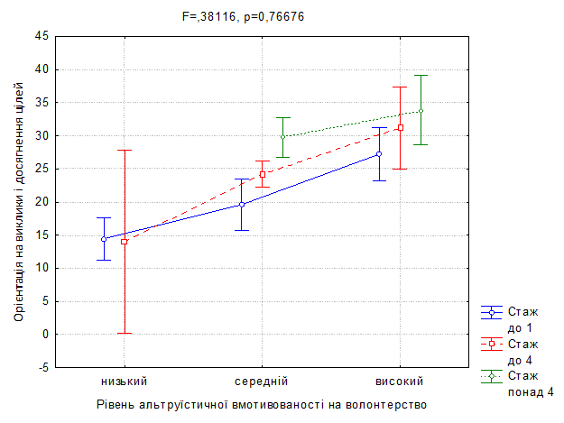
Рис. 2.37 Орієнтація на виклики і досягнення цілей у волонтерів із різним стажем та рівнем альтруїстичної вмотивованості на волонтерство.
Самоконтроль та здатність долати труднощі у волонтерів не залежить від сукупної дії чинників стажу діяльності та рівня альтруїстичної вмотивованості на волонтерство (рис. 2.38).
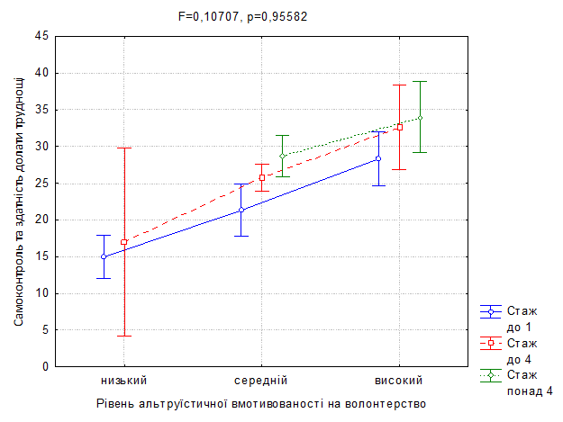
Рис. 2.38 Самоконтроль та здатність долати труднощі у волонтерів із різним стажем та рівнем альтруїстичної вмотивованості на волонтерство.
Самодетермінація та осмисленість життя у волонтерів не залежить від сукупної дії чинників стажу діяльності та рівня альтруїстичної вмотивованості на волонтерство (рис. 2.39).
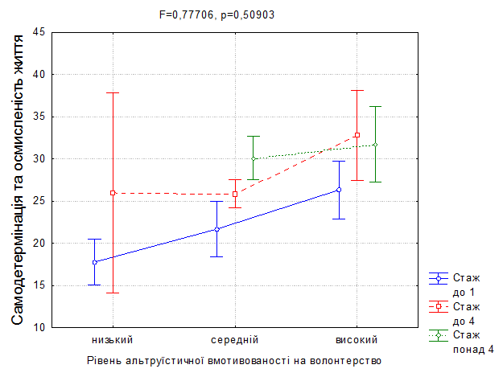
Рис. 2.39 Самодетермінація та осмисленість життя у волонтерів із різним стажем та рівнем альтруїстичної вмотивованості на волонтерство.
Стресостійкість у волонтерів не залежить від сукупної дії чинників стажу діяльності та рівня альтруїстичної вмотивованості на волонтерство (рис. 2.40).
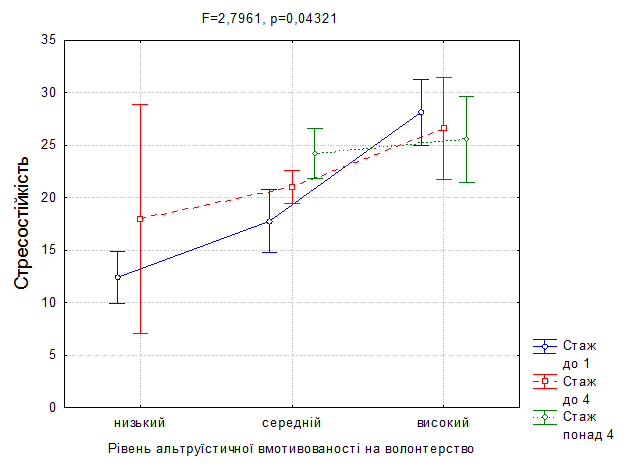
Рис. 2.40. Стресостійкість у волонтерів із різним стажем та рівнем альтруїстичної вмотивованості на волонтерство.
Конструктивні копінги у волонтерів не залежать від сукупної дії чинників стажу діяльності та рівня альтруїстичної вмотивованості на волонтерство (рис. 2.41).
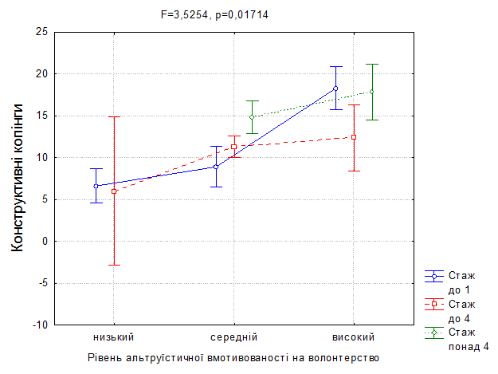
Рис. 2.41. Конструктивні копінги у волонтерів із різним стажем та рівнем альтруїстичної вмотивованості на волонтерство.
Соціальна контактність у волонтерів не залежить від сукупної дії чинників стажу діяльності та рівня альтруїстичної вмотивованості на волонтерство (рис. 2.42).
Рис. 2.42. Соціальна контактність у волонтерів із різним стажем та рівнем альтруїстичної вмотивованості на волонтерство.
Оптимальна регуляція у волонтерів не залежить від сукупної дії чинників стажу діяльності та рівня альтруїстичної вмотивованості на волонтерство (рис. 2.43).
Рис. 2.43. Оптимальна регуляція у волонтерів із різним стажем та рівнем альтруїстичної вмотивованості на волонтерство.
Відкритість життєвому досвіду у волонтерів не залежить від сукупної дії чинників стажу діяльності та рівня альтруїстичної вмотивованості на волонтерство (рис. 2.44).
Рис. 2.44. Відкритість життєвому досвіду у волонтерів із різним стажем та рівнем альтруїстичної вмотивованості на волонтерство.
Загальна резильєнтність, визначена за методикою З. Кіреєвої, характеризується найнижчим рівнем за умови дії двох чинників – низького рівня альтруїстичної спрямованості та малого стажу діяльності в якості волонтера (рис. 2.45).
Рис. 2.45. Загальна резильєнтність у волонтерів із різним стажем та рівнем альтруїстичної вмотивованості на волонтерство.
Загалом рівень альтруїстичної спрямованості виявився значущим чинником резильєнтності лише для волонтерів-початківців: у них чим вищим є рівень альтруїстичної спрямованості, тим вищою є резильєнтність. Середній та високий рівні альтруїстичної спрямованості у більш досвідчених волонтерів передбачають найвищу резильєнтність.
2.3.4. Емоційна стабільність як чинник резильєнтності волонтерів
З таблиці 2.16 видно, зо показники резильєнтності негативно корелюють із показником нейротизму (емоційною нестабільністю) на рівні p<0,0001.
Таблиця 2.16
Кореляції резильєнтності та емоційної стабільності у волонтерів
| Показники | Емоційна нестабільність (нейротизм) |
|---|---|
| Орієнтація на виклики і досягнення цілей | -0,67 |
| Самоконтроль та здатність долати труднощі | -0,67 |
| Самодетермінація та осмисленість життя | -0,56 |
| Стресостійкість | -0,64 |
| Конструктивні копінги | -0,57 |
| Соціальна контактність | -0,69 |
| Оптимальна регуляція | -0,76 |
| Відкритість життєвому досвіду | -0,60 |
| Загальна резильєнтність | -0,65 |
Найсильніші негативні кореляції було виявлено для показників оптимальної регуляції та соціальної контактності. Отже, чим вищим є рівень емоційна нестабільність у волонтерів, тим менше вони здатні до емоційної саморегуляції, тим менше вони спроможні встановлювати соціальні контакти задля вирішення складних завдань діяльності, бути відкритим до життєвих викликів, стресостійким, готовим досягати цілей та долати перешкоди та професійні та життєві виклики.
Отже, емоційна стабільність є значущим чинником резильєнтності у волонетів, зокрема їх оптимальній регуляції.
Високий рівень емоційної стабільності також має переваги над нейротизмом у показниках резильєнтності, зокрема за показниками самоконтролю та здатності долати труднощі (U=46, Z=2,32, p<0,05), стресостійкості (U=45, Z=2,34, p<0,05), оптимальної регуляції (U=4, Z=3,76, p<0,0001), відкритості життєвому досвіду (U=49, Z=2,20, p<0,05), загальної резильєнтності (U=38, Z=2,29, p<0,001) особи з вкрай мало вираженим нейротизмом переважають осіб з мало вираженим нейротизмом.
Вищий рівень емоційної стабільності також має переваги над нейротизмом у показниках резильєнтності, зокрема за показниками оптимальної регуляції (U=418, Z=3,65, p<0,001) особи з мало вираженим нейротизмом переважають осіб з помірно вираженим нейротизмом.
Помірний рівень емоційної стабільності, в свою чергу, також має переваги над нейротизмом у показниках резильєнтності, зокрема за показниками самодетермінації та осмисленості життя (U=193, Z=2,48, p<0,05), стресостійкості (U=176, Z=2,77, p<0,01), соціальної контактності (U=152, Z=3,19, p<0,001), відкритості життєвому досвіду (U=160, Z=3,06, p<0,01), загальної резильєнтності (U=170, Z=2,88, p<0,01) особи з помірно вираженим нейротизмом переважають осіб з досить вираженим нейротизмом.Досить виражений нейротизм також передбачає вищі показники резильєнтності, ніж виражений нейротизм: за показниками орієнтації на виклики та досягнення цілей (U=39, Z=2,13, p<0,05), соціальної контактності (U=36, Z=2,31, p<0,05), оптимальної регуляції (U=35, Z=2,37, p<0,05).
Виражений нейротизм також має переваги над дуже вираженим нейротизмом у показниках оптимальної регуляції (U=7,50, Z=3,74, p<0,001).
Таблиця 2.17
Показники резильєнтності у волонтерів з різним рівнем нейротизму
| Показники | Групи досліджуваних | Н | |||||||||||
|---|---|---|---|---|---|---|---|---|---|---|---|---|---|
| Вкрай мало виражений нейротизм, n=6 | Мало виражений нейротизм, n=38 | Помірний нейротизм, n=42 | Досить виражений нейротизм, n=16 | Виражений нейротизм, n=10 | Вкрай виражений нейротизм, n=15 | ||||||||
| М | ϭ | М | ϭ | М | ϭ | М | ϭ | М | ϭ | М | ϭ | ||
| Орієнтація на виклики і досягнення цілей | 33,67 | 4,76 | 28,24 | 8,01 | 26,40 | 6,81 | 14,50 | 4,09 | 21,38 | 7,56 | 13,60 | 2,82 | 51,12 |
| Самоконтроль та здатність долати труднощі | 37,67 | 0,52 | 27,79 | 7,73 | 27,43 | 4,71 | 19,60 | 8,76 | 21,38 | 6,97 | 14,00 | 2,27 | 48,79 |
| Самодетермінація та осмисленість життя | 33,83 | 5,27 | 27,79 | 7,30 | 27,55 | 5,72 | 19,60 | 4,62 | 22,75 | 5,69 | 18,13 | 5,18 | 35,67 |
| Стресостійкість | 29,67 | 3,14 | 24,00 | 6,67 | 23,26 | 4,80 | 14,20 | 3,22 | 17,56 | 6,44 | 12,40 | 3,27 | 56,00 |
| Конструктивні копінги | 17,67 | 5,43 | 14,53 | 6,01 | 12,81 | 4,87 | 6,70 | 1,34 | 10,25 | 4,06 | 6,33 | 1,29 | 45,31 |
| Соціальна контактність | 13,17 | 1,47 | 11,13 | 3,71 | 10,62 | 2,86 | 4,40 | 1,58 | 7,19 | 2,97 | 4,20 | 0,94 | 61,42 |
| Оптимальна регуляція | 28,83 | 0,75 | 22,71 | 6,78 | 22,17 | 3,46 | 9,20 | 1,14 | 16,50 | 7,04 | 6,73 | 0,96 | 72,55 |
| Відкритість життєвому досвіду | 17,50 | 3,27 | 13,68 | 4,95 | 12,60 | 5,04 | 7,10 | 4,07 | 8,38 | 3,48 | 5,73 | 1,75 | 47,80 |
| Загальна резильєнтність | 67,00 | 1,67 | 55,03 | 16,80 | 55,71 | 10,85 | 29,60 | 11,02 | 40,37 | 18,89 | 21,93 | 11,23 | 56,32 |
Вкрай мало виражений нейротизм має переваги у рівні оптимальній регуляції і досягненні цілей у волонтерів незалежно від стажу діяльності, а при вираженому нейротизмі та мало вираженому нейротизмі рівень оптимальної регуляції прямо пропорційний стажу діяльності (рис. 2.46). Найнижчі показники орієнтації на виклики та досягнення цілей властиві волонтерам із меншим стажем при досить вираженому та вкрай вираженому нейротизмі.
Рис. 2.46. Орієнтація на виклики і досягнення цілей у волонтерів із різним стажем та рівнем нейротизму.
Вкрай мало виражений нейротизм має переваги у рівні самоконтролю та здатності долати труднощі у волонтерів незалежно від стажу діяльності, а при досить вираженому нейротизмі та мало вираженому нейротизмі рівень оптимальної регуляції прямо пропорційний стажу діяльності (рис. 2.47). Найнижчі показники орієнтації на виклики та досягнення цілей властиві волонтерам із меншим стажем при вкрай вираженому нейротизмі.
Рис. 2.47. Самоконтроль та здатність долати труднощі у волонтерів із різним стажем та рівнем нейротизму.
Самодетермінація та осмисленість життя у волонтерів із різним стажем та рівнем нейротизму зростає прямо пропорційно стажу діяльності і незалежно від рівня нейротизму (рис. 2.48).
Рис. 2.48. Самодетермінація та осмисленість життя у волонтерів із різним стажем та рівнем нейротизму.
Стресостійкість у волонтерів із різним рівнем нейротизму майже не залежить від стажу діяльності (рис. 2.49).
Рис. 2.49. Стресостійкість у волонтерів із різним стажем та рівнем нейротизму.
Конструктивні копінги у волонтерів із малим стажем та вкрай мало вираженим рівнем нейротизму є найвищими по вибірці (рис. 2.50).
Рис. 2.50. Конструктивні копінги у волонтерів із різним стажем та рівнем нейротизму.
Соціальна контактність у волонтерів із різним рівнем нейротизму майже не залежить від досвіду діяльності (стажу), а у осіб із вкрай мало вираженим нейротизмом та мало вираженим нейротизмом є найвищою по вибірці (рис. 2.51).
Рис. 2.51. Соціальна контактність у волонтерів із різним стажем та рівнем нейротизму.
Стаж діяльності позитивно позначається на рівні оптимальної регуляції волонтерів лише із вираженим нейротизмом (рис. 2.52).
Рис. 2.52. Оптимальна регуляція у волонтерів із різним стажем та рівнем нейротизму.
Відкритість життєвому досвіду у волонтерів із різним стажем та рівнем нейротизму майже не відрізняється (рис. 2.53).
Рис. 2.53. Відкритість життєвому досвіду у волонтерів із різним стажем та рівнем нейротизму.
Стаж діяльності позитивно позначається на рівні загальної резильєнтності волонтерів лише із вираженим нейротизмом (рис. 2.54), а вкрай виражений нейротизм при найменшому стажі діяльності зумовлюють нанижчі показники загальної резильєнтності.
Рис. 2.54. Загальна резильєнтність у волонтерів із різним стажем та рівнем нейротизму.
Отже, рівень нейротизму є значущим чинником резильєнтності волонетрів незалежно від їх стажу, а для волонтерів-початківців емоційна стабільність є найбільш істотним чинником володіння конструктивними копінгами як показником резильєнтності.
2.3.5. Копінг-стратегії як чинник резильєнтності волонтерів
Наступним завданням емпіричного дослідження було визначення зв’язку між резильєнтністю та копінг-стратегіями волонтерів (таблиця 2.18).
Конфронтація як копінг, що передбачає протистояння характеризує волонтерів, які вчиняють спроби вирішити проблему не через цілеспрямовану поведінкову діяльність по зміні ситуації, а через відреагування негативних емоцій у зв'язку з труднощами, що виникли, негативно пов'язаний із орієнтацією на виклики і досягнення цілей, самоконтролем та здатністю долати труднощі, самодетермінацією та осмисленістю життя, стресостійкістю, конструктивними копінгами, соціальною контактністю, оптимальною регуляцією, відкритістю життєвому досвіду, загальною резильєнтністю.
Отже, чим вище розвинута резильєнтність у волонетрів, тим меншою мірою вони схиляються до такої стратегії подолання стресу, що передбачає імпульсивність в поведінці, ворожість, конфліктність, труднощі в плануванні дій, прогнозування їх результату. Висока резильєнтність може ставати на заваді невиправданій наполегливості. Управляючі дії високорезильєнтних волонетрів актуалізують цілеспрямованість діяльності та блокують агресивне звільнення від емоційного стресу.
Таблиця 2.18
Кореляції резильєнтності та копінг-стратегій у волонтерів
| Показники | Конфронтація | Дистанціювання | Самоконтроль | Пошук соціальної підтримки | Прийняття відповідальності | Уникнення | Планування розвязання проблеми | Позитивна переоцінка |
|---|---|---|---|---|---|---|---|---|
| Орієнтація на виклики і досягнення цілей | -0,36**** | 0,02 | 0,33*** | 0,84**** | 0,39**** | -0,03 | 0,53**** | 0,36**** |
| Самоконтроль та здатність долати труднощі | -0,34**** | 0,00 | 0,29** | 0,75**** | 0,40**** | -0,08 | 0,53**** | 0,34**** |
| Самодетермінація та осмисленість життя | -0,38**** | 0,03 | 0,33*** | 0,81**** | 0,47**** | -0,15 | 0,50**** | 0,34**** |
| Стресостійкість | -0,46**** | 0,06 | 0,37**** | 0,80**** | 0,21* | 0,05 | 0,56**** | 0,37**** |
| Конструктивні копінги | -0,38**** | 0,07 | 0,24** | 0,72**** | 0,16 | 0,06 | 0,51**** | 0,30*** |
| Соціальна контактність | -0,46**** | 0,03 | 0,26** | 0,84**** | 0,26** | -0,03 | 0,50**** | 0,27** |
| Оптимальна регуляція | -0,41**** | 0,03 | 0,32*** | 0,84**** | 0,25** | 0,04 | 0,50**** | 0,31*** |
| Відкритість життєвому досвіду | -0,35**** | 0,01 | 0,28** | 0,81**** | 0,25** | -0,03 | 0,48**** | 0,25** |
| Загальна резильєнтність | -0,44**** | 0,08 | 0,39**** | 0,80**** | 0,24** | 0,05 | 0,54**** | 0,37**** |
Самоконтроль як копінг передбачає спроби подолати негативний досвід у зв'язку з проблемою через цілеспрямоване придушення та обмеження емоцій, мінімізуючи їх вплив на оцінку ситуації у волонетрів слабко пов'язаний із резильєнтністю. Високорезильєнтні волонтери схильні до вибору стратегії поведінки, що передбачає високий контроль за власною поведінкою.
Пошук соціальної підтримки як копінг виявився найбільш сильно пов’язаним із резильєнтністю у волонтерів. Він передбачає спроби вирішити проблему шляхом через залучення зовнішніх (соціальних) ресурсів, через пошук необхідної інформації, емоційної підтримки. Чим більша резильєнтність у волонтерів, зокрема соціальна контактність, орієнтація на виклики, відкритість життєвому досвіду, тим більше вони схильні до взаємодії з іншими людьми, очікують уваги, поради, співчуття.
Прийняття відповідальності як копінг помірно позитивно пов'язаний із резильєнтністю. Отже, висока резильєнтність, особливо самоконтроль та здатність долати труднощі, передбачає визнання з приводу його ролі у виникненні проблеми та відповідальності за її рішення, в деяких випадках з чіткою складовою самокритики. Вища резильєнтність передбачає бажання людини зрозуміти залежність між власними діями та їх наслідками, готовністю проаналізувати власну поведінку, шукати причини відповідних труднощів у особистих недоліків та помилок.
Планування розв’язання проблеми характеризується помірними кореляційними зв’язками із резильєнтністю, зокрема стресостійкістю. Отже, вища резильєнтність передбачає спроби подолати проблему за допомогою цілеспрямованого аналізу ситуації та можливих варіантів поведінки, розробку стратегії вирішення проблеми, планування власних дій з урахуванням об'єктивних умов, минулого досвіду та наявних ресурсів.
Позитивна переоцінка характеризується слабкими зв’язками із резильєнтністю. Прагнення подолати негативний досвід у зв'язку з проблемою через її позитивне переосмислення, розглядаючи це як стимул для особистого зростання властиве волонтерам із достатньо високою резильєнтністю. Вища резильєнтність в цілому передбачає більшу схильність до філософського розуміння проблемної ситуації, її включення до більш широкого контексту особистості саморозвитку.
Різноманіття та різновекторність копінгів згідно моделі Р. Лазаруса умовлює необхідність визначення їх типів у волонетрів з метою подальшого аналізу ролі цих типів у розвитку резильєнтності. На рисунку 2.55 показано кластерні профілі копінг-стратегій у волонетрів.
Рис. 2.55. Кластерні профілі копінг-стратегій волонтерів.
Кластер 1 - «Домінування копінгу уникнення» - кластер був названий саме так, оскільки провідним допінгом тут виступає уникнення, а усі інші допінги виражені на середньому рівні (самоконтроль, пошук соціальної підтримки, дистанціювання, планування вирішення проблеми та позитивна переоцінка), або на низькому рівні (прийняття відповідальності, конфронтація).
Кластер 2 - «Відмова від відповідальності за вирішення проблеми» - характеризується помірний рівнем розвитку усіх допінгів, крім прийняття відповідальності. Найвищого рівня у цьому профілі сягають показники планування вирішення проблеми та позитивної переоцінки.
Кластер 3 - «Домінування копінгу конфронтації» - помірні показники конфронтації та уникнення у поєднанні із низькими показниками за іншими допінгами.
Кластер 4 - «Домінування конструктивних копінгів» - високі показники планування вирішення проблеми та позитивної переоцінки, пошуку соціальної підтримки на тлі низьких значень за копігами уникнення, конфронтації, дистанціювання. Крім того, лише у цьому профілі допінг прийняття відповідальності характеризується середніми значеннями.
Показники резильєнтності у волонтерів із різними типами копінг-стратегій показані у таблиці 2.19.
Таблиця 2.19
Показники резильєнтності у волонтерів із різними типами копінг-стратегій
| Показники | Групи досліджуваних | Н | |||||||
|---|---|---|---|---|---|---|---|---|---|
| «Домінування копінгу уникнення» | «Відмова від відповідальності за вирішення проблеми» | «Домінування копінгу конфронтації» | «Домінування конструктивних копінгів» | ||||||
| М | ϭ | М | ϭ | М | ϭ | М | ϭ | ||
| Орієнтація на виклики і досягнення цілей | 23,20 | 7,64 | 25,20 | 8,56 | 18,20 | 9,53 | 28,94 | 8,43 | 12,67** |
| Самоконтроль та здатність долати труднощі | 23,70 | 7,47 | 26,14 | 7,95 | 21,53 | 8,72 | 28,28 | 8,94 | 6,15 |
| Самодетермінація та осмисленість життя | 23,68 | 6,54 | 27,18 | 6,99 | 22,27 | 8,01 | 28,50 | 7,03 | 11,58** |
| Стресостійкість | 20,80 | 8,23 | 21,62 | 5,82 | 16,47 | 6,14 | 24,06 | 6,35 | 10,59* |
| Конструктивні копінги | 11,95 | 6,08 | 12,14 | 5,29 | 8,80 | 3,88 | 14,28 | 5,91 | 9,19* |
| Соціальна контактність | 8,91 | 3,86 | 9,44 | 3,93 | 7,67 | 4,20 | 10,61 | 4,13 | 4,30 |
| Оптимальна регуляція | 18,86 | 7,62 | 19,88 | 7,43 | 13,93 | 8,71 | 21,72 | 7,61 | 9,35* |
| Відкритість життєвому досвіду | 11,14 | 5,17 | 11,72 | 5,36 | 8,87 | 5,85 | 13,11 | 5,29 | 6,46 |
| Загальна резильєнтність | 47,02 | 19,93 | 50,52 | 16,38 | 34,07 | 20,29 | 55,44 | 15,89 | 10,37** |
Волонтери типу «Домінування копінгу уникнення» поступаються волонтерам типу «Відмова від відповідальності за вирішення проблеми» лише за показником самодетермінації та осмисленості життя (U=800, Z=2,26, p<0,05). За цим же показником вони поступаються волонтерам типу «Домінування конструктивних копінгів» (U=249, Z=2,27, p<0,05), а також за показником орієнтації на виклики та досягнення цілей (U=219, Z=2,74, p<0,01).
Волонтери типу «Відмова від відповідальності за вирішення проблеми» переважають волонтерів типу «Домінування копінгу конфронтації» за показниками орієнтації на виклики та досягнення цілей (U=220, Z=2,40, p<0,05), самодетермінації та осмисленості життя (U=219, Z=2,42, p<0,05), стресостікості (U=201, Z=2,70, p<0,01), конструктивних копінгів (U=235, Z=2,17, p<0,01), оптимальної регуляції (U=226, Z=2,31, p<0,05), відкритості життєвому досвіду (U=228, Z=2,28, p<0,05), загальної резильєнтності (U=205, Z=2,64, p<0,01).
Волонтери типу «Домінування копінгу конфронтації» поступаються волонетрам типу «Домінування конструктивних копінгів» за показниками орієнтації на виклики та досягнення цілей (U=53, Z=2,94, p<0,01), самодетермінації та осмисленості життя (U=71, Z=2,29, p<0,05), стресостікості (U=53, Z=2,96, p<0,01), конструктивних копінгів (U=58, Z=2,78, p<0,01), оптимальної регуляції (U=64, Z=2,54, p<0,01), відкритості життєвому досвіду (U=74, Z=2,18, p<0,05), загальної резильєнтності (U=52, Z=3,00, p<0,01).
Орієнтація на виклики і досягнення цілей у волонтерів «Домінування копінгу конфронтації» з найбільшим стажем діяльності є вищою, ніж у інших волонтерів (рис. 2.56).
Рис. 2.56. Орієнтація на виклики і досягнення цілей у волонтерів із різним стажем та типом копінг-стратегій.
У межах достатнього стажу діяльності у волонтерів типу «Домінування конструктивних копінгів» показники орієнтація на виклики і досягнення цілей є вищими.
Самоконтроль та здатність долати труднощі у волонтерів «Домінування копінгу конфронтації» з найбільшим стажем діяльності є вищим, ніж у інших волонтерів (рис. 2.57). У межах достатнього стажу діяльності у волонтерів типу «Домінування конструктивних копінгів» показники самоконтролю та здатність долати труднощі є вищими.
Рис. 2.57. Самоконтроль та здатність долати труднощі у волонтерів із різним стажем та типом копінг-стратегій.
Самодетермінація та осмисленість життя у волонтерів «Домінування копінгу конфронтації» з найбільшим стажем діяльності є вищою, ніж у інших волонтерів (рис. 2.58). У межах достатнього стажу діяльності у волонтерів типу «Домінування конструктивних копінгів» показники самодетермінації та осмисленості життя є вищими.
Рис. 2.58. Самодетермінація та осмисленість життя у волонтерів із різним стажем та типом копінг-стратегій.
Стресостійкість у волонтерів із різним стажем та типом копінг-стратегій майже не відрізняється (рис. 2.59).
Рис. 2.59. Стресостійкість у волонтерів із різним стажем та типом копінг-стратегій.
Конструктивні копінги як показник резильєнтності у волонтерів із різним стажем та типом копінг-стратегій мають свою специфіку: вони є вищими при «Домінуванні конструктивних копінгів» у волонетрів із набільшим стажем діяльності (рис. 2.60).
Рис. 2.60. Конструктивні копінги у волонтерів із різним стажем та типом копінг-стратегій.
Соціальна контактність у волонтерів із різним стажем та типом копінг-стратегій майже не відрізняється (рис. 2.61).
Рис. 2.61. Соціальна контактність у волонтерів із різним стажем та типом копінг-стратегій.
Оптимальна регуляція у волонтерів із різним стажем та типом копінг-стратегій майже не відрізняється (рис. 2.62).
Рис. 2.62. Оптимальна регуляція у волонтерів із різним стажем та типом копінг-стратегій.
Відкритість життєвому досвіду у волонтерів із різним стажем та типом копінг-стратегій майже не відрізняється (рис. 2.63).
Рис. 2.63. Відкритість життєвому досвіду у волонтерів із різним стажем та типом копінг-стратегій.
Загальна резильєнтність у волонтерів із різним стажем та типом копінг-стратегій майже не відрізняється (рис. 2.64).
Рис. 2.64. Загальна резильєнтність у волонтерів із різним стажем та типом копінг-стратегій.
Отже, у волонетрів із великим стажем діяльності при «Домінуванні конструктивних копінгів», якому властиві високі показники планування вирішення проблеми та позитивної переоцінки, пошуку соціальної підтримки на тлі низьких значень за копігами уникнення, конфронтації, дистанціювання, показники резильєтності є вищими. Такі результати дають підстави стверджувати, що поєднання переваги копінгам планування вирішення проблеми та позитивної переоцінки, пошуку соціальної підтримки на тлі відмови від копігів уникнення, конфронтації, дистанціювання є важливим стильовим чинником розвитку резилєнтності у волонтерів із великим стажем діяльності.
2.3.6. Тривожність як чинник резильєнтності волонтерів
У таблиці 2.20 показано кореляційні зв’язки між резильєнтністю та тривожністю у волонтерів.
Таблиця 2.20
Кореляції резильєнтності та тривожності у волонтерів
| Показники | Реактивна тривожність | Особистісна тривожність |
|---|---|---|
| Орієнтація на виклики і досягнення цілей | -0,36**** | -0,47**** |
| Самоконтроль та здатність долати труднощі | -0,37**** | -0,43**** |
| Самодетермінація та осмисленість життя | -0,33*** | -0,41**** |
| Стресостійкість | -0,29*** | -0,39**** |
| Конструктивні копінги | -0,23* | -0,32 |
| Соціальна контактність | -0,30*** | -0,41**** |
| Оптимальна регуляція | -0,38**** | -0,50**** |
| Відкритість життєвому досвіду | -0,37**** | -0,43**** |
| Загальна резильєнтність | -0,30*** | -0,41**** |
Реактивна тривожність характеризується слабкими негативними кореляціями із резильєнтністю у волонтерів. Найсильніший із низки негативних кореляцій виявися із оптимальною регуляцією. Отже, чим складніше волонтерам вдається регулювати свій стан, тим більшу тривожність вони переживають у ситуаціях небезпеки та невизначеності. Крім того, більшій ситуативній тривожності відповідає знижені показники самоконтролю та здатності долати труднощі, відкритості життєвому досвіду, орієнтації на виклики та досягнення цілей, само детермінації та осмисленості життя, загальної резильєнтності, соціальної контактності, стресостійкості та конструктивних копінгів.
Особистісна тривожність характеризується більш сильними негативними зв’язками із резильєнтністю, особливо за показниками оптимальної регуляції, орієнтації на виклики та досягнення цілей. Крім того, чим вище особистісна тривожність у волонетрів, тим нижче у них розвинені такі якості резильєнтності, як самоконтроль та здатність долати труднощі, відкритість життєвому досвіду, самодетермінація та осмисленість життя, соціальна контактність, загальна резильєнтність, стресостійкість та конструктивні копінги.
Отже, резильєнтність, особливо здатності до саморегуляції психічних станів, може стояти на заваді актуалізації тривожності, у той же час висока особистісна тривожність може виступати негативним чинником формування резильєнтності у волонетрів.
Для вивчення типових рівнів тривожності у волонетрів було здійснено процедуру кластерного аналізу, за результатами якої було отримано три кластерні профілі (рис. 2.65). Перший кластер утворений помірними показниками особистісної та реактивної тривожності і був названий «Помірна тривожність», другий – високими показниками особистісної та реактивної тривожності, відповідно, був названий – «Висока тривожність», та третій кластер представлений низькими показниками особистісної та реактивної тривожності, тому був названий «Низька тривожність».
Рис. 2.65. Кластерні профілі тривожності волонтерів.
У таблиці 2.21 показано специфіку резильєнтності в залежності від рівня тривожності волонетрів.
Таблиця 2.21
Показники резильєнтності у волонтерів з різним рівнем тривожності
| Показники | Групи досліджувнаих | Н | |||||
|---|---|---|---|---|---|---|---|
| Низький | Середній | Високий | |||||
| М | ϭ | М | ϭ | М | ϭ | ||
| Орієнтація на виклики і досягнення цілей | 23,88 | 10,77 | 26,86 | 6,11 | 11,81 | 2,56 | 34,57 |
| Самоконтроль та здатність долати труднощі | 24,53 | 10,79 | 27,62 | 5,05 | 13,44 | 3,05 | 36,31 |
| Самодетермінація та осмисленість життя | 25,84 | 9,43 | 27,18 | 5,22 | 17,13 | 4,87 | 20,91 |
| Стресостійкість | 20,69 | 7,69 | 23,13 | 5,65 | 11,69 | 3,70 | 31,85 |
| Конструктивні копінги | 11,47 | 6,21 | 13,38 | 5,18 | 6,13 | 1,02 | 29,12 |
| Соціальна контактність | 8,78 | 4,89 | 10,42 | 3,04 | 4,13 | 0,96 | 33,97 |
| Оптимальна регуляція | 18,09 | 9,74 | 22,09 | 4,36 | 6,25 | 0,45 | 42,04 |
| Відкритість життєвому досвіду | 12,03 | 6,30 | 12,34 | 4,72 | 5,31 | 1,40 | 28,95 |
| Загальна резильєнтність | 46,38 | 20,25 | 54,24 | 13,95 | 20,94 | 10,83 | 32,03 |
Волонтери із низьким та середнім рівнем тривожності не мають статистично значущих відмінностей у показниках резильєнтності, натомість при високому рівні тривожності значно нижчими є показники орієнтації на виклики та досягнення цілей (U=77, Z=3,90, p<0,0001), самоконтролю та здатності долати труднощі (U=102, Z=3,36, p<0,001), самодетермінації та осмисленості життя (U=126, Z=2,84, p<0,01), стресостікості (U=84, Z=3,75, p<0,0001), конструктивних копінгів (U=129, Z=2,76, p<0,01), соціальної контактності (U=129, Z=2,77, p<0,01), оптимальної регуляції (U=0, Z=5,59, p<0,0001), відкритості життєвому досвіду (U=102, Z=3,35, p<0,0001), загальної резильєнтності (U=77, Z=3,91, p<0,0001) у порівнянні із волонтерами із низьким рівнем тривожності.
У порівнянні із волонтерами із середнім рівнем тривожності високо тривожні поступаються у показниках орієнтації на виклики та досягнення цілей (U=28, Z=6,00, p<0,0001), самоконтролю та здатності долати труднощі (U=0, Z=6,28, p<0,0001), самодетермінації та осмисленості життя (U=150, Z=4,79, p<0,0001), стресостікості (U=53, Z=5,75, p<0,0001), конструктивних копінгів (U=68, Z=5,60, p<0,0001), соціальної контактності (U=17, Z=6,11, p<0,0001), оптимальної регуляції (U=0, Z=6,28, p<0,0001), відкритості життєвому досвіду (U=57, Z=5,71, p<0,0001), загальної резильєнтності (U=52, Z=5,76, p<0,0001).
Отже, помірний рівень тривожності у волонетрів є оптимальним з позиції вищого рівня розвитку резильєнтності.
Низький рівень тривожності при достатньо високому досвіді діяльності у волонтерів, а також незалежно від досвіду при помірному рівні тривожності передбачають вищі показники орієнтації на виклики і досягнення цілей, натомість високий рівень тривожності у волонтерів пов'язаний із найнижчими показниками орієнтації на виклики і досягнення цілей (рис. 2.66). Найменший стаж діяльності при помірному рівні тривожності у волонтерів передбачає низькі показники орієнтації на виклики і досягнення цілей.
Рис. 2.66. Орієнтація на виклики і досягнення цілей у волонтерів із різним стажем та рівнем тривожності.
Низький рівень тривожності при достатньо високому досвіді діяльності у волонтерів, а також незалежно від досвіду при помірному рівні тривожності передбачають вищі показники самоконтролю та здатності долати труднощі, натомість високий рівень тривожності у волонтерів пов'язаний із найнижчими показниками самоконтролю та здатності долати труднощі (рис. 2.67). Найменший стаж діяльності при низькому рівні тривожності у волонтерів передбачає низькі показники самоконтролю та здатності долати труднощі.
Рис. 2.67. Самоконтроль та здатність долати труднощі у волонтерів із різним стажем та рівнем тривожності.
Низький рівень тривожності при достатньо високому досвіді діяльності у волонтерів, а також незалежно від досвіду при помірному рівні тривожності передбачають вищі показники самодетермінації та осмисленості життя, натомість високий рівень тривожності у волонтерів пов'язаний із найнижчими показниками самодетермінації та осмисленості життя у волонтерів із різним стажем та рівнем тривожності (рис. 2.68). Найменший стаж діяльності при низькому рівні тривожності у волонтерів передбачає низькі показники самодетермінації та осмисленості життя.
Рис. 2.68. Самодетермінація та осмисленість життя у волонтерів із різним стажем та рівнем тривожності.
Низький рівень тривожності при достатньо високому досвіді діяльності у волонтерів, а також незалежно від досвіду при помірному рівні тривожності передбачають вищі показники стресостійкості, натомість високий рівень тривожності у волонтерів пов'язаний із найнижчими показниками стресостійкості у волонтерів із різним стажем та рівнем тривожності (рис. 2.69). Найменший стаж діяльності при низькому рівні тривожності у волонтерів передбачає низькі показники стресостійкості.
Рис. 2.69. Стресостійкість у волонтерів із різним стажем та рівнем тривожності.
Низький рівень тривожності при високому досвіді діяльності у волонтерів, а також незалежно від досвіду при помірному рівні тривожності передбачають вищі показники конструктивних копінгів, натомість високий рівень тривожності у волонтерів пов'язаний із найнижчими показниками конструктивних копінгів у волонтерів із різним стажем та рівнем тривожності (рис. 2.70). Найменший стаж діяльності при низькому та високому рівнях тривожності у волонтерів передбачає низькі показники конструктивних копінгів.
Рис. 2.70. Конструктивні копінги у волонтерів із різним стажем та рівнем тривожності.
Низький рівень тривожності при високому досвіді діяльності у волонтерів, а також незалежно від досвіду при середньому рівні тривожності передбачають вищі показники соціальної контактності, натомість високий рівень тривожності у волонтерів пов'язаний із найнижчими показниками соціальної контактності у волонтерів із різним стажем та рівнем тривожності (рис. 2.71). Найменший стаж діяльності при низькому та високому рівнях тривожності у волонтерів передбачає низькі показники соціальної контактності.
Рис. 2.71. Соціальна контактність у волонтерів із різним стажем та рівнем тривожності.
Низький рівень тривожності при високому досвіді діяльності у волонтерів, а також незалежно від досвіду при середньому рівні тривожності передбачають вищі показники оптимальної регуляції, натомість високий рівень тривожності у волонтерів пов'язаний із найнижчими показниками оптимальної регуляції у волонтерів із різним стажем та рівнем тривожності (рис. 2.72). Найменший стаж діяльності при низькому та високому рівнях тривожності у волонтерів передбачає низькі показники оптимальної регуляції.
Рис. 2.72. Оптимальна регуляція у волонтерів із різним стажем та рівнем тривожності.
Низький рівень тривожності при високому досвіді діяльності у волонтерів, а також незалежно від досвіду при середньому рівні тривожності передбачають вищі показники відкритості життєвому досвіду, натомість високий рівень тривожності у волонтерів пов'язаний із найнижчими показниками відкритості життєвому досвіду у волонтерів із різним стажем та рівнем тривожності (рис. 2.73). Найменший стаж діяльності при низькому та високому рівнях тривожності у волонтерів передбачає низькі показники відкритості життєвому досвіду.
Рис. 2.73. Відкритість життєвому досвіду у волонтерів із різним стажем та рівнем тривожності.
Низький рівень тривожності при високому досвіді діяльності у волонтерів, а також незалежно від досвіду при середньому рівні тривожності передбачають вищі показники загальної резильєнтності, натомість високий рівень тривожності у волонтерів пов'язаний із найнижчими показниками загальної резильєнтності у волонтерів із різним стажем та рівнем тривожності (рис. 2.74). Найменший стаж діяльності при низькому та високому рівнях тривожності у волонтерів передбачає низькі показники загальної резильєнтності.
Рис. 2.74. Загальна резильєнтність у волонтерів із різним стажем та рівнем тривожності.
Отже, висока тривожність є чинником зниження резильєнтності у волонетів незалежно від стажу діяльності, натомість середній рівень тривожності зумовлює зростання резильєнтності у волонетрів незалежно від стажу діяльності, а низький її рівень – тільки у досвідчених волонтерів.
2.4. Психологічні предиктори резильєнтності волонтерів
Наступним завданням емпіричного досліденння було виявлення психологічних предикторів змістових (компонентних) та процесеуальних (інтегрального) показників резильєнтності. Для цього було побудовано низку регресійних моделей, опис яких наведено нижче.
У таблиці 2.22 показано предиктори для показника орієнтації на виклики та досягнення цілей у волонтерів. Отримана регресійна модель пояснює 82,5% дисперсії. На основі рівняння нами було побудовано регресійне рівняння, що має вигляд:
Орієнтація на виклики та досягнення цілей = 0,30 Копінг пошуку соціальної підтримки + 0,34 Самотрансценденція + 0,48 Самодистанціювання – 0,14 Нейротизм.
Таблиця 2.22
Регресійна модель показника орієнтації на виклики та досягнення цілей у волонтерів
| Показники | БЕТА | Стд. Пом. | B | Стд. Пом. | t | p |
|---|---|---|---|---|---|---|
| Вільний член | -1,09, | 4,88 | -0,22 | 0,822 | ||
| Пошук соціальної підтримки | 0,29 | 0,105 | 0,99 | 0,35 | 2,84 | 0,005 |
| Нейротизм | -0,14 | 0,06 | -0,23 | 0,09 | -2,38 | 0,019 |
| Самодистанцію-вання | 0,49 | 0,216 | 0,42 | 0,18 | 2,30 | 0,023 |
| Самотрансцен-денція | 0,35 | 0,15 | 0,23 | 0,09, | 2,31 | 0,022 |
Отже, найбільш значущим предиктором для розвитку орієнтації на виклики та досягнення цілей у волонтерів є копінг соціальної підтримки, позитивну дію якого доповнюють показники емоційної стабільності (знижений нейротизм), а також такі показники екзистенційності, як самодистанціювання та самотрансценденція.
Таким чином, оволодіння стратегією подолання стресу, яка виявляється у здатності шукати допомги в інших у кризисних та стресових ситуаціях, підтримка емоційної стабільності та розвиток вміння емоційно відгукуватися на цінності та смисли життя, здатності організовувтаи вільний гармноійний внутрішній простір можуть сприяти розвитку більшої орієнтації волонтерів на прийняття викликів життя та діяльності та на постановку та реалізацію їх цілей.
У таблиці 2.23 показано предиктори для самоконтролю та здатності долати труднощі у волонтерів. Отримана регресійна модель пояснює 83,6% дисперсії.
Таблиця 2.23
Регресійна модель показника самоконтролю та здатності долати труднощі у волонтерів
| Показники | БЕТА | Стд. Пом. | B | Стд. Пом. | t | p |
|---|---|---|---|---|---|---|
| Вільний член | 11,71, | 5,14 | 2,28 | 0,024 | ||
| Нейротизм | -0,31 | 0,07 | -0,46, | 0,09, | -4,71, | 0,000008 |
| Креативність | 0,38 | 0,19, | 1,32 | 0,66, | 1,99 | 0,049 |
| Автономність | 0,488 | 0,21 | 1,65, | 0,72 | 2,30, | 0,023 |
| Свобода | 0,3 | 0,15 | 0,28, | 0,14 | 2,07 | 0,041 |
На основі рівняння нами було побудовано регресійне рівняння, що має вигляд:
Самоконтроль та здатність долати труднощі = 11,71 + 0,38 Креативність + 0,48 Автономність + 0,30 Свобода – 0,31 Нейротизм.
Отже, найбільш значущим предиктором самоконтрою та здатності долати труднощі є емоційна стабільність, позитивна дія якої підтримується чинниками креативності і автономності як показників особистісної зрілості та свободи як показника екзистенційності. Підтримка емоційної стабільності, сприяння якостями творчості та незалежності у житті та діяльності, розвиток свободи смислотворення у житті можуть позитивно позначатись на здатності контролювати себе у стресі та долати труднощі та перешкоди у діяльності.
У таблиці 2.24 показано предиктори для самодетермінації та осмисленості життя у волонтерів. Отримана регресійна модель пояснює 90,4% дисперсії.
На основі рівняння нами було побудовано регресійне рівняння, що має вигляд:
Самодетермінація та осмисленість життя = 7,34 - 0,08 Копінг дистанціювання + 0,24 Копінг пошуку соціальної підтримки + 0,11 Копінг прийняття відповідальності.
Таблиця 2.24
Регресійна модель показника самодетермінації та осмисленості життя у волонтерів
| Показники | БЕТА | Стд. Пом. | B | Стд. Пом. | t | p |
|---|---|---|---|---|---|---|
| Вільний член | 7,35 | 3,01 | 2,44 | 0,016 | ||
| Дистанціювання | -0,08, | 0,03, | -0,23, | 0,09 | -2,46 | 0,015 |
| Пошук соціальної підтримки | 0,24, | 0,07, | 0,67 | 0,21 | 3,11 | 0,002 |
| Прийняття відповідальності | 0,11, | 0,04 | 0,30, | 0,09 | 3,12 | 0,002 |
Отже, найбільш значущим предиктором самодетермінації та осмисленості життя є копінги пошуку соціальної підтримки та прийняття відповідальності разом, дія яких підсилюється зниженням копінгу дистанціювання. Формування конструктивних копінгів та долання схильності дистанціюватись від проблем може позитивно зумовлювати розвиток здатностей до самодетермінації та інтеральності у вирішенні проблем та осмислення стресової ситуації.
У таблиці 2.25 показано предиктори для стресостійкості у волонтерів. Отримана регресійна модель пояснює 89,2% дисперсії.
Таблиця 2.25
Регресійна модель показника стресостійкості у волонтерів
| Показники | БЕТА | Стд. Пом. | B | Стд. Пом. | t | p |
|---|---|---|---|---|---|---|
| Вільний член | 2,49 | 3,59 | 0,69 | 0,488 | ||
| Пошук соціальної підтримки | 0,36 | 0,09 | 0,98 | 0,26 | 3,82 | 0,0002 |
| Відповідальність | 0,49 | 0,15 | 1,39 | 0,46 | 3,02 | 0,003 |
| Децентрація | 0,53 | 0,18 | 1,53 | 0,51 | 2,99 | 0,003 |
| Глибинність переживань | 0,52 | 0,16 | 1,68 | 0,513 | 3,28 | 0,001 |
| Життєва філософія | 0,71 | 0,19 | 1,90 | 0,49 | 3,81 | 0,0002 |
| Толерантність | 0,51 | 0,17 | 1,43 | 0,47 | 3,02 | 0,003 |
| Автономність | 0,49 | 0,17 | 1,45 | 0,49 | 2,89 | 0,004 |
| Контактність | 0,6 | 0,18 | 1,65 | 0,48 | 3,41 | 0,0009 |
| Самоприйняття | 1,08 | 0,18 | 2,96 | 0,49 | 5,99 | 0,000000 |
| Креативність | 0,51 | 0,15 | 1,52 | 0,46 | 3,29 | 0,001 |
| Синергічність | 0,72 | 0,18 | 2,16 | 0,54 | 3,99 | 0,0001 |
| Співвіднесеність, час, близькість | 0,11 | 0,05 | 0,13 | 0,06 | 2,05 | 0,043 |
На основі рівняння нами було побудовано регресійне рівняння, що має вигляд:
Стресостійкість = 0,45 Відповідальність + 0,36 Копінг пошуку соціальної підтримки + 0,53 Децентрація + 0,52 Глибинність переживань + 0,71 Життєва філософія + 0,50 Толерантність + 0,49 Автономність + 0,60 Контактність + 1,07 Самоприйняття + 0,51 Креативність + 0,72 Синергічність + 0,10 Співвіднесеність – час – близькість.
Отже, найбільш значущим предиктором стресостійкості як показника резильєнтності є самоприйняття як показник особистісної зрілості. Крім того, значущим виявляється дія синергічності, життєвої філософії, креативності як показників особистісної зрілості. Інші показники сообистісної зрілості також є значущими чинниками розвитку стресостійкості разом із копінгами пошуку соціальної підтримки та другою фундаментальною екзистенцінйою мотивацією.
У таблиці 2.26 показано предиктори для конструктивних копінгів у волонтерів. Отримана регресійна модель пояснює 79,2% дисперсії.
Таблиця 2.26
Регресійна модель показника конструктивних копінгів у волонтерів
| Показники | БЕТА | Стд. Пом. | B | Стд. Пом. | t | p |
|---|---|---|---|---|---|---|
| Вільний член | -11,48 | 3,99 | -2,88 | 0,004 | ||
| Пошук соціальної підтримки | 0,47 | 0,13 | 1,00 | 0,28 | 3,54 | 0,000 |
| Опора, захищеність, простір | 0,27 | 0,07 | 0,28 | 0,07 | 3,90 | 0,0001 |
На основі рівняння нами було побудовано регресійне рівняння, що має вигляд:
Конструктивні копінги = 0,27 Опора, захищеність, простір + 0,47 Копінг пошуку соціальної підтримки – 11,48.
Копінг пошуку соціальної підтримки та перша фундаментальна мотивація, що дає почуття опори, захищеності та простору, виявились значущими чинниками актуалізації конструктивних копінгів як показника резильєнтності.
У таблиці 2.27 показано предиктори для соціальної контактності у волонтерів. Отримана регресійна модель пояснює 93,5% дисперсії.
На основі рівняння нами було побудовано регресійне рівняння, що має вигляд:
Соціальна контактність = 0,10 Альтруїстична спрямованість волонтера - 0,11 Копінг конфронтації – 0,09 Особистісна тривожність – 0,10 Нейротизм + 0,17 Відповідальність + 0,15 Співвіднесеність, час, близькість + 0,13 Копінг пошуку соціальної підтримки.
Отже, друга фундаментальна екзистенційна мотивація та відмова від копінгу конфронтації є найбільш важливими чинниками соціальної контактності як показника резильєнтності. Крім того, їх позитивна дія підкріплюється чинниками зниження особистісної тривожності, відмови від конфронтації як копінгу, розвитком альтруїстичної спрямованості у волонтерстві, копінгом пошуку соціальної підтримки, емоційною стабільністю, екзистенційною відповідальністю.
Таблиця 2.27
Регресійна модель показника соціальної контактності у волонтерів
| Показники | БЕТА | Стд. Пом. | B | Стд. Пом. | t | p |
|---|---|---|---|---|---|---|
| Вільний член | 0,39 | 1,57 | 0,25 | 0,803 | ||
| Особистісна тривожність | -0,09 | 0,057 | -0,04 | 0,02 | -1,73 | 0,0473 |
| Конфронтація | -0,11 | 0,037 | -0,17 | 0,05 | -3,303 | 0,0013 |
| Альтруїстична спрямованість волонтера | 0,12 | 0,05 | 0,02 | 0,009 | 2,293 | 0,024 |
| Пошук соціальної підтримки | 0,13 | 0,07 | 0,20 | 0,11 | 1,803 | 0,05 |
| Нейротизм | -0,10 | 0,04 | -0,08 | 0,03 | -2,533 | 0,013 |
| Відповідальність | 0,17 | 0,081 | 0,05 | 0,023 | 2,136 | 0,035 |
| Співвіднесеність, час, близькість | 0,15 | 0,041 | 0,10 | 0,03 | 3,693 | 0,0003 |
У таблиці 2.28 показано предиктори для оптимальної регуляції у волонтерів. Отримана регресійна модель пояснює 88,9% дисперсії.
На основі рівняння нами було побудовано регресійне рівняння, що має вигляд:
Оптимальна регуляція = 0,27 Самоприйняття + 0,26 Свобода – 0,20 Особистісна тривожність – 0,23 Нейротизм + 0,11 Опора, захищеність, простір + 0,13 Співвіднесеність, час, близькість + 0,30 Копінг пошуку соціальної підтримки + 0,12 Зацікавлена увага, справедливе ставлення, визнання цінності.
Таблиця 2.28
Регресійна модель показника оптимальної регуляції у волонтерів
| Показники | БЕТА | Стд. Пом. | B | Стд. Пом. | t | p |
|---|---|---|---|---|---|---|
| Вільний член | 3,79 | 3,53 | 1,07 | 0,286 | ||
| Особистісна тривожність | -0,19, | 0,064 | -0,16 | 0,05 | -3,04 | 0,003 |
| Пошук соціальної підтримки | 0,31 | 0,08 | 0,92 | 0,25 | 3,65 | 0,0004 |
| Нейротизм | -0,23 | 0,05 | -0,33 | 0,07 | -4,92 | 0,000004 |
| Самоприйняття | 0,27 | 0,16 | 0,84 | 0,49 | 1,71 | 0,049 |
| Свобода | 0,26 | 0,10 | 0,24 | 0,09 | 2,53 | 0,013 |
| Опора, захищеність, простір | 0,11 | 0,04 | 0,16 | 0,06 | 2,45 | 0,016 |
| Співвіднесеність, час, близькість | 0,131 | 0,05 | 0,18 | 0,06 | 2,88 | 0,004 |
| Зацікавлена увага, справедливе ставлення, визнання цінності | 0,12, | 0,04 | 0,18 | 0,06 | 2,93 | 0,004 |
Отже, найбільш значущим чинником розвитку оптимальної регуляції у волонтерів є емоційна стабільність, дію якої доповнюють знижена особистісна тривожність, копінг соціальної підтримки, самоприйняття особистісної зрілості, свобода екзистенційності та три з чотирьох існуючих фундаментальних екзистенційних мотивацій.
У таблиці 2.29 показано предиктори для відкритості життєвому досвіду у волонтерів. Отримана регресійна модель пояснює 89,5% дисперсії.
На основі рівняння нами було побудовано регресійне рівняння, що має вигляд:
Відкритість життєвому досвіду = 0,15 Альтруїстична спрямованість волонтера + 0,12 Контактність + 0,40 Креативність + 0,43 Копінг пошуку соціальної підтримки + 0,09 Зацікавлена увага, справедливе ставлення, визнання цінності.
Таблиця 2.29
Регресійна модель показника відкритості життєвому досвіду у волонтерів
| Показники | БЕТА | Стд. Пом. | B | Стд. Пом. | t | p |
|---|---|---|---|---|---|---|
| Вільний член | -4,28 | 2,68 | -1,59 | 0,113 | ||
| Альтруїстична спрямованість волонтера | 0,15 | 0,06 | 0,04 | 0,02 | 2,54 | 0,012 |
| Пошук соціальної підтримки | 0,43 | 0,09 | 0,88 | 0,19 | 4,59 | 0,00001 |
| Контактність | 0,12 | 0,06 | 0,25 | 0,12 | 2,01 | 0,047 |
| Креативність | 0,40 | 0,06 | 0,95 | 0,13 | 7,14 | 0,000000 |
| Зацікавлена увага, справедливе ставлення, визнання цінності | 0,09 | 0,05 | 0,09 | 0,05 | 2,04 | 0,044 |
Отже, відкритість життєвому досвіду як показник резильєнтності найбільш істотно зумовлений креативністю особистісної зрілості та копінгом пошуку соціальної підтримки. Крім того, на цьому змістовому компоненті резильєнтності позитивно позначаються показники альтруїстичної спрямованості на волонтерську діяльність, контактність та третя фундаментальна екзситенційна мотивація.
У таблиці 2.30 показано предиктори для загальної резильєнтності у волонтерів. Отримана регресійна модель пояснює 87,5% дисперсії.
На основі рівняння нами було побудовано регресійне рівняння, що має вигляд:
Загальна резильєнтність = 0,10 Відповідальність + 0,52 Самоприйняття +0,25 Самотрансценденція + 0,15 Синергічність +0,32 Свобода + 0,31 Копінг пошуку соціальної підтримки + 0,11 Зацікавлена увага, справедливе ставлення, визнання цінності + 0,11 Співвіднесеність, час, близькість.
Таблиця 2.30
Регресійна модель показника загальної резильєнтності у волонтерів
| Показники | БЕТА | Стд. Пом. | B | Стд. Пом. | t | p |
|---|---|---|---|---|---|---|
| Вільний член | 1,92 | 10,20 | 0,19 | 0,85 | ||
| Пошук соціальної підтримки | 0,31 | 0,10 | 2,18 | 0,73 | 2,98 | 0,003 |
| Відповідальність | 0,09 | 0,05 | 0,77 | 0,38 | 2,02 | 0,045 |
| Самоприйняття | 0,52 | 0,07 | 3,83 | 0,51 | 7,55 | 0,000 |
| Самотрансценденція | 0,25 | 0,13 | 0,09 | 0,05 | 1,86 | 0,046 |
| Синергічність | 0,15 | 0,06 | 1,19 | 0,52 | 2,31 | 0,023 |
| Свобода | 0,32 | 0,13 | 0,69 | 0,27 | 2,52 | 0,013 |
| Співвіднесеність, час, близькість | 0,11 | 0,06 | 0,35 | 0,18 | 1,92 | 0,047 |
| Зацікавлена увага, справедливе ставлення, визнання цінності | 0,11 | 0,05 | 0,37 | 0,18 | 2,087 | 0,039 |
Отже, найбільш значущим чинником процесуального (інтегрального) показника резильєнтності є самоприйняття особистісної зрілості, позитивна дія якого підкріплена копінгом пошуку соціальної підтримки, відповідальністю, самотрансценденцією екзистенційності, синергічністю, свободою, другою і третьою екзистенціними фундаменталними мотиваціями.
Висновки до другого розділу
Вивчення резильєнтності у волонетрів проводилося із застосуванням двох адаптованих методик – повної та короткої версій опитувальників Коннора-Девідсона на вибірці волонтерів, рівномірно представлених за статтю, віком (рання, середня, пізня дорослість) та стажем діяльності («волонтери-ветерани», діяльність яких розпочалася до повномасштабного вторгнення, досвідчені волонтери, які почали діяльність з 2022 року та волонтери-початківці, стаж яких до 1 року). У межах розробки психодіагностичного комплексу було створено авторський опитувальник альтруїстичної спрямованості волонтера, валідність та надійність якого емпірично доведені.
У результаті порівняльного аналізу було визначено, що найбільш досвідчені волонтери, діяльність яких розпочалася задовго до початку повномасштабного вторгнення, мають найвищі показники резильєнтності, за якими вони значущо перевищують менш досвідчених волонтерів. Жінки-волонтери поступаються чоловікам за більшістю показників резильєнтності: орієнтації на виклики і досягнення цілей, стресостійкості, конструктивних копінгів, оптимальної регуляції, відкритості життєвому досвіду.
Існує нелінійна вікова специфіка резильєнтності волонтерів: волонтери періоду середньої дорослості характеризуються вищими показниками резильєнтності у порівнянні із волонтерами ранньої та пізньої дорослості, утім великий стаж волонтерської діяльності у молодому віці пов'язаний із вищими показниками резильєнтності, особливо орієнтації на виклики і досягнення цілей у чоловіків та конструктивних копінгів – у жінок.
Визначено позитивні кореляційні зв’язки між резильєнтністю та показниками особистісної зрілості у волонтерів. Орієнтація на виклики і досягнення цілей позитивно корелює із загальним показником особистісної зрілості та такими її параметрами, як життєва філософія, толерантність, децентрація, автономність, контактність, само прийняття, креативність, синергійність та меншою мірою – відповідальність. Самоконтроль та здатність долати труднощі, самодетермінація та осмисленість життя позитивно корелюють із усіма показниками особистісної зрілості, особливо із життєвою філософією.
Стресостійкість та загальна резильєнтність мають сильний зв’язок із самоприйняттям, соціальна контактність сильно пов’язана із показниками толерантності та контактності. Оптимальна регуляція та відкритість життєвому досвіду помірно корелює із показниками особистісної зрілості. Волонтери із критичним рівнем особистісної зрілості значно поступаються особам із необхідним і тим більше – високим, рівнями особистісної зрілості рівнем резильєнтності.
При критичному рівні особистісної зрілості при найменшому стажі діяльності виявлено найнижчі показники самоконтролю, оптимальної регуляції та здатності долати труднощі, самодетермінації та осмисленості життя, загальної резильєнтності. Достатній та великий стаж при високому рівні особистісної зрілості зумовлюють найвищі показники резильєнтності у волонтерів.
Визначено позитивні кореляційні зв’язки між резильєнтністю та показниками екзистенційності у волонтерів, особливо - самодетермінація та осмисленість життя. Орієнтація на виклики і досягнення цілей, самоконтроль та здатність долати труднощі, стресостійкість, конструктивні копінги, соціальна контактність, оптимальна регуляція, відкритість життєвому досвіду та загальна резильєнтність позитивно корелюють із загальним показником екзистенційності та такими її параметрами, як відповідальність, самотрансценденція, самодистанціювання та свобода.
Волонтери із низьким рівнем екзистенційності значно поступаються особам із середнім і тим більше – високим, рівнями екзистенційності рівнем резильєнтності.
При найбільшому стажі діяльності волонтерів за умови високого рівня екзистенційності показники орієнтації виклики та досягнення цілей, самоконтролю та здатність долати труднощі, самодетермінації та осмисленості життя є найвищими. При меншому стажі діяльності волонтерів за умови низького рівня екзистенційності показники стресостійкості, конструктивних допінгів, соціальної контактності, оптимальної регуляції, відкритості життєвому досвіду та загальної резильєнтності є найнижчими.
Визначено позитивні кореляції резильєнтності та екзистенційної вмотивованості волонетрів, так орієнтація на виклики і досягнення цілей, самоконтроль та здатність долати труднощі, конструктивні копінги, соціальна контактність, загальна резильєнтність позитивно пов’язані із екзистенцінйою сповненістю, показниками наявності опори, почуття захищеності та внутрішнім позитивним простором, наявності почуття співвіднесеності, відчуття часу і близькості, із зацікавленою увагою, справедливим ставленням, визнанням цінності, а також наявністю ресурсів для діяльності, включеністю у взаємозвя’зку.
Самодетермінація та осмисленість життя, стресостійкість, оптимальна регуляція у волонтерів також позитивно пов’язані із екзистенційною мотивацією особистості.
Орієнтація на виклики і досягнення цілей, самоконтроль та здатність долати труднощі, самодетермінація та осмисленість життя, стресостійкість, конструктивні копінги, соціальна контактність, оптимальна регуляція, відкритість життєвому досвіду, загальна резильєнтність є нижчими при низькому рівні екзистенційної вмотивованості у порівнянні із середнім, а високий рівень екзистенційної вмотивованості також має переваги над середнім у рівні резильєнтності.
Орієнтація на виклики і досягнення цілей, самоконтроль та здатність долати труднощі, самодетермінація та осмисленість життя у волонтерів із найбільшим стажем діяльності та високим рівнем екзистенційної вмотивованості є найвищими по вибірці волонтерів та найнижчою – у тих волонтерів, що мають найменший стаж на найнижчий рівень екзистенційної вмотивованості.
Визначено, що альтруїстична вмотивованість на волонтерство позитивно пов’язана із усіма показниками резильєнтності волонтерів. Найсильніші зв’язки альтруїстичної спрямованості на волонтерство встановлено для показників соціальної контактності та оптимальної регуляції.
Орієнтація на виклики і досягнення цілей, самоконтроль та здатність долати труднощі, самодетермінація та осмисленість життя, стресостійкість, конструктивні копінги, соціальна контактність, оптимальна регуляція, відкритість життєвому досвіду, загальна резильєнтність є нижчими при низькому рівні екзистенційної вмотивованості у порівнянні із середнім, а високий рівень екзистенційної вмотивованості також має переваги над середнім у рівні резильєнтності. Загальна резильєнтність характеризується найнижчим рівнем за умови дії двох чинників – низького рівня альтруїстичної спрямованості та малого стажу діяльності в якості волонтера.
Резильєнтність негативно корелює із показником нейротизму (емоційною нестабільністю) за усіма параметрами. Рівень емоційної стабільності має пряму відповідність із рівнем резильєнтності, так вкрай мало виражений нейротизм має переваги у рівні оптимальної регуляції і досягненні цілей, самоконтролю та здатності долати труднощі, самодетермінації та осмисленості життя у волонтерів. Стаж діяльності позитивно позначається на рівні загальної резильєнтності волонтерів лише із вираженим нейротизмом, а вкрай виражений нейротизм при найменшому стажі діяльності зумовлюють нанижчі показники загальної резильєнтності.
Конфронтація як копінг негативно пов'язана із орієнтацією на виклики і досягнення цілей, самоконтролем та здатністю долати труднощі, самодетермінацією та осмисленістю життя, стресостійкістю, конструктивними копінгами, соціальною контактністю, оптимальною регуляцією, відкритістю життєвому досвіду, загальною резильєнтністю. Самоконтроль та позитивна переоцінка як копінги слабко пов'язані із резильєнтністю, натомість копінг пошуку соціальної підтримки – навпаки, виявився найбільш сильно пов’язаним із резильєнтністю у волонтерів. Прийняття відповідальності, планування розв’язання проблеми як копінги помірно позитивно пов'язані із резильєнтністю.
Кластерний аналіз дозволив визначити типологію копінгової поведінки волонтерів: «Домінування копінгу уникнення», «Домінування копінгу конфронтації», «Відмова від відповідальності за вирішення проблеми», «Домінування конструктивних копінгів», де перші поступаються рівнем резильєнтності двом останнім.
Великий стаж діяльності у волонтерів типу «Домінування конструктивних копінгів» передбачає вищі показники орієнтації на виклики і досягнення цілей, самоконтролю та здатність долати труднощі, самодетермінації та осмисленості життя, конструктивних копінгів.
Реактивна тривожність характеризується слабкими негативними кореляціями із резильєнтністю у волонтерів, а особистісна тривожність - більш сильними, особливо за показниками оптимальної регуляції, орієнтації на виклики та досягнення цілей.
Аналіз типових співвідношень реактивної та особистісної тривожності у волонетрів дозволив визначити три кластери – помірна тривожність, утворений помірними показниками особистісної та реактивної тривожності, висока тривожність – високі показники особистісної та реактивної тривожності, низька тривожність – представлений низькими показниками особистісної та реактивної тривожності.
Визначено, що волонтери із низьким та середнім рівнем тривожності не мають статистично значущих відмінностей у показниках резильєнтності, натомість при високому рівні тривожності значно нижчими є показники орієнтації на виклики та досягнення цілей, самоконтролю та здатності долати труднощі, самодетермінації та осмисленості життя, стресостікості, конструктивних копінгів, соціальної контактності, оптимальної регуляції, відкритості життєвому досвіду, загальної резильєнтності у порівнянні із волонтерами із низьким рівнем тривожності.
Низький рівень тривожності при достатньо високому досвіді діяльності у волонтерів, а також незалежно від досвіду при помірному рівні тривожності передбачають вищі показники орієнтації на виклики і досягнення цілей, натомість високий рівень тривожності у волонтерів пов'язаний із найнижчими показниками орієнтації на виклики і досягнення цілей, самоконтролю та здатності долати труднощі, самодетермінації та осмисленості життя, стресостійкості, конструктивних копінгів, соціальної контактності, оптимальної регуляції, відкритості життєвому досвіду, загальної резильєнтності. При найменшому стажі діяльності у волонтерів визначено найнижчі показники резильєнтності.
На основі даних регресійного аналізу, де залежними змінними виступили показники резильєнтності було визначено, що орієнтація на виклики та досягнення цілей позитивно зумовлена копінгом пошуку соціальної підтримки, самотрансценденцією, само дистанціюванням та негативно – нейротизмом; самоконтроль та здатність долати труднощі позитивно зумовлений креативністю, автономністю, свободою та негативно – нейротизмом; самодетермінація та осмисленість життя негативно зумовлена копінгом дистанціювання, та позитивно – копінгами пошуку соціальної підтримки та прийняття відповідальності; стресостійкість позитивно зумовлена відповідальністю, копінгами пошуку соціальної підтримки, децентрацією, глибинністю переживань, життєвою філософією, толерантністю, автономністю, контактністю, самоприйняттям, креативністю, синергічністю та співвіднесеністю часу і близькості; конструктивні копінги позитивно зумовлені опорою, захищеністю, простором, копінгом пошуку соціальної підтримки; соціальна контактність позитивно зумовлена альтруїстичною спрямованістю волонтера, копінгом конфронтації, самотрансценденцією, відповідальністю, співвіднесеністю часу і близькості, копінгом пошуку соціальної підтримки, негативно – особистісною тривожністю, нейротизмом; оптимальна регуляція позитивно зумовлена самоприйняттям, простором, співвіднесеністю часу і близькості, копінгом пошуку соціальної підтримки, зацікавленою увагою, справедливим ставленням, визнанням цінності, негативно – особистісною тривожністю, нейротизмом; відкритість життєвому досвіду позитивно зумовлена альтруїстичною спрямованістю волонтера, контактністю, креативністю, копінгом пошуку соціальної підтримки, зацікавленою увагою, справедливим ставленням, визнанням цінності; загальна резильєнтність позитивно зумовлена відповідальністю, самоприйняттям, самотрансценденцією, синергічністю, свободою, копінгом пошуку соціальної підтримки, зацікавленою увагою, справедливим ставленням, визнанням цінності та співвіднесеністю часу і близькості.
Результати дослідження, які представлені в 2 розділі, знайшли відображення в таких публікаціях автора:
- Антонович М., Аралова О., Барінов С. Особливості психологічної стійкості (резільєнтності) волонтерок кол.центру сил територіальної оборони Збройних сил України та Національного інформаційного бюро // Психологічне консультування і психотерапія. 2022. Вип. 18. С. 6-14. DOI:
2. Федосєєв В., Харченко А., Лісеная А., Лісений Є., Кабаргіна В., Барінов С. Психологічні особливості емоційної сфери внутрішньо переміщених осіб першої та другої хвилі // Психологічне консультування і психотерапія. 2024. Вип. 21 С. 35-45 DOI:
3. Барінов С., Шандрук С. Psychodiagnosis of altruistic orientation of a volunteer Вісник ХНПУ імені Г.С. Сковороди. Психологія. 2025. Вип. 73. С.465-474. doi: https://doi.org/10.34142/23129387.2025.73.30
Розділ 3. психологічна програма формування резильєнтності волонтерів та оцінка її ефективності
3.1. Теоретико-методологічне обґрунтування психологічної програми формування резильєнтності волонтерів
Результати емпіричного дослідження, представлені у другому розділі роботи, засвідчили, що резильєнтність волонтерів є складним багатовимірним психологічним утворенням, рівень сформованості якого зумовлюється сукупністю особистісних, регуляторних та смисложиттєвих чинників. Статистичний аналіз результатів обстеження досліджуваних волонтерів дозволив встановити статистично значущі зв’язки між рівнем резильєнтності та такими психологічними змінними, як особистісна зрілість, копінг-стратегії, емоційна стабільність, екзистенційна сповненість, екзистенційні мотивації та альтруїстична спрямованість волонтерської діяльності.
Отримані дані дали підстави розглядати зазначені змінні не лише як кореляти резильєнтності, а як психологічні чинники, що потенційно можуть бути мішенями цілеспрямованого розвитку. Такий підхід узгоджується з сучасними уявленнями про резильєнтність як динамічний процес, що формується у взаємодії особистості з життєвими викликами, а не як фіксовану рису або стабільну диспозицію. Виходячи з цього, продовженням емпіричного дослідження став формувальний етап, спрямований на розробку та апробацію психологічної програми формування резильєнтності волонтерів.
Теоретико-методологічним підґрунтям розробки цієї програми виступили положення провідних психологічних підходів та концепцій, які у своїй сукупності дозволяють цілісно осмислити психологічні механізми подолання складних життєвих ситуацій та забезпечити багатовимірний характер психологічного впливу.
Гуманістичний підхід, теорії особистісного зростання, самоактуалізації та особистісної зрілості
Формування та розвиток резильєнтності волонтерів передбачає не тільки набуття навичок подолання стресу, але й глибші внутрішні зміни, пов’язані з усвідомленням власних цінностей, прийняттям особистої відповідальності, збереженням цілісності «Я» та здатністю до особистісного зростання в умовах тривалого психоемоційного навантаження. Волонтерська діяльність, що здійснюється у ситуаціях невизначеності, високої емоційної включеності та моральних викликів, актуалізує потребу в автентичності, внутрішній узгодженості та самореалізації особистості, що безпосередньо пов’язує розвиток резильєнтності з гуманістичним розумінням особистісного потенціалу.
У цьому контексті теоретико-методологічним підґрунтям розробки психологічної програми формування резильєнтності волонтерів виступає гуманістичний підхід, згідно з яким, людина розглядається як активний суб’єкт власного розвитку, наділений внутрішньою тенденцією до зростання, самоприйняття та реалізації власних можливостей, а психологічна допомога спрямовується на створення умов, у яких цей потенціал може бути усвідомлений, підтриманий та розвинутий.
У гуманістичній концепції Г. Олпорта особистісна зрілість розглядається як інтегрований стан розвитку, що характеризується розширенням меж «Я», здатністю до теплих міжособистісних стосунків, емоційною стабільністю та внутрішньою автономністю. Г. Олпорт пов’язував зрілість особистості з виходом за межі егоцентричних потреб та формуванням стійкої просоціальної орієнтації. Альтруїстична спрямованість у його підході розглядається як показник психологічного здоров’я та інтегрованості особистості, а не як форма самозречення або компенсації внутрішніх конфліктів [1].
У працях Е. Фромма, які розвивають гуманістичну традицію, зрілість особистості пов’язується зі здатністю до продуктивної життєвої орієнтації, що включає відповідальність, турботу та повагу до іншої людини. Е. Фромм розмежовував зрілий альтруїзм та деструктивну самопожертву, наголошуючи, що психологічно зріла допомога іншим ґрунтується на внутрішній свободі та збереженні власної автономії. З цієї позиції альтруїстична спрямованість виступає чинником психологічної стійкості, оскільки підтримує відчуття значущості власних дій та знижує ризик емоційного виснаження [147].
У гуманістично орієнтованій теорії розвитку Ш. Бюлер особистісна зрілість розглядається як результат цілісної інтеграції життєвого досвіду, цінностей та цілей особистості. Бюлер підкреслювала, що зріла особистість характеризується здатністю зберігати спрямованість на смислово значущу діяльність, зокрема таку, що має соціальну та просоціальну цінність. Альтруїстична активність у цьому контексті виступає індикатором внутрішньої цілісності та узгодженості життєвого шляху, що безпосередньо пов’язано зі здатністю до подолання кризових ситуацій [133].
Згідно з гуманістичною концепцією А. Маслоу, психологічна стійкість особистості ґрунтується на рівні задоволеності базових та вищих потреб, насамперед потреби у самоактуалізації. Вчений розглядав самоактуалізовану особистість як таку, що характеризується внутрішньою автономністю, прийняттям себе та інших, відкритістю до нового досвіду, толерантністю до невизначеності та здатністю зберігати внутрішню рівновагу в умовах фрустрації [163]. У цьому контексті здатність до подолання складних життєвих ситуацій постає не лише як адаптація до стресу, а як форма особистісного зростання, що дозволяє інтегрувати кризовий досвід без руйнування цілісності «Я» [164].
У працях К. Роджерса психологічна стійкість та особистісна зрілість пов’язуються з рівнем конгруентності, самоприйняття та відкритості до власного досвіду. К. Роджерс підкреслював, що дезадаптація та внутрішня напруга виникають у разі розбіжності між реальними переживаннями особистості та уявленнями про себе, сформованими під впливом зовнішніх умов оцінювання. За таких умов здатність до резильєнтного реагування знижується, оскільки особистість втрачає контакт із власними потребами та цінностями.
Натомість внутрішня узгодженість, емпатійне самоставлення та прийняття власного досвіду створюють психологічні умови для збереження стійкості в умовах емоційного напруження. За таких умов навіть стресові та травматичні події можуть бути інтегровані у життєвий досвід без формування стійких дезадаптивних реакцій, що безпосередньо пов’язує особистісну зрілість із здатністю до резильєнтного реагування [180].
Таким чином, у межах гуманістичного підходу особистісна зрілість та альтруїстична спрямованість розглядаються як взаємопов’язані характеристики психологічно здорової та стійкої особистості, здатної до усвідомленого вибору, відповідальної діяльності та збереження внутрішньої рівноваги в умовах складних життєвих викликів.
Отже, психологічна програма формування резильєнтності, побудована на засадах гуманістичного підходу, має передбачати створення умов для усвідомлення волонтерами власних цінностей, внутрішніх ресурсів та особистісних меж, а також для підтримки процесів самоприйняття, автентичності та особистісного зростання в умовах волонтерської діяльності. Такий підхід орієнтований не на директивний вплив, а на актуалізацію внутрішнього потенціалу особистості, що забезпечує збереження психологічної цілісності та підвищення здатності до подолання складних життєвих ситуацій. Основними завданнями програми формування резильєнтності волонтерів у межах гуманістичної психології мають бути:
- розвиток особистісної зрілості, автономності та відповідальності у процесі волонтерської діяльності;
- підтримка здатності до самоприйняття та усвідомлення власних психологічних потреб і меж;
- формування зрілої альтруїстичної спрямованості, заснованої на внутрішніх цінностях та усвідомленому виборі допомоги;
- розвиток відкритості до життєвого досвіду та готовності до особистісних змін в умовах невизначеності;
- створення психологічних передумов для інтеграції складного емоційного досвіду без втрати внутрішньої цілісності та психологічної стійкості.
Екзистенційний підхід
Розвиток резильєнтності волонтерів у сучасних умовах пов’язаний не лише з опануванням стратегій подолання стресу або мобілізацією психологічних ресурсів, а і з глибшими смисложиттєвими процесами, що визначають ставлення особистості до власного існування, страждання, відповідальності та вибору. Волонтерська діяльність часто актуалізує екзистенційні питання, пов’язані з переживанням межових ситуацій, зустріччю з людською вразливістю, моральними дилемами та усвідомленням крихкості життя.
За таких умов психологічна стійкість значною мірою залежить від здатності особистості знаходити внутрішню опору, зберігати відчуття смислу та підтримувати внутрішню згоду з власними рішеннями та діями. Саме тому важливим теоретико-методологічним підґрунтям розробки програми формування резильєнтності волонтерів виступає екзистенційний підхід, у межах якого резильєнтність розглядається як здатність жити автентично, відповідально та смисложиттєво наповнено навіть в умовах тривалого стресу та невизначеності.
Згідно з провідною для даного дослідження екзистенційно-аналітичною концепцією А. Ленгле, психологічна стійкість особистості можна визначати ступенем її екзистенційної сповненості, тобто здатністю жити у внутрішній згоді з власними цінностями, рішеннями та життєвими обставинами. Враховуючи точку зору дослідника, резильєнтність слід розглядати не як механізм захисту від страждання, а як здатність особистості витримувати напруження реальності, зберігаючи контакт із собою, іншими людьми та сенсом власної діяльності. У цьому контексті подолання складних життєвих ситуацій можливе за умови внутрішнього «дозволу бути», прийняття реальності та усвідомленого ставлення до власного життя [155].
Центральним положенням екзистенційного підходу А. Ленгле є концепція фундаментальних мотивацій існування, які відображають базові умови повноцінного життя особистості. Перша фундаментальна мотивація пов’язана з відчуттям опори, безпеки та можливості бути у світі; друга – зі здатністю вступати у стосунки, переживати близькість та цінність взаємодії; третя – з усвідомленням власної значущості, самоповаги та визнання цінності власного життя; четверта – з орієнтацією на знаходження сенсів, відповідальністю та готовністю діяти відповідно до обраних цінностей. Порушення будь-якої з цих мотивацій знижує рівень екзистенційної сповненості та підвищує вразливість до психологічного виснаження і дезадаптації [154; 156].
Особлива увага також приділяється здатності до самодистанціювання та самотрансценденції, які розглядаються як ключові механізми подолання стресових та кризових ситуацій. Самодистанціювання дозволяє особистості відійти від безпосереднього емоційного реагування та усвідомити власні переживання, тоді як самотрансценденція забезпечує вихід за межі власних труднощів через орієнтацію на цінності, смисли та значущу діяльність. У волонтерській діяльності ці здатності набувають особливої ваги, оскільки сприяють збереженню психологічної рівноваги в умовах постійного контакту з людським стражданням [156].
А. Ленглє також підкреслює роль свободи та відповідальності як взаємопов’язаних характеристик зрілої особистості. Здатність робити усвідомлений вибір та брати відповідальність за власні рішення розглядається як умова збереження внутрішньої цілісності та психологічної стійкості [153]. Для волонтерів це означає можливість усвідомлювати межі власної участі, приймати рішення щодо форм та обсягу допомоги, зберігаючи відчуття смислу та внутрішньої узгодженості діяльності.
У працях інших представників напряму психологічна стійкість особистості аналізується крізь призму переживання свободи, відповідальності, тривоги та смислу. Так, Р. Мей розглядав екзистенційну тривогу як невід’ємний компонент людського буття, що виникає у відповідь на усвідомлення свободи вибору та відповідальності за власне життя. На його думку, уникнення екзистенційної тривоги або її заперечення призводить до втрати автентичності та зниження психологічної стійкості, тоді як здатність витримувати напруження, пов’язане з вибором і невизначеністю, сприяє формуванню зрілої та резильєнтної особистості [166].
У концепції І. Ялома джерелом психологічних труднощів виступає зіткнення особистості з базовими екзистенційними даностями, серед яких свобода, ізоляція, смерть та безсмисленість. І. Ялом підкреслював, що стійкість особистості залежить не від уникнення цих даностей, а від здатності їх усвідомлювати та інтегрувати у власний життєвий досвід. За відсутності такої інтеграції людина може втрачати внутрішню опору, що проявляється у хронічній тривозі, емоційному виснаженні та втраті сенсу діяльності. [196]. У контексті волонтерської діяльності ця позиція дозволяє пояснити, чому регулярна зустріч із темами втрати та страждання потребує сформованих екзистенційних ресурсів для збереження резильєнтності
Екзистенційно-феноменологічний підхід М. Босса зосереджується на понятті буття-у-світі як способі існування особистості у взаємодії з реальністю, іншими людьми та власним досвідом. Босс розглядав психологічні труднощі як наслідок обмеження або спотворення цього способу буття, що призводить до втрати автентичності та зниження здатності до гнучкого реагування на життєві виклики. Здатність залишатися відкритим до досвіду, приймати реальність такою, якою вона є, та усвідомлювати власні межі розглядається у цьому підході як умова психологічної стійкості та адаптивності [128].
У працях Дж. Бьюдженталя екзистенційна стійкість пов’язується з якістю екзистенційної присутності, тобто здатністю особистості бути усвідомлено включеною у власний досвід «тут і тепер», не уникаючи складних переживань та не знецінюючи власних почуттів. Бьюдженталь наголошував, що відповідальне ставлення до власного життя формується через розвиток усвідомленості, автентичності та внутрішньої чесності щодо власних переживань [132]. У волонтерській діяльності ці характеристики створюють психологічні умови для збереження внутрішньої рівноваги та запобігання емоційному виснаженню.
Таким чином, у межах екзистенційного підходу резильєнтність волонтерів розглядається як результат здатності особистості усвідомлювати екзистенційні межі життя, витримувати тривогу, пов’язану зі свободою та відповідальністю, зберігати контакт із власними цінностями та інтегрувати складний досвід у цілісну життєву позицію. Ці положення доповнюють концепцію екзистенційної сповненості А. Ленгле та створюють теоретико-методологічне підґрунтя для включення екзистенційних механізмів до психологічної програми формування резильєнтності волонтерів.
Психологічна програма, побудована на засадах екзистенційного підходу, має бути орієнтована на роботу зі смисложиттєвими вимірами особистості, усвідомленням екзистенційних меж, розвитком відповідального ставлення до власних рішень та формуванням внутрішньої згоди з обраним життєвим шляхом. Такий підхід дозволить розвинути здатність волонтерів витримувати напруження реальності, зберігати контакт із власними цінностями та інтегрувати складний життєвий досвід у цілісну життєву позицію, що створює підґрунтя для підвищення рівня резильєнтності в умовах тривалої волонтерської діяльності.
Основними завданнями програми формування резильєнтності волонтерів у контексті екзистенційної психології мають бути:
- розвиток екзистенційної сповненості як здатності жити у внутрішній згоді з власними цінностями та життєвими обставинами;
- формування навичок самодистанціювання та рефлексивного ставлення до власних переживань у ситуаціях емоційного напруження;
- підтримка здатності до самотрансценденції через орієнтацію на смислово значущу та ціннісно обґрунтовану діяльність;
- розвиток усвідомлення свободи вибору та відповідальності за власні рішення у межах волонтерської діяльності;
- створення психологічних передумов для інтеграції складного екзистенційного досвіду без втрати внутрішньої цілісності та психологічної стійкості.
Когнітивно-поведінковий напрям
Розвиток резильєнтності волонтерів у сучасних умовах пов’язаний не лише з наявністю внутрішніх ресурсів або ціннісно-смислових орієнтирів, а і зі способами когнітивної оцінки стресових подій, регуляції емоційних реакцій та вибору поведінкових стратегій у складних життєвих ситуаціях. Волонтерська діяльність супроводжується високим рівнем відповідальності, емоційної залученості та необхідністю швидкого реагування в умовах невизначеності, що актуалізує індивідуальні особливості мислення, інтерпретації подій та подолання стресу.
За таких умов психологічна стійкість значною мірою залежить від здатності особистості усвідомлювати власні когнітивні реакції, гнучко переосмислювати ситуації та застосовувати конструктивні копінг-стратегії. Саме тому важливим теоретико-методологічним підґрунтям розробки програми формування резильєнтності волонтерів виступає когнітивно-поведінковий напрям, у межах якого резильєнтність розглядається як результат адаптивної когнітивної оцінки, ефективної емоційної саморегуляції та усвідомленого вибору поведінкових стратегій в умовах тривалого стресу.
Згідно з когнітивно-поведінковою концепцією А. Бека, психологічна вразливість особистості у складних життєвих ситуаціях значною мірою зумовлюється особливостями когнітивної інтерпретації подій, а не самими подіями як такими. Бек підкреслював, що негативні автоматичні думки та стійкі дисфункціональні переконання сприяють формуванню дезадаптивних емоційних реакцій та поведінкових стратегій, що знижують здатність особистості до ефективного подолання стресу [125].
У контексті волонтерської діяльності такі когнітивні схеми можуть проявлятися у надмірній відповідальності, катастрофізації наслідків власних помилок або ригідних уявленнях про обов’язок допомагати, що підвищує ризик емоційного виснаження та зниження резильєнтності
У межах раціонально-емотивної поведінкової терапії А. Елліс розглядав психологічні труднощі як наслідок ірраціональних переконань, пов’язаних із категоричними вимогами до себе, інших людей та світу загалом. На його думку, переживання стресу та емоційної напруги виникає тоді, коли особистість інтерпретує складні ситуації крізь призму переконань типу «я повинен», «це має бути інакше», «я не маю права помилятися» [144]. У волонтерській діяльності такі переконання можуть підтримувати деструктивні форми самопожертви та знижувати психологічну стійкість, оскільки емоційні реакції ґрунтуються не на реальних можливостях особистості, а на внутрішніх нормативних вимогах.
Отже, у контексті волонтерської діяльності когнітивно-поведінковий підхід дозволяє пояснити механізми формування резильєнтності через розвиток навичок усвідомленої когнітивної оцінки ситуацій, корекцію дезадаптивних переконань та формування гнучкого репертуару моделей поведінки. Здатність ідентифікувати власні автоматичні думки, переосмислювати їх відповідно до реальних умов та обирати конструктивні способи дії виступає важливим психологічним чинником збереження емоційної стабільності та ефективного функціонування в умовах тривалого стресу.
Психологічна програма формування резильєнтності, заснована на когнітивно-поведінковому підході, має передбачати цілеспрямовану роботу з особливостями когнітивної оцінки стресових подій, розвиток навичок усвідомлення автоматичних думок та переконань, а також формування адаптивних поведінкових стратегій подолання складних життєвих ситуацій. Такий підхід орієнтований на підвищення психологічної гнучкості, оптимізацію емоційної саморегуляції та зниження впливу дезадаптивних когнітивних схем, що можуть підсилювати тривогу, емоційне виснаження та знижувати рівень резильєнтності волонтерів.
Основними завданнями програми формування резильєнтності волонтерів у контексті когнітивно-поведінкової психології є:
- розвиток когнітивної гнучкості та рефлексивного ставлення до власних думок і переконань;
- формування здатності усвідомлювати, аналізувати та переосмислювати когнітивні оцінки стресових ситуацій;
- виявлення та корекція дисфункціональних переконань та когнітивних викривлень, що підтримують дезадаптивні емоційні реакції;
- розвиток навичок усвідомленого вибору конструктивних копінг-стратегій у ситуаціях підвищеного навантаження;
- створення психологічних передумов для стабілізації емоційного стану та підтримання психологічної стійкості в умовах тривалої волонтерської діяльності.
Концепції саморегуляції та самодетермінації
Розвиток резильєнтності волонтерів у сучасних умовах значною мірою зумовлюється характером внутрішньої мотивації, здатністю до саморегуляції та усвідомленого управління власною активністю в умовах підвищеного навантаження. Волонтерська діяльність часто вимагає тривалого зусилля, автономного прийняття рішень та збереження залученості за відсутності зовнішнього підкріплення, що актуалізує питання внутрішніх мотиваційних ресурсів особистості.
За таких умов психологічна стійкість залежить від здатності волонтерів підтримувати внутрішню узгодженість між особистісними цінностями, цілями та реальною поведінкою, а також ефективно регулювати власні емоційні та поведінкові реакції. Саме тому важливим теоретико-методологічним підґрунтям розробки програми формування резильєнтності волонтерів виступає теорія самодетермінації та саморегуляції, у межах якої резильєнтність розглядається як результат автономної мотивації, внутрішньої цілісності та здатності до усвідомленого управління власною діяльністю в умовах стресу та невизначеності.
Згідно з теорією самодетермінації Е. Десі та Р. Раяна, психологічна стійкість особистості зумовлюється характером мотивації та ступенем задоволеності базових психологічних потреб в автономії, компетентності та пов’язаності. Автори підкреслюють, що здатність людини зберігати активність, витривалість та психологічне благополуччя в умовах стресу залежить не стільки від інтенсивності зовнішніх вимог, скільки від того, наскільки діяльність переживається як внутрішньо обрана та ціннісно узгоджена.
У разі фрустрації базових потреб активність набуває контрольованого характеру, що супроводжується зростанням напруження, зниженням суб’єктивної ефективності та підвищенням вразливості до емоційного виснаження, тоді як автономна мотивація сприяє збереженню резильєнтності та стійкої залученості у діяльність навіть за умов тривалого навантаження [140].
У межах розширеної моделі самодетермінації Р. Раян та Е. Десі розглядають саморегуляцію як континуум форм мотивації, що варіюють від зовнішньо контрольованих до інтегрованих та внутрішньо прийнятих. На їхню думку, психологічні труднощі виникають у ситуаціях, коли поведінка ґрунтується на зовнішньому тиску, внутрішніх повинностях або інтеріоризованих вимогах, що не узгоджені з особистісними цінностями. За таких умов навіть соціально значуща та просоціальна діяльність може супроводжуватися внутрішнім конфліктом та зниженням психологічної стійкості.
Натомість інтегрована саморегуляція, за якої цілі діяльності приймаються як власні, забезпечує внутрішню узгодженість, емоційну стабільність та здатність до тривалого подолання труднощів без втрати мотиваційного ресурсу, що має особливе значення для волонтерської діяльності [182].
У контексті волонтерської діяльності теорія самодетермінації дозволяє пояснити, чому орієнтація на внутрішньо прийняті цінності, автономний вибір форм допомоги та відчуття власної ефективності виступають важливими чинниками резильєнтності. Порушення процесів самодетермінації може призводити до переживання діяльності як обов’язку або повинності, що підвищує ризик емоційного виснаження та зниження психологічної стійкості, тоді як підтримка автономної мотивації та ефективної саморегуляції сприяє збереженню залученості та внутрішньої рівноваги.
Психологічна програма роззвитку резильєнтності, заснована на теорії самодетермінації та саморегуляції, має орієнтуватися на підтримку автономної мотивації волонтерів, розвиток внутрішньої узгодженості між цінностями, цілями та реальною діяльністю, а також формування здатності до усвідомленого управління власною поведінкою в умовах тривалого навантаження. Такий підхід забезпечуватиме збереження внутрішнього мотиваційного ресурсу, підвищення стійкості до фрустрації та запобігання емоційному виснаженню, що є важливими умовами формування резильєнтності у волонтерській діяльності.
Основними завданнями програми формування резильєнтності волонтерів у контексті теорії самодетермінації та саморегуляції є:
- підтримка автономної мотивації та усвідомленого вибору форм і меж волонтерської діяльності;
- розвиток відчуття компетентності через усвідомлення власної ефективності та результативності допомоги;
- зміцнення переживання пов’язаності через рефлексію соціальної значущості волонтерської діяльності та взаємодії з іншими;
- формування навичок саморегуляції емоційних та поведінкових реакцій у ситуаціях підвищеного навантаження;
- створення психологічних передумов для інтеграції волонтерської діяльності у систему особистісних цінностей без переживання внутрішнього примусу або надмірної повинності.
Копінг-орієнтований підхід
Розвиток резильєнтності волонтерів у сучасних умовах значною мірою визначається тим, яким чином особистість реагує на стресові події, регулює власні емоційні стани та обирає поведінкові стратегії подолання труднощів. Волонтерська діяльність супроводжується постійним контактом із ситуаціями невизначеності, емоційної напруги та підвищеної відповідальності, що актуалізує індивідуальні способи реагування на стрес та кризові обставини.
За таких умов психологічна стійкість залежить не лише від наявності внутрішніх ресурсів або мотиваційних чинників, а і від сформованості ефективного репертуару копінг-стратегій, які дозволяють зберігати адаптивне функціонування та запобігати емоційному виснаженню. Саме тому важливим теоретико-методологічним підґрунтям розробки програми формування резильєнтності волонтерів виступає копінг-орієнтований підхід, у межах якого резильєнтність розглядається як результат динамічної взаємодії когнітивної оцінки ситуації, емоційної регуляції та свідомого вибору стратегій подолання стресу.
Згідно з моделлю стресу та копінгу Р. Лазаруса, психологічні труднощі виникають унаслідок взаємодії між вимогами ситуації та індивідуальною когнітивною оцінкою власних ресурсів і можливостей подолання. Автор підкреслював, що сам по собі стресор не визначає рівень психологічної напруги, оскільки вирішальне значення має первинна оцінка значущості події та вторинна оцінка доступних засобів впливу на ситуацію. У разі сприйняття вимог як таких, що перевищують наявні ресурси, активуються дезадаптивні емоційні реакції та неефективні поведінкові стратегії, що знижує психологічну стійкість особистості [158].
У межах спільних досліджень С. Фолкман та Р. Лазарус копінг розглядається як динамічний процес свідомих когнітивних та поведінкових зусиль, спрямованих на управління внутрішніми та зовнішніми вимогами, що сприймаються як стресогенні. Автори розмежовують проблемно-орієнтовані та емоційно-орієнтовані копінг-стратегії, підкреслюючи, що їх ефективність залежить від характеру ситуації та можливості реального впливу на неї. У контексті тривалого стресу перевага конструктивних, гнучко адаптованих копінг-стратегій сприяє збереженню адаптаційного потенціалу, тоді як ригідне використання уникаючих або емоційно-дезорганізуючих стратегій підвищує ризик емоційного виснаження та зниження резильєнтності [159].
Особливе значення у копінг-орієнтованому підході надається процесу когнітивної переоцінки, який дозволяє змінювати суб’єктивне значення стресової події та знижувати її емоційну інтенсивність. С. Фолкман підкреслювала, що здатність знаходити позитивний смисл або ціннісні аспекти у складних життєвих обставинах сприяє відновленню психологічної рівноваги та підтриманню залученості у діяльність навіть за умов обмежених зовнішніх ресурсів. Для волонтерської діяльності цей механізм є особливо важливим, оскільки дозволяє інтегрувати переживання труднощів у ширший смисловий контекст допомоги іншим без втрати внутрішньої опори [145].
У межах копінг-орієнтованого підходу психологічна стійкість розглядається як результат сформованого та гнучкого репертуару стратегій подолання, здатності до адекватної оцінки ситуацій та усвідомленого вибору способів реагування. У контексті волонтерської діяльності це дозволяє пояснити, чому навіть за високого рівня мотивації та ціннісної залученості недостатня сформованість копінг-навичок може призводити до виснаження та зниження резильєнтності, тоді як розвиток адаптивних копінг-стратегій підтримує ефективне функціонування та психологічну рівновагу.
Психологічна програма формування резильєнтності, побудована на засадах копінг-орієнтованого підходу, передбачає розвиток усвідомленого та гнучкого репертуару стратегій подолання стресових і кризових ситуацій, а також формування здатності адекватно оцінювати вимоги ситуації та власні психологічні ресурси. Такий підхід спрямований на підвищення ефективності психологічного реагування волонтерів у ситуаціях підвищеного навантаження, зниження рівня емоційної напруги та підтримання адаптивного функціонування у процесі волонтерської діяльності.
Основними завданнями програми формування резильєнтності волонтерів у контексті копінг-орієнтованого підходу є:
- розвиток здатності усвідомлювати та диференціювати власні копінг-стратегії у стресових ситуаціях;
- формування навичок адекватної когнітивної оцінки вимог ситуації та власних ресурсів подолання;
- розвиток гнучкості у виборі проблемно-орієнтованих та емоційно-орієнтованих копінг-стратегій відповідно до контексту;
- зниження використання уникаючих та дезадаптивних форм копінгу, що підвищують ризик емоційного виснаження;
- створення психологічних передумов для підтримання емоційної рівноваги та стійкості у ситуаціях тривалого волонтерського навантаження.
Ресурсний підхід
Розвиток резильєнтності волонтерів у ситуаціях тривалого стресу та емоційного навантаження значною мірою залежить від наявності, збереження та відновлення психологічних ресурсів, які забезпечують здатність особистості ефективно функціонувати в умовах підвищених вимог. Волонтерська діяльність пов’язана з постійними витратами емоційних, когнітивних та особистісних ресурсів, що за відсутності механізмів їх відновлення може призводити до виснаження та зниження психологічної стійкості.
Саме тому важливим теоретико-методологічним підґрунтям розробки програми формування резильєнтності волонтерів виступає ресурсний підхід, у межах якого резильєнтність розглядається як здатність особистості зберігати, поповнювати та ефективно використовувати внутрішні та зовнішні ресурси у процесі подолання стресових ситуацій.
Згідно з теорією збереження ресурсів С. Хобфолл, стрес виникає у ситуаціях загрози втрати, фактичної втрати або недостатнього приросту значущих ресурсів. Дослідник підкреслював, що люди прагнуть не лише уникати втрат, а і накопичувати ресурси, оскільки саме їх наявність забезпечує стійкість до стресових впливів. У разі хронічних втрат формується так званий «каскад втрат», що підвищує вразливість до емоційного виснаження та знижує резильєнтність, тоді як наявність ресурсних «резервів» сприяє формуванню «спіралі ресурсного зростання» [148].
У межах ресурсного підходу психологічні ресурси розглядаються як багатовимірна система, що включає особистісні характеристики, соціальну підтримку, смислові орієнтири та навички саморегуляції. Дослідники підкреслюють, що ресурси не існують ізольовано, а утворюють взаємопов’язані кластери, здатні взаємно підсилювати або послаблювати адаптаційний потенціал особистості [149]. Для волонтерів особливого значення набувають внутрішні ресурси, пов’язані з почуттям компетентності, контролю, осмисленості діяльності та соціальної включеності, які дозволяють протистояти тривалому навантаженню без втрати психологічної рівноваги.
У контексті волонтерської діяльності ресурсний підхід дозволяє пояснити, чому навіть за високої мотивації та альтруїстичної спрямованості дефіцит ресурсів може призводити до зниження резильєнтності. Водночас цілеспрямований розвиток навичок розпізнавання власних ресурсів, їх раціонального використання та відновлення створює умови для підтримання психологічної стійкості та запобігання емоційному виснаженню.
Програма формування резильєнтості, побудована на засадах ресурсного підходу, має бути орієнтована на виявлення, збереження та цілеспрямоване відновлення психологічних ресурсів волонтерів, які забезпечують стійкість до тривалого стресу та емоційного навантаження. Такий підхід спрямований на підвищення усвідомлення власних ресурсних можливостей, запобігання їх виснаженню та формування навичок раціонального використання внутрішніх та зовнішніх ресурсів у процесі волонтерської діяльності. Основними завданнями програми формування резильєнтності волонтерів у контексті ресурсного підходу є:
- розвиток здатності усвідомлювати власні психологічні ресурси та їх значення для подолання стресових ситуацій;
- формування навичок збереження та відновлення емоційних, когнітивних та особистісних ресурсів;
- підтримка балансу між витратами та поповненням ресурсів у процесі волонтерської діяльності;
- зміцнення внутрішніх ресурсів, пов’язаних із почуттям компетентності, контролю та осмисленості діяльності;
- створення психологічних передумов для запобігання емоційному виснаженню та підтримання стабільного рівня психологічної стійкості.
Концепції альтруїзму
Розвиток резильєнтності волонтерів нерозривно пов’язаний зі змістом та якістю їхньої альтруїстичної спрямованості, оскільки волонтерська діяльність за своєю суттю ґрунтується на допомозі іншим, співпереживанні та готовності діяти на користь значущих соціальних цінностей. За умов тривалого навантаження альтруїзм може виступати як потужним ресурсом психологічної стійкості, так і чинником виснаження, якщо він реалізується у формах надмірної самопожертви або внутрішнього примусу.
Саме тому важливим теоретико-методологічним підґрунтям розробки програми формування резильєнтності волонтерів є концепції альтруїзму, у межах яких аналізується мотиваційна природа допомагаючої поведінки та її зв’язок із психологічним благополуччям і стійкістю особистості.
У межах гуманістично орієнтованої соціальної психології Г. Олпорт розглядав альтруїзм як показник особистісної зрілості та інтегрованості. На його думку, зріла особистість здатна виходити за межі вузько егоцентричних інтересів, зберігаючи при цьому автономність та внутрішню цілісність. Альтруїстична спрямованість у такому підході виступає не формою самозаперечення, а проявом розширеного «Я», що сприяє психологічній стійкості та стабільності життєвої позиції [119].
У працях Е. Фромм альтруїзм розглядається у контексті продуктивної життєвої орієнтації, що поєднує любов, турботу та відповідальність. Е. Фромм розмежовував зрілу допомогу іншим та деструктивну самопожертву, наголошуючи, що справжній альтруїзм можливий лише за умови внутрішньої свободи та збереження власної автономії. Втрата цього балансу призводить до внутрішнього конфлікту та зниження психологічної стійкості, навіть за високого рівня соціальної залученості [147].
З позицій сучасних підходів до вивчення допомагаючої поведінки альтруїзм також розглядається як фактор психологічного благополуччя за умови його інтеграції у систему особистісних цінностей та автономної мотивації. Згідно з концепцією Д. Батсона, альтруїстична поведінка ґрунтується на емпатійній мотивації та орієнтації на зменшення страждання іншої людини. Дослідник підкреслював, що емпатійно зумовлений альтруїзм відрізняється від егоїстично мотивованої допомоги, оскільки не спрямований на отримання зовнішньої вигоди або зниження власного дискомфорту.
Така форма альтруїзму пов’язується з переживанням смислової значущості допомоги та може підтримувати психологічну стійкість за умови збереження особистісних меж і внутрішньої добровільності дій [122].
Дослідження показують, що добровільна, ціннісно зумовлена допомога іншим пов’язується з вищим рівнем життєвої задоволеності, внутрішньої узгодженості та стійкості до стресу, тоді як зовнішньо детермінована або нормативно зумовлена допомагаюча поведінка може підвищувати ризик емоційного виснаження [192].
Таким чином, у межах концепцій альтруїзму резильєнтність волонтерів розглядається як результат зрілої, автономно мотивованої допомагаючої поведінки, що ґрунтується на емпатії, усвідомленому виборі та збереженні особистісних меж. Ці положення стали теоретичним підґрунтям для включення розвитку зрілої альтруїстичної спрямованості до структури психологічної програми формування резильєнтності волонтерів.
Психологічна програма формування резильєнтності волонтерів, побудована на засадах концепцій альтруїзму, має на меті на формування зрілої, автономно мотивованої допомагаючої поведінки, що ґрунтується на усвідомленому виборі, емпатії та збереженні особистісних меж. Такий підхід спрямований на підтримку внутрішньої ціннісної узгодженості волонтерської діяльності, запобігання деструктивним формам самопожертви та зниження ризику емоційного виснаження, що створює умови для формування резильєнтності у процесі тривалої допомоги іншим. Основними завданнями програми формування резильєнтності волонтерів у контексті концепцій альтруїзму є:
- розвиток усвідомлення мотиваційних підстав власної допомагаючої поведінки;
- формування зрілої альтруїстичної спрямованості, заснованої на автономному виборі та внутрішніх цінностях;
- підтримка здатності до емпатійної взаємодії із збереженням особистісних психологічних меж;
- попередження деструктивних форм самопожертви та надмірної відповідальності у волонтерській діяльності;
- створення психологічних передумов для переживання допомоги іншим як смисложиттєво значущої діяльності, що підтримує психологічну стійкість та внутрішню рівновагу.
Системний підхід
Розвиток резильєнтності волонтерів у сучасних умовах доцільно розглядати не як ізольований психологічний процес, а як результат взаємодії різних рівнів функціонування особистості та соціального середовища. Волонтерська діяльність відбувається у складному контексті міжособистісних взаємин, організаційних вимог, соціальних очікувань та індивідуальних психологічних особливостей, що зумовлює необхідність цілісного підходу до аналізу механізмів формування психологічної стійкості.
Саме тому важливим теоретико-методологічним підґрунтям розробки програми формування резильєнтності волонтерів виступає системний підхід, у межах якого резильєнтність розглядається як інтегральна властивість системи «особистість – діяльність – соціальне середовище» [7; 52; 112].
У межах системного підходу особистість розглядається як відкрита, динамічна та ієрархічно організована система, елементи якої перебувають у постійній взаємодії та взаємному впливі [7; 52; 112]. Психологічні характеристики, емоційні стани, мотиваційні утворення, копінг-стратегії та ціннісні орієнтації не функціонують автономно, а утворюють цілісну структуру, зміни в якій на одному рівні зумовлюють трансформації на інших рівнях [7; 52; 112]. З цієї позиції резильєнтність волонтерів формується як результат узгодженості між особистісними ресурсами, способами саморегуляції, характером волонтерської діяльності та якістю соціальної підтримки.
Системний підхід також акцентує увагу на процесуальному характері резильєнтності, яка розвивається у часі та змінюється залежно від інтенсивності навантаження, тривалості стресових впливів та доступності ресурсів. Для волонтерів це означає, що психологічна стійкість не є стабільною рисою, а потребує постійного підтримання через баланс між включеністю у допомагаючу діяльність та відновленням психологічних ресурсів. Порушення цього балансу на будь-якому з рівнів системи може призводити до зниження резильєнтності та зростання ризику емоційного виснаження.
Психологічна програма, побудована на засадах системного підходу, орієнтована на цілісний вплив на різні рівні функціонування особистості волонтера та на оптимізацію взаємодії між ними. Такий підхід дозволяє забезпечити узгодженість розвитку особистісних ресурсів, копінг-стратегій, мотиваційних механізмів та соціальної взаємодії, що створює умови для сталого підвищення рівня резильєнтності.
Основними завданнями програми формування резильєнтності волонтерів у контексті системного підходу є:
- формування цілісного уявлення про резильєнтність як багаторівневий та динамічний психологічний феномен;
- розвиток узгодженості між особистісними ресурсами, цінностями та реальними вимогами волонтерської діяльності;
- оптимізація взаємодії між когнітивними, емоційними, мотиваційними та поведінковими компонентами резильєнтності;
- підтримка балансу між включеністю у допомагаючу діяльність та відновленням психологічних ресурсів;
- створення умов для стійкого функціонування особистості у системі соціальних та професійних взаємодій без втрати психологічної цілісності.
Таким чином, узагальнення теоретико-методологічних підходів та концепцій дозволило визначити цілісне наукове підґрунтя для розробки психологічної програми формування резильєнтності волонтерів. Інтеграція положень системного, гуманістичного, екзистенційного, когнітивно-поведінкового, ресурсного та копінг-орієнтованого підходів, а також концепцій самодетермінації та саморегуляції та наукових уявлень про альтруїзм забезпечує багаторівневу рамку, у межах якої резильєнтність розглядається як цілісне, динамічне та інтегративне утворення.
Такий підхід дозволяє врахувати як регуляторні механізми (копінг-стратегії, когнітивна оцінка, емоційна саморегуляція, ресурсне відновлення), так і змістові компоненти (особистісна зрілість, екзистенційна сповненість та фундаментальні мотивації, автономна мотивація, альтруїстична спрямованість), що визначають психологічну стійкість волонтера у ситуаціях тривалого стресового навантаження.
Відповідно, психологічна програма, створена на цій основі, спрямована не лише на розвиток окремих навичок подолання труднощів, а на формування внутрішньої узгодженості, мотиваційної стійкості, смисложиттєвої опори, зрілої просоціальної спрямованості та гнучких стратегій саморегуляції, що забезпечують здатність волонтерів ефективно функціонувати та зберігати психологічну цілісність у контексті складних життєвих викликів.
3.2. Концептуальна модель та структурно-змістова характеристика програми формування резильєнтності волонтерів
Побудова психологічної програми формування резильєнтності волонтерів ґрунтується на результатах попереднього теоретико-емпіричного аналізу та передбачає системне поєднання виявлених психологічних чинників у єдину концептуальну модель. З огляду на емпірично підтверджені зв’язки між рівнем резильєнтності та показниками особистісної зрілості, копінг-стратегій, емоційної стабільності, екзистенційної сповненості, екзистенційних мотивацій, самодетермінації та альтруїстичної спрямованості, програма була розроблена як багатовимірний формувальний вплив, спрямований на узгоджений розвиток цих психологічних компонентів.
Загальна мета програми полягала у цілеспрямованому формуванні резильєнтності волонтерів як інтегративної психологічної характеристики, що забезпечує здатність особистості ефективно функціонувати в умовах тривалого стресу, емоційного навантаження та невизначеності, зберігаючи внутрішню цілісність, смисложиттєву узгодженість та психологічну стійкість у процесі волонтерської діяльності.
Реалізація програми була спрямована на формування та зміцнення ключових психологічних чинників резильєнтності волонтерів – особистісної зрілості, автономної мотивації, екзистенційної сповненості, емоційної стабільності, адаптивних копінг-стратегій та зрілої альтруїстичної спрямованості – а також на інтеграцію цих змін у реальні поведінкові практики допомагаючої діяльності.
Завдання програми формування резильєнтності волонтерів конкретизували її загальну мету та відображали поетапний характер формувального впливу, спрямованого на розвиток ключових психологічних чинників резильєнтності, емпірично підтверджених у межах дослідження.
Основними завданнями програми були:
1. Розвиток особистісних передумов резильєнтності, зокрема особистісної зрілості, автономності, відповідальності, самоприйняття та емоційної стабільності як основ психологічної стійкості.
2. Підтримка автономної мотивації та смисложиттєвої узгодженості волонтерської діяльності, формування внутрішньо прийнятого, ціннісно обґрунтованого вибору допомоги іншим.
3. Розвиток екзистенційної сповненості та здатності до відповідального вибору, інтеграції складного емоційного та життєвого досвіду без втрати внутрішньої цілісності.
4. Формування адаптивних копінг-стратегій і навичок психологічної саморегуляції, спрямованих на ефективне подолання стресових і кризових ситуацій у волонтерській діяльності.
5. Інтеграція сформованих змін у реальну допомагаючу поведінку, зокрема розвиток здатності до усвідомленого вибору форм допомоги, встановлення психологічних меж та підтримання балансу між включеністю і відновленням ресурсів.
Концептуальна модель програми ґрунтується на уявленні про резильєнтність як динамічний інтегративний процес, що формується у взаємодії особистісних ресурсів, регуляторних механізмів та смисложиттєвих орієнтацій у контексті волонтерської діяльності. У межах цієї моделі резильєнтність розглядається не як ізольована особистісна риса, а як результат узгодженого функціонування кількох взаємопов’язаних рівнів: особистісного, мотиваційно-смислового, регуляторного та поведінкового.
Особистісний рівень моделі включає розвиток особистісної зрілості, автономності, відповідальності, самоприйняття та емоційної стабільності як базових умов психологічної стійкості.
Таблиця 3.1
Схема втілення теоретико-методологічних принципів у побудову особистісного рівня програми формування резильєнтності волонтерів
| Підхід | Базові концепти | Функціональне значення | Зв’язок з особистісним рівнем моделі | Принципи програми |
|---|---|---|---|---|
| Гуманістич-ний підхід | Особистість як цілісна, саморозвивальна система; прагнення до зрілості, самоприйняття та автентичності | Створення умов для актуалізації особистісного потенціалу, розвитку зрілості та цілісності «Я» | Формування особистісної зрілості, автономності, внутрішньої стабільності | Принцип особистісної цінності, прийняття, недирективності |
| Теорії особистісної зрілості | Зрілість як інтеграція відповідальності, автономії, емоційної стабільності та просоціальності | Орієнтація програми на розвиток відповідального та усвідомленого ставлення до власної діяльності | Підвищення відповідальності, саморегуляції та стійкості до емоційного напруження | Принцип відповідальності, усвідомленості, цілісності |
| Теорія самодетер-мінації | Автономія, компетентність та пов’язаність як базові психологічні потреби | Підтримка автономної мотивації та внутрішньої узгодженості волонтерської діяльності | Зміцнення автономності, внутрішньої опори та емоційної стабільності | Принцип автономності, внутрішньої мотивації, добровільності |
| Екзистенційний підхід | Автентичність, відповідальність, прийняття власного життя та вибору | Формування здатності приймати відповідальні рішення та зберігати внутрішню згоду з власними діями | Підвищення особистісної цілісності та стійкості в умовах моральних і емоційних викликів | Принцип смисложиттєвої узгодженості, автентичності |
| Ресурсний підхід | Особистісні ресурси як умова подолання стресу та збереження стійкості | Усвідомлення та зміцнення внутрішніх ресурсів особистості | Підтримка емоційної стабільності та психологічної витривалості | Принцип ресурсності, відновлюваності |
| Системний підхід | Особистість як багаторівнева система взаємопов’язаних характеристик | Узгодження розвитку зрілості, автономії, відповідальності та емоційної стабільності | Інтеграція особистісних характеристик у цілісну модель резильєнтності | Принцип цілісності, системності, узгодженості |
Мотиваційно-смисловий рівень охоплює екзистенційну сповненість, фундаментальні мотивації, автономну мотивацію та альтруїстичну спрямованість, які забезпечують внутрішню узгодженість волонтерської діяльності та переживання її смислової значущості.
Таблиця 3.2
Схема втілення теоретико-методологічних принципів у побудову мотиваційного рівня програми формування резильєнтності волонтерів
| Підхід | Базові концепти | Функціональне значення | Зв’язок з мотиваційним рівнем моделі | Принципи програми |
|---|---|---|---|---|
| Теорія самодетермінації | Автономія, компетентність та пов’язаність як базові психологічні потреби | Формування автономної мотивації та внутрішньої узгодженості волонтерської діяльності | Підтримка внутрішньої мотивації, стійкої залученості та добровільності допомоги | Принцип автономності, внутрішньої мотивації, ціннісної включеності |
| Екзистенційний підхід | Смисл, відповідальність, свобода вибору, екзистенційні мотивації | Осмислення мотиваційних підстав допомагаючої діяльності та прийняття відповідальності за власний вибір | Формування смисложиттєвої мотивації та внутрішньої опори у волонтерській діяльності | Принцип смислотворення, відповідального вибору, автентичності |
| Гуманістичний підхід | Внутрішня тенденція до зростання, самореалізація, цінність досвіду | Підтримка внутрішньої спрямованості на допомогу як форму самореалізації | Зміцнення внутрішньої готовності до тривалої допомагаючої діяльності | Принцип прийняття, особистісної цінності, розвитку потенціалу |
| Концепції альтруїзму | Альтруїзм як автономно мотивована, емпатійна допомагаюча поведінка | Формування зрілої альтруїстичної мотивації без самовиснаження | Підтримка стійкої допомагаючої мотивації та запобігання деструктивній самопожертві | Принцип добровільності, емпатійної включеності, збереження меж |
| Копінг-орієнтований підхід | Когнітивна оцінка, регуляція напруги, адаптивні стратегії подолання | Підтримка мотиваційної стійкості в умовах стресу та перевантаження | Збереження мотивації через гнучке реагування на труднощі | Принцип адаптивності, гнучкості, ситуаційної відповідності |
| Ресурсний підхід | Мотиваційні ресурси, енергія, відновлення | Запобігання мотиваційному виснаженню та підтримка залученості | Баланс між мотиваційними витратами та відновленням | Принцип ресурсності, відновлюваності |
| Системний підхід | Мотивація як елемент цілісної системи «особистість – діяльність – середовище» | Узгодження мотиваційних процесів з іншими рівнями резильєнтності | Інтеграція мотиваційних механізмів у цілісну модель резильєнтності | Принцип цілісності, узгодженості, системності |
Регуляторний рівень представлений процесами когнітивної оцінки, саморегуляції, копінг-стратегіями та ресурсним відновленням, що визначають здатність волонтерів ефективно реагувати на стресові та кризові ситуації.
Таблиця 3.3
Схема втілення теоретико-методологічних принципів у побудову регуляторного рівня програми формування резильєнтності волонтерів
| Підхід | Базові концепти | Функціональне значення | Зв’язок з копінг-регуляторним рівнем моделі | Принципи програми |
|---|---|---|---|---|
| Копінг-орієнтований підхід | Копінг як динамічний процес когнітивної оцінки та поведінкової регуляції | Формування усвідомленого та гнучкого репертуару стратегій подолання стресу | Розвиток здатності ефективно реагувати на стресові та кризові ситуації | Принцип адаптивності, гнучкості, ситуаційної відповідності |
| Когнітивно-поведінковий напрям | Когнітивна оцінка, автоматичні думки, емоційна та поведінкова саморегуляція | Розвиток навичок усвідомлення та корекції дезадаптивних реакцій | Оптимізація емоційної регуляції та вибору конструктивних копінг-стратегій | Принцип усвідомлення, когнітивної гнучкості, саморегуляції |
| Теорія стресу та копінгу | Первинна та вторинна когнітивна оцінка, ресурси подолання | Формування здатності адекватно оцінювати вимоги ситуації та власні можливості | Підвищення ефективності регуляції стресових реакцій | Принцип реалістичної оцінки, відповідності ресурсів та вимог |
| Ресурсний підхід | Психологічні ресурси як умова подолання напруження | Підтримка регуляторних можливостей через збереження ресурсів | Зниження ризику емоційного та психологічного виснаження | Принцип ресурсності, відновлюваності |
| Теорія емоційної регуляції | Усвідомлення, прийняття та керування емоційними станами | Розвиток навичок регуляції інтенсивних емоційних переживань | Підтримка емоційної стабільності в умовах високого навантаження | Принцип емоційної усвідомленості, самоконтролю |
| Системний підхід | Регуляція як елемент цілісної психологічної системи | Узгодження копінг-стратегій з особистісними та мотиваційними чинниками | Інтеграція регуляторних механізмів у загальну модель резильєнтності | Принцип цілісності, системності, узгодженості |
Поведінковий рівень відображає реальні способи взаємодії волонтера з професійними та життєвими викликами, зокрема здатність до усвідомленого вибору форм допомоги, встановлення психологічних меж та підтримання балансу між включеністю та відновленням.
Таблиця 3.4
Схема втілення теоретико-методологічних принципів у побудову поведінкового рівня програми формування резильєнтності волонтерів
| Підхід | Базові концепти | Функціональне значення | Зв’язок з поведінковим рівнем моделі | Принципи програми |
|---|---|---|---|---|
| Когнітивно-поведінковий напрям | Поведінкові патерни, навички вибору, самоконтроль дій | Формування усвідомленої, регульованої та адаптивної поведінки у складних ситуаціях | Розвиток здатності обирати конструктивні форми допомоги та реагування | Принцип усвідомленої дії, саморегуляції, відповідальності |
| Копінг-орієнтований підхід | Поведінкові стратегії подолання, активний та пасивний копінг | Оптимізація поведінкових стратегій у відповідь на стресові виклики | Формування гнучкого репертуару поведінкових способів подолання | Принцип адаптивності, ситуаційної відповідності |
| Теорія самодетермінації | Автономна регуляція поведінки, добровільність дій | Підтримка поведінкової автономії та відсутності внутрішнього примусу | Усвідомлений вибір форм, обсягу та меж волонтерської діяльності | Принцип автономності, добровільності |
| Концепції альтруїзму | Зріла допомагаюча поведінка, збереження особистісних меж | Формування поведінкових моделей зрілого альтруїзму | Запобігання деструктивній самопожертві та перевантаженню | Принцип збереження меж, відповідальної допомоги |
| Ресурсний підхід | Поведінка як спосіб збереження та відновлення ресурсів | Формування навичок балансування між включеністю та відновленням | Підтримка поведінкових стратегій самозбереження | Принцип балансу, відновлюваності |
| Екзистенційний підхід | Поведінка як реалізація ціннісного вибору та відповідальності | Узгодження дій волонтера з особистісними смислами та цінностями | Формування автентичної та відповідальної допомагаючої поведінки | Принцип автентичності, смисложиттєвої узгодженості |
| Системний підхід | Поведінка як елемент системи «особистість – діяльність – середовище» | Узгодження поведінкових рішень з особистісними та мотиваційними рівнями | Інтеграція поведінкових проявів у цілісну модель резильєнтності | Принцип системності, узгодженості |
Концептуальна модель програми виступила теоретично обґрунтованою основою для побудови її структурно-змістового наповнення та забезпечиласпрямованість формувального впливу на ті психологічні чинники, які емпірично підтверджені як значущі детермінанти формування резильєнтності волонтерів.
Побудова психологічної програми формування резильєнтності волонтерів ґрунтувалася на системі принципів, що визначають логіку, зміст та організацію формувального впливу і забезпечують його відповідність як теоретико-методологічним засадам дослідження, так і емпірично встановленим психологічним чинникам резильєнтності. Сукупність цих принципів відображає інтегративний характер програми та орієнтацію на розвиток резильєнтності як цілісного, динамічного та багатовимірного психологічного утворення.
Принцип цілісності та системності передбачає розгляд резильєнтності волонтерів як результату взаємодії особистісних, мотиваційних, регуляторних та поведінкових компонентів. Відповідно, програма вибудовується як єдина система взаємопов’язаних модулів, у межах яких розвиток окремих психологічних характеристик узгоджується між собою та підпорядковується спільній меті – підвищенню психологічної стійкості в умовах волонтерської діяльності. Реалізація цього принципу забезпечує уникнення фрагментарного впливу та сприяє формуванню внутрішньо узгодженої моделі резильєнтності.
Принцип поетапності та поступовості полягає у послідовному формувальному впливі на різні рівні резильєнтності – від особистісних передумов до поведінкових проявів. Програма передбачає поетапне просування від усвідомлення внутрішніх ресурсів і ціннісно-смислових орієнтацій до розвитку навичок саморегуляції, копінгу та усвідомленої допомагаючої поведінки. Така логіка відповідає уявленням про резильєнтність як процес, що розгортається у часі та потребує поступового закріплення змін.
Принцип особистісної орієнтованості полягає у врахуванні індивідуальних особливостей волонтерів, їх життєвого досвіду, мотиваційних підстав діяльності, рівня особистісної зрілості та наявних психологічних ресурсів. Формувальний вплив спрямовується не на уніфіковане «коригування», а на підтримку суб’єктної активності, самопізнання та усвідомленого вибору способів взаємодії з професійними та життєвими викликами.
Принцип автономності та добровільності відображає орієнтацію програми на підтримку внутрішньої мотивації волонтерів та запобігання формуванню зовнішнього примусу або нормативного тиску. Участь у програмі, зміст завдань та темп їх опрацювання передбачають активну позицію учасників та повагу до їх особистісних меж, що є критично важливим для збереження психологічної стійкості у допомагаючій діяльності.
Принцип ресурсності та відновлюваності полягає у спрямованості програми не лише на розвиток навичок подолання труднощів, а і на усвідомлення, збереження та відновлення психологічних ресурсів. Формувальний вплив орієнтований на підтримку балансу між включеністю у волонтерську діяльність та відновленням емоційних, когнітивних і особистісних ресурсів, що знижує ризик виснаження та сприяє сталому формування резильєнтності.
Принцип смисложиттєвої узгодженості передбачає інтеграцію волонтерської діяльності у систему особистісних цінностей та життєвих смислів учасників програми. Розвиток резильєнтності розглядається не лише як адаптація до стресу, а як процес усвідомлення власної позиції, відповідального вибору та внутрішньої згоди з обраним способом допомоги іншим.
Принцип практичної спрямованості реалізується через орієнтацію програми на формування навичок, що безпосередньо застосовуються у реальних ситуаціях волонтерської діяльності. Зміст модулів передбачає перенесення здобутого досвіду у повсякденну практику, що забезпечує стійкість отриманих змін та їх закріплення на поведінковому рівні.
Таким чином, система принципів побудови програми формування резильєнтності волонтерів забезпечує її теоретичну обґрунтованість, внутрішню логіку та практичну ефективність, створюючи умови для цілісного та стійкого формування психологічної стійкості у процесі волонтерської діяльності.
Психологічна програма формування резильєнтності волонтерів була реалізована з використанням комплексу методів і форм роботи, які забезпечили цілісний, багаторівневий та практично орієнтований формувальний вплив. Вибір методів був зумовлений теоретико-методологічними засадами дослідження, емпірично визначеними психологічними чинниками резильєнтності та специфікою волонтерської діяльності, що характеризується високим рівнем емоційного навантаження та відповідальності.
Основною формою реалізації програми була групова психологічна робота, що створює умови для рефлексії спільного досвіду, взаємної підтримки та соціального навчання. Груповий формат сприяв розвитку почуття пов’язаності, нормалізації емоційних переживань та усвідомленню індивідуальних особливостей реагування у контексті допомагаючої діяльності. Водночас програма передбачала використання індивідуальних елементів роботи, спрямованих на поглиблену саморефлексію та особистісну інтеграцію досвіду.
До основних методів роботи програми належали:
- психоосвітні методи, що забезпечили формування науково обґрунтованих уявлень про резильєнтність, стрес, емоційну регуляцію, мотивацію та копінг; психоосвіта сприяла підвищенню усвідомленості учасників і створює когнітивну основу для подальших змін;
- рефлексивні методи, зокрема індивідуальна та групова рефлексія, аналіз особистого досвіду, ведення щоденників самоспостереження, ці методи були спрямовані на усвідомлення внутрішніх станів, мотивів та способів реагування у складних ситуаціях;
- методи когнітивно-поведінкового підходу, що включали роботу з когнітивною оцінкою ситуацій, ідентифікацію та переосмислення дезадаптивних переконань, формування навичок саморегуляції та вибору конструктивних поведінкових стратегій;
- екзистенційно орієнтовані методи, спрямовані на осмислення ціннісно-смислових аспектів волонтерської діяльності, усвідомлення особистісного вибору, відповідальності та внутрішньої згоди з власними рішеннями;
- методи розвитку копінг-стратегій, що забезпечували формування гнучкого репертуару способів подолання стресових і кризових ситуацій з урахуванням індивідуальних ресурсів та контексту діяльності;
- ресурсно орієнтовані методи, спрямовані на виявлення, збереження та відновлення психологічних ресурсів, підтримання балансу між включеністю у допомагаючу діяльність та самовідновленням;
- практико-орієнтовані методи, зокрема аналіз реальних ситуацій волонтерської діяльності, моделювання поведінкових рішень, вправи на встановлення психологічних меж та планування індивідуальних стратегій підтримання резильєнтності.
Програма була реалізована у формах групових занять, дискусій, рефлексивних вправ, психоосвітніх міні-лекцій, аналізу кейсів, а також самостійної роботи учасників у міжсесійний період. Поєднання цих форм забезпечило перенесення набутих знань та навичок у повсякденну практику волонтерської діяльності та сприяє закріпленню отриманих змін.
Відбір учасників до психологічної програми формування резильєнтності волонтерів здійснювався з урахуванням мети та завдань формувального етапу дослідження, а також специфіки волонтерської діяльності як виду соціально значущої, емоційно навантаженої активності. Основною вимогою відбору було забезпечення релевантності вибірки емпірично досліджуваному контингенту та можливості оцінки ефективності формувального впливу.
Критеріями включення до програми були:
- наявність актуального досвіду волонтерської діяльності або регулярної участі у волонтерських ініціативах;
- добровільна згода на участь у програмі та готовність до регулярної участі у групових заняттях;
- вік учасників, що відповідає періоду зрілої соціальної активності та дозволяє усвідомлену рефлексію власного досвіду;
- відсутність гострих психічних розладів або станів, що потребують спеціалізованого клінічного втручання;
- мотиваційна готовність до особистісної та психологічної роботи в груповому форматі.
Критеріями виключення з участі у програмі були:
- перебування у стані гострої психотравми або кризової дезадаптації, що потребує індивідуальної психотерапевтичної допомоги;
- наявність тяжких психічних розладів, що можуть ускладнювати участь у груповій роботі;
- відсутність регулярного досвіду волонтерської діяльності;
- неможливість забезпечити стабільну участь у заняттях програми.
Відбір учасників здійснювався на засадах добровільності, інформованої згоди та етичності. Потенційні учасники були поінформовані про мету, структуру та очікувані результати програми, а також про можливість припинення участі на будь-якому етапі без негативних наслідків.
Структурно-змістова архітектура програми формування резильєнтності волонтерів вибудовується відповідно до зазначеної концептуальної моделі та передбачає поетапний формувальний вплив, спрямований на розвиток кожного з окреслених рівнів.
Програма має модульну структуру, що дозволяє послідовно актуалізувати особистісні ресурси, смисложиттєві орієнтації та навички саморегуляції, забезпечуючи цілісність та внутрішню логіку психологічного впливу. Вона передбачає поетапний формувальний вплив на ключові психологічні чинники резильєнтності, емпірично підтверджені на попередньому етапі дослідження.
У структурі програми виокремлено чотири взаємопов’язані модулі, кожен з яких відповідає певному рівню концептуальної моделі програми формування резильєнтності волонтерів.
Модуль 1. Особистісний (базовий) рівень
Метою модуля є актуалізація особистісних передумов резильєнтності та створення психологічної основи для подальших змін. Формувальний вплив спрямований на розвиток особистісної зрілості, автономності, відповідальності, самоприйняття та емоційної стабільності як базових умов психологічної стійкості волонтерів.
Зміст модуля орієнтований на:
- усвідомлення власних особистісних ресурсів та обмежень;
- розвиток внутрішньої опори та цілісності «Я»;
- формування здатності до самоприйняття та рефлексії власного досвіду;
- підвищення емоційної стабільності в умовах навантаження.
Даний модуль виконує функцію підготовчого етапу, забезпечуючи психологічну готовність учасників до глибшої смисложиттєвої та регуляторної роботи.
Заняття 1. Знайомство. Введення в програму. Діагностика стартового рівня резильєнтності
Мета: створення безпечного психологічного простору, ознайомлення з цілями та логікою програми, визначення вихідного рівня резильєнтності та пов’язаних психологічних чинників.
Короткий зміст:
- знайомство учасників, формування групових правил;
- презентація структури та принципів програми;
- первинна діагностика резильєнтності та ключових психологічних показників;
- формування очікувань учасників.
Методи: знайомство, міні-лекція, групове обговорення, експрес-рефлексія, психодіагностика.
Домашнє завдання: рефлексивний опис власного досвіду волонтерської діяльності та очікувань від участі у програмі.
Заняття 2. Особистісна зрілість та внутрішня опора волонтера
Мета: усвідомлення компонентів особистісної зрілості як основи психологічної стійкості.
Короткий зміст:
- аналіз понять відповідальності, автономності та самоприйняття;
- рефлексія власних реакцій у складних ситуаціях;
- виявлення індивідуальних ресурсів внутрішньої опори.
Методи: психоосвіта, індивідуальна та групова рефлексія, дискусія, вправи самоспостереження.
Домашнє завдання: ведення щоденника усвідомлення особистісних ресурсів у повсякденній діяльності.
Заняття 3. Емоційна стабільність та самоприйняття
Мета: розвиток навичок усвідомлення та прийняття власних емоційних станів.
Короткий зміст:
- аналіз типових емоційних реакцій у волонтерській діяльності;
- робота з емоційною вразливістю та напругою;
- формування прийнятного ставлення до власних переживань.
Методи: психоосвіта, вправи емоційної усвідомленості, групова рефлексія.
Домашнє завдання: самоспостереження за емоційними реакціями у складних ситуаціях.
Модуль 2. Мотиваційно-смисловий рівень
Другий модуль спрямований на розвиток внутрішньої мотивації волонтерської діяльності та осмислення її ціннісних і смисложиттєвих підстав. Формувальний вплив зосереджується на підтримці автономної мотивації, інтеграції волонтерської діяльності у систему особистісних цінностей та розвитку екзистенційної сповненості.
Зміст модуля передбачає:
- рефлексію мотиваційних підстав допомагаючої поведінки;
- усвідомлення власного вибору та відповідальності у волонтерській діяльності;
- розвиток смисложиттєвих орієнтацій та внутрішньої узгодженості;
- формування зрілої альтруїстичної спрямованості.
Модуль виконує функцію мотиваційної стабілізації, що забезпечує стійкість залученості волонтерів без формування внутрішнього примусу або надмірної самопожертви.
Заняття 4. Мотивація волонтерської діяльності
Мета: усвідомлення мотиваційних підстав волонтерської діяльності та їх впливу на резильєнтність.
Короткий зміст:
- аналіз внутрішніх та зовнішніх мотивів допомоги;
- рефлексія добровільності та меж відповідальності;
- усвідомлення власного вибору у волонтерстві.
Методи: психоосвіта, індивідуальна рефлексія, групове обговорення.
Домашнє завдання: письмова рефлексія «Чому я обираю допомагати?».
Заняття 5. Цінності та смисл волонтерської діяльності
Мета: інтеграція волонтерської діяльності у систему особистісних цінностей.
Короткий зміст:
- робота з ціннісними орієнтаціями;
- усвідомлення смисложиттєвого виміру допомоги іншим;
- формування внутрішньої узгодженості діяльності.
Методи: ціннісна рефлексія, групова дискусія, вправи смислотворення.
Домашнє завдання: опис власних ключових цінностей у волонтерській діяльності.
Заняття 6. Зріла альтруїстична спрямованість
Мета: формування зрілої, автономно мотивованої допомагаючої позиції.
Короткий зміст:
- розмежування зрілої допомоги та деструктивної самопожертви;
- усвідомлення психологічних меж;
- зниження внутрішнього примусу до допомоги.
Методи: аналіз ситуацій, групове обговорення, рефлексивні вправи.
Домашнє завдання: аналіз власних меж у волонтерській діяльності.
Модуль 3. Регуляторний рівень
Третій модуль спрямований на розвиток навичок психологічної саморегуляції та формування ефективного репертуару копінг-стратегій у ситуаціях стресу та підвищеного навантаження. Формувальний вплив зосереджується на оптимізації когнітивної оцінки ситуацій, емоційної регуляції та усвідомленого вибору способів подолання труднощів.
Основними завданнями модуля є:
- розвиток здатності усвідомлювати власні реакції на стрес;
- формування гнучкості у використанні копінг-стратегій;
- зниження використання дезадаптивних та уникаючих форм копінгу;
- підтримка емоційної рівноваги в умовах тривалого навантаження.
Модуль виконує функцію регуляторної оптимізації, сприяючи підвищенню адаптивності та зниженню ризику емоційного виснаження.
Заняття 7. Стрес та індивідуальні реакції волонтера
Мета: усвідомлення механізмів стресу та індивідуальних способів реагування.
Короткий зміст:
- психоосвіта щодо стресу;
- аналіз власних реакцій на навантаження;
ідентифікація факторів ризику виснаження.
Методи: міні-лекція, самоспостереження, групове обговорення.
Домашнє завдання: спостереження за стресовими реакціями протягом тижня.
Заняття 8. Копінг-стратегії подолання труднощів
Мета: розвиток гнучкого репертуару копінг-стратегій.
Короткий зміст:
- аналіз наявних копінг-стратегій;
- розмежування адаптивних та дезадаптивних способів подолання;
- формування усвідомленого вибору стратегій.
Методи: психоосвіта, вправи аналізу ситуацій, групова рефлексія.
Домашнє завдання: апробація нових копінг-стратегій у реальних ситуаціях.
Заняття 9. Емоційна регуляція та когнітивна переоцінка
Мета: розвиток навичок стабілізації емоційного стану.
Короткий зміст:
- робота з когнітивною оцінкою стресових подій;
- формування навичок зниження емоційної інтенсивності;
- підтримка внутрішньої рівноваги.
Методи: когнітивні вправи, рефлексія, групове обговорення.
Домашнє завдання: застосування технік емоційної регуляції.
Модуль 4. Поведінковий рівень (інтегративний)
Завершальний модуль спрямований на інтеграцію сформованих особистісних, мотиваційних та регуляторних змін у реальні поведінкові практики волонтерської діяльності. Основна увага приділяється усвідомленому вибору форм допомоги, встановленню психологічних меж та підтриманню балансу між включеністю та відновленням.
Зміст модуля включає:
- розвиток навичок відповідальної та ресурсозберігаючої допомагаючої поведінки;
- формування здатності встановлювати та підтримувати психологічні межі;
- закріплення навичок самоспостереження та саморегуляції у реальних ситуаціях;
- перенесення набутих умінь у повсякденну волонтерську практику.
Модуль виконує функцію поведінкової інтеграції, забезпечуючи стійкість та практичну реалізацію сформованої резильєнтності.
Заняття 10. Усвідомлений вибір форм допомоги
Мета: формування відповідальної та усвідомленої допомагаючої поведінки.
Короткий зміст:
- аналіз реальних волонтерських ситуацій;
- прийняття рішень щодо форм та обсягу допомоги;
- збереження балансу можливостей.
Методи: кейс-аналіз, групове обговорення, рефлексія.
Домашнє завдання: аналіз власних рішень у волонтерській діяльності.
Заняття 11. Психологічні межі та баланс включеності
Мета: розвиток навичок встановлення психологічних меж.
Короткий зміст:
- усвідомлення меж включеності;
- запобігання перевантаженню;
- підтримка балансу між допомогою та відновленням.
Методи: рефлексивні вправи, групова дискусія.
Домашнє завдання: спостереження за дотриманням власних меж.
Заняття 12. Інтеграція досвіду та підсумкова рефлексія
Мета: узагальнення досвіду участі у програмі та закріплення результатів.
Короткий зміст:
- рефлексія особистісних змін;
- формування індивідуальної стратегії підтримання резильєнтності;
- підсумкова оцінка участі у програмі.
Методи: групова рефлексія, обговорення, підсумкове анкетування.
Домашнє завдання: індивідуальний план підтримання резильєнтності.
Психологічна програма формування резильєнтності волонтерів була організована з урахуванням особливостей волонтерської діяльності, рівня зайнятості учасників та необхідності забезпечення оптимального балансу між інтенсивністю психологічного впливу та можливістю його інтеграції у повсякденну практику.
Програма включала 12 групових занять, об’єднаних у чотири послідовні модулі. Заняття проводилися один раз на тиждень, що дозволяло підтримувати регулярність формувального впливу та водночас надавало учасникам достатній часовий інтервал для осмислення отриманого досвіду і виконання міжсесійних завдань.
Тривалість одного заняття становила орієнтовно 90 хвилин, що забезпечувало можливість поєднання психоосвітнього блоку, практичної роботи та рефлексивного обговорення без надмірного психоемоційного навантаження. Така тривалість виявилася оптимальною для групової роботи з дорослими волонтерами, дозволяючи зберігати концентрацію та залученість протягом усього заняття.
Загальна тривалість програми складала 12 тижнів, що відповідало уявленням про необхідність поступового формування та закріплення психологічних змін, зокрема у сфері мотивації, саморегуляції та поведінкових стратегій подолання труднощів.
Обрана частота та тривалість зустрічей забезпечили ритмічність, послідовність та стійкість формувального впливу, створивши умови для інтеграції набутих знань і навичок у реальну волонтерську діяльність та підтримання позитивної динаміки формування резильєнтності.
3.3. Перевірка ефективності програми розвитку резильєнтності волонтерів.
Експериментальний план дослідження ефективності програми формування резильєнтності у волонетрів передбачав: порівняння двох рандомізовнаих груп – контрольної (не передбачається впливу) та експериментальної (передбачається вплив) до впровадження програми; зіставлення показників резильєнтності на початку та наприкінці експерименту одночасно по контрольній та експериментальній групах; порівняння контрольної (не було впливу) та експериментальної (був вплив) після впровадження програми.
Таблиця 3.4
Показники резильєнтності у контрольній та експериментальній групах до впровадження програми
| Показники | Групи досліджуваних | U | Z | p | |||
|---|---|---|---|---|---|---|---|
| Контрольна | Експериментальна | ||||||
| М | ϭ | М | ϭ | ||||
| Орієнтація на виклики і досягнення цілей | 14,87 | 5,46 | 16,74 | 6,61 | 195,0 | -0,81 | 0,420 |
| Самоконтроль та здатність долати труднощі | 17,12 | 7,38 | 19,16 | 6,84 | 192,0 | -0,88 | 0,379 |
| Самодетермінація та осмисленість життя | 19,58 | 4,68 | 18,05 | 5,23 | 179,0 | 1,20 | 0,231 |
| Стресостійкість | 13,46 | 3,50 | 12,42 | 2,69 | 177,5 | 1,24 | 0,217 |
| Конструктивні копінги | 6,96 | 3,59 | 7,42 | 2,36 | 177,0 | -1,25 | 0,212 |
| Соціальна контактність | 4,79 | 2,13 | 5,63 | 2,24 | 181,0 | -1,15 | 0,250 |
| Оптимальна регуляція | 8,67 | 4,04 | 10,89 | 5,24 | 152,5 | -1,85 | 0,065 |
| Відкритість життєвому досвіду | 7,04 | 3,68 | 6,42 | 3,27 | 193,5 | 0,84 | 0,399 |
| Загальна резильєнтність | 27,17 | 12,38 | 21,16 | 5,96 | 185,0 | 1,05 | 0,293 |
У таблиці 3.4 показано, що дві рандомізовані групи волонтерів – контрольна (n=24) та експериментальна (n=19) не мають статистично значущих відмінностей у показниках резильєнтності на констатувальному зрізі за методикою Е. Грішина (шкали орієнтації на виклики та досягнення цілей, самоконтролю та здатності долати труднощі, самодетермінації та осмисленості життя, стресостійкості, конструктивних допінгів, соціальної контактності, оптимальної регуляції та відкритості життєвому досвіду) та за методикою З. О. Кіреєвої, О. С. Односталко, Б. В. Бірона (шкала загальної резильєнтності).
Обидві групи характеризувалися низьким рівнем резильєнтності на початку експерименту. Після впровадження програми показники орієнтації на виклики та досягнення цілей в експериментальній групі зросли, натомість у контрольній залишились без змін (рис. 3.1).
Рис. 3.1 Показники орієнтації на виклики та досягнення цілей учасників контрольної та експериментальної груп до та після впровадження програми.
Примітка: «до» - констатувальний зріз, «після» - контрольний зріз, «Група КГ» - контрольна група, «Група ЕГ» - експериментальна група.
До впровадження програми обидві групи характеризувалися низьким рівнем показників орієнтації на виклики та досягнення цілей, натомість після впровадження лише в експериментальній групі вони зросли до середнього-високого рівня.
Після впровадження програми показники самоконтролю та здатності долати труднощі в експериментальній групі зросли, натомість у контрольній залишились без змін (рис. 3.2).
Рис. 3.2 Показники самоконтролю та здатності долати труднощі учасників контрольної та експериментальної груп до та після впровадження програми.
Примітка: «до» - констатувальний зріз, «після» - контрольний зріз, «Група КГ» - контрольна група, «Група ЕГ» - експериментальна група.
До впровадження програми обидві групи характеризувалися низьким рівнем показників самоконтролю та здатності долати труднощі, натомість після впровадження лише в експериментальній групі вони зросли до середнього-високого рівня.
Після впровадження програми показники самодетермінації та осмисленості життя в експериментальній групі зросли, натомість у контрольній залишились без змін (рис. 3.3).
Рис. 3.3 Показники самодетермінації та осмисленості життя учасників контрольної та експериментальної груп до та після впровадження програми.
Примітка: «до» - констатувальний зріз, «після» - контрольний зріз, «Група КГ» - контрольна група, «Група ЕГ» - експериментальна група.
До впровадження програми обидві групи характеризувалися низьким рівнем показників самодетермінації та осмисленості життя, натомість після впровадження лише в експериментальній групі вони зросли до високого рівня.
Після впровадження програми показники стресостійкості в експериментальній групі зросли, натомість у контрольній залишились без змін (рис. 3.4).
Рис. 3.4 Показники стресостійкості учасників контрольної та експериментальної груп до та після впровадження програми.
Примітка: «до» - констатувальний зріз, «після» - контрольний зріз, «Група КГ» - контрольна група, «Група ЕГ» - експериментальна група.
До впровадження програми обидві групи характеризувалися низьким рівнем показників стресостійкості, натомість після впровадження лише в експериментальній групі вони зросли до середньо-високого рівня.
Після впровадження програми показники конструктивних копінгів в експериментальній групі зросли, натомість у контрольній залишились без змін (рис. 3.5).
Рис. 3.5 Показники конструктивних копінгів учасників контрольної та експериментальної груп до та після впровадження програми.
Примітка: «до» - констатувальний зріз, «після» - контрольний зріз, «Група КГ» - контрольна група, «Група ЕГ» - експериментальна група.
До впровадження програми обидві групи характеризувалися низьким рівнем показників конструктивних копінгів, натомість після впровадження лише в експериментальній групі вони зросли до високого рівня.
Після впровадження програми показники соціальної контактності в експериментальній групі зросли, натомість у контрольній залишились без змін (рис. 3.6).
Рис. 3.6 Показники соціальної контактності учасників контрольної та експериментальної груп до та після впровадження програми.
Примітка: «до» - констатувальний зріз, «після» - контрольний зріз, «Група КГ» - контрольна група, «Група ЕГ» - експериментальна група.
До впровадження програми обидві групи характеризувалися низьким рівнем показників соціальної контактності, натомість після впровадження лише в експериментальній групі вони зросли до високого рівня.
Після впровадження програми показники оптимальної регуляції в експериментальній групі зросли, натомість у контрольній залишились без змін (рис. 3.7).
Рис. 3.7 Показники оптимальної регуляції учасників контрольної та експериментальної груп до та після впровадження програми.
До впровадження програми обидві групи характеризувалися низьким рівнем показників оптимальної регуляції, натомість після впровадження лише в експериментальній групі вони зросли до високого рівня.
Після впровадження програми показники відкритості життєвому досвіду в експериментальній групі зросли, натомість у контрольній залишились без змін (рис. 3.8).
Рис. 3.8 Показники відкритості життєвому досвіду учасників контрольної та експериментальної груп до та після впровадження програми.
Примітка: «до» - констатувальний зріз, «після» - контрольний зріз, «Група КГ» - контрольна група, «Група ЕГ» - експериментальна група.
До впровадження програми обидві групи характеризувалися низьким рівнем показників відкритості життєвому досвіду, натомість після впровадження лише в експериментальній групі вони зросли до високого рівня.
Після впровадження програми показники відкритості життєвому досвіду в експериментальній групі зросли, натомість у контрольній залишились без змін (рис. 3.8).
Рис. 3.9 Показники загальної резильєнтності учасників контрольної та експериментальної груп до та після впровадження програми.
Примітка: «до» - констатувальний зріз, «після» - контрольний зріз, «Група КГ» - контрольна група, «Група ЕГ» - експериментальна група.
До впровадження програми екмпериментальна група характеризувалася низьким рівнем показників загальної резильєнтності, а контрольна – середнім. Після впровадження в експериментальній групі вони зросли до середнього рівня, а в контрольній не змінилися.
У таблиці 3.5 показано, що експериментальна група у порівнянні із контрольною має переваги у всіх показниках резильєнтності на контрольному зрізі, крім процесуального компоненту (загальної резильєнтності, визначеною за методикою З. Кіреєвої та Б. Односталко).
Таблиця 3.5
Показники резильєнтності у контрольній та експериментальній групах до впровадження програми
| Показники | Групи досліджуваних | U | Z | p | |||
|---|---|---|---|---|---|---|---|
| Контрольна | Експериментальна | ||||||
| М | ϭ | М | ϭ | ||||
| Орієнтація на виклики і досягнення цілей | 14,46 | 5,35 | 23,47 | 5,64 | 66,5 | -3,95 | 0,000 |
| Самоконтроль та здатність долати труднощі | 15,92 | 6,69 | 29,26 | 2,73 | 36,0 | -4,70 | 0,000 |
| Самодетермінація та осмисленість життя | 18,33 | 3,81 | 25,47 | 1,39 | 9,0 | -5,36 | 0,000 |
| Стресостійкість | 12,67 | 3,10 | 15,84 | 0,83 | 104,5 | -3,02 | 0,003 |
| Конструктивні копінги | 6,67 | 3,52 | 20,16 | 1,86 | 16,5 | -5,17 | 0,000 |
| Соціальна контактність | 4,96 | 1,83 | 13,00 | 1,56 | 2,0 | -5,53 | 0,000 |
| Оптимальна регуляція | 8,29 | 3,00 | 19,05 | 3,70 | 10,5 | -5,32 | 0,000 |
| Відкритість життєвому досвіду | 6,96 | 3,10 | 12,68 | 2,87 | 33,0 | -4,77 | 0,000 |
| Загальна резильєнтність | 26,17 | 12,52 | 25,37 | 5,25 | 207,0 | -0,51 | 0,608 |
Отже, впроваджені розвивальні впливи істотно позначились на зростанні усіх показників резильєнтності, особливо на показниках самодетермінації та осмисленості життя, конструктивних копінгів та оптимальної регуляції. Похитивних зрушень показників резильєнтності у волонтерів контрольної групи за час формувального експерименту не відбулося.
Висновки до третього розділу
Комплексний аналіз теоретико-методологічних підходів сучасної психології дозволив визначити наукове підґрунтя для розробки психологічної програми формування резильєнтності волонтерів як динамічного інтегративного психологічного утворення, формування якого зумовлюється взаємодією особистісних, мотиваційних, регуляторних, смисложиттєвих та поведінкових чинників. Інтеграція положень гуманістичного, екзистенційного, когнітивно-поведінкового, ресурсного, копінг-орієнтованого, системного підходів, а також теорії самодетермінації та концепцій альтруїзму забезпечила цілісне бачення психологічних механізмів стійкості волонтерів в умовах тривалого стресу та емоційного навантаження.
На основі узагальнених теоретико-методологічних положень була розроблена концептуальна модель та структурно-змістова характеристика психологічної програми формування резильєнтності волонтерів, що передбачає поетапний формувальний вплив на особистісному, мотиваційному, регуляторному та поведінковому рівні. Програма має модульну структуру та реалізується у груповому форматі із використанням психоосвітніх, рефлексивних та практико-орієнтованих методів, що забезпечує внутрішню логіку, послідовність та цілісність психологічного впливу.
Запропонована програма спрямована не лише на розвиток окремих психологічних навичок або ресурсів, а на формування внутрішньої узгодженості, автономної мотивації, емоційної стабільності та зрілої альтруїстичної спрямованості волонтерської діяльності.
Упровадження програми спричинило зростання показників резильєнтності в учасників експериментальної групи, натомість у контрольній групі істотних зрушень показників резильєнтності не відбулося.
Результати дослідження, які представлені в 3 розділі, знайшли відображення в таких публікаціях автора:
- Кочарян О., Барінова Н., Джіакомуцці С., Барінов С. Техніка метафори: психотерапевтична казуїстика. // Психологічне консультування і психотерапія. 2022. Вип. 17. С. 6-11. DOI:
2. Харченко А,. Барінов С., Техніка схематичної візуалізації емоційної сфери в груповій роботі з клієнтами які мають низький рівень рефлективності // Психологічне консультування і психотерапія. 2023. Вип. 19. С. 33-37 DOI:
3. Кочарян О. , Барінова Н., Барінов С. Точки зростання клієнт - центрованої психотерапії. Психологічне консультування і психотерапія, Вип.22, 2024. С. 15-21. DOI:
4. Харченко А., Федосєєв В., Лісеная А., Лісений Є., Барінов С. Особливості тематичних тенденцій в клієнтських запитах під час воєнного стану та специфіка роботи в КПТ з ними, Психологічне консультування і психотерапія, 2025. 23, С. 13-17 DOI:
5. Барінов С. Психологічні детермінанти формування резильєнтності волонтерів : Science And Information Technologies in The Modern World: Collection of Scientific Papers with Proceedings of the 5th International Scientific and Practical Conference. International Scientific Unity. February 11-13, 2026. Athens, Greece. Р. 400–403.
ВИСНОВКИ
Аналіз і узагальнення теоретико-методологічних засад та експериментальних результатів дослідження психологічних особливостей формування резильєнтності у волонтерів дають підстави для таких висновків:
- Волонтерство є процесом багаторівневої взаємодії особистісних і соціальних чинників, який одночасно впливає на саморозвиток волонтера, формування просоціальної ідентичності та колективної стійкості спільноти. Воно може. Волонтерська активність виконує як адаптивну, так і регулятивну функцію, знижуючи відчуття безпорадності, сприяючи осмисленню травматичного досвіду, формуванню моральних цінностей, соціальної зрілості, емпатії, почуття відповідальності, але водночас може супроводжуватись емоційним виснаженням, вторинною травматизацією та професійним вигоранням, що зумовлює необхідність розвитку психологічних ресурсів стійкості волонтерів. У контексті формування здатностей волонтера чинити опір стресу особливе значення набуває феномен резильєнтності, що виступає динамічним механізмом підтримання адаптивного функціонування у стресових умовах. Резильєнтність формується у взаємодії індивідуальних, соціальних і контекстуальних факторів і може бути розвинена через психологічну підготовку, навчання саморегуляції та соціальну підтримку. В умовах війни волонтерська діяльність вимагає високого рівня резильєнтності як базового ресурсу подолання стресу, збереження психічного здоров’я та забезпечення ефективності допомоги.
- Порівняльний аналіз резильєнтності за факторами статі, віку та стажу діяльності виявив, що волонтери з найбільшим стажем мають найвищі показники резильєнтності, за якими вони значущо перевищують менш досвідчених волонтерів. Жінки-волонтерки поступаються чоловікам за більшістю показників резильєнтності. Визначено нелінійну вікову специфіку резильєнтності волонтерів: у періоді середньої дорослості вони характеризуються вищими показниками резильєнтності у порівнянні із періодами ранньої та пізньої дорослості, утім великий стаж волонтерської діяльності у молодому віці позитивно позначається на рівні резильєнтності, особливо орієнтації на виклики і досягнення цілей у чоловіків та конструктивних копінгів – у жінок.
- Емпірично визначено психологічні кореляти резильєнтності волонтерів. Орієнтація на виклики і досягнення цілей позитивно корелює із загальним показником особистісної зрілості, а особливо із показниками життєвої філософії. Самоконтроль та здатність долати труднощі позитивно корелює із показниками відповідальності особистісної зрілості. Самодетермінація та осмисленість життя позитивно корелюють із усіма показниками особистісної зрілості, особливо із життєвою філософією, глибинністю переживань та автономністю, а також із екзистенцінйою самотрансценденцією. Стресостійкість має сильний зв’язок із самоприйняттям особистісної зрілості, екзистенцінйою свободою. Конструктивні копінги резильєнтності мають позитивні зв’язки із синергійністю особистісної зрілості. Соціальна контактність сильно пов’язана із показниками толерантності та контактності особистісної зрілості, фундаментальної екзистенційної мотивації співвіднесеності, часу та близькості. Оптимальна регуляція позитивно корелює із самоприйняттям особистісної зрілості, екзистенційною самотрансцендентністю та відповідальністю, фундаментальною екзистенційною мотивацією опори, захищеності і простору. Відкритість життєвому досвіду корелює із показниками креативності особистісної зрілості, екзистенцінйої свободи та відповідальності, фундаментальної екзистенційної мотивації зацікавленої уваги, справедливого ставлення та визначення цінності. Усі показники резильєнтності волонтерів позитивно корелюють із усіма фундаментальними екзистенційними мотиваціями, екзистенційністю, альтруїстичною спрямованістю та емоційною стабільністю, копінгами пошуку соціальної підтримки та планування вирішення проблеми і негативно – із реактивною та ситуативною тривожністю.
- Визначено низку психологічних чинників рівня резильєнтності у волонтерів. Критично низький рівень особистісної зрілості, низький рівень екзистенційності, фундаментальних екзистенцінйих мотивацій, емоційної стабільності, висока тривожність є чинниками зниження резильєнтності у волонтерів. Аналізуючи типологію копінгової поведінки волонтерів було отримано чотири профілі – «Домінування копінгу уникнення», «Домінування копінгу конфронтації», «Відмова від відповідальності за вирішення проблеми», «Домінування конструктивних копінгів», де перші два поступаються рівнем резильєнтності двом останнім.
- Визначено позитивну роль стажу волонтерської діяльності у формуванні резильєнтності. Волонтери-початківці при критично низькому рівні особистісної зрілості, низьких рівнях екзистенційності, екзистенційної мотивації, альтруїстичної спрямованості, а також високому нейротизмі та тривожності характеризуються найнижчими показниками самоконтролю, оптимальної регуляції та здатності долати труднощі, самодетермінації та осмисленості життя, загальної резильєнтності. Волонтери, які розпочали допомагаючу діяльність під час війни, та особливо задовго до її початку, при високому рівні особистісної зрілості, альтруїстичної спрямованості, екзистенційності та екзистенцінйої вмотивованості, емоційної стабільності та низькій та помірній тривожності мають найвищі показники резильєнтності.
- На основі даних регресійного аналізу було визначено, що найбільш впливовими предикторами резилдьєнтності у волонтерів є високі показники копінгу пошуку соціальної підтримки, планування вирішення проблем, самоприйняття та креативності та низькі – нейротизму. Самотрансцендентність, екзистенційна мотивація співвіднесеності, часу і близькості позитивно визначають більшість параметрів резильєнтності волонтерів.
- Розроблено концептуальну модель та структурно-змістову характеристику психологічної програми формування резильєнтності волонтерів, що ураховує поетапний формувальний вплив на особистісному, мотиваційному, регуляторному та поведінковому рівні. Модульна структура програми реалізувалася у груповому форматі із використанням психоосвітніх, рефлексивних та практико-орієнтованих методів і була програма спрямована не лише на розвиток окремих психологічних навичок або ресурсів, а на формування внутрішньої узгодженості, автономної мотивації, емоційної стабільності та зрілої альтруїстичної спрямованості волонтерської діяльності. Упровадження програми спричинило зростання показників резильєнтності в учасників експериментальної групи, натомість у контрольній групі істотних зрушень показників резильєнтності не відбулося.
- Представлене дослідження не вичерпує усіх аспектів проблеми резильєнтності волонеитрів і перспективами подальших наукових розвідок виступимуть в теоретичній сфері - визначення поряд із специфікою резильєнтності особливості інших психологічних ресурсів та компетентностей волонтерів різних галузей і напрямів діяльності, у практичній сфері – у розробці психологічних методів та технологій формування резильєнтності волонетрів в умовах війни та післявоєнного відновлення України.
Список використаних джерел
- Аврамчук О. С. Стратегії психологічного уникнення осіб, які здійснюють волонтерську діяльність в умовах воєнного стану. Журнал сучасної психології. 2024. № 1 (32). С. 7–14.
- Адаменко Л.С. Актуальні підходи до проблеми дослідження психічної резильєнтності. Вісник Національного університету оборони України. Питання психології. 2020. № 5 (58). С. 5–13.
- Базиль Т. С. Соціально-психологічна готовність особистості до волонтерської діяльності в кризових умовах. Питання психології. Вісник Національного університету оборони України. 2023. № 5 (75). С. 5–11.
- Балашов Е. М. Вплив участі у міжнародній волонтерській молодіжній програмі на самореалізацію студентської молоді. Проблеми загальної та педагогічної психології. 2012. Т. XIV, ч. 6. С. 24–33.
- Балушко О.В. Міжстатеві відмінності резильєнтності української молоді. Львів, 2025. 48 с.
- Барчі Б.В. Загальна психологія з практикумом: лабораторний практикум частина 2 з дисципліни для студентів денної та заочної форм навчання спеціальності 053 Психологія. Мукачево : МДУ, 2017. 51с.
- Башавець Н. А. Системний підхід в освітньому процесі. Сучасні проблеми фізичного виховання, спорту та здоров’я людини : матеріали ІV інтернет-конференції (Одеса, 24-25 листопада 2020 р.). Одеса : видавець Букаєв Вадим Вікторович, 2020. С. 116–119.
- Бєлавіна Т. І. Резільєнтність у контексті соціальної роботи з особами, що перебувають у тотально регламентованому соціальному середовищі в умовах вимушеної ізоляції. Вчені записки Таврійського національного університету імені В. І. Вернадського. Серія: Психологія. 2020. Том 31 (70), № 3. С. 54–59.
- Бєспалова К. О. Мотиваційні аспекти волонтерства: досвід західних країн. Вісник НТУУ «КПІ». Політологія. Соціологія. Право. 2012. Вип. 2 (14). С. 67–71.
- Біда О. А., Чичук А. П., Сироєжко О. В. Волонтерська діяльність як соціально-педагогічний феномен соціального становлення особистості. Humanitarian Studios: Pedagogics, Psychology, Philosophy. 2023. Т. 14, № 3. С. 8–15.
- Бойко І. М. Роль та місце волонтерів в сучасній гібридній війні. Економіка та суспільство. 2023. № 53. С. 117–123.
- Бондаренко З. П. Соціальне здоров’я студентів у контексті розвитку волонтерства. Вісник Університету імені Альфреда Нобеля. Серія «Педагогіка і психологія». Педагогічні науки. 2017. № 1 (13). С. 59–66.
- Бондарчук О. І., Карамушка Л. М. Психологічне здоров’я особистості в умовах війни і повоєнний час (Україна-Польща-Ізраїль) для освітян та психологів. Вісник Національної академії педагогічних наук України. 2023. Т. 5. № 1.
- Булатевич Н. В., Батракіна Є. В. Психологічні особливості осіб, які займаються волонтерською діяльністю. Психологічні перспективи. 2019. Вип. 33. С. 10–23.
- Вайнілович Н. А. Чинники формування мотивації людини до здійснення волонтерської діяльності. Наукові записки Національного технічного університету України «Київський політехнічний інститут» (Серія: Соціологія, психологія, соціальна робота). 2010. № 16. С. 57–68.
- Волковницька Т. М. Волонтерська діяльність як метод підготовки фахівців соціальної сфери. Проблеми соціальної роботи. 2012. № 1 (1). С. 143–148.
- Гірченко О. Л., Перетятько В. А. Дослідження компоненту духовності в структурі ціннісних орієнтацій волонтерів. Вісник Сумського державного університету. Серія: Психологічні науки. 2015. № 126. С. 43–46.
- Глаголич С. Ю. Аналіз копінг-поведінки волонтерів, діяльність яких пов’язана із забезпеченням військових у зоні АТО. Медична психологія. 2016. № 4. С. 51–58.
- Глаголич С. Ю. Діагностика та корекція психологічної дезадаптації волонтерів зони АТО. Дис. … канд. психол.н. 19.00.04 – медична психологія / Харківська медична академія післядипломної освіти. Харків, 2018. 167 с.
- Глаголич С. Ю. Клініко-соціальні особливості дезадаптивних станів у волонтерів, діяльність яких пов’язана із забезпеченням військових у зоні АТО. Психіатрія, неврологія та медична психологія. 2016. Т. 3, № 2 (6). С. 69–76.
- Голик М. М. Волонтерський рух в системі морально–психологічного забезпечення сучасного українського війська. Гілея: науковий вісник. 2016. Вип. 107. С. 116–120.
- Головко Л. В., Головко Т. В. Волонтерська діяльність як фактор резильєнтності та нарощування соціального капіталу в громадах (на прикладі однієї з громад Київської області). Демографія та соціальна економіка. 2023. № 4 (54). С. 38–54.
- Грабовська І. Волонтерство як складний соціально-психологічний феномен. Українознавчий альманах. 2020. Вип. 20. С. 26–30.
- Грішин Е.О. Психологічний супровід розвитку резильєнтності як чинника саморегуляції особистості, яка перебуває в складній життєвій ситуації : дис. ... д-ра філософії : 053 – Психологія. Західноукраїнський національний університет. Тернопіль, 2024. 180 с.
- Дворська А. О. Волонтерська діяльність як чинник формування громадянської культури. Наукові записки. Серія: Педагогічні науки. 2025. Вип. 217. С. 100–103.
- Демида С. М., Носок М. С. Мотивація студентів до волонтерської діяльності. Вісник Львівського державного університету безпеки життєдіяльності. 2016. № 13. С. 168–174.
- Жужа Л. М. Моральні аспекти волонтерського руху на підтримку АТО. Evropský politický a právní diskurz. 2015. Т. 2, № 2. С. 210–215.
- Завадська І. М., Палилюлько О. М. Допомога як стиль життя: психологічні аспекти волонтерської діяльності. Інклюзія і суспільство. 2022. Вип. 1. С. 47–55.
- Завацький Ю. А., Завацька Н. Є., Федорова О. В., Царенок Л. Б., Волох К. О. Вплив сім’ї на резильєнтність особистості у кризові періоди життя. Теоретичні і прикладні проблеми психології та соціальної роботи. 2021. № 3(2). С. 404–410.
- Зазимко О. В. Мотиваційна складова життєвої компетентності волонтерів медичної галузі в кризових умовах. Питання психології. Вісник Національного університету оборони України. 2023. № 5 (75). С. 29–36.
- Засєкіна Л. В., Мартинюк А. Моральний дистрес та втома від співчуття у медпрацівників в умовах тривалого травматичного стресу. Психологічний часопис. 2023. № 3 (62), т. 2. С. 101–113.
- Зеленська К. О. Феноменологічна структура постстресових розладів у волонтерів, діяльність яких пов’язана з підтримкою військових у зоні АТО. Експериментальна і клінічна медицина. 2020. № 3 (88). С. 62–66.
- Зливков В. Л., Лукомська С. О. Психологічні особливості волонтерської діяльності у сучасній Україні: мотиваційний аспект. Науковий вісник Миколаївського національного університету імені В. О. Сухомлинського. Психологічні науки. 2015. № 2 (15). С. 40–46.
- Кабиш-Рибалка Т. В. Психологічна готовність до волонтерської діяльності як чинник самореалізації волонтера спортивного профілю. Актуальні проблеми соціології, психології, педагогіки. 2015. № 2 (27). С. 34–40.
- Карамушка Л. М. Психологічне здоров’я персоналу освітніх організацій: аналіз зарубіжних підходів. Проблеми сучасної психології. 2021. № 3. С. 23–30.
- Карамушка Л. М., Шевченко А. М. Особистісні ресурси забезпечення психологічного здоров’я менеджерів та педагогічних працівників освітніх організацій КНЗ КОР «КОІПОПК». 2019.
- Карамушка Л.М. Психічне здоров’я особистості під час війни: як його зберегти та підтримати: методичні рекомендації. Київ: Інститут психології імені Г.С. Костюка НАПН України, 2024. 48 с.
- Карковська Р. І., Кліманська М. Б. Мотиви волонтерської діяльності консультантів телефону довіри. Проблеми сучасної психології. 2017. Вип. 37. С. 106–119.
- Керик О. Професійне вигорання та прояви вторинної травми у фахівців системи «людина – людина». Проблеми гуманітарних наук. Серія «Психологія». 2013. Вип. 31. С. 64–72.
- Кириленко М. Психологічні ризики волонтерської діяльності. Фармацевт Практик. 2016. № 2. С. 43–44.
- Кіреєва З., Односталко О., Бірон Б. Психометричний аналіз адаптованої версії шкали резильєнтності (CD-RISC-10). Габітус. 2020. № 14. С. 110–117.
- Кокун О. М. Діагностика професійної життєстійкості та психофізіологічної стійкості : методичні рекомендації. Київ : Інститут психології імені Г. С. Костюка НАПН України, 2024. 58 с.
- Кокун О. М. Життєстійкість і резильєнтність людини в сучасному світі: теорія, дослідження, практика : монографія. Київ : Інститут психології імені Г. С. Костюка НАПН України, 2025. 214 с.
- Кокун О. М. Забезпечення психофізіологічної стійкості різних верств населення України в умовах воєнного стану та післявоєнного відновлення : практичний посібник / О. М. Кокун, Л. М. Бахмутова, Т. В. Кружева та ін.; за ред. О. М. Кокуна. Київ : Інститут психології імені Г. С. Костюка НАПН України, 2024. 110 с.
- Кокун О. М., Візнюк І. М., Пайкуш М. А., Долинний С. С., Ордатій А. В., Карімулін Р. Ф. Ментальне здоров’я волонтерів: генез психосоматичних порушень в умовах ПТСР. Emergency Medicine (Ukraine). 2024. Т. 20, № 8. С. 717–724.
- Кокун О.М., Мельничук Т.І. Резилієнс-довідник: практичний посібник. Київ: Інститут психології імені Г.С. Костюка НАПН України. 2023. 25 с.
- Кос О.І. Волонтерство як чинник виховання гуманістичних цінностей особистості: досвід Шотландії. Педагогічні науки: теорія та практика. 2023. № 2 (46). С. 130–135.
- Кривенко Ю. В. Принципи здійснення волонтерської діяльності. Молодий вчений. 2016. № 6 (33). С. 246–250.
- Кривоконь Н. І. Волонтерська діяльність як чинник розвитку життєстійкості українців. Проблеми сучасної психології: збірник наукових праць Кам’янець-Подільського національного університету імені Івана Огієнка, Інституту психології імені Г. С. Костюка НАПН України. 2015. Вип. 30. С. 326–336.
- Круцюк О. В. Взаємозв’язок особистісних та емоційно-вольових характеристик волонтера. Український психологічний журнал. 2020. № 2 (6). С. 53–58.
- Круцюк О.В. Індивідуально-психологічні та мотиваційні особливості особистості як чинники діяльності волонтера. Дис. К. 2019. 230 с.
- Кустовська О. В. Методологія системного підходу та наукових досліджень. Тернопіль: Економічна думка, 2005. 124 с.
- Лазоренко Б. П. Соціально-психологічна реабілітація та реадаптація волонтерів: емпірична оцінка ефективності технології парадоксу. Наукові студії із соціальної та політичної психології. 2018. Вип. 42 (45). С. 148–159.
- Лазорко О., Шевцова Т. Дослідження психоемоційних станів підлітків з різним рівнем резильєнтності під час війни. Психологічні перспективи. 2022. Вип. 40. С. 87–103.
- Лазос Г. П. Резільєнтність: концептуалізація понять, огляд сучасних досліджень. Актуальні проблеми психології. Том 3: Консультативна психологія і психотерапія. Вип. 14. Інститут психології імені Г. С. Костюка НАПН України. Вінниця : ФОП Рогальська І. О., 2018. Вип. 14. С. 26–64.
- Лазос Г. П. Теоретико-методологічна модель резильєнтності як основа побудови психотехнології її розвитку. Організаційна психологія. Економічна психологія. 2019. № 2–3 (17). С. 77–89.
- Леньов А. А. Волонтерство як складний суспільний феномен сьогодення. Humanitarian Studios: Pedagogics, Psychology, Philosophy. 2023. Т. 14, № 2. С. 55–66.
- Льовочкіна А. Волонтерська діяльність як засіб формування соціальної активності переселенців. Соціальна робота. 2018. Т. 2, № 4. С. 13–16.
- Лях Т. Л. Види мотивації до волонтерської діяльності. Вісник Запорізького національного університету. Педагогічні науки. 2011. № 2 (15). С. 37–41.
- Лях Т. Л. Мотивація до волонтерської діяльності. Вісник Луганського національного університету імені Тараса Шевченка. 2012. № 22 (257), ч. VIII. С. 84–91.
- Мазур Н. О., Целюх Я. О. Тенденції та мотиви розвитку волонтерства в Україні. Вісник Національного університету водного господарства та природокористування. Серія «Економічні науки». 2020. Вип. 4 (92). С. 177–185.
- Маркова М. В., Глаголич С. Ю. Стан психоемоційної сфери волонтерів, діяльність яких пов’язана із забезпеченням військових у зоні бойових дій. Психіатрія, неврологія та медична психологія. 2018. № 9. С. 93–100.
- Марчук А., Лобода В., Іваниcа В. Волонтерська діяльність як засіб самовизначення й самореалізації молоді. Соціально-економічні відносини в цифровому суспільстві. 2023. Т. 2 (48). С. 104–116.
- Матвієнко Л. І., Алексейченко К. С. Особистість волонтера у психологічному вимірі: ціннісно-мотиваційний аспект. Ринок праці та зайнятість населення. 2016. № 1. С. 55–59.
- Мирошніченко Н. О. Професійно спрямована підготовка волонтерів до соціально-педагогічного інтегрування молодих інвалідів у соціальне середовище. Збірник наукових праць Хмельницького інституту соціальних технологій Університету «Україна». 2013. № 1 (7). С. 155–158.
- Михайличенко О. В. Волонтерська діяльність як чинник розвитку соціальної активності особистості. Педагогічні науки: теорія, історія, інноваційні технології. 2015. № 7 (51). С. 470–476.
- Молчанюк О. В., Вербенець Т. П. Педагогічні аспекти формування здорового способу життя студентської молоді в процесі волонтерської діяльності. Наукові записки кафедри педагогіки. 2012. Вип. XXVIII. С. 137–143.
- Мороз Р. А., Казар’ян П. А. Організаційно-психологічні засади волонтерської допомоги в Україні. Питання психології. Вісник Національного університету оборони України. 2015. № 3 (46). С. 192–196.
- Мушкевич М. І. Практична психологія в роботі із учасниками АТО. Психологія: реальність і перспективи. 2016. Вип. 6. С. 136–142.
- Мушкевич М. І. Психологічний супровід сім’ї з проблемними дітьми. Психологія: реальність і перспективи. 2013. Вип. 1. С. 91–94.
- Неурова А.Б., Капінус О.С., Грицевич Т.Л. Діагностика індивідуально-психологічних властивостей особистості : навчально-методичний посібник. Львів : НАСВ, 2016., 181 с.
- Ніколаєнко С. І. Волонтерська практика як невід’ємна складова професійної підготовки майбутніх соціальних педагогів до роботи в територіальних центрах. Педагогічні науки: збірник наукових праць. 2013. Вип. 27. С. 109–114.
- Односталко О. С. Ресурси стійкості особистості в умовах складних та нетипових ситуацій життя : дис. ... канд. психол. наук : 19.00.01 – загальна психологія, історія психології. Луцьк : Волин. нац. ун-т ім. Лесі Українки, 2020. 252 с.
- Оліх С. М., Матвійчук Т. В. Особливості мотивації студентської молоді до волонтерської діяльності. Збірник наукових праць Хмельницького інституту соціальних технологій Університету «Україна». 2013. № 2 (8). С. 176–180.
- Павлєєв В. О. Усвідомленість як метод подолання синдрому вигорання у волонтерів. Перспективи та інновації науки (Серія «Педагогіка», «Психологія», «Медицина»). 2025. № 6(52). С. 1463–1474.
- Перетятько В. Волонтерство та формування духовних цінностей і ціннісних орієнтацій. Науковий часопис НПУ імені М. П. Драгоманова. Серія 12 : Психологічні науки. 2014. Вип. 43. С. 386–393.
- Перетятько В.А. Волонтерська діяльність як чинник трансформації ціннісних орієнтацій молоді. Дис. … канд. психол.н. 19.00.05 – соціальна психологія; психологія соціальної роботи / Херсонський державний університет. Херсон, 2015. 215 с.
- Пижук В. В. Волонтерство як вид громадської діяльності та його роль у формуванні громадянськості старшокласників . Актуальні проблеми державного управління, педагогіки та психології. 2015. Вип. 1. С. 60–63.
- Підбуцька Н. В., Книш А. Ю., Богдан Ж. В. Ресурси резільєнтності майбутніх психологів, що займаються волонтерською діяльністю під час воєнного стану. Теорія і практика управління соціальними системами. 2022. № 4. С. 16–25.
- Погрібна В. Л. Волонтерський рух як ознака змін у ментальності українців. Вісник Національного університету «Юридична академія України імені Ярослава Мудрого». 2016. № 1 (28). С. 196–201.
- Подолянчук Д. С. Дослідження когнітивного компонента ціннісних орієнтацій студентів-волонтерів. Психологічні перспективи. 2021. Вип. 37. С. 185–201.
- Подшивалкіна В. І., Терещенко О. О. Індивідуально-психологічні характеристики самодетермінації суб’єктів волонтерської діяльності. Габітус. 2020. Вип. 18, Т. 1. С. 128–133.
- Поліщук Н. Волонтерство як соціально-педагогічний феномен: термінологічний аналіз. Інноватика у вихованні. 2022. Вип. 15. С. 320–329.
- Пьонтковська К. Волонтерство як багатоаспектне суспільне явище в гуманістичній суспільній демократії. Збірник наукових праць Уманського державного педагогічного університету імені Павла Тичини. 2014. Вип. 17 (2). С. 105–109.
- Райлян Л. Волонтерство як один із чинників формування особистості майбутнього вчителя початкової школи. Наука. Освіта. Молодь. 2024. С. 180–182.
- Романкова Л. Волонтерська діяльність як складова формування моральних цінностей студентської молоді. Вища освіта України. 2015. № 4. С. 54–60.
- Романовська Л. І. Волонтерство як засіб професійної соціалізації майбутніх соціальних працівників. Наукові записки. Серія: Педагогіка. 2013. № 1. С. 77–82.
- Рубан М. Визначення поняття волонтерства. Науковий вісник Миколаївського національного університету імені В. О. Сухомлинського. Серія: Історичні науки. 2016. № 2 (42). С. 66–70.
- Савиченко О. М., Лущик А. М., Мельниченко С. О., Шуневич Є. М. Психічне здоров’я волонтерів в умовах війни. Наукові записки Національного університету «Острозька академія». Серія «Психологія». 2024. № 17. С. 90–96.
- Сай Д. В. Моральні аспекти волонтерської діяльності майбутніх соціальних працівників. Наукові праці. Педагогіка. 2014. Т. 245, Вип. 233. С. 79–83.
- Сай Д. В. Педагогічне забезпечення процесу формування моральних цінностей майбутніх соціальних працівників під час волонтерської діяльності. Молодь і ринок. 2015. № 10 (129). С. 161–166.
- Сай Д.В. Формування моральних цінностей майбутніх соціальних працівників у процесі волонтерської діяльності. Дис. … канд. пед.н. 13.00.07. Теорія і методика виховання / Чорноморський державний університет імені Петра Могили. Миколаїв, 2015. 220 с.
- Свириденко Д. Б. Волонтерство як форма соціальної активності особистості: філософський дискурс. Освітній дискурс: збірник наукових праць. 2025. Т. 52 (1–2). С. 30–35.
- Сердюк Л. З., Лагун М. В. Альтруїстична спрямованість як чинник психологічного благополуччя особистості. Перспективи та інновації науки. 2025. №4(50). С. 1700-1711.
- Сердюк Л. З. Самодетермінація психологічного благополуччя особистості: монографія / Л.З. Сердюк, І.В. Данилюк, В.В. Турбан, О.І. Пенькова, Н.Д. Володарська [та ін.]; за ред. Л. З. Сердюк. Київ – Львів : Видавець Вікторія Кундельська, 2021. 236 с.
- Сердюк Л.З. Психологічні технології сприяння позитивному психічному здоров’ю різних верств населення України в умовах воєнного стану та післявоєнного відновлення : практичний посібник / Л.З. Сердюк, І.В. Данилюк, О. А. Чиханцова, та ін.; за ред. Л.З. Сердюк. Київ: Інститут психології імені Г.С. Костюка НАПН України, 2024. 168 с.
- Сердюк Л.З. Системні детермінанти розвитку особистісних ресурсів психічного здоров’я особистості у складних життєвих обставинах. Організаційна психологія. Економічна психологія. 2025. №36(3). С. 87-96.
- Сердюк Л.З., Лагун М.В. Соціально-психологічні чинники розвитку альтруїстичної спрямованості особистості в кризових умовах життєдіяльності. Український психологічний журнал. 2023. №1(19). С. 145–157.
- Тернавська Т. Волонтерська діяльність як шлях до професійного самовизначення майбутнього соціального працівника. Педагогічні науки: теорія, історія, інноваційні технології. 2017. № 2 (66). С. 149–159.
- Технології забезпечення психічного здоров’я та благополуччя освітнього персоналу в умовах війни та післявоєнного відновлення: монографія. Л. М. Карамушка, О. В. Креденцер, К. В. Терещенко [та ін.]. За ред. Л. М. Карамушки. Київ: Інститут психології імені Г.С. Костюка НАПН України, 2024. 288 с.
- Ткаченко Д. Технології профілактики емоційного вигорання волонтерів та працівників недержавних організацій. Соціальна робота. 2017. Т. 2, № 2. С. 49–51.
- Ткачук Т.С. Виховання гуманістичних цінностей у студентів педагогічних коледжів у процесі волонтерської діяльності. Дис. … канд. пед.н. 13.00.07. Теорія і методика виховання / ДЗ «Луганський національний університет імені Тараса Шевченка». Луганськ, 2013. 140 с.
- Тропіна М. Волонтерська діяльність як засіб розвитку особистості, її духовного становлення та самореалізації. Наукові записки Малої академії наук України. Серія «Педагогічні науки». 2018. № 11. С. 232–241.
- Федорчук В.М., Комарніцька Л.М., Сторожук Н.Р. Резильєнтність особистості в умовах військового стану. Наукова монографія. Рига, Латвія : «Baltija Publishing», 2023. С. 113–126.
- Хмель О.В., Лов’як І.В. Резільєнтність як одна із метакомпетенцій розвитку професійної ідентичності майбутнього фахівця початкових класів. Сучасні стратегії розвитку педагогіки і психології: матеріали міжнародної науково-практичної конференції (м. Львів, 23–24 листопада 2018 р.) / ГО «Львівська педагогічна спільнота». Львів, 2018. С. 87–90.
- Холод О. М. Інмутація ціннісних орієнтацій та установок волонтерів. Наукові записки Інституту журналістики Київського університету імені Бориса Грінченка. 2012. Т. 10. С. 327–337.
- Чайка І. Волонтерство: сутність феномена та особливості його функціонування в сучасній Україні. Науково-теоретичний альманах «Грані». 2017. Т. 20. № 7 (147). С. 72–79.
- Червоненко К.С. Формування готовності майбутніх соціальних працівників до організації волонтерської діяльності учнівської молоді. Дис. … канд. пед.н. 13.00.07. Теорія і методика педагогічної освіти / Мелітопольський державний педагогічний університет імені Богдана Хмельницького. Мелитополь, 2019. 336 с.
- Чиханцова О. А. Резильєнтність як особистісний ресурс українців в умовах воєнного стану. Журнал сучасної психології. 2025. № 2 (37). С. 55-61.
- Чиханцова О. А. Роль резильєнтності як особистісного ресурсу людини в ситуаціях невизначеності. Вчені записки ТНУ імені В. І. Вернадського. Серія: Психологія. 2025. Том 36 (75), № 3. С. 55–61.
- Чиханцова О.А. Розвиток резильєнтності особистості в ситуаціях невизначеності. Вчені записки ТНУ імені В.І. Вернадського. Серія: Психологія. 2023. Том 34 (73), № 1. С. 35–40.
- Шабанова Ю.О. Системний підхід у вищій школі. Дніпропетровськ: НГУ, 2014. 120 с.
- Шевченко О. Т. Психологічні особливості розвитку резільєнтності майбутніх медичних сестер у роботі з важкими соматичними хворими : дис. ... канд. психол. наук : 19.00.07. Київ : Ін-т пед. освіти і освіти дорослих ім. І. А. Зязюна, 2020. 276 с.
- Шевчук О. В., Старик О. В. Волонтерство як соціально-психологічна характеристика особистості. Габітус. 2021. Вип. 22. С. 25–28.
- Штепа О.С. Опитувальник психологічної ресурсності особистості: результати розробки й апробації авторської методики. Проблеми сучасної психології. Збірник наукових праць К-ПНУ імені Івана Огієнка, Інституту психології імені Г.С. Костюка НАПН України. Випуск 39. 2018. С. 380-399.
- Шумакова О. С. Зміст волонтерської діяльності студентів-волонтерів ВНЗ. Вісник Луганського національного університету імені Тараса Шевченка. 2013. № 23 (282), ч. І. С. 213–226.
- Юрчинська Г. К., Круцюк О. В. Взаємозв’язок життєстійкості особистості волонтера та його мотивації. Український психологічний журнал. 2018. № 2 (8). С. 163–179.
- Юрчинська Г. К., Круцюк О. В. Волонтерська діяльність: суть і психологічні детермінанти. Український психологічний журнал. 2017. № 2 (4). С. 188–204.
- Allport G. W. Becoming: Basic Considerations for a Psychology of Personality. New Haven: Yale University Press, 1955. 106 p.
- Bailey H., Kaplan L. J. Volunteerism during humanitarian crises: a practical guide. Critical Care. 2022. Vol. 26(111). P. 1–6.
- Bartone P.T., Ursano,R.J., Wright K.M. and Ingraham, L.H. The Impact of a Military Air Disaster on the Health of Assistance Workers. Journal of Nervous and Mental Disease. 1989. Vol. 177. Р. 317–328.
- Batson C. D. Altruism in Humans. New York: Oxford University Press, 2011. 329 p.
- Batson C. D. The altruism question: Toward a social-psychological answer. Hillsdale, NJ: Erlbaum, 1991. 288 р.
- Batson C. D., Ahmad N., Tsang J. Four motives for community involvement. Journal of Social Issues. 2002, Vol. 58. №. 3. Р. 429–445.
- Beck A. T. Cognitive Therapy and the Emotional Disorders. New York: International Universities Press, 1976. 356 p.
- Bonanno G. A. Loss, trauma, and human resilience: Have we underestimated the human capacity to thrive after extremely aversive events? American Psychologist. 2004. Vol. 59. № 1. P. 20–28.
- Bonanno G. A. The other side of sadness: What the new science of bereavement tells us about life after loss. New York: Basic Books, 2009. 368 p.
- Boss M. Psychoanalysis and Daseinsanalysis. New York: Basic Books, 1963. 295 p.
- Brown S. L., Brown R. M. Selective investment theory: Recasting the functional significance of close relationships. Psychological Inquiry. 2006. Vol. 17(1). P. 1–29.
- Brown S. L., Nesse R. M., Vinokur A. D., Smith D. M. Providing social support may be more beneficial than receiving it: Results from a prospective study of mortality. Psychological Science. 2003. Vol. 14. № 4. P. 320–327.
- Brown S., Brown R. M. Connecting prosocial behavior to improved physical health: Contributions from the neurobiology of parenting. Neuroscience and Biobehavioral Reviews. 2015. Vol. 55. P. 1–15.
- Bugental J. F. T. Psychotherapy Isn't What You Think. Phoenix: Zeig, Tucker & Theisen, 1999. 278 p.
- Bühler C. The Course of Human Life as a Psychological Problem. Human Development. 1968. Vol. 11(3). P. 184–200.
- Burnett H. J. Jr. Revisiting the Compassion Fatigue, Burnout, Compassion Satisfaction, and Resilience Connection Among CISM Responders. SAGE Open. 2017. Vol. 7(3). P. 1–10.
- Burnett H. J., Jr., Wahl K. The Compassion Fatigue and Resilience Connection: A Survey of Resilience, Compassion Fatigue, Burnout, and Compassion Satisfaction among Trauma Responders. International Journal of Emergency Mental Health and Human Resilience. 2015. Vol. 17(1). P. 318–326.
- Cañas-Lerma A. J., Campos-Vidal J. F., Verger S. «Our focus is on illness and loneliness»: Volunteer work engagement, compassion satisfaction, compassion fatigue, self-care and motivations to volunteer. Health and Social Care in the Community. 2022. Vol. 30(6). P. 1–14.
- Cho H., Wong Z., Chiu W. The Effect of Volunteer Management on Intention to Continue Volunteering: A Mediating Role of Job Satisfaction of Volunteers. SAGE Open. 2020. Vol. 10(2). P. 1–11.
- Clary E. G., Snyder M., Ridge R. D. еt. al., Copeland J., Stukas A. A., Haugen J., Miene P. Volunteer’s motivations: Findings from a national survey and a functional strategy for recruitment and retention. Journal of Personality and Social Psychology. 1998. Vol. 74. № 6. P. 1516–1530.
- Connor K. M., Davidson J. R. T. Development of a new resilience scale: The Connor–Davidson Resilience Scale (CD-RISC). Depression and Anxiety. 2003. Vol. 18(2). P. 76–82.
- Deci E. L., Ryan R. M. Intrinsic Motivation and Self-Determination in Human Behavior. New York: Plenum Press, 1985. 371 p.
- Dekel G., Geldenhuys M., Harris J. Exploring the value of organizational support, engagement, and psychological wellbeing in the volunteer context. Frontiers in Psychology. 2022. Vol. 13:915572. P. 1–14.
- Dunkel C. S., van der Linden D., Kawamoto T., Oshio A. The General Factor of Personality as Ego-Resiliency. Frontiers in psychology.2021 12. Р. 34-40.
- Eisenberg N., Fabes R. A., Spinrad T. L. Prosocial Development. Handbook of Child Psychology / Eisenberg N. (Ed.). Vol. 3: Social, Emotional, and Personality Development. New York: Wiley, 2006. P. 646–718.
- Ellis A. Reason and Emotion in Psychotherapy. New York: Lyle Stuart, 1962. 442 p.
- Folkman S. Positive Psychological States and Coping with Severe Stress. Social Science & Medicine. 1997. Vol. 45(8). P. 1207–1221.
- Friborg F., Hjemdal O., Rosenvinge J. H., Martinussen M. A new rating scale for adult resilience: What are the central protective resources behind healthy adjustment? International Journal of Methods in Psychiatric Research. 2003. Vol. 12(2). P. 65–76.
- Fromm E. The Art of Loving. New York: Harper & Row, 1956. 1486 p.
- Hobfoll S. E. Stress, Culture, and Community: The Psychology and Philosophy of Stress. New York: Springer Science & Business Media, 2004. 296 p.
- Hobfoll S. E., Halbesleben J., Neveu J. P., Westman M. Conservation of Resources in the Organizational Context. Annual Review of Organizational Psychology and Organizational Behavior. 2018. Vol. 5(1). P. 103–128.
- International Federation of Red Cross and Red Crescent Societies. Guidelines for Caring for Staff and Volunteers in Crises. https://mhpsshub.org/resource/guidelines-for-caring-for-staff-and-volunteers-in-crises/
- International Federation of Red Cross and Red Crescent Societies. Safety, Standards to facilitate the safety, security and well-being of volunteers. https://www.ifrc.org/sites/default/files/2023-04/2021-10-18_SSW_Imp_guide_EN_V1.pdf
- Jongenelis M. I., Jackson B., Warburton J., Newton R. U., Pettigrew S. Aspects of formal volunteering that contribute to favourable psychological outcomes in older adults. European Journal of Ageing. 2021. Vol. 19(1). P. 107–116.
- Langle A. Existential analysis of freedom. On the practical and psychotherapeutic substantiation of personal freedom. Counseling Psychology and Psychotherapy. 2009. Vol. 27(1). Р. 119–139.
- Langle A. The Art of Involving the Person – Fundamental Existential Motivations as the Structure of the Motivational Process. European Psychotherapy. 2003. Vol. 4(1). P. 25–36.
- Langle A. The existential fundamental motivations structuring the motivational process. Motivation, Consciousness and Self-Regulation. 2011. P. 27–42/
- Langle A. The Search for Meaning in Life and the Fundamental Existential Motivations. Psychotherapy in Australia. 2003. Vol. 10(1). Р. 14–19.
- Längle, A., Orgler С., Kundi М. The Existence Scale. European Psychotherapy, 4(1), 2003. 135-151.
- Lazarus R. S. Psychological Stress and the Coping Process. New York: McGraw-Hill, 1966. 466 p.
- Lazarus R. S., Folkman S. Stress, Appraisal, and Coping. New York: Springer, 1984. 456 p.
- Li J., Ge C., Li S. The Association of Volunteer Motivation and Thriving at Work of College Students During COVID-19: Job Burnout and Psychological Capital as Mediators. Frontiers in Public Health. 2022. Vol. 10.
- Luthar S. S., Cicchetti D., Becker B. The construct of resilience: A critical evaluation and guidelines for future work. Child Development. 2000. Vol. 71(3). P. 543–562.
- Magrone M., Montani F., Emili S., Bakker A. B., Sommovigo V. A New Look at Job Demands, Resources, and Volunteers’ Intentions to Leave: The Role of Work–Home Interference and Burnout. International Journal of Voluntary and Nonprofit Organizations. 2024. Vol. 35(6). P. 1118–1130.
- Maslow A. H. Motivation and Personality. 3rd ed. New York: Harper & Row, 1987. 369 p.
- Maslow A. H. Toward a Psychology of Being. 3rd ed. New York: Wiley, 1999. 270 p.
- Masten A. S. Ordinary magic: Resilience processes in development. American Psychologist. 2001. Vol. 56(3). P. 227–238.
- May R. The Meaning of Anxiety. New York: W. W. Norton, 1996. 425 p.
- McDonald M. A., Meckes S. J., Lancaster C. L. Compassion for Oneself and Others Protects the Mental Health of First Responders. Mindfulness. 2020. Vol. 12. P. 659–671.
- McLennan J., Birch A. A potential crisis in wildfire emergency response capability? Australia’s volunteer firefighters. Environmental Hazards. 2005. Vol. 6. P. 101–107.
- Meichenbaum D. Stress Inoculation Training: A Preventive and Treatment Approach. New York: Pergamon Press, 1985. 356 p.
- Meredith L. S. et al. Promoting psychological resilience in the U.S. military. Santa Monica: RAND Corporation, 2011. 120 p.
- Morrow-Howell N., Hinterlong J.E., Rozario P.A., Tang F. Effects of volunteering on the well-being of older adults. Journals of Gerontology: Social Sciences. 2003. Vol. 58B. P. S137–S145.
- Musick M., Wilson J. The Volunteers: A Social Profile. Bloomington: Indiana University Press, 1997. 304 p.
- Nasrullah S. M., Refat T., Gustavsson M. E. Mental Health Interventions for Humanitarian Volunteers: A Scoping Review. BMJ Open. 2025. Vol. 15.
- Nichol B., Wilson R., Rodrigues A., Haighton C. Exploring the Effects of Volunteering on the Social, Mental, and Physical Health and Well-being of Volunteers: An Umbrella Review. International Journal of Voluntary and Nonprofit Organizations. 2023. Vol. 35(1). P. 97–128.
- Omoto A. M., Snyder M. Sustained Helping Without Obligation: Motivation, Longevity of Service, and Perceived Attitude Change Among AIDS Volunteers. Journal of Personality and Social Psychology. 1995. Vol. 68 (4). P. 671–686.
- Penner L. A. Dispositional and organizational influences on sustained volunteerism: An interactionist perspective. Journal of Social Issues. 2002. Vol. 58 (3). P. 447–467.
- Piliavin J. A., Charng H.-W. Altruism: A Review of Recent Theory and Research. Annual Review of Sociology. 1990. Vol. 16. P. 27–65.
- Rehberg W. Altruistic individualists: Motivations for international volunteering among young adults in Switzerland. International Journal of Voluntary and Nonprofit Organizations. 2005. Vol. 16(2). P. 109–122.
- Reivich K., Shatté A. The Resilience Factor: 7 Keys to Finding Your Inner Strength and Overcoming Life’s Hurdles. New York: Broadway Books, 2002. 342 p.
- Rogers C. R. A Way of Being. Boston: Houghton Mifflin, 1995. 395 p.
- Rutter M. Psychosocial resilience and protective mechanisms. American Journal of Orthopsychiatry. 1987. Vol. 57(3). P. 316–331.
- Ryan R. M., Deci E. L. Self-Determination Theory: Basic Psychological Needs in Motivation, Development, and Wellness. New York: Guilford Press, 2017. 756 p.
- Serdiuk L., Lytvynenko O. Positive Psychotherapy in Promoting Resilience and Hardiness. In: Messias, E., Peseschkian, H. (eds) Positive Psychiatry, Psychotherapy and Psychology. (pp. 643–653). 2025. Springer, Cham.
- Slovic P. «If I look at the mass I will never act»: Psychic numbing and genocide. Judgment and Decision Making. 2007. Vol. 2 (2). P. 79–95.
- Sneed R. S., Cohen S. A Prospective Study of Volunteerism and Hypertension Risk in Older Adults. Psychology and Aging. 2013. Vol. 28(2). P. 578–586.
- Snyder M. Basic research and practical problems: The promise of a «functional» personality and social psychology. Personality and Social Psychology Bulletin. 1993. Vol. 19 (3). P. 251–264.
- Snyder M., Omoto A. M. Volunteerism: Social issues perspectives and social policy implications. Social Issues and Policy Review. 2008. Vol. 2(1). P. 1–36.
- Stukas A. A., Snyder M., Clary E. G. Volunteerism and community involvement: Antecedents, experiences, and consequences for the person and the situation. The Oxford handbook of prosocial behavior / D. A. Schroeder, W. G. Graziano (Eds.). 2015. Р. 459–493.
- Stukas A., Snyder M., Clary E. G. Understanding and encouraging volunteerism and community involvement. Journal of Social Psychology. 2016. Vol. 156(3). P. 243–255.
- Tedeschi R. G., Calhoun L. G. Posttraumatic Growth: Conceptual Foundations and Empirical Evidence. Psychological Inquiry. 2004. Vol. 15(1). P. 1–18.
- Tedeschi R. G., Calhoun L. G. The Posttraumatic Growth Inventory: Measuring the positive legacy of trauma. Journal of Traumatic Stress. 1996. Vol. 9(3). P. 455–471.
- Thoits P. A., Hewitt L. N. Volunteer work and well-being. Journal of Health and Social Behavior. 2001. Vol. 42(2). P. 115–131.
- Ungar M. The social ecology of resilience: Addressing contextual and cultural ambiguity of a nascent construct. American Journal of Orthopsychiatry. 2011. Vol. 81, No. 1. P. 1–17.
- Werner E. E., Smith R. S. Overcoming the Odds: High Risk Children from Birth to Adulthood. Ithaca, NY: Cornell University Press, 1992. 280 p.
- World Health Organization. Psychological First Aid: Guide for Field Workers. Geneva: WHO, 2011. 64 p.
- Yalom I. D. Existential Psychotherapy. New York: Basic Books, 1980. 544 p.
- Yang Z. Understanding spontaneous volunteering in crisis: towards a needs-based approach of explanation. The Social Science Journal. 2021. Vol. 58(4). P. 427–442.
- Zemp C., Sonnenstuhl M., Abujaber N. et al. Addressing the unique supervisory needs of humanitarian volunteers: Insights from piloting the ‘Integrated Model for Supervision’ in Bangladesh. Mental Health. 2025. Vol. 7. Р. 459–493.